NIST Special Publication · PDF 原文抽出
A Statistical Test Suite for Random and Pseudorandom Number Generators for Cryptographic Applications
暗号応用向け乱数・疑似乱数生成器の統計的テストスイート
NIST SP 800-22 Rev. 1（A Statistical Test Suite for Random and Pseudorandom Number Generators for Cryptographic Applications）の英文と日本語訳を段落ごとに並べた閲覧用ページです。暗号応用に用いる乱数および疑似乱数生成器を特徴付け、選択するための基準と統計的検定を示します。統計的検定だけでは暗号解析の代替にならないことも説明します。 翻訳は非公式です。要件の確認にはNIST の正式版 PDFを参照してください。
PDF から抽出した原文は原本との照合待ちです。
PDF p.2: 抽出できる文字が少ないため OCR または画像の照合が必要
PDF p.10: 抽出できる文字が少ないため OCR または画像の照合が必要
PDF p.12: 抽出できる文字が少ないため OCR または画像の照合が必要
PDF p.22: 抽出できる文字が少ないため OCR または画像の照合が必要
PDF p.25: 二段組の可能性があるため読み順を原本と照合してください
PDF p.26: 二段組の可能性があるため読み順を原本と照合してください
PDF p.28: 二段組の可能性があるため読み順を原本と照合してください
PDF p.31: 二段組の可能性があるため読み順を原本と照合してください
PDF p.33: 二段組の可能性があるため読み順を原本と照合してください
PDF p.38: 二段組の可能性があるため読み順を原本と照合してください
PDF p.40: 二段組の可能性があるため読み順を原本と照合してください
PDF p.41: 二段組の可能性があるため読み順を原本と照合してください
PDF p.44: 二段組の可能性があるため読み順を原本と照合してください
PDF p.47: 二段組の可能性があるため読み順を原本と照合してください
PDF p.48: 二段組の可能性があるため読み順を原本と照合してください
PDF p.49: 二段組の可能性があるため読み順を原本と照合してください
PDF p.52: 二段組の可能性があるため読み順を原本と照合してください
PDF p.59: 二段組の可能性があるため読み順を原本と照合してください
PDF p.61: 二段組の可能性があるため読み順を原本と照合してください
PDF p.63: 二段組の可能性があるため読み順を原本と照合してください
PDF p.64: 二段組の可能性があるため読み順を原本と照合してください
PDF p.65: 二段組の可能性があるため読み順を原本と照合してください
PDF p.68: 二段組の可能性があるため読み順を原本と照合してください
PDF p.69: 二段組の可能性があるため読み順を原本と照合してください
PDF p.74: 二段組の可能性があるため読み順を原本と照合してください
PDF p.75: 二段組の可能性があるため読み順を原本と照合してください
PDF p.76: 二段組の可能性があるため読み順を原本と照合してください
PDF p.78: 二段組の可能性があるため読み順を原本と照合してください
PDF p.79: 二段組の可能性があるため読み順を原本と照合してください
PDF p.80: 二段組の可能性があるため読み順を原本と照合してください
PDF p.81: 二段組の可能性があるため読み順を原本と照合してください
PDF p.82: 二段組の可能性があるため読み順を原本と照合してください
PDF p.83: 二段組の可能性があるため読み順を原本と照合してください
PDF p.84: 二段組の可能性があるため読み順を原本と照合してください
PDF p.85: 二段組の可能性があるため読み順を原本と照合してください
PDF p.86: 二段組の可能性があるため読み順を原本と照合してください
PDF p.88: 抽出できる文字が少ないため OCR または画像の照合が必要
PDF p.94: 二段組の可能性があるため読み順を原本と照合してください
PDF p.99: 二段組の可能性があるため読み順を原本と照合してください
PDF p.100: 二段組の可能性があるため読み順を原本と照合してください
PDF p.103: 二段組の可能性があるため読み順を原本と照合してください
PDF p.106: 抽出できる文字が少ないため OCR または画像の照合が必要
PDF p.110: 抽出できる文字が少ないため OCR または画像の照合が必要
PDF p.114: 抽出できる文字が少ないため OCR または画像の照合が必要
PDF p.120: 抽出できる文字が少ないため OCR または画像の照合が必要
PDF p.121: 二段組の可能性があるため読み順を原本と照合してください
PDF p.130: 抽出できる文字が少ないため OCR または画像の照合が必要
本文の数式はLaTeXの構造からKaTeXで表示しています。図と図中の数式は原本画像で保持しています。原本との照合、または説明文の訳の確認が済んでいない数式が 271 箇所あります。
NISTロゴ（PDF原本のp.1）
Special Publication 800-22 Revision 1a
特別刊行物 800-22 改訂1a
未レビュー訳A Statistical Test Suite for Random and Pseudorandom Number Generators for Cryptographic Applications
暗号応用向け乱数・疑似乱数生成器の統計的テストスイート
未レビュー訳Andrew Rukhin, Juan Soto, James Nechvatal, Miles Smid, Elaine Barker, Stefan Leigh, Mark Levenson, Mark Vangel, David Banks,Alan Heckert, James Dray, San Vo
Andrew Rukhin、Juan Soto、James Nechvatal、Miles Smid、Elaine Barker、Stefan Leigh、Mark Levenson、Mark Vangel、David Banks、Alan Heckert、James Dray、San Vo
未レビュー訳Revised:April 2010 Lawrence E Bassham III
改訂：2010年4月 Lawrence E. Bassham III
未レビュー訳A Statistical Test Suite for Random and Pseudorandom Number Generators for
暗号応用向け乱数・疑似乱数生成器の統計的テストスイート
未レビュー訳NIST Special Publication 800-22
NIST特別刊行物 800-22
未レビュー訳Cryptographic Applications
暗号応用向け
未レビュー訳Revision 1a
改訂1a
未レビュー訳Andrew Rukhin1, Juan Soto2, James Nechvatal2, Miles Smid2, Elaine Barker2, Stefan Leigh1, Mark Levenson1, Mark Vangel1, David Banks1, Alan Heckert1, James Dray2, San Vo2
Andrew Rukhin1、Juan Soto2、James Nechvatal2、Miles Smid2、Elaine Barker2、Stefan Leigh1、Mark Levenson1、Mark Vangel1、David Banks1、Alan Heckert1、James Dray2、San Vo2
未レビュー訳Revised: April 2010 Lawrence E Bassham III2
改訂：2010年4月 Lawrence E. Bassham III2
未レビュー訳C O M P U T E R S E C U R I T Y
コンピュータセキュリティ
未レビュー訳1 Statistical Engineering Division
2 Computer Security Division
Information Technology Laboratory
National Institute of Standards and Technology
Gaithersburg, MD 20899-8930
1 統計工学部（Statistical Engineering Division）
2 コンピュータセキュリティ部（Computer Security Division）
情報技術研究所（Information Technology Laboratory）
米国国立標準技術研究所（National Institute of Standards and Technology）
Gaithersburg, MD 20899-8930
未レビュー訳Revised: April 2010
改訂：2010年4月
未レビュー訳U.S. Department of Commerce
米国商務省
未レビュー訳Gary Locke, Secretary
Gary Locke、長官
未レビュー訳National Institute of Standards and Technology
米国国立標準技術研究所
未レビュー訳Patrick Gallagher, Director
Patrick Gallagher、所長
未レビュー訳Reports on Computer Systems Technology
コンピュータシステム技術レポート
未レビュー訳The Information Technology Laboratory (ITL) at the National Institute of Standards and Technology (NIST) promotes the U.S. economy and public welfare by providing technical leadership for the nation’s measurement and standards infrastructure. ITL develops tests, test methods, reference data, proof of concept implementations, and technical analysis to advance the development and productive use of information technology. ITL’s responsibilities include the development of technical, physical, administrative, and management standards and guidelines for the cost-effective security and privacy of sensitive unclassified information in Federal computer systems. This Special Publication 800-series reports on ITL’s research, guidance, and outreach efforts in computer security and its collaborative activities with industry, government, and academic organizations.
米国国立標準技術研究所（NIST）の情報技術研究所（ITL）は、米国の計量・標準基盤に技術的リーダーシップを提供し、米国経済と公共の福祉を支えている。ITLは、情報技術の発展と生産的利用を促進するため、試験、試験方法、参照データ、概念実証の実装、技術分析を行う。ITLの責務には、連邦コンピュータシステムにおける機密の非機密情報の費用対効果に優れたセキュリティとプライバシーを実現するため、技術面、物理面、管理面、運用面の標準およびガイドラインを策定することが含まれる。特別刊行物800シリーズは、コンピュータセキュリティに関するITLの研究、指針、普及活動、および産業界、政府、学術機関との協力活動を報告する。
未レビュー訳National Institute of Standards and Technology Special Publication 800-22 revision 1a Natl. Inst. Stand. Technol. Spec. Publ. 800-22rev1a, 131 pages (April 2010)
米国国立標準技術研究所 特別刊行物 800-22 改訂1a 米国国立標準技術研究所 特別刊行物 800-22 改訂1a、131ページ（2010年4月）
未レビュー訳Certain commercial entities, equipment, or materials may be identified in this document in order to describe an experimental procedure or concept adequately. Such identification is not intended to imply recommendation or endorsement by the National Institute of Standards and Technology, nor is it intended to imply that the entities, materials, or equipment are necessarily the best available for the purpose.
実験手順または概念を十分に説明するため、本書では特定の商業組織、機器、または材料を識別する場合がある。この識別は、米国国立標準技術研究所による推奨または保証を意味するものではなく、それらの組織、材料、機器が当該目的に最適であることを意味するものでもない。
未レビュー訳Table of Contents
目次
未レビュー訳Abstract — 1
要約 — 1
未レビュー訳1. Introduction to Random Number Testing.......................................................................1-1
1. 乱数検定の概要 ........................................................................ 1-1
未レビュー訳1.1 General Discussion.................................................................................................. 1-1
1.1 総論 ........................................................................................ 1-1
未レビュー訳1.1.1 Randomness ................................................................................................1-1
1.1.1 ランダム性 ........................................................................ 1-1
未レビュー訳1.1.2 Unpredictability.............................................................................................1-1
1.1.2 予測不可能性 .................................................................... 1-1
未レビュー訳1.1.3 Random Number Generators (RNGs)..........................................................1-2
1.1.3 乱数生成器（RNG） .......................................................... 1-2
未レビュー訳1.1.4 Pseudorandom Number Generators (PRNGs) ............................................1-2
1.1.4 疑似乱数生成器（PRNG） ................................................ 1-2
未レビュー訳1.1.5 Testing .........................................................................................................1-2
1.1.5 検定 .................................................................................... 1-2
未レビュー訳1.1.6 Considerations for Randomness, Unpredictability and Testing ...................1-5
1.1.6 ランダム性、予測不可能性および検定に関する考慮事項 .... 1-5
未レビュー訳1.2 Definitions ................................................................................................................ 1-5
1.2 定義 ........................................................................................ 1-5
未レビュー訳1.3 Abbreviations ........................................................................................................... 1-8
1.3 略語 ........................................................................................ 1-8
未レビュー訳1.4 Mathematical Symbols............................................................................................. 1-8
1.4 数学記号 ................................................................................ 1-8
未レビュー訳2. Random Number Generation Tests.................................................................................2-1
2. 乱数生成の検定 ........................................................................ 2-1
未レビュー訳2.1 Frequency (Monobit) Test........................................................................................ 2-2
2.1 頻度（モノビット）検定 ....................................................... 2-2
未レビュー訳2.1.1 Test Purpose................................................................................................2-2
2.1.1 検定の目的 ........................................................................ 2-2
未レビュー訳2.1.2 Function Call ................................................................................................2-2
2.1.2 関数呼び出し .................................................................... 2-2
未レビュー訳2.1.3 Test Statistic and Reference Distribution .....................................................2-2
2.1.3 検定統計量と参照分布 ..................................................... 2-2
未レビュー訳2.1.4 Test Description ...........................................................................................2-2
2.1.4 検定の説明 ........................................................................ 2-2
未レビュー訳2.1.5 Decision Rule (at the 1% Level)...................................................................2-3
2.1.5 判定規則（1%水準）...................................................................2-3
未レビュー訳2.1.6 Conclusion and Interpretation of Results .....................................................2-3
2.1.6 結論および結果の解釈 .....................................................2-3
未レビュー訳2.1.7 Input Size Recommendation ........................................................................2-3
2.1.7 入力サイズの推奨 ........................................................................2-3
未レビュー訳2.1.8 Example .......................................................................................................2-3
2.1.8 例 .......................................................................................................2-3
未レビュー訳2.2 Frequency Test within a Block................................................................................. 2-4
2.2 ブロック内頻度検定................................................................................. 2-4
未レビュー訳2.2.1 Test Purpose................................................................................................2-4
2.2.1 検定の目的................................................................................................2-4
未レビュー訳2.2.2 Function Call ................................................................................................2-4
2.2.2 関数呼出し ................................................................................................2-4
未レビュー訳2.2.3 Test Statistic and Reference Distribution .....................................................2-4
2.2.3 検定統計量および参照分布 .....................................................2-4
未レビュー訳2.2.4 Test Description ...........................................................................................2-4
2.2.4 検定の説明 ...........................................................................................2-4
未レビュー訳2.2.5 Decision Rule (at the 1% Level)...................................................................2-5
2.2.5 判定規則（1%水準）...................................................................2-5
未レビュー訳2.2.6 Conclusion and Interpretation of Results .....................................................2-5
2.2.6 結論および結果の解釈 .....................................................2-5
未レビュー訳2.2.7 Input Size Recommendation ........................................................................2-5
2.2.7 入力サイズの推奨 ........................................................................2-5
未レビュー訳2.2.8 Example .......................................................................................................2-5
2.2.8 例 .......................................................................................................2-5
未レビュー訳2.3 Runs Test................................................................................................................. 2-5
2.3 ラン検定................................................................................................................. 2-5
未レビュー訳2.3.1 Test Purpose................................................................................................2-5
2.3.1 検定の目的................................................................................................2-5
未レビュー訳2.3.2 Function Call ................................................................................................2-6
2.3.2 関数呼出し ................................................................................................2-6
未レビュー訳2.3.3 Test Statistic and Reference Distribution .....................................................2-6
2.3.3 検定統計量および参照分布 .....................................................2-6
未レビュー訳2.3.4 Test Description ...........................................................................................2-6
2.3.4 検定の説明 ...........................................................................................2-6
未レビュー訳2.3.5 Decision Rule (at the 1% Level)...................................................................2-7
2.3.5 判定規則（1%水準）...................................................................2-7
未レビュー訳2.3.6 Conclusion and Interpretation of Results .....................................................2-7
2.3.6 結論および結果の解釈 .....................................................2-7
未レビュー訳2.3.7 Input Size Recommendation ........................................................................2-7
2.3.7 入力サイズの推奨 ........................................................................2-7
未レビュー訳2.3.8 Example .......................................................................................................2-7
2.3.8 例 .......................................................................................................2-7
未レビュー訳2.4 Test for the Longest Run of Ones in a Block ........................................................... 2-7
2.4 ブロック内の最長1ラン検定 ........................................................... 2-7
未レビュー訳2.4.1 Test Purpose................................................................................................2-7
2.4.1 検定の目的................................................................................................2-7
未レビュー訳2.4.2 Function Call ................................................................................................2-8
2.4.2 関数呼出し ................................................................................................2-8
未レビュー訳2.4.3 Test Statistic and Reference Distribution .....................................................2-8
2.4.3 検定統計量および参照分布 .....................................................2-8
未レビュー訳2.4.4 Test Description ...........................................................................................2-8
2.4.4 検定の説明 ...........................................................................................2-8
未レビュー訳2.4.5 Decision Rule (at the 1% Level)...................................................................2-9
2.4.5 判定規則（1%水準）...................................................................2-9
未レビュー訳2.4.6 Conclusion and Interpretation of Results .....................................................2-9 2.4.7 Input Size Recommendation ........................................................................2-9 2.4.8 Example .......................................................................................................2-9 2.5 Binary Matrix Rank Test......................................................................................... 2-10 2.5.1 Test Purpose..............................................................................................2-10 2.5.2 Function Call ..............................................................................................2-10 2.5.3 Test Statistic and Reference Distribution ...................................................2-10 2.5.4 Test Description .........................................................................................2-10 2.5.5 Decision Rule (at the 1% Level).................................................................2-11 2.5.6 Conclusion and Interpretation of Results ...................................................2-12 2.5.7 Input Size Recommendation ......................................................................2-12 2.5.8 Example .....................................................................................................2-12 2.6 Discrete Fourier Transform (Spectral) Test ........................................................... 2-12 2.6.1 Test Purpose..............................................................................................2-12 2.6.2 Function Call ..............................................................................................2-12 2.6.3 Test Statistic and Reference Distribution ...................................................2-13 2.6.4 Test Description .........................................................................................2-13 2.6.5 Decision Rule (at the 1% Level).................................................................2-14 2.6.6 Conclusion and Interpretation of Results ...................................................2-14 2.6.7 Input Size Recommendation ......................................................................2-14 2.6.8 Example .....................................................................................................2-14 2.7 Non-overlapping Template Matching Test............................................................. 2-14 2.7.1 Test Purpose..............................................................................................2-14 2.7.2 Function Call ..............................................................................................2-14 2.7.3 Test Statistic and Reference Distribution ...................................................2-15 2.7.4 Test Description .........................................................................................2-15 2.7.5 Decision Rule (at the 1% Level).................................................................2-16 2.7.6 Conclusion and Interpretation of Results ...................................................2-16 2.7.7 Input Size Recommendation ......................................................................2-16 2.7.8 Example .....................................................................................................2-16 2.8 Overlapping Template Matching Test.................................................................... 2-17 2.8.1 Test Purpose..............................................................................................2-17 2.8.2 Function Call ..............................................................................................2-17 2.8.3 Test Statistic and Reference Distribution ...................................................2-17 2.8.4 Test Description .........................................................................................2-17 2.8.5 Decision Rule (at the 1% Level).................................................................2-19 2.8.6 Conclusion and Interpretation of Results ...................................................2-19 2.8.7 Input Size Recommendation ......................................................................2-19 2.8.8 Example .....................................................................................................2-19 2.9 Maurer’s “Universal Statistical” Test ...................................................................... 2-20 2.9.1 Test Purpose..............................................................................................2-20 2.9.2 Function Call ..............................................................................................2-20 2.9.3 Test Statistic and Reference Distribution ...................................................2-20 2.9.4 Test Description .........................................................................................2-20 2.9.5 Decision Rule (at the 1% Level).................................................................2-23 2.9.6 Conclusion and Interpretation of Results ...................................................2-23 2.9.7 Input Size Recommendation ......................................................................2-23 2.9.8 Example .....................................................................................................2-23 2.10 Linear Complexity Test .......................................................................................... 2-24 2.10.1 Test Purpose ..............................................................................................2-24 2.10.2 Function Call ..............................................................................................2-24
2.4.6 結論および結果の解釈 .....................................................2-9 2.4.7 入力サイズの推奨 ........................................................................2-9 2.4.8 例 .......................................................................................................2-9 2.5 バイナリ行列ランク検定......................................................................................... 2-10 2.5.1 検定の目的..............................................................................................2-10 2.5.2 関数呼出し ..............................................................................................2-10 2.5.3 検定統計量および参照分布 ...................................................2-10 2.5.4 検定の説明 .........................................................................................2-10 2.5.5 判定規則（1%水準）.................................................................2-11 2.5.6 結論および結果の解釈 ...................................................2-12 2.5.7 入力サイズの推奨 ......................................................................2-12 2.5.8 例 .....................................................................................................2-12 2.6 離散フーリエ変換（スペクトル）検定 ........................................................... 2-12 2.6.1 検定の目的..............................................................................................2-12 2.6.2 関数呼出し ..............................................................................................2-12 2.6.3 検定統計量および参照分布 ...................................................2-13 2.6.4 検定の説明 .........................................................................................2-13 2.6.5 判定規則（1%水準）.................................................................2-14 2.6.6 結論および結果の解釈 ...................................................2-14 2.6.7 入力サイズの推奨 ......................................................................2-14 2.6.8 例 .....................................................................................................2-14 2.7 非重複テンプレートマッチング検定............................................................. 2-14 2.7.1 検定の目的..............................................................................................2-14 2.7.2 関数呼出し ..............................................................................................2-14 2.7.3 検定統計量および参照分布 ...................................................2-15 2.7.4 検定の説明 .........................................................................................2-15 2.7.5 判定規則（1%水準）.................................................................2-16 2.7.6 結論および結果の解釈 ...................................................2-16 2.7.7 入力サイズの推奨 ......................................................................2-16 2.7.8 例 .....................................................................................................2-16 2.8 重複テンプレートマッチング検定.................................................................... 2-17 2.8.1 検定の目的..............................................................................................2-17 2.8.2 関数呼出し ..............................................................................................2-17 2.8.3 検定統計量および参照分布 ...................................................2-17 2.8.4 検定の説明 .........................................................................................2-17 2.8.5 判定規則（1%水準）.................................................................2-19 2.8.6 結論および結果の解釈 ...................................................2-19 2.8.7 入力サイズの推奨 ......................................................................2-19 2.8.8 例 .....................................................................................................2-19 2.9 Maurerの「普遍統計」検定 ...................................................................... 2-20 2.9.1 検定の目的..............................................................................................2-20 2.9.2 関数呼出し ..............................................................................................2-20 2.9.3 検定統計量および参照分布 ...................................................2-20 2.9.4 検定の説明 .........................................................................................2-20 2.9.5 判定規則（1%水準）.................................................................2-23 2.9.6 結論および結果の解釈 ...................................................2-23 2.9.7 入力サイズの推奨 ......................................................................2-23 2.9.8 例 .....................................................................................................2-23 2.10 線形複雑度検定 .......................................................................................... 2-24 2.10.1 検定の目的 ..............................................................................................2-24 2.10.2 関数呼出し ..............................................................................................2-24
未レビュー訳2.10.3 Test Statistic and Reference Distribution ...................................................2-24 2.10.4 Test Description .........................................................................................2-24 2.10.5 Decision Rule (at the 1% Level).................................................................2-26 2.10.6 Conclusion and Interpretation of Results ...................................................2-26 2.10.7 Input Size Recommendation ......................................................................2-26 2.10.8 Example .....................................................................................................2-26 2.11 Serial Test.............................................................................................................. 2-26 2.11.1 Test Purpose ..............................................................................................2-26 2.11.2 Function Call ..............................................................................................2-26 2.11.3 Test Statistic and Reference Distribution ...................................................2-27 2.11.4 Test Description .........................................................................................2-27 2.11.5 Decision Rule (at the 1% Level).................................................................2-28 2.11.6 Conclusion and Interpretation of Results ...................................................2-28 2.11.7 Input Size Recommendation ......................................................................2-28 2.11.8 Example .....................................................................................................2-28 2.12 Approximate Entropy Test ..................................................................................... 2-29 2.12.1 Test Purpose ..............................................................................................2-29 2.12.2 Function Call ..............................................................................................2-29 2.12.3 Test Statistic and Reference Distribution ...................................................2-29 2.12.4 Test Description .........................................................................................2-29 2.12.5 Decision Rule (at the 1% Level).................................................................2-30 2.12.6 Conclusion and Interpretation of Results ...................................................2-30 2.12.7 Input Size Recommendation ......................................................................2-30 2.12.8 Example .....................................................................................................2-31 2.13 Cumulative Sums (Cusum) Test............................................................................ 2-31 2.13.1 Test Purpose ..............................................................................................2-31 2.13.2 Function Call ..............................................................................................2-31 2.13.3 Test Statistic and Reference Distribution ...................................................2-31 2.13.4 Test Description .........................................................................................2-31 2.13.5 Decision Rule (at the 1% Level).................................................................2-33 2.13.6 Conclusion and Interpretation of Results ...................................................2-33 2.13.7 Input Size Recommendation ......................................................................2-33 2.13.8 Example .....................................................................................................2-33 2.14 Random Excursions Test....................................................................................... 2-33 2.14.1 Test Purpose ..............................................................................................2-33 2.14.2 Function Call ..............................................................................................2-34 2.14.3 Test Statistic and Reference Distribution ...................................................2-34 2.14.4 Test Description .........................................................................................2-34 2.14.5 Decision Rule (at the 1% Level).................................................................2-37 2.14.6 Conclusion and Interpretation of Results ...................................................2-37 2.14.7 Input Size Recommendation ......................................................................2-37 2.14.8 Example .....................................................................................................2-37 2.15 Random Excursions Variant Test .......................................................................... 2-38 2.15.1 Test Purpose ..............................................................................................2-38 2.15.2 Function Call ..............................................................................................2-38 2.15.3 Test Statistic and Reference Distribution ...................................................2-38 2.15.4 Test Description .........................................................................................2-38 2.15.5 Decision Rule (at the 1% Level).................................................................2-39 2.15.6 Conclusion and Interpretation of Results ...................................................2-39 2.15.7 Input Size Recommendation ......................................................................2-40 2.15.8 Example .....................................................................................................2-40
2.10.3 検定統計量および参照分布 ...................................................2-24 2.10.4 検定の説明 .........................................................................................2-24 2.10.5 判定規則（1%水準）.................................................................2-26 2.10.6 結論および結果の解釈 ...................................................2-26 2.10.7 入力サイズの推奨 ......................................................................2-26 2.10.8 例 .....................................................................................................2-26 2.11 系列検定.............................................................................................................. 2-26 2.11.1 検定の目的 ..............................................................................................2-26 2.11.2 関数呼出し ..............................................................................................2-26 2.11.3 検定統計量および参照分布 ...................................................2-27 2.11.4 検定の説明 .........................................................................................2-27 2.11.5 判定規則（1%水準）.................................................................2-28 2.11.6 結論および結果の解釈 ...................................................2-28 2.11.7 入力サイズの推奨 ......................................................................2-28 2.11.8 例 .....................................................................................................2-28 2.12 近似エントロピー検定 ..................................................................................... 2-29 2.12.1 検定の目的 ..............................................................................................2-29 2.12.2 関数呼出し ..............................................................................................2-29 2.12.3 検定統計量および参照分布 ...................................................2-29 2.12.4 検定の説明 .........................................................................................2-29 2.12.5 判定規則（1%水準）.................................................................2-30 2.12.6 結論および結果の解釈 ...................................................2-30 2.12.7 入力サイズの推奨 ......................................................................2-30 2.12.8 例 .....................................................................................................2-31 2.13 累積和（Cusum）検定............................................................................ 2-31 2.13.1 検定の目的 ..............................................................................................2-31 2.13.2 関数呼出し ..............................................................................................2-31 2.13.3 検定統計量および参照分布 ...................................................2-31 2.13.4 検定の説明 .........................................................................................2-31 2.13.5 判定規則（1%水準）.................................................................2-33 2.13.6 結論および結果の解釈 ...................................................2-33 2.13.7 入力サイズの推奨 ......................................................................2-33 2.13.8 例 .....................................................................................................2-33 2.14 ランダムエクスカーション検定....................................................................................... 2-33 2.14.1 検定の目的 ..............................................................................................2-33 2.14.2 関数呼出し ..............................................................................................2-34 2.14.3 検定統計量および参照分布 ...................................................2-34 2.14.4 検定の説明 .........................................................................................2-34 2.14.5 判定規則（1%水準）.................................................................2-37 2.14.6 結論および結果の解釈 ...................................................2-37 2.14.7 入力サイズの推奨 ......................................................................2-37 2.14.8 例 .....................................................................................................2-37 2.15 ランダムエクスカーション変種検定 .......................................................................... 2-38 2.15.1 検定の目的 ..............................................................................................2-38 2.15.2 関数呼出し ..............................................................................................2-38 2.15.3 検定統計量および参照分布 ...................................................2-38 2.15.4 検定の説明 .........................................................................................2-38 2.15.5 判定規則（1%水準）.................................................................2-39 2.15.6 結論および結果の解釈 ...................................................2-39 2.15.7 入力サイズの推奨 ......................................................................2-40 2.15.8 例 .....................................................................................................2-40
未レビュー訳3. Technical Description of Tests........................................................................................3-1
3. 検定の技術的説明........................................................................................3-1
未レビュー訳3.1 Frequency (Monobits) Test...................................................................................... 3-1 3.2 Frequency Test within a Block................................................................................. 3-1 3.3 Runs Test................................................................................................................. 3-2 3.4 Test for the Longest Run of Ones in a Block ........................................................... 3-3 3.5 Binary Matrix Rank Test........................................................................................... 3-5 3.6 Discrete Fourier Transform (Specral) Test .............................................................. 3-6 3.7 Non-Overlapping Template Matching Test .............................................................. 3-9 3.8 Overlapping Template Matching Test.................................................................... 3-12 3.9 Maurer’s “Universal Statistical” Test ...................................................................... 3-13 3.10 Linear Complexity Test .......................................................................................... 3-15 3.11 Serial Test.............................................................................................................. 3-18 3.12 Approximate Entropy Test ..................................................................................... 3-19 3.13 Cumulative Sums (Cusum) Test............................................................................ 3-21 3.14 Random Excursions Test....................................................................................... 3-22 3.15 Random Excursions Variant Test .......................................................................... 3-24
3.1 頻度（モノビット）検定...................................................................................... 3-1 3.2 ブロック内頻度検定................................................................................. 3-1 3.3 ラン検定................................................................................................................. 3-2 3.4 ブロック内の最長連続1ラン検定 ........................................................... 3-3 3.5 バイナリ行列ランク検定........................................................................................... 3-5 3.6 離散フーリエ変換（スペクトル）検定 .............................................................. 3-6 3.7 非重複テンプレートマッチング検定 .............................................................. 3-9 3.8 重複テンプレートマッチング検定.................................................................... 3-12 3.9 Maurerの「普遍統計」検定 ...................................................................... 3-13 3.10 線形複雑度検定 .......................................................................................... 3-15 3.11 系列検定.............................................................................................................. 3-18 3.12 近似エントロピー検定 ..................................................................................... 3-19 3.13 累積和（Cusum）検定............................................................................ 3-21 3.14 ランダムエクスカーション検定....................................................................................... 3-22 3.15 ランダムエクスカーション変種検定 .......................................................................... 3-24
未レビュー訳4. Testing Strategy and Result Interpretation ....................................................................4-1
4. 検定戦略および結果の解釈 ....................................................................4-1
未レビュー訳4.1 Strategies for the Statistical Analysis of an RNG..................................................... 4-1 4.2 The Interpretation of Empirical Results.................................................................... 4-2 4.2.1 Proportion of Sequences Passing a Test.....................................................4-2 4.2.2 Uniform Distribution of P-values...................................................................4-3 4.3 General Recommendations and Guidelines ............................................................ 4-3 4.4 Application of Multiple Tests .................................................................................... 4-6
4.1 RNGの統計解析の戦略..................................................... 4-1 4.2 実験結果の解釈.................................................................... 4-2 4.2.1 検定に合格する系列の割合.....................................................4-2 4.2.2 P値の一様分布...................................................................4-3 4.3 一般的な推奨事項および指針 ............................................................ 4-3 4.4 複数検定の適用 .................................................................................... 4-6
未レビュー訳5. User’s Guide......................................................................................................................5-1
5. ユーザーガイド......................................................................................................................5-1
未レビュー訳5.1 About the Package................................................................................................... 5-1 5.2 System Requirements.............................................................................................. 5-1 5.3 How to Get Started .................................................................................................. 5-2 5.4 Data Input and Output of Empirical Results............................................................. 5-3 5.4.1 Data Input.....................................................................................................5-3 5.4.2 Output of Empirical Results..........................................................................5-3 5.4.3 Test Data Files .............................................................................................5-3 5.5 Program Layout ....................................................................................................... 5-3 5.5.1 General Program..........................................................................................5-3 5.5.2 Global Parameters .......................................................................................5-4 5.5.3 Mathematical Software.................................................................................5-4 5.6 Running the Test Code............................................................................................ 5-5 5.7 Interpretation of Results........................................................................................... 5-7
5.1 パッケージについて................................................................................................... 5-1 5.2 システム要件.............................................................................................. 5-1 5.3 開始方法 .................................................................................................. 5-2 5.4 データ入力および実験結果の出力............................................................. 5-3 5.4.1 データ入力.....................................................................................................5-3 5.4.2 実験結果の出力..........................................................................5-3 5.4.3 テストデータファイル .............................................................................................5-3 5.5 プログラム構成 ....................................................................................................... 5-3 5.5.1 一般プログラム..........................................................................................5-3 5.5.2 グローバルパラメータ .......................................................................................5-4 5.5.3 数学ソフトウェア.................................................................................5-4 5.6 テストコードの実行............................................................................................ 5-5 5.7 結果の解釈........................................................................................... 5-7
未レビュー訳List of Appendices
付録一覧
未レビュー訳Appendix A— Source Code ................................................................................................... A-1 A.1 Hierarchical Directory Structure...............................................................................A-1 A.2 Configuration Information ........................................................................................A-3 Appendix B— Empirical Results for Sample Data............................................................... B-1
Appendix A— ソースコード ................................................................................................... A-1 A.1 階層型ディレクトリ構造...............................................................................A-1 A.2 構成情報 ........................................................................................A-3 Appendix B— サンプルデータの実験結果............................................................... B-1
未レビュー訳Appendix C— Extending the Test Suite ............................................................................... C-1 C.1 Incorporating Additional Statistical Tests................................................................ C-1 C.2 Incorporating Additional PRNGs............................................................................. C-2 Appendix D— Description of Reference Pseudorandom Number Generators................. D-1 D.1 Linear Congruential Generator (LCG) .................................................................... D-1 D.2 Quadratic Congruential Generator I (QCG-I).......................................................... D-1 D.3 Quadratic Congruential Generator II (QCG-II)........................................................ D-1 D.4 Cubic Congruential Generator II (CCG).................................................................. D-2 D.5 Exclusive OR Generator (XORG) ........................................................................... D-2 D.6 Modular Exponentiation Generator (MODEXPG) ................................................... D-2 D.7 Secure Hash Generator (G-SHA1) ......................................................................... D-3 D.8 Blum-Blum-Shub (BBSG) ....................................................................................... D-3 D.9 Micali-Schnorr Generator (MSG) ............................................................................ D-4 D.10 Test Results............................................................................................................ D-5 Appendix E— Numerical Algorithm Issues...........................................................................E-1
Appendix C— テストスイートの拡張 ............................................................................... C-1 C.1 追加の統計検定の組み込み................................................................ C-1 C.2 追加のPRNGの組み込み............................................................................. C-2 Appendix D— 参照擬似乱数生成器の説明................. D-1 D.1 線形合同法生成器（LCG） .................................................................... D-1 D.2 二次合同法生成器I（QCG-I）.......................................................... D-1 D.3 二次合同法生成器II（QCG-II）........................................................ D-1 D.4 三次合同法生成器II（CCG）.................................................................. D-2 D.5 排他的論理和生成器（XORG） ........................................................................... D-2 D.6 モジュラーべき乗生成器（MODEXPG） ................................................... D-2 D.7 セキュアハッシュ生成器（G-SHA1） ......................................................................... D-3 D.8 Blum-Blum-Shub（BBSG） ....................................................................................... D-3 D.9 Micali-Schnorr生成器（MSG） ............................................................................ D-4 D.10 検定結果............................................................................................................ D-5 Appendix E— 数値アルゴリズム上の課題...........................................................................E-1
未レビュー訳Appendix F— Supporting Software .......................................................................................F-1 F.1 Rank Computation of Binary Matrices .....................................................................F-1 F.2 Construction of Aperiodic Templates.......................................................................F-4 F.3 Generation of the Binary Expansion of Irrational Numbers .....................................F-7 Appendix G— References...................................................................................................... G-1
Appendix F— 補助ソフトウェア .......................................................................................F-1 F.1 バイナリ行列のランク計算 .....................................................................F-1 F.2 非周期テンプレートの構成.......................................................................F-4 F.3 無理数の2進展開の生成 .....................................F-7 Appendix G— 参考文献...................................................................................................... G-1
未レビュー訳Abstract
要約
未レビュー訳This paper discusses some aspects of selecting and testing random and pseudorandom number generators. The outputs of such generators may be used in many cryptographic applications, such as the generation of key material. Generators suitable for use in cryptographic applications may need to meet stronger requirements than for other applications. In particular, their outputs must be unpredictable in the absence of knowledge of the inputs. Some criteria for characterizing and selecting appropriate generators are discussed in this document. The subject of statistical testing and its relation to cryptanalysis is also discussed, and some recommended statistical tests are provided. These tests may be useful as a first step in determining whether or not a generator is suitable for a particular cryptographic application. However, no set of statistical tests can absolutely certify a generator as appropriate for usage in a particular application, i.e., statistical testing cannot serve as a substitute for cryptanalysis. The design and cryptanalysis of generators is outside the scope of this paper.
本稿では、乱数生成器および擬似乱数生成器の選択と検定に関するいくつかの側面を論じる。これらの生成器の出力は、鍵素材の生成など、多くの暗号用途で使用される場合がある。暗号用途に適した生成器には、他の用途より厳しい要件を満たす必要がある場合がある。特に、入力に関する知識がない場合でも、その出力は予測不可能でなければならない。適切な生成器を特徴付け、選択するためのいくつかの基準を本書で論じる。また、統計的検定と暗号解析との関係についても論じ、推奨する統計検定をいくつか示す。これらの検定は、特定の暗号用途に生成器が適しているかどうかを判断するための第一歩として有用な場合がある。しかし、いかなる統計検定の集合も、特定の用途に生成器が適していることを絶対的に証明できない。すなわち、統計的検定は暗号解析の代わりにはならない。生成器の設計および暗号解析は本稿の対象範囲外である。
未レビュー訳Key words: random number generator, hypothesis test, P-value
キーワード：乱数生成器、仮説検定、P値
未レビュー訳Abstract-1
要約-1
未レビュー訳1. Introduction to Random Number Testing
1. 乱数検定の導入
未レビュー訳The need for random and pseudorandom numbers arises in many cryptographic applications. For example, common cryptosystems employ keys that must be generated in a random fashion. Many cryptographic protocols also require random or pseudorandom inputs at various points, e.g., for auxiliary quantities used in generating digital signatures, or for generating challenges in authentication protocols.
暗号システムでは、ランダムな数および擬似ランダムな数が必要となる場面が多い。たとえば、一般的な暗号システムでは、ランダムな方法で生成しなければならない鍵を使用する。多くの暗号プロトコルでも、デジタル署名の生成に用いる補助量や、認証プロトコルでのチャレンジの生成など、さまざまな時点でランダムまたは擬似ランダムな入力が必要となる。
未レビュー訳This document discusses the randomness testing of random number and pseudorandom number generators that may be used for many purposes including cryptographic, modeling and simulation applications. The focus of this document is on those applications where randomness is required for cryptographic purposes. A set of statistical tests for randomness is described in this document. The National Institute of Standards and Technology (NIST) believes that these procedures are useful in detecting deviations of a binary sequence from randomness. However, a tester should note that apparent deviations from randomness may be due to either a poorly designed generator or to anomalies that appear in the binary sequence that is tested (i.e., a certain number of failures is expected in random sequences produced by a particular generator). It is up to the tester to determine the correct interpretation of the test results. Refer to Section 4 for a discussion of testing strategy and the interpretation of test results.
本書では、暗号、モデリングおよびシミュレーションなど、さまざまな目的に使用される乱数生成器および擬似乱数生成器のランダム性検定について論じる。本書は、暗号目的でランダム性が必要となる用途に重点を置く。本書では、ランダム性に関する一連の統計検定を説明する。米国国立標準技術研究所（NIST）は、これらの手順がバイナリ系列のランダム性からの逸脱を検出するうえで有用であると考える。ただし、検定者は、見かけ上のランダム性からの逸脱が、設計の不適切な生成器、または検定対象のバイナリ系列に現れる異常のいずれかによる可能性があることに留意すべきである（すなわち、特定の生成器が生成するランダム系列では、一定数の不合格が予想される）。検定結果を正しく解釈するのは検定者の責任である。検定戦略および検定結果の解釈については、第4節を参照されたい。
未レビュー訳1.1 General Discussion
1.1 一般的な考察
未レビュー訳There are two basic types of generators used to produce random sequences: random number generators (RNGs - see Section 1.1.3) and pseudorandom number generators (PRNGs - see Section 1.1.4). For cryptographic applications, both of these generator types produce a stream of zeros and ones that may be divided into substreams or blocks of random numbers.
ランダム系列の生成に用いられる生成器には、基本的に2種類ある。乱数生成器（RNG。1.1.3節参照）と擬似乱数生成器（PRNG。1.1.4節参照）である。暗号用途では、これら両方の種類の生成器が0と1のストリームを生成し、それをランダムな数のサブストリームまたはブロックに分割できる。
未レビュー訳1.1.1 Randomness
1.1.1 ランダム性
未レビュー訳A random bit sequence could be interpreted as the result of the flips of an unbiased “fair” coin with sides that are labeled “0” and “1,” with each flip having a probability of exactly ½ of producing a “0” or “1.” Furthermore, the flips are independent of each other: the result of any previous coin flip does not affect future coin flips. The unbiased “fair” coin is thus the perfect random bit stream generator, since the “0” and “1” values will be randomly distributed (and [0,1] uniformly distributed). All elements of the sequence are generated independently of each other, and the value of the next element in the sequence cannot be predicted, regardless of how many elements have already been produced.
ランダムなビット系列は、偏りのない「公正な」コイン（両面に「0」と「1」と表示されている）を投げた結果と解釈できる。各投げで「0」または「1」が出る確率は正確に½である。さらに、各投げは互いに独立している。以前のコイン投げの結果が、その後の投げに影響することはない。したがって、この偏りのない「公正な」コインは完全なランダムビットストリーム生成器であり、「0」と「1」の値はランダムに分布し（[0,1]上で一様分布する）、系列のすべての要素は互いに独立して生成される。系列中ですでにどれだけ多くの要素が生成されていても、次の要素の値を予測することはできない。
未レビュー訳Obviously, the use of unbiased coins for cryptographic purposes is impractical. Nonetheless, the hypothetical output of such an idealized generator of a true random sequence serves as a benchmark for the evaluation of random and pseudorandom number generators.
暗号用途で偏りのないコインを使用することは、明らかに実用的ではない。それでも、このような理想化された真のランダム系列生成器の仮想的な出力は、乱数生成器および擬似乱数生成器を評価するための基準となる。
未レビュー訳1.1.2 Unpredictability
1.1.2 予測不可能性
未レビュー訳Random and pseudorandom numbers generated for cryptographic applications should be unpredictable. In the case of PRNGs, if the seed is unknown, the next output number in the sequence should be unpredictable in spite of any knowledge of previous random numbers in the sequence. This property is known as forward unpredictability. It should also not be feasible to determine the seed from knowledge of any generated values (i.e., backward unpredictability is also required). No correlation between a seed and any value generated from that seed should be evident; each element of the sequence should appear to be the outcome of an independent random event whose probability is 1/2.
暗号用途向けに生成されるランダム数および擬似ランダム数は、予測不可能であるべきである。PRNGの場合、シードが未知であれば、系列中の過去の乱数についてどれだけ知っていても、次に出力される数は予測不可能であるべきである。この性質を前方予測不可能性という。また、生成された値を知っていてもシードを特定することが現実的に可能であってはならず、後方予測不可能性も求められる。シードとそのシードから生成される値との間に相関が明らかであってはならない。系列の各要素は、確率1/2の独立したランダム事象の結果であるように見えるべきである。
未レビュー訳To ensure forward unpredictability, care must be exercised in obtaining seeds. The values produced by a PRNG are completely predictable if the seed and generation algorithm are known. Since in many cases the generation algorithm is publicly available, the seed must be kept secret and should not be derivable from the pseudorandom sequence that it produces. In addition, the seed itself must be unpredictable.
前方予測不可能性を確保するには、シードの取得に注意を払わなければならない。シードと生成アルゴリズムが既知であれば、PRNGが出力する値は完全に予測可能である。多くの場合、生成アルゴリズムは公開されているため、シードを秘密に保ち、生成される擬似ランダム系列から導出できないようにすべきである。さらに、シード自体も予測不可能でなければならない。
未レビュー訳1.1.3 Random Number Generators (RNGs)
1.1.3 乱数生成器（RNG）
未レビュー訳The first type of sequence generator is a random number generator (RNG). An RNG uses a non-deterministic source (i.e., the entropy source), along with some processing function (i.e., the entropy distillation process) to produce randomness. The use of a distillation process is needed to overcome any weakness in the entropy source that results in the production of non-random numbers (e.g., the occurrence of long strings of zeros or ones). The entropy source typically consists of some physical quantity, such as the noise in an electrical circuit, the timing of user processes (e.g., key strokes or mouse movements), or the quantum effects in a semiconductor. Various combinations of these inputs may be used.
系列生成器の1つ目の種類は、乱数生成器（RNG）である。RNGは、非決定論的な源（すなわちエントロピー源）と、何らかの処理関数（すなわちエントロピー蒸留プロセス）を用いてランダム性を生成する。蒸留プロセスは、ランダムでない数の生成につながるエントロピー源の弱点（たとえば、0または1が長く連続すること）を克服するために必要である。エントロピー源は通常、電気回路の雑音、ユーザープロセスのタイミング（たとえばキー入力やマウスの動き）、半導体における量子効果など、何らかの物理量から成る。これらの入力をさまざまに組み合わせて使用できる。
未レビュー訳The outputs of an RNG may be used directly as a random number or may be fed into a pseudorandom number generator (PRNG). To be used directly (i.e., without further processing), the output of any RNG needs to satisfy strict randomness criteria as measured by statistical tests in order to determine that the physical sources of the RNG inputs appear random. For example, a physical source such as electronic noise may contain a superposition of regular structures, such as waves or other periodic phenomena, which may appear to be random, yet are determined to be non-random using statistical tests.
RNGの出力は、乱数として直接使用することも、擬似乱数生成器（PRNG）に入力することもできる。直接使用する場合（すなわち追加処理を行わない場合）、RNGの入力となる物理的な源がランダムに見えることを確認するため、統計検定で測定する厳格なランダム性基準をRNGの出力が満たす必要がある。たとえば電子雑音などの物理的な源には、波やその他の周期現象といった規則的構造が重なって含まれることがある。このような出力はランダムに見えても、統計検定によってランダムでないと判定される場合がある。
未レビュー訳For cryptographic purposes, the output of RNGs needs to be unpredictable. However, some physical sources (e.g., date/time vectors) are quite predictable. These problems may be mitigated by combining outputs from different types of sources to use as the inputs for an RNG. However, the resulting outputs from the RNG may still be deficient when evaluated by statistical tests. In addition, the production of high-quality random numbers may be too time consuming, making such production undesirable when a large quantity of random numbers is needed. To produce large quantities of random numbers, pseudorandom number generators may be preferable.
暗号用途では、RNGの出力は予測不可能である必要がある。しかし、日付／時刻ベクトルなど、予測しやすい物理的な源もある。異なる種類の源からの出力を組み合わせてRNGの入力にすることで、こうした問題を軽減できる場合がある。ただし、そのようにして得られるRNG出力も、統計検定で評価すると不十分なことがある。さらに、高品質な乱数の生成に時間がかかりすぎると、大量の乱数が必要な場合には望ましくないことがある。大量の乱数を生成するには、擬似乱数生成器の方が適している場合がある。
未レビュー訳1.1.4 Pseudorandom Number Generators (PRNGs)
1.1.4 擬似乱数生成器（PRNG）
未レビュー訳The second generator type is a pseudorandom number generator (PRNG). A PRNG uses one or more inputs and generates multiple “pseudorandom” numbers. Inputs to PRNGs are called seeds. In contexts in which unpredictability is needed, the seed itself must be random and unpredictable. Hence, by default, a PRNG should obtain its seeds from the outputs of an RNG; i.e., a PRNG requires a RNG as a companion.
2つ目の生成器の種類は、擬似乱数生成器（PRNG）である。PRNGは1つ以上の入力を使い、複数の「擬似ランダム」数を生成する。PRNGへの入力はシードと呼ばれる。予測不可能性が必要な状況では、シード自体がランダムかつ予測不可能でなければならない。したがって、原則としてPRNGはRNGの出力からシードを取得すべきである。つまり、PRNGには対応するRNGが必要となる。
未レビュー訳The outputs of a PRNG are typically deterministic functions of the seed; i.e., all true randomness is confined to seed generation. The deterministic nature of the process leads to the term “pseudorandom.” Since each element of a pseudorandom sequence is reproducible from its seed, only the seed needs to be saved if reproduction or validation of the pseudorandom sequence is required.
PRNGの出力は通常、シードの決定論的関数である。すなわち、真のランダム性はすべてシードの生成に限られる。このプロセスが決定論的であることから、「擬似ランダム」という用語が使われる。擬似ランダム系列の各要素はシードから再現できるため、系列の再現または検証が必要な場合に保存する必要があるのはシードだけである。
未レビュー訳Ironically, pseudorandom numbers often appear to be more random than random numbers obtained from physical sources. If a pseudorandom sequence is properly constructed, each value in the sequence is produced from the previous value via transformations that appear to introduce additional randomness. A series of such transformations can eliminate statistical auto-correlations between input and output. Thus, the outputs of a PRNG may have better statistical properties and be produced faster than an RNG.
逆説的だが、擬似ランダム数は物理的な源から得られるランダム数よりもランダムに見えることが多い。擬似ランダム系列が適切に構成されていれば、系列の各値は、追加のランダム性を導入するように見える変換を介して直前の値から生成される。このような変換を連続して行うことで、入力と出力の統計的自己相関を取り除ける。したがって、PRNGの出力はRNGより優れた統計的特性を持ち、より速く生成される可能性がある。
未レビュー訳1.1.5 Testing
1.1.5 検定
未レビュー訳Various statistical tests can be applied to a sequence to attempt to compare and evaluate the sequence to a truly random sequence. Randomness is a probabilistic property; that is, the properties of a random sequence can be characterized and described in terms of probability. The likely outcome of statistical tests, when applied to a truly random sequence, is known a priori and can be described in probabilistic terms. There are an infinite number of possible statistical tests, each assessing the presence or absence of a “pattern” which, if detected, would indicate that the sequence is nonrandom. Because there are so many tests for judging whether a sequence is random or not, no specific finite set of tests is deemed “complete.” In addition, the results of statistical testing must be interpreted with some care and caution to avoid incorrect conclusions about a specific generator (see Section 4).
系列を真にランダムな系列と比較、評価するために、さまざまな統計検定を適用できる。ランダム性は確率的な性質であり、ランダム系列の性質は確率の観点から特徴付け、記述できる。真にランダムな系列に統計検定を適用した場合に予想される結果は事前に分かっており、確率的に記述できる。考え得る統計検定は無数にあり、それぞれが、検出されれば系列がランダムでないことを示す「パターン」の有無を評価する。系列がランダムかどうかを判断する検定は非常に多いため、特定の有限な検定集合を「完全」とみなすことはできない。また、特定の生成器について誤った結論を避けるため、統計検定の結果は注意深く慎重に解釈しなければならない（検定戦略および結果の解釈については第4節を参照）。
未レビュー訳A statistical test is formulated to test a specific null hypothesis (H0). For the purpose of this document, the null hypothesis under test is that the sequence being tested is random. Associated with this null hypothesis is the alternative hypothesis (Ha), which, for this document, is that the sequence is not random. For each applied test, a decision or conclusion is derived that accepts or rejects the null hypothesis, i.e., whether the generator is (or is not) producing random values, based on the sequence that was produced.
統計検定は、特定の帰無仮説（H0）を検定するために定式化される。本書で検定する帰無仮説は、検定対象の系列がランダムであるというものである。この帰無仮説に対応する対立仮説（Ha）は、本書では系列がランダムではないというものである。各検定では、生成された系列に基づいて、生成器がランダムな値を生成しているかどうかについて、帰無仮説を採択または棄却する判断あるいは結論が導かれる。
未レビュー訳For each test, a relevant randomness statistic must be chosen and used to determine the acceptance or rejection of the null hypothesis. Under an assumption of randomness, such a statistic has a distribution of possible values. A theoretical reference distribution of this statistic under the null hypothesis is determined by mathematical methods. From this reference distribution, a critical value is determined (typically, this value is "far out" in the tails of the distribution, say out at the 99 % point). During a test, a test statistic value is computed on the data (the sequence being tested). This test statistic value is compared to the critical value. If the test statistic value exceeds the critical value, the null hypothesis for randomness is rejected. Otherwise, the null hypothesis (the randomness hypothesis) is not rejected (i.e., the hypothesis is accepted).
各検定では、帰無仮説を採択または棄却するために、関連するランダム性統計量を選択して使用しなければならない。ランダム性を仮定すると、その統計量は取り得る値の分布を持つ。帰無仮説の下でのこの統計量の理論的参照分布は、数学的手法によって定められる。この参照分布から臨界値を定める（通常、この値は分布の裾の"かなり外側"、たとえば99 %点に位置する）。検定では、データ（検定対象の系列）から検定統計量の値を計算する。この値を臨界値と比較する。検定統計量の値が臨界値を超える場合、ランダム性に関する帰無仮説は棄却される。そうでない場合、帰無仮説（ランダム性仮説）は棄却されない（すなわち、仮説は採択される）。
未レビュー訳In practice, the reason that statistical hypothesis testing works is that the reference distribution and the critical value are dependent on and generated under a tentative assumption of randomness. If the randomness assumption is, in fact, true for the data at hand, then the resulting calculated test statistic value on the data will have a very low probability (e.g., 0.01 %) of exceeding the critical value. On the other hand, if the calculated test statistic value does exceed the critical value (i.e., if the low probability event does in fact occur), then from a statistical hypothesis testing point of view, the low probability event should not occur naturally. Therefore, when the calculated test statistic value exceeds the critical value, the conclusion is made that the original assumption of randomness is suspect or faulty. In this case, statistical hypothesis testing yields the following conclusions: reject \(H_{0}\) (randomness) and accept \(H_{a}\) (non-randomness).
Statistical hypothesis testing is a conclusion-generation procedure that has two possible outcomes, either accept \(H_{0}\) (the data is random) or accept \(H_{a}\) (the data is non-random). The following 2 by 2 table relates the true (unknown) status of the data at hand to the conclusion arrived at using the testing procedure.
実際において、統計的仮説検定が機能する理由は、基準分布および臨界値がランダム性という仮定に依存し、その仮定のもとで生成されるためである。手元のデータに対してランダム性の仮定が実際に真である場合、そのデータから計算される検定統計量の値が臨界値を超える確率は極めて低くなる（例：0.01 %）。一方、計算された検定統計量の値が臨界値を超える場合（すなわち、低確率の事象が実際に発生した場合）、統計的仮説検定の観点からは、その低確率の事象は自然には発生しないはずであるとされる。したがって、計算された検定統計量の値が臨界値を超える場合、元のランダム性の仮定には疑いがある、あるいは誤りであるという結論が下される。この場合、統計的仮説検定によって次の結論が得られる：\(H_{0}\)（ランダム性）を棄却し、\(H_{a}\)（非ランダム性）を採択する。
統計的仮説検定は、\(H_{0}\)（データがランダムである）を採択するか、あるいは\(H_{a}\)（データが非ランダムである）を採択するという2つの可能な結果を持つ結論生成手順である。次の2×2の表は、手元のデータの真の（未知の）状態と、検定手順を用いて得られる結論との関係を示している。
未レビュー訳| TRUE SITUATION | CONCLUSION | |
|---|---|---|
| Accept \(H_0\) | Accept \(H_a\) (reject \(H_0\)) | |
| Data is random (\(H_0\) is true) | No error | Type I error |
| Data is not random (\(H_a\) is true) | Type II error | No error |
If the data is, in truth, random, then a conclusion to reject the null hypothesis (i.e., conclude that the data is non-random) will occur a small percentage of the time. This conclusion is called a Type I error. If the data is, in truth, non-random, then a conclusion to accept the null hypothesis (i.e., conclude that the data is actually random) is called a Type II error. The conclusions to accept \(H_{0}\) when the data is really random, and to reject \(H_{0}\) when the data is non-random, are correct.
| 真の状況 | 結論 | |
|---|---|---|
| \(H_0\)を採択 | \(H_a\)を採択（\(H_0\)を棄却） | |
| データはランダム（\(H_0\)が真） | 誤りなし | 第I種の過誤 |
| データはランダムではない（\(H_a\)が真） | 第II種の過誤 | 誤りなし |
データが実際にはランダムである場合、帰無仮説を棄却する（すなわち、データが非ランダムであると結論付ける）という結論は、わずかな割合で発生する。この結論は第I種の過誤と呼ばれる。データが実際には非ランダムである場合、帰無仮説を採択する（すなわち、データが実際にはランダムであると結論付ける）という結論は、第II種の過誤と呼ばれる。データが実際にランダムである場合に\(H_{0}\)を採択する結論、およびデータが非ランダムである場合に\(H_{0}\)を棄却する結論は正しい。
未レビュー訳The probability of a Type I error is often called the level of significance of the test. This probability can be set prior to a test and is denoted as α. For the test, α is the probability that the test will indicate that the sequence is not random when it really is random. That is, a sequence appears to have non-random properties even when a “good” generator produced the sequence. Common values of α in cryptography are about 0.01.
第I種の誤りが起こる確率は、検定の有意水準と呼ばれることが多い。この確率は検定の前に設定でき、αで表す。この検定において、αは、系列が実際にはランダムであるにもかかわらず、検定がその系列をランダムでないと判定する確率である。つまり、「良好な」生成器が系列を生成した場合であっても、その系列が非ランダムな特性を持つように見える確率である。暗号分野でのαの一般的な値は約0.01である。
未レビュー訳The probability of a Type II error is denoted as β. For the test, β is the probability that the test will indicate that the sequence is random when it is not; that is, a “bad” generator produced a sequence that appears to have random properties. Unlike α, β is not a fixed value. β can take on many different values because there are an infinite number of ways that a data stream can be non-random, and each different way yields a different β. The calculation of the Type II error β is more difficult than the calculation of α because of the many possible types of non-randomness.
第II種の誤りが起こる確率はβで表す。この検定において、βは、系列がランダムでないにもかかわらず、検定がその系列をランダムと判定する確率である。つまり、「不良な」生成器が、ランダムな特性を持つように見える系列を生成した場合である。αとは異なり、βは固定値ではない。データストリームが非ランダムとなる方法は無限にあり、その方法ごとに異なるβが生じるため、βはさまざまな値を取り得る。非ランダム性には多くの種類があり得るため、第II種の誤りβの計算はαの計算より難しい。
未レビュー訳One of the primary goals of the following tests is to minimize the probability of a Type II error, i.e., to minimize the probability of accepting a sequence being produced by a generator as good when the generator was actually bad. The probabilities α and β are related to each other and to the size n of the tested sequence in such a way that if two of them are specified, the third value is automatically determined. Practitioners usually select a sample size n and a value for α (the probability of a Type I error – the level of significance). Then a critical point for a given statistic is selected that will produce the smallest β (the probability of a Type II error). That is, a suitable sample size is selected along with an acceptable probability of deciding that a bad generator has produced the sequence when it really is random. Then the cutoff point for acceptability is chosen such that the probability of falsely accepting a sequence as random has the smallest possible value.
以下の検定の主な目標のひとつは、第II種の誤りの確率を最小化することである。すなわち、実際には不良な生成器が生成した系列を、良好な生成器によるものとして採択する確率を最小化する。確率αとβは、検定対象の系列のサイズnと相互に関係しており、そのうち二つが指定されると、残る一つの値が自動的に決まる。実務者は通常、標本サイズnとαの値（第I種の誤りの確率、すなわち有意水準）を選ぶ。次に、所与の統計量について、第II種の誤りの確率βが最小となる臨界点を選ぶ。つまり、適切な標本サイズを選び、系列が実際にはランダムであるときに不良な生成器がその系列を生成したと判定してしまう確率を許容可能な範囲に定める。そのうえで、系列をランダムとして誤って採択する確率が可能な限り小さくなるよう、許容性のしきい値を選ぶ。
未レビュー訳Each test is based on a calculated test statistic value, which is a function of the data. If the test statistic value is \(S\) and the critical value is \(t\), then the Type I error probability is \(P(S>t\mid H_0\text{ is true})=P(\text{reject }H_0\mid H_0\text{ is true})\), and the Type II error probability is \(P(S\le t\mid H_0\text{ is false})=P(\text{accept }H_0\mid H_0\text{ is false})\). The test statistic is used to calculate a \(P\text{-value}\) that summarizes the strength of the evidence against the null hypothesis. For these tests, each \(P\text{-value}\) is the probability that a perfect random number generator would have produced a sequence less random than the sequence that was tested, given the kind of non- randomness assessed by the test. If a \(P\text{-value}\) for a test is determined to be equal to 1, then the sequence appears to have perfect randomness. A \(P\text{-value}\) of zero indicates that the sequence appears to be completely non-random. A significance level \((\alpha)\) can be chosen for the tests. If \(P\text{-value}\ge\alpha\), then the null hypothesis is accepted; i.e., the sequence appears to be random. If \(P\text{-value}<\alpha\), then the null hypothesis is rejected; i.e., the sequence appears to be non-random. The parameter \(\alpha\) denotes the probability of the Type I error. Typically, \(\alpha\) is chosen in the range [0.001, 0.01].
各検定は、データの関数である計算された検定統計量の値に基づいている。検定統計量の値が\(S\)であり、臨界値が\(t\)である場合、第I種の過誤の確率は\(P(S>t\mid H_0\text{が真})=P(\text{棄却 }H_0\mid H_0\text{が真})\)であり、第II種の過誤の確率は\(P(S\le t\mid H_0\text{が偽})=P(\text{採択 }H_0\mid H_0\text{が偽})\)である。検定統計量は、帰無仮説に反する証拠の強さを要約する\(P\text{値}\)を計算するために使用される。これらの検定において、各\(P\text{値}\)は、検定によって評価される非ランダム性の種類を前提として、完全な乱数生成器が検定対象の数列よりもランダム性の低い数列を生成したであろう確率である。ある検定に対する\(P\text{値}\)が1に等しいと判定された場合、その数列は完全なランダム性を持っているように見える。0の\(P\text{値}\)は、その数列が完全に非ランダムであるように見えることを示す。検定に対して有意水準\((\alpha)\)を選択することができる。\(P\text{値}\ge\alpha\)である場合、帰無仮説が採択される。すなわち、数列はランダムであるように見える。\(P\text{値}<\alpha\)である場合、帰無仮説は棄却される。すなわち、数列は非ランダムであるように見える。パラメータ\(\alpha\)は第I種の過誤の確率を表す。通常、\(\alpha\)は[0.001, 0.01]の範囲で選択される。
未レビュー訳•An α of 0.001 indicates that one would expect one sequence in 1000 sequences to be rejected by the test if the sequence was random. For a P-value ≥ 0.001, a sequence would be considered to be random with a confidence of 99.9%. For a P-value < 0.001, a sequence would be considered to be non-random with a confidence of 99.9%.
•αを0.001とすると、系列がランダムである場合、検定によって1000系列中ひとつの系列が棄却されると予想される。P値 ≥ 0.001の場合、系列は99.9%の信頼度でランダムとみなされる。P値 < 0.001の場合、系列は99.9%の信頼度でランダムでないとみなされる。
未レビュー訳•An α of 0.01 indicates that one would expect 1 sequence in 100 sequences to be rejected. A P-value ≥ 0.01 would mean that the sequence would be considered to be random with a confidence of 99%. A P-value < 0.01 would mean that the conclusion was that the sequence is non-random with a confidence of 99%.
•αを0.01とすると、1系列が100系列中で棄却されると予想される。P値 ≥ 0.01の場合、系列は99%の信頼度でランダムとみなされる。P値 < 0.01の場合、系列は99%の信頼度でランダムでないと結論づけられる。
未レビュー訳For the examples in this document, α has been chosen to be 0.01. Note that, in many cases, the parameters in the examples do not conform to the recommended values; the examples are for illustrative purposes only.
本書の例では、αを0.01に設定している。多くの場合、例のパラメータは推奨値に準拠していない点に注意されたい。これらの例は説明のみを目的とする。
未レビュー訳1.1.6 Considerations for Randomness, Unpredictability and Testing
1.1.6 ランダム性、予測不可能性および検定に関する考慮事項
未レビュー訳The following assumptions are made with respect to random binary sequences to be tested:
検定対象となるランダムな二進系列について、次の前提を置く。
未レビュー訳1.Uniformity: At any point in the generation of a sequence of random or pseudorandom bits, the occurrence of a zero or one is equally likely, i.e., the probability of each is exactly 1/2. The expected number of zeros (or ones) is n/2, where n = the sequence length.
1.一様性：ランダムまたは擬似ランダムビットの系列を生成する過程のどの時点でも、零または一が出現する確率は等しい。すなわち、それぞれの確率は正確に1/2である。零（または一）の期待個数はn/2であり、nは系列の長さである。
未レビュー訳2.Scalability: Any test applicable to a sequence can also be applied to subsequences extracted at random. If a sequence is random, then any such extracted subsequence should also be random. Hence, any extracted subsequence should pass any test for randomness.
2.スケーラビリティ：系列に適用できる任意の検定は、そこからランダムに抽出された部分系列にも適用できる。系列がランダムであれば、そのように抽出された部分系列もランダムであるべきである。したがって、抽出された任意の部分系列は、ランダム性の検定に合格するべきである。
未レビュー訳3.Consistency: The behavior of a generator must be consistent across starting values (seeds). It is inadequate to test a PRNG based on the output from a single seed, or an RNG on the basis of an output produced from a single physical output.
3.一貫性：生成器の動作は、初期値（シード）が異なっても一貫していなければならない。単一のシードからの出力だけに基づいてPRNGを検定すること、または単一の物理出力から得られた出力だけに基づいてRNGを検定することでは不十分である。
未レビュー訳1.2 Definitions
1.2 定義
未レビュー訳| Term | Definition |
| Asymptotic Analysis | A statistical technique that derives limiting approximations for functions of interest. |
| Asymptotic Distribution | The limiting distribution of a test statistic arising when \(n\) approaches infinity. |
| Bernoulli Random Variable | A random variable that takes on the value of one with probability \(p\) and the value of zero with probability \(1-p\). |
| Binary Sequence | A sequence of zeroes and ones. |
| Binomial Distribution | A random variable is binomially distributed if there is an integer \(n\) and a probability \(p\) such that the random variable is the number of successes in \(n\) independent Bernoulli experiments, where the probability of success in a single experiment is \(p\). In a Bernoulli experiment, there are only two possible outcomes. |
| Bit String | A sequence of bits. |
| Block | A subset of a bit string. A block has a predetermined length. |
| Central Limit Theorem | For a random sample of size \(n\) from a population with mean \(\mu\) and variance \(\sigma^2\), the distribution of the sample means is approximately normal with mean \(\mu\) and variance \(\sigma^2/n\) as the sample size increases. |
| Complementary Error Function | See Erfc. |
| Confluent Hypergeometric Function | The confluent hypergeometric function is defined as \[\begin{aligned}\Phi(a;b;z)&=\frac{\Gamma(b)}{\Gamma(a)\Gamma(b-a)}\\&\quad\cdot\int_0^1e^{zt}t^{a-1}(1-t)^{b-a-1}\,dt,\end{aligned}\] \(0<a<b\). |
| Critical Value | The value that is exceeded by the test statistic with a small probability (significance level). A "look-up" or calculated value of a test statistic (i.e., a test statistic value) that, by construction, has a small probability of occurring (e.g., 5 %) when the null hypothesis of randomness is true. |
| Cumulative Distribution Function (CDF) \(F(x)\) | A function giving the probability that the random variable \(X\) is less than or equal to \(x\), for every value \(x\). That is, \(F(x)=P(X\le x)\). |
| 用語 | 定義 |
| 漸近解析（Asymptotic Analysis） | 対象とする関数の極限近似を導出する統計的手法。 |
| 漸近分布（Asymptotic Distribution） | \(n\) が無限大に近づくときに生じる検定統計量の極限分布。 |
| ベルヌーイ確率変数（Bernoulli Random Variable） | 確率 \(p\) で1の値をとり、確率 \(1-p\) で0の値をとる確率変数。 |
| バイナリシーケンス（Binary Sequence） | 0と1の並び。 |
| 二項分布（Binomial Distribution） | 整数 \(n\) と確率 \(p\) が存在し、1回の試行における成功確率が \(p\) である \(n\) 回の独立なベルヌーイ試行における成功数として確率変数が表される場合、その確率変数は二項分布に従う。ベルヌーイ試行において生じうる結果は2つのみである。 |
| ビット列（Bit String） | ビットの並び。 |
| ブロック（Block） | ビット列の部分集合。ブロックはあらかじめ決められた長さを持つ。 |
| 中心極限定理（Central Limit Theorem） | 平均 \(\mu\)、分散 \(\sigma^2\) の母集団からのサイズ \(n\) の無作為標本について、標本サイズが大きくなるにつれて標本平均の分布は平均 \(\mu\)、分散 \(\sigma^2/n\) の正規分布に近似する。 |
| 相補誤差関数（Complementary Error Function） | Erfcを参照。 |
| 合流型超幾何関数（Confluent Hypergeometric Function） | 合流型超幾何関数は次のように定義される： \[\begin{aligned}\Phi(a;b;z)&=\frac{\Gamma(b)}{\Gamma(a)\Gamma(b-a)}\\&\quad\cdot\int_0^1e^{zt}t^{a-1}(1-t)^{b-a-1}\,dt,\end{aligned}\] \(0<a<b\)。 |
| 臨界値（Critical Value） | 検定統計量が小さな確率（有意水準）で超える値。ランダム性の帰無仮説が真である場合に、その定義・構成上、発生する確率が小さい（例：5%）検定統計量の「参照」値または計算値（すなわち検定統計量値）。 |
| 累積分布関数（Cumulative Distribution Function: CDF）\(F(x)\) | あらゆる値 \(x\) に対し、確率変数 \(X\) が \(x\) 以下となる確率を与える関数。すなわち、\(F(x)=P(X\le x)\) である。 |
| Entropy | A measure of the disorder or randomness in a closed system. The entropy of uncertainty of a random variable \(X\) with probabilities \(p_1,\ldots,p_n\) is defined to be \[H(X)=-\sum_{i=1}^n p_i\log p_i.\] |
| Entropy Source | A physical source of information whose output either appears to be random in itself or by applying some filtering/distillation process. This output is used as input to either a RNG or PRNG. |
| Erfc | The complementary error function \(\operatorname{erfc}(z)\) is defined in Section 5.5.3. This function is related to the normal cdf. |
| Geometric Random Variable | A random variable that takes the value \(k\), a non-negative integer with probability \(p^k(1-p)\). The random variable \(x\) is the number of successes before a failure in an infinite series of Bernoulli trials. |
| Global Structure/Global Value | A structure/value that is available by all routines in the test code. |
| igamc | The incomplete gamma function \(Q(a,x)\) is defined in Section 5.5.3. |
| Incomplete Gamma Function | See the definition for igamc. |
| Hypothesis (Alternative) | A statement \(H_a\) that an analyst will consider as true (e.g., \(H_a\): the sequence is non-random) if and when the null hypothesis is determined to be false. |
| Hypothesis (Null) | A statement \(H_0\) about the assumed default condition/property of the observed sequence. For the purposes of this document, the null hypothesis \(H_0\) is that the sequence is random. If \(H_0\) is in fact true, then the reference distribution and critical values of the test statistic may be derived. |
| Kolmogorov-Smirnov Test | A statistical test that may be used to determine if a set of data comes from a particular probability distribution. |
| Level of Significance (\(\alpha\)) | The probability of falsely rejecting the null hypothesis, i.e., the probability of concluding that the null hypothesis is false when the hypothesis is, in fact, true. The tester usually chooses this value; typical values are 0.05, 0.01 or 0.001; occasionally, smaller values such as 0.0001 are used. The level of significance is the probability of concluding that a sequence is non-random when it is in fact random. Synonyms: Type I error, \(\alpha\) error. |
| Linear Dependence | In the context of the binary rank matrix test, linear dependence refers to \(m\)-bit vectors that may be expressed as a linear combination of the linearly independent \(m\)-bit vectors. |
| Maple | An interactive computer algebra system that provides a complete mathematical environment for the manipulation and simplification of symbolic algebraic expressions, arbitrary extended precision mathematics, two- and three-dimensional graphics, and programming. |
| MATLAB | An integrated, technical computer environment that combines numeric computation, advanced graphics and visualization, and a high level programming language. MATLAB includes functions for data analysis and visualization; numeric and symbolic computation; engineering and scientific graphics; modeling, simulation and prototyping; and programming, application development and a GUI design. |
| Normal (Gaussian) Distribution | A continuous distribution whose density function is given by \[f(x;\mu;\sigma)=\frac1{\sqrt{2\pi\sigma^2}}e^{-\frac12\left(\frac{x-\mu}\sigma\right)^2},\] where \(\mu\) and \(\sigma\) are location and scale parameters. |
| エントロピー | 閉じた系における無秩序さまたはランダム性の尺度。確率 \(p_1,\ldots,p_n\) を持つ確率変数 \(X\) の不確実性のエントロピーは、次のように定義される： \[H(X)=-\sum_{i=1}^n p_i\log p_i.\] |
| エントロピー源 | それ自体の出力、または何らかのフィルタリング／蒸留プロセスの適用による出力がランダムに見える物理的な情報源。この出力は、RNGまたはPRNGの入力として使用される。 |
| Erfc | 相補誤差関数 \(\operatorname{erfc}(z)\) は、セクション5.5.3で定義されている。この関数は正規cdfに関連している。 |
| 幾何確率変数 | 確率 \(p^k(1-p)\) で非負整数である値 \(k\) をとる確率変数。確率変数 \(x\) は、ベルヌーイ試行の無限系列において、失敗するまでの成功の回数である。 |
| グローバル構造体／グローバル値 | テストコード内のすべてのルーチンから利用可能な構造体／値。 |
| igamc | 不完全ガンマ関数 \(Q(a,x)\) は、セクション5.5.3で定義されている。 |
| 不完全ガンマ関数 | igamcの定義を参照のこと。 |
| 仮説（対立仮説） | 帰無仮説が偽であると判定された場合に、アナリストが真であると見なす言明 \(H_a\)（例：\(H_a\)：系列が非ランダムである）。 |
| 仮説（帰無仮説） | 観測された系列の想定されるデフォルトの状態／性質に関する言明 \(H_0\)。本文書の目的において、帰無仮説 \(H_0\) は系列がランダムであることである。\(H_0\) が実際に真である場合、検定統計量の参照分布および棄却限界値を導出できる場合がある。 |
| コルモゴロフ・スミルノフ検定 | データセットが特定の確率分布に従っているかどうかを判定するために使用される場合がある統計的検定。 |
| 有意水準（\(\alpha\)） | 帰無仮説を誤って棄却する確率、すなわち、仮説が実際には真であるにもかかわらず帰無仮説が偽であると結論付ける確率。通常、テスターがこの値を選択する。代表的な値は0.05、0.01、または0.001であり、場合によっては0.0001などのより小さな値が使用される。有意水準は、実際にはランダムである系列を非ランダムであると結論付ける確率である。同義語：第I種の過誤、\(\alpha\) 過誤。 |
| 線形従属 | バイナリ行列ランク検定の文脈において、線形従属とは、線形独立な \(m\) ビットベクトルの線形結合として表される場合がある \(m\) ビットベクトルを指す。 |
| Maple | 記号代数式の操作と簡約化、任意の拡張精度演算、2次元および3次元グラフィックス、プログラミングのための完全な数学環境を提供する対話型数式処理システム。 |
| MATLAB | 数値計算、高度なグラフィックスと可視化、および高水準プログラミング言語を統合した技術計算環境。MATLABには、データ解析と可視化、数値計算および記号計算、エンジニアリングおよび科学グラフィックス、モデリング、シミュレーション、プロトタイピング、プログラミング、アプリケーション開発、GUI設計のための機能が含まれている。 |
| 正規（ガウス）分布 | その密度関数が次のように与えられる連続分布： \[f(x;\mu;\sigma)=\frac1{\sqrt{2\pi\sigma^2}}e^{-\frac12\left(\frac{x-\mu}\sigma\right)^2},\] ここで \(\mu\) および \(\sigma\) は位置母数および尺度母数である。 |
| P-value | The probability (under the null hypothesis of randomness) that the chosen test statistic will assume values that are equal to or worse than the observed test statistic value when considering the null hypothesis. The P- value is frequently called the “tail probability.” |
| Poisson Distribution - §3.8 | Poisson distributions model (some) discrete random variables. Typically, a Poisson random variable is a count of the number of rare events that occur in a certain time interval. |
| Probability Density Function (PDF) | A function that provides the "local" probability distribution of a test statistic. From a finite sample size \(n\), a probability density function will be approximated by a histogram. |
| Probability Distribution | The assignment of a probability to the possible outcomes (realizations) of a random variable. |
| Pseudorandom Number Generator (PRNG) | A deterministic algorithm which, given a truly random binary sequence of length \(k\), outputs a binary sequence of length \(l\gg k\) which appears to be random. The input to the generator is called the seed, while the output is called a pseudorandom bit sequence. |
| Random Number Generator (RNG) | A mechanism that purports to generate truly random data. |
| Random Binary Sequence | A sequence of bits for which the probability of each bit being a “0” or “1” is \(\frac12\). The value of each bit is independent of any other bit in the sequence, i.e., each bit is unpredictable. |
| Random Variable | Random variables differ from the usual deterministic variables (of science and engineering) in that random variables allow the systematic distributional assignment of probability values to each possible outcome. |
| Rank (of a matrix) | Refers to the rank of a matrix in linear algebra over \(\operatorname{GF}(2)\). Having reduced a matrix into row-echelon form via elementary row operations, the number of nonzero rows, if any, are counted in order to determine the number of linearly independent rows or columns in the matrix. |
| Run | An uninterrupted sequence of like bits (i.e., either all zeroes or all ones). |
| Seed | The input to a pseudorandom number generator. Different seeds generate different pseudorandom sequences. |
| SHA-1 | The Secure Hash Algorithm defined in Federal Information Processing Standard 180-1. |
| Standard Normal Cumulative Distribution Function | See the definition in Section 5.5.3. This is the normal function for mean \(=0\) and variance \(=1\). |
| Statistically Independent Events | Two events are independent if the occurrence of one event does not affect the chances of the occurrence of the other event. The mathematical formulation of the independence of events \(A\) and \(B\) is the probability of the occurrence of both \(A\) and \(B\) being equal to the product of the probabilities of \(A\) and \(B\) (i.e., \(P(A\text{ and }B)=P(A)P(B)\)). |
| Statistical Test (of a Hypothesis) | A function of the data (binary stream) which is computed and used to decide whether or not to reject the null hypothesis. A systematic statistical rule whose purpose is to generate a conclusion regarding whether the experimenter should accept or reject the null hypothesis \(H_0\). |
| Word | A predefined substring consisting of a fixed pattern/template (e.g., 010, 0110). |
| P値（P-value） | 帰無仮説を考慮した際に、選択された検定統計量が、（ランダム性の帰無仮説の下で）観測された検定統計量の値と等しいか、それ以上に悪い値をとる確率。P値は頻繁に「片側確率（tail probability）」とも呼ばれる。 |
| ポアソン分布（Poisson Distribution）- §3.8 | ポアソン分布は、（一部の）離散確率変数をモデル化する。一般的に、ポアソン確率変数は、特定の時間間隔で発生する稀な事象の発生回数のカウントである。 |
| 確率密度関数（PDF: Probability Density Function） | 検定統計量の「局所的な」確率分布を提供する関数。有限のサンプルサイズ\(n\)から、確率密度関数はヒストグラムによって近似される。 |
| 確率分布（Probability Distribution） | 確率変数の起こり得る結果（実現値）に対する確率の割り当て。 |
| 擬似乱数生成器（PRNG: Pseudorandom Number Generator） | 長さ\(k\)の真のランダムなバイナリ系列が与えられたとき、ランダムに見える長さ\(l\gg k\)のバイナリ系列を出力する決定論的アルゴリズム。生成器への入力はシード（seed）と呼ばれ、出力は擬似乱数ビット系列と呼ばれる。 |
| 乱数生成器（RNG: Random Number Generator） | 真にランダムなデータを生成することを目的とするメカニズム。 |
| ランダムバイナリ系列（Random Binary Sequence） | 各ビットが「0」または「1」である確率が\(\frac12\)であるビット系列。各ビットの値は、系列内の他のどのビットからも独立している。すなわち、各ビットは予測不可能である。 |
| 確率変数（Random Variable） | 確率変数は、（科学や工学における）通常の決定論的変数とは異なり、起こり得る各結果に対して確率値を体系的に分布として割り当てることができる。 |
| 階数（行列のランク）（Rank (of a matrix)） | \(\operatorname{GF}(2)\)上の線形代数における行列の階数を指す。行基本変形によって行列を行階段形に変形した後、行列内の線形独立な行または列の数を決定するために、非ゼロの行の数（存在する場合）がカウントされる。 |
| ラン（Run） | 同種のビットの途切れのない連続（すなわち、すべてがゼロまたはすべてが1のいずれか）。 |
| シード（Seed） | 擬似乱数生成器への入力。異なるシードは異なる擬似乱数系列を生成する。 |
| SHA-1 | Federal Information Processing Standard 180-1で定義されているセキュアハッシュアルゴリズム（Secure Hash Algorithm）。 |
| 標準正規累積分布関数（Standard Normal Cumulative Distribution Function） | セクション5.5.3の定義を参照すること。これは、平均\(=0\)および分散\(=1\)に対する正規分布の関数である。 |
| 統計的に独立な事象（Statistically Independent Events） | 一方の事象の発生がもう一方の事象の発生確率に影響を与えない場合、その2つの事象は独立である。事象\(A\)および\(B\)の独立性の数学的定式化は、\(A\)と\(B\)の両方が発生する確率が、\(A\)と\(B\)の確率の積に等しいこと（すなわち、\(P(A\text{かつ}B)=P(A)P(B)\)）である。 |
| （仮説の）統計的検定（Statistical Test (of a Hypothesis)） | 帰無仮説を棄却するか否かを決定するために計算および使用される、データ（バイナリストリーム）の関数。実験者が帰無仮説\(H_0\)を受容すべきか棄却すべきかに関する結論を導き出すことを目的とする体系的な統計規則。 |
| ワード（Word） | 固定されたパターン/テンプレート（例: 010、0110）で構成される事前定義された部分文字列。 |
1.3 Abbreviations
1.3 略語
未レビュー訳| Abbreviation | Definition |
| ANSI | American National Standards Institute |
| FIPS | Federal Information Processing Standard |
| NIST | National Institute of Standards and Technology |
| RNG | Random Number Generator |
| SHA-1 | Secure Hash Algorithm |
原本PDFの抜粋画像
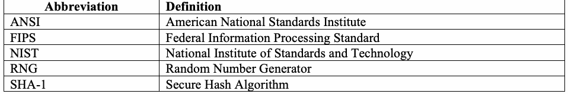
| 略語 | 定義 |
| ANSI | 米国規格協会 |
| FIPS | 連邦情報処理規格 |
| NIST | 米国国立標準技術研究所 |
| RNG | 乱数生成器 |
| SHA-1 | セキュアハッシュアルゴリズム |
1.4 Mathematical Symbols
1.4 数学記号
未レビュー訳In general, the following notation is used throughout this document. However, the tests in this document have been designed and described by multiple authors who may have used slightly different notation. The reader is advised to consider the notation used for each test separate from that notation used in other tests.
一般に、本文書全体では次の表記法を用いる。ただし、本文書の各検定は複数の著者によって設計・記述されており、著者ごとにわずかに異なる表記法が使われている場合がある。読者は、各検定で使われる表記法を、他の検定で使われる表記法とは別個に考慮することが推奨される。
未レビュー訳| Symbol | Meaning |
|---|---|
| \(\lfloor x\rfloor\) | The floor function of \(x\): for a given real positive \(x\), \(\lfloor x\rfloor=x-g\), where \(\lfloor x\rfloor\) is a non-negative integer, and \(0\le g<1\). |
| \(\alpha\) | The significance level. |
| \(d\) | The normalized difference between observed and expected numbers of frequency components. See Sections 2.6 and 3.6. |
| \(\nabla\psi_m^2(\mathrm{obs});\ \nabla^2\psi_m^2(\mathrm{obs})\) | Measures of how well observed values match expected values. See Sections 2.11 and 3.11. |
| \(E[\,]\) | The expected value of a random variable. |
| \(\varepsilon\) | The original input string of zero and one bits. |
| \(\varepsilon_i\) | The \(i\)th bit in the original sequence \(\varepsilon\). |
| \(H_0\) | The null hypothesis: the sequence is random. |
| \(\log(x)\) | The natural logarithm: \(\log(x)=\log_e(x)=\ln(x)\). |
| \(\log_2(x)\) | \(\ln(x)/\ln(2)\), where ln is the natural logarithm. |
| \(M\) | The number of bits in a substring (block) being tested. |
| \(N\) | The number of \(M\)-bit blocks to be tested. |
| \(n\) | The number of bits in the stream being tested. |
| \(f_n\) | The sum of the \(\log_2\) distances between matching \(L\)-bit templates, i.e., the sum of the number of digits in the distance between \(L\)-bit templates. See Sections 2.9 and 3.9. |
| \(\pi\) | \(3.14159\ldots\) unless defined otherwise for a specific test. |
| \(\sigma\) | The standard deviation: \(\sqrt{\int(x-\mu)^2 f(x)\,dx}\). |
| \(\sigma^2\) | The variance, equal to the square of the standard deviation. |
| \(s_{\mathrm{obs}}\) | The observed statistic in the Frequency test. |
| \(S_n\) | The \(n\)th partial sum for values \(X_i=\{-1,+1\}\); i.e., the sum of the first \(n\) values of \(X_i\). |
| \(\sum\) | The summation symbol. |
| \(\Phi\) | Standard Normal Cumulative Distribution Function; see Section 5.5.3. |
| \(\xi_j\) | The total number of times a given state occurs in the identified cycles. See Sections 2.15 and 3.15. |
| \(X_i\) | The elements of the ±1 string, where \(X_i=2\varepsilon_i-1\). |
| 記号 | 意味 |
|---|---|
| \(\lfloor x\rfloor\) | \(x\)の床関数（切り捨て関数）：与えられた正の実数\(x\)に対して、\(\lfloor x\rfloor=x-g\)（ここで\(\lfloor x\rfloor\)は非負整数であり、\(0\le g<1\)）。 |
| \(\alpha\) | 有意水準。 |
| \(d\) | 周波数成分の観測数と期待数との間の正規化された差。セクション2.6および3.6を参照。 |
| \(\nabla\psi_m^2(\mathrm{obs});\ \nabla^2\psi_m^2(\mathrm{obs})\) | 観測値が期待値とどの程度よく一致しているかの尺度。セクション2.11および3.11を参照。 |
| \(E[\,]\) | 確率変数の期待値。 |
| \(\varepsilon\) | 0と1のビットからなる元の入力列。 |
| \(\varepsilon_i\) | 元の数列\(\varepsilon\)における第\(i\)ビット。 |
| \(H_0\) | 帰無仮説：数列はランダムである。 |
| \(\log(x)\) | 自然対数：\(\log(x)=\log_e(x)=\ln(x)\)。 |
| \(\log_2(x)\) | \(\ln(x)/\ln(2)\)（ここでlnは自然対数）。 |
| \(M\) | テスト対象の部分列（ブロック）内のビット数。 |
| \(N\) | テスト対象となる\(M\)ビットブロックの数。 |
| \(n\) | テスト対象のストリーム内のビット数。 |
| \(f_n\) | 一致する\(L\)ビットテンプレート間の\(\log_2\)個の距離の合計、すなわち、\(L\)ビットテンプレート間の距離における桁数の合計。セクション2.9および3.9を参照。 |
| \(\pi\) | \(3.14159\ldots\)（特定のテストで別途定義されていない限り）。 |
| \(\sigma\) | 標準偏差：\(\sqrt{\int(x-\mu)^2 f(x)\,dx}\)。 |
| \(\sigma^2\) | 分散であり、標準偏差の二乗に等しい。 |
| \(s_{\mathrm{obs}}\) | Frequency検定における観測統計量。 |
| \(S_n\) | 値\(X_i=\{-1,+1\}\)に対する第\(n\)部分和。すなわち、\(X_i\)の最初の\(n\)個の値の合計。 |
| \(\sum\) | 総和記号。 |
| \(\Phi\) | 標準正規累積分布関数。セクション5.5.3を参照。 |
| \(\xi_j\) | 特定されたサイクルにおいて所定の状態が出現する総回数。セクション2.15および3.15を参照。 |
| \(X_i\) | ±1列の要素（ここで\(X_i=2\varepsilon_i-1\)）。 |
| \(\chi^2\) | The [theoretical] chi-square distribution; used as a test statistic; also, a test statistic that follows the \(\chi^2\) distribution. |
| \(\chi^2(\mathrm{obs})\) | The chi-square statistic computed on the observed values. See Sections 2.2, 2.4, 2.5, 2.7, 2.8, 2.10, 2.12, 2.14, and the corresponding sections of Section 3. |
| \(V_n\) | The expected number of runs that would occur in a sequence of length \(n\) under an assumption of randomness See Sections 2.3 and 3.3. |
| \(V_n(\mathrm{obs})\) | The observed number of runs in a sequence of length \(n\). See Sections 2.3 and 3.3. |
| \(\chi^2\) | ［理論上の］カイ二乗分布。検定統計量として使用される。また、\(\chi^2\)分布に従う検定統計量。 |
| \(\chi^2(\mathrm{obs})\) | 観測値に基づいて計算されたカイ二乗統計量。セクション2.2、2.4、2.5、2.7、2.8、2.10、2.12、2.14、およびセクション3の対応するセクションを参照。 |
| \(V_n\) | ランダム性の仮定の下で長さ\(n\)の数列に現れるランの期待数。セクション2.3および3.3を参照。 |
| \(V_n(\mathrm{obs})\) | 長さ\(n\)の数列における観測されたランの数。セクション2.3および3.3を参照。 |
2. Random Number Generation Tests
2. 乱数生成検定
未レビュー訳The NIST Test Suite is a statistical package consisting of 15 tests that were developed to test the randomness of (arbitrarily long) binary sequences produced by either hardware or software based cryptographic random or pseudorandom number generators. These tests focus on a variety of different types of non-randomness that could exist in a sequence. Some tests are decomposable into a variety of subtests. The 15 tests are:
NIST検定スイートは、ハードウェアまたはソフトウェアに基づく暗号用乱数生成器もしくは疑似乱数生成器が生成する（任意に長い）二進系列のランダム性を検定するために開発された、15種類の検定からなる統計パッケージである。これらの検定は、系列に存在し得るさまざまな種類の非ランダム性に着目する。一部の検定は複数のサブ検定に分割できる。15種類の検定は次のとおりである。
未レビュー訳1.The Frequency (Monobit) Test,
1.度数（単一ビット）検定、
未レビュー訳2.Frequency Test within a Block,
2.ブロック内の度数検定、
未レビュー訳3.The Runs Test,
3.ラン検定、
未レビュー訳4.Tests for the Longest-Run-of-Ones in a Block,
4.ブロック内の最長連続一検定、
未レビュー訳5.The Binary Matrix Rank Test,
5.二進行列ランク検定、
未レビュー訳6.The Discrete Fourier Transform (Spectral) Test,
6.離散フーリエ変換（スペクトル）検定、
未レビュー訳7.The Non-overlapping Template Matching Test,
7.非重複テンプレートマッチング検定、
未レビュー訳8.The Overlapping Template Matching Test,
8.重複テンプレートマッチング検定、
未レビュー訳9.Maurer's "Universal Statistical" Test,
9.Maurer's "Universal Statistical"検定、
未レビュー訳10.The Linear Complexity Test,
10.線形複雑度検定、
未レビュー訳11.The Serial Test,
11.系列検定、
未レビュー訳12.The Approximate Entropy Test,
12.近似エントロピー検定、
未レビュー訳13.The Cumulative Sums (Cusums) Test,
13.累積和（Cusums）検定、
未レビュー訳14.The Random Excursions Test, and
14.ランダム逸脱検定、および
未レビュー訳15.The Random Excursions Variant Test.
15.ランダム逸脱変形検定。
未レビュー訳This section (Section 2) consists of 15 subsections, one subsection for each test. Each subsection provides a high level description of the particular test. The corresponding subsections in Section 3 provide the technical details for each test.
本セクション（セクション2）は15の小節からなり、各小節はそれぞれ一つの検定に対応する。各小節では、該当する検定の概要を説明する。セクション3の対応する小節では、各検定の技術的詳細を説明する。
未レビュー訳Section 4 provides a discussion of testing strategy and the interpretation of test results. The order of the application of the tests in the test suite is arbitrary. However, it is recommended that the Frequency test be run first, since this supplies the most basic evidence for the existence of non-randomness in a sequence, specifically, non-uniformity. If this test fails, the likelihood of other tests failing is high. (Note: The most time-consuming statistical test is the Linear Complexity test; see Sections 2.10 and 3.10).
セクション4では、検定戦略と検定結果の解釈について説明する。検定スイート内の検定を適用する順序は任意である。ただし、度数検定を最初に実行することが推奨される。これは、系列に非ランダム性、具体的には非一様性が存在することについて、最も基本的な証拠を得られるためである。この検定に失敗した場合、他の検定も失敗する可能性が高い。（注：最も時間のかかる統計検定は線形複雑度検定である。セクション2.10および3.10を参照。）
未レビュー訳Section 5 provides a user's guide for setting up and running the tests, and a discussion on program layout. The statistical package includes source code and sample data sets. The test code was developed in ANSI C. Some inputs are assumed to be global values rather than calling parameters.
セクション5では、検定の設定および実行に関するユーザー's ガイドを示し、プログラム構成について説明する。統計パッケージにはソースコードとサンプルデータセットが含まれる。検定コードはANSI Cで開発された。一部の入力は、呼び出しパラメータではなくグローバル値であると想定される。
未レビュー訳A number of tests in the test suite have the standard normal and the chi-square (\(\chi^2\)) as reference distributions. If the sequence under test is in fact non-random, the calculated test statistic will fall in extreme regions of the reference distribution. The standard normal distribution (i.e., the bell-shaped curve) is used to compare the value of the test statistic obtained from the RNG with the expected value of the statistic under the assumption of randomness. The test statistic for the standard normal distribution is of the form \(z = (x - \mu)/\sigma\), where \(x\) is the sample test statistic value, and \(\mu\) and \(\sigma^2\) are the expected value and the variance of the test statistic. The \(\chi^2\) distribution (i.e., a left skewed curve) is used to compare the goodness-of-fit of the observed frequencies of a sample measure to the corresponding expected frequencies of the hypothesized distribution. The test statistic is of the form \(\chi^2 = \sum\left((o_i - e_i)^2 / e_i\right)\), where \(o_i\) and \(e_i\) are the observed and expected frequencies of occurrence of the measure, respectively.
テストスイート内の多くのテストは、標準正規分布およびカイ二乗分布（\(\chi^2\)）を参照分布とする。テスト対象の数列が実際には非ランダムである場合、計算された検定統計量は参照分布の極端な領域に入る。標準正規分布（すなわち釣鐘型の曲線）は、RNGから得られた検定統計量の値を、ランダム性の仮定の下での統計量の期待値と比較するために使用される。標準正規分布の検定統計量は \(z = (x - \mu)/\sigma\) の形式であり、ここで \(x\) は標本検定統計量の値、\(\mu\) および \(\sigma^2\) は検定統計量の期待値および分散である。\(\chi^2\) 分布（すなわち左に歪んだ曲線）は、標本尺度の観測度数と、それに対応する仮説分布の期待度数との適合度を比較するために使用される。検定統計量は \(\chi^2 = \sum\left((o_i - e_i)^2 / e_i\right)\) の形式であり、ここで \(o_i\) および \(e_i\) は、それぞれその尺度の出現の観測度数および期待度数である。
For many of the tests in this test suite, the assumption has been made that the size of the sequence length, \(n\), is large (of the order \(10^3\) to \(10^7\)). For such large sample sizes of \(n\), asymptotic reference distributions have been derived and applied to carry out the tests. Most of the tests are applicable for smaller values of \(n\). However, if used for smaller values of \(n\), the asymptotic reference distributions would be inappropriate and would need to be replaced by exact distributions that would commonly be difficult to compute.
このテストスイートの多くのテストでは、数列の長さ \(n\) が大きい（\(10^3\) から \(10^7\) のオーダー）と仮定している。このように大きな標本サイズ \(n\) に対して、漸近参照分布が導出され、テストの実行に適用されている。テストのほとんどは、より小さな \(n\) の値にも適用できる。しかし、より小さな \(n\) の値に使用する場合、漸近参照分布は不適切となり、一般に計算が困難な正確な分布に置き換える必要がある。
Note: For many of the examples throughout Section 2, small sample sizes are used for illustrative purposes only, e.g., n = 10. The normal approximation is not really applicable for these examples.
注：セクション2全体の多くの例では、説明のみを目的として小さい標本サイズが使われている（例：n = 10）。これらの例には正規近似は実際には適用できない。
未レビュー訳2.1 Frequency (Monobit) Test
2.1 度数（単一ビット）検定
未レビュー訳2.1.1 Test Purpose
2.1.1 検定の目的
未レビュー訳The focus of the test is the proportion of zeroes and ones for the entire sequence. The purpose of this test is to determine whether the number of ones and zeros in a sequence are approximately the same as would be expected for a truly random sequence. The test assesses the closeness of the fraction of ones to ½, that is, the number of ones and zeroes in a sequence should be about the same. All subsequent tests depend on the passing of this test.
この検定は、系列全体における零と一の割合に着目する。この検定の目的は、系列中の一と零の数が、真にランダムな系列について期待される数とおおむね等しいかどうかを判定することである。この検定は、一の割合が½に近いか、すなわち、系列中の一と零の数がおおむね同じであるべきかを評価する。以降のすべての検定は、この検定に合格することを前提とする。
未レビュー訳2.1.2 Function Call
2.1.2 関数呼び出し
未レビュー訳Frequency(n), where:
Frequency(n)：ここで、
未レビュー訳n The length of the bit string.
n ビット列の長さ。
未レビュー訳Additional input used by the function, but supplied by the testing code:
関数が使用する追加の入力。ただし、これらは検定コードから与えられる。
未レビュー訳\(\varepsilon\) — The sequence of bits generated by the RNG or PRNG under test. This exists as a global structure at the time of the function call; \(\varepsilon=\varepsilon_1,\varepsilon_2,\ldots,\varepsilon_n\).
\(\varepsilon\)：検定対象のRNGまたはPRNGが生成したビット系列。関数呼び出し時にはグローバルなデータ構造として存在する。\(\varepsilon=\varepsilon_1,\varepsilon_2,\ldots,\varepsilon_n\)。
2.1.3 Test Statistic and Reference Distribution
2.1.3 検定統計量と参照分布
未レビュー訳\(s_{\mathrm{obs}}\): The absolute value of the sum of the \(X_i\) (where \(X_i=2\varepsilon_i-1=\pm1\)) in the sequence divided by the square root of the sequence length.
\(s_{\mathrm{obs}}\)：系列中の\(X_i\)（\(X_i=2\varepsilon_i-1=\pm1\)）の和の絶対値を、系列長の平方根で割った値。
The reference distribution for the test statistic is half normal (for large \(n\)). If \(z=s_{\mathrm{obs}}/\sqrt2\) is normally distributed, then \(|z|\) is half normally distributed (see Section 3.1). In a random sequence, plus and minus ones tend to cancel, so the statistic is near zero. An excess of either ones or zeroes makes it larger.
検定統計量の参照分布は、\(n\)が大きい場合、半正規分布となる。\(z=s_{\mathrm{obs}}/\sqrt2\)が正規分布に従うなら、\(|z|\)は半正規分布に従う（3.1節参照）。ランダムな系列では正負の一が相殺され、統計量は零に近づく。一または零が多すぎる場合は大きくなる。
2.1.4 Test Description
2.1.4 検定の説明
未レビュー訳(1) Conversion to \(\pm1\): Convert the zeroes and ones of the input sequence \(\varepsilon\) to −1 and +1, and sum them.
（1）\(\pm1\)への変換：入力系列\(\varepsilon\)の零と一を−1と+1に変換し、合計する。
For example, if \(\varepsilon=1011010101\), then \(n=10\) and \(S_n=1+(-1)+1+1+(-1)+1+(-1)+1+(-1)+1=2\).
例えば、\(\varepsilon=1011010101\)なら\(n=10\)であり、\(S_n=1+(-1)+1+1+(-1)+1+(-1)+1+(-1)+1=2\)となる。
（2）次の検定統計量を計算する。
For the example in this section,
(3) Compute
where erfc is the complementary error function defined in Section 5.5.3.
本節の例では次の値となる。
（3）次の式でP値を計算する。
erfcは5.5.3節で定義する相補誤差関数である。
For the example in this section,
本節の例では次の値となる。
2.1.5 Decision Rule (at the 1% Level)
2.1.5 判定規則（1%水準）
未レビュー訳If the computed P-value is < 0.01, then conclude that the sequence is non-random. Otherwise, conclude that the sequence is random.
計算されたP値が < 0.01 の場合、系列は非ランダムであると結論する。それ以外の場合、系列はランダムであると結論する。
未レビュー訳2.1.6 Conclusion and Interpretation of Results
2.1.6 結論と結果の解釈
未レビュー訳Since the \(P\text{-value}\) obtained in step 3 of Section 2.1.4 is \(\ge0.01\) (i.e., \(P\text{-value}=0.527089\)), the sequence is concluded to be random.
A small \(P\text{-value}<0.01\) would be caused by a large \(|S_n|\) or \(|s_{\mathrm{obs}}|\). Large positive \(S_n\) indicates too many ones; large negative \(S_n\) indicates too many zeroes.
2.1.4節の手順3で得た\(P\text{値}\)は\(\ge0.01\)（すなわち、\(P\text{値}=0.527089\)）なので、系列はランダムであると結論づける。
小さな\(P\text{値}<0.01\)は、\(|S_n|\)または\(|s_{\mathrm{obs}}|\)が大きいことによって生じる。\(S_n\)が大きな正の値なら1が多すぎることを、\(S_n\)が大きな負の値なら0が多すぎることを示す。
2.1.7 Input Size Recommendation
2.1.7 入力サイズの推奨
未レビュー訳It is recommended that each sequence to be tested consist of a minimum of 100 bits (i.e., \(n\ge100\)).
検定する各系列は、少なくとも100ビット（\(n\ge100\)）で構成することを推奨する。
2.1.8 Example
2.1.8 例
未レビュー訳(input) \(\varepsilon=\) 1100100100001111110110101010001000100001011010001100001000110100110001001100011001100010100010111000
（入力）\(\varepsilon=\) 1100100100001111110110101010001000100001011010001100001000110100110001001100011001100010100010111000
(input)
（入力）
未レビュー訳n = 100
n = 100
未レビュー訳（処理）\(S_{100}=-16\)
（処理）\(s_{\mathrm{obs}}=1.6\)
(output) P-value = 0.109599
（出力）P値 = 0.109599
未レビュー訳(conclusion) Since \(P\text{-value}\ge0.01\), accept the sequence as random.
（結論）\(P\text{値}\ge0.01\)なので、この系列をランダムと判定する。
2.2 Frequency Test within a Block
2.2 ブロック内の度数検定
未レビュー訳2.2.1 Test Purpose
2.2.1 検定の目的
未レビュー訳The focus of the test is the proportion of ones within M-bit blocks. The purpose of this test is to determine whether the frequency of ones in an M-bit block is approximately M/2, as would be expected under an assumption of randomness. For block size M=1, this test degenerates to test 1, the Frequency (Monobit) test.
この検定は、Mビットブロック内の一の割合に着目する。この検定の目的は、ランダム性を仮定した場合に期待される状態と比べ、Mビットブロック内の一の頻度がおおむねM/2であるかどうかを判定することである。ブロックサイズM=1の場合、この検定は検定1、度数（単一ビット）検定と同じになる。
未レビュー訳2.2.2 Function Call
2.2.2 関数呼び出し
未レビュー訳BlockFrequency(M,n), where:
BlockFrequency(M,n)：ここで、
未レビュー訳M The length of each block.
M 各ブロックの長さ。
未レビュー訳n The length of the bit string.
n ビット列の長さ。
未レビュー訳Additional input used by the function, but supplied by the testing code:
関数が使用する追加の入力。ただし、これらは検定コードから与えられる。
未レビュー訳\(\varepsilon\) — The sequence of bits generated by the RNG or PRNG under test. This exists as a global structure at the time of the function call; \(\varepsilon=\varepsilon_1,\varepsilon_2,\ldots,\varepsilon_n\).
\(\varepsilon\)：検定対象のRNGまたはPRNGが生成したビット系列。関数呼び出し時にはグローバルなデータ構造として存在する。\(\varepsilon=\varepsilon_1,\varepsilon_2,\ldots,\varepsilon_n\)。
2.2.3 Test Statistic and Reference Distribution
2.2.3 検定統計量と参照分布
未レビュー訳\(\chi^2(\mathrm{obs})\): A measure of how well the observed proportion of ones within a given \(M\)-bit block matches the expected proportion \(1/2\).
\(\chi^2(\mathrm{obs})\)：\(M\)ビットのブロックで観測した一の割合が、期待値\(1/2\)にどの程度一致するかを表す。
The reference distribution for the test statistic is a \(\chi^2\) distribution.
検定統計量の参照分布は\(\chi^2\)分布である。
2.2.4 Test Description
2.2.4 検定の説明
未レビュー訳(1) Partition the input sequence into \(N=\left\lfloor\frac nM\right\rfloor\) non-overlapping blocks. Discard unused bits.
For example, if \(n=10,\ M=3,\ \varepsilon=0110011010\), three blocks \((N=3)\) are created: 011, 001 and 101. Discard the final zero.
(2) Determine the proportion \(\pi_i\) of ones in each \(M\)-bit block:
For this example, \(\pi_1=2/3,\ \pi_2=1/3,\ \pi_3=2/3\).
(3) Compute the \(\chi^2\) statistic:
（1）入力系列を、重複しない\(N=\left\lfloor\frac nM\right\rfloor\)個のブロックに分割し、余ったビットを破棄する。
例えば、\(n=10,\ M=3,\ \varepsilon=0110011010\)なら、011、001、101の3ブロック（\((N=3)\)）を作り、最後の零を破棄する。
（2）各\(M\)ビットブロックの一の割合\(\pi_i\)を求める。
この例では、\(\pi_1=2/3,\ \pi_2=1/3,\ \pi_3=2/3\)となる。
（3）\(\chi^2\)統計量を計算する。
(4) Compute
Here igamc is the incomplete gamma function \(Q(a,x)\) defined in Section 5.5.3.
（4）次の式でP値を計算する。
igamcは5.5.3節で定義する不完全ガンマ関数\(Q(a,x)\)である。
Note: When comparing this section against the technical description in Section 3.2, note that Q(a,x) = 1-P(a,x).
注：本セクションとセクション3.2の技術的説明を比較する際は、Q(a,x) = 1-P(a,x)であることに注意する。
未レビュー訳For this example,
この例では、
2.2.5 Decision Rule (at the 1% Level)
2.2.5 判定規則（1%水準）
未レビュー訳If the computed P-value is < 0.01, then conclude that the sequence is non-random. Otherwise, conclude that the sequence is random.
計算されたP値が < 0.01 の場合、系列は非ランダムであると結論する。それ以外の場合、系列はランダムであると結論する。
未レビュー訳2.2.6 Conclusion and Interpretation of Results
2.2.6 結論と結果の解釈
未レビュー訳Since the \(P\text{-value}\) obtained in step 4 of Section 2.2.4 is \(\ge \) 0.01 (i.e., \(P\text{-value}\) = 0.801252), the conclusion is that the sequence is random.
セクション 2.2.4 のステップ 4 で得られた \(P\text{値}\) が \(\ge \) 0.01（すなわち \(P\text{値}\) = 0.801252）であるため、その数列はランダムであると結論付けられる。
未レビュー訳Note that small P-values (< 0.01) would have indicated a large deviation from the equal proportion of ones and zeros in at least one of the blocks.
P値が小さい（< 0.01）場合、少なくとも一つのブロックで一と零の割合が等しい状態から大きく逸脱していることを示す。
未レビュー訳2.2.7 Input Size Recommendation
2.2.7 入力サイズの推奨
未レビュー訳Each sequence should have at least 100 bits (\(n\ge100\)). Note that \(n\ge MN\). Select block size \(M\) so that \(M\ge20,\ M>0.01n,\ N<100\).
各系列には少なくとも100ビット（\(n\ge100\)）を推奨する。\(n\ge MN\)に注意する。ブロック長\(M\)は、\(M\ge20,\ M>0.01n,\ N<100\)となるように選ぶ。
2.2.8 Example
2.2.8 例
未レビュー訳(input) \(\varepsilon=\) 1100100100001111110110101010001000100001011010001100001000110100110001001100011001100010100010111000
（入力）\(\varepsilon=\) 1100100100001111110110101010001000100001011010001100001000110100110001001100011001100010100010111000
(input)
（入力）
未レビュー訳n = 100
n = 100
未レビュー訳(input)
（入力）
未レビュー訳M = 10
M = 10
未レビュー訳(processing) N = 10
（処理）N = 10
未レビュー訳(processing) \(\chi^2=7.2\)
（処理）\(\chi^2=7.2\)
(output) P-value = 0.706438
（出力）P値 = 0.706438
未レビュー訳(conclusion) Since \(P\text{-value}\ge0.01\), accept the sequence as random.
（結論）\(P\text{値}\ge0.01\)なので、この系列をランダムと判定する。
2.3 Runs Test
2.3 ラン検定
未レビュー訳2.3.1 Test Purpose
2.3.1 検定の目的
未レビュー訳The focus of this test is the total number of runs in the sequence, where a run is an uninterrupted sequence of identical bits. A run of length k consists of exactly k identical bits and is bounded before and after with a bit of the opposite value. The purpose of the runs test is to determine whether the number of runs of ones and zeros of various lengths is as expected for a random sequence. In particular, this test determines whether the oscillation between such zeros and ones is too fast or too slow.
この検定は、系列内のランの総数に着目する。ランとは、同じビットが途切れずに連続する区間である。長さkのランは、同一のビットがちょうどk個連続したもので、その前後は反対の値のビットで区切られる。ラン検定の目的は、さまざまな長さの一および零のランの数が、ランダム系列で期待されるとおりかどうかを判定することである。特に、この検定では、そのような零と一の交替が速すぎるか遅すぎるかを判定する。
未レビュー訳2.3.2 Function Call
2.3.2 関数呼び出し
未レビュー訳Runs(n), where:
Runs(n)：ここで、
未レビュー訳n The length of the bit string.
n ビット列の長さ。
未レビュー訳Additional inputs for the function, but supplied by the testing code:
関数への追加の入力。ただし、これらは検定コードから与えられる。
未レビュー訳\(\varepsilon\) — The sequence of bits generated by the RNG or PRNG under test. This exists as a global structure at the time of the function call; \(\varepsilon=\varepsilon_1,\varepsilon_2,\ldots,\varepsilon_n\).
\(\varepsilon\)：検定対象のRNGまたはPRNGが生成したビット系列。関数呼び出し時にはグローバルなデータ構造として存在する。\(\varepsilon=\varepsilon_1,\varepsilon_2,\ldots,\varepsilon_n\)。
2.3.3 Test Statistic and Reference Distribution
2.3.3 検定統計量と参照分布
未レビュー訳\(V_n(\mathrm{obs})\): Total number of runs (zero runs plus one runs) across all \(n\) bits.
\(V_n(\mathrm{obs})\)：全\(n\)ビットにおける連の総数。零の連と一の連の数を合計する。
The reference distribution for the test statistic is a \(\chi^2\) distribution.
検定統計量の参照分布は\(\chi^2\)分布である。
2.3.4 Test Description
2.3.4 検定の説明
未レビュー訳Note: The Runs test carries out a Frequency test as a prerequisite.
注：ラン検定では、前提条件として度数検定を実施する。
未レビュー訳(1) Compute the pre-test proportion of ones in the input sequence:
（1）入力系列における1の事前検定用の割合を計算する。
For example, if \(\varepsilon=1001101011\), then \(n=10,\ \pi=6/10=3/5\).
(2) Check the prerequisite Frequency test. If \(\left|\pi-\frac12\right|\ge\tau\), do not perform the Runs test and set \(P\text{-value}=0.0000\). The test code defines \(\tau=2/\sqrt n\).
In this example, \(\tau=2/\sqrt{10}\approx0.63246\) and \(|3/5-1/2|=0.1<\tau\), so the prerequisite is satisfied and the Runs test is applicable.
(3) Compute the statistic:
For \(\varepsilon=1001101011\), \(V_{10}(\mathrm{obs})=(1+0+1+0+1+1+1+1+0)+1=7\).
(4) Compute:
原本照合メモ: ['原本p.28は |π−1/2|<τ の例について「the test is not run」と述べた直後、「the runs test is applicable」と述べる。両者が矛盾するため、式と前提条件を保持し、後者に沿った説明であることを記録する。']
例えば、\(\varepsilon=1001101011\)なら、\(n=10,\ \pi=6/10=3/5\)となる。
（2）前提条件であるFrequency検定を確認する。\(\left|\pi-\frac12\right|\ge\tau\)ならRuns検定を実施せず、\(P\text{値}=0.0000\)とする。検定コードでは\(\tau=2/\sqrt n\)と定義している。
この例では、\(\tau=2/\sqrt{10}\approx0.63246\)かつ\(|3/5-1/2|=0.1<\tau\)なので、前提条件を満たし、Runs検定を適用できる。
（3）検定統計量を計算する。
\(\varepsilon=1001101011\)の場合、\(V_{10}(\mathrm{obs})=(1+0+1+0+1+1+1+1+0)+1=7\)となる。
（4）次の式でP値を計算する。
For the example:
この例では、次の値となる。
2.3.5 Decision Rule (at the 1% Level)
2.3.5 判定規則（1%水準）
未レビュー訳If the computed P-value is < 0.01, then conclude that the sequence is non-random. Otherwise, conclude that the sequence is random.
計算されたP値が < 0.01 の場合、系列は非ランダムであると結論する。それ以外の場合、系列はランダムであると結論する。
未レビュー訳2.3.6 Conclusion and Interpretation of Results
2.3.6 結論と結果の解釈
未レビュー訳Since the \(P\text{-value}\) obtained in step 4 of Section 2.3.4 is \(\ge \) 0.01 (i.e., \(P\text{-value}\) = 0.147232), the conclusion is that the sequence is random.
Note that a large value for \(V_{n} ( \mathrm{obs} )\) would have indicated an oscillation in the string which is too fast; a small value would have indicated that the oscillation is too slow. (An oscillation is considered to be a change from a one to a zero or vice versa.) A fast oscillation occurs when there are a lot of changes, e.g., 010101010 oscillates with every bit. A stream with a slow oscillation has fewer runs than would be expected in a random sequence, e.g., a sequence containing 100 ones, followed by 73 zeroes, followed by 127 ones (a total of 300 bits) would have only three runs, whereas 150 runs would be expected.
セクション 2.3.4 のステップ 4 で得られた \(P\text{値}\) が \(\ge \) 0.01（すなわち \(P\text{値}\) = 0.147232）であるため、その数列はランダムであると結論付けられる。
\n\(V_{n} ( \mathrm{obs} )\) の値が大きい場合は、文字列内の振動が速すぎることを示し、値が小さい場合は振動が遅すぎることを示していた点に注意すること。（振動とは、1から0への変化、またはその逆の変化とみなされる。）速い振動は変化が多い場合に発生する。例えば、010101010 は各ビットごとに振動する。振動が遅いストリームは、ランダムな数列で期待されるよりもランの数が少なくなる。例えば、100個の1、それに続く73個の0、それに続く127個の1（合計300ビット）を含む数列には、ランが3つしかないが、150個のランが期待される。
未レビュー訳2.3.7 Input Size Recommendation
2.3.7 入力サイズの推奨
未レビュー訳It is recommended that each sequence to be tested consist of a minimum of 100 bits (i.e., \(n\ge100\)).
検定する各系列は、少なくとも100ビット（\(n\ge100\)）で構成することを推奨する。
2.3.8 Example
2.3.8 例
未レビュー訳(input) \(\varepsilon=\) 1100100100001111110110101010001000100001011010001100001000110100110001001100011001100010100010111000
（入力）\(\varepsilon=\) 1100100100001111110110101010001000100001011010001100001000110100110001001100011001100010100010111000
(input)
（入力）
未レビュー訳n = 100
n = 100
未レビュー訳（入力）\(\tau=0.02\)
（処理）\(\pi=0.42\)
（処理）\(V_n(\mathrm{obs})=52\)
(output) P-value = 0.500798
（出力）P値 = 0.500798
未レビュー訳(conclusion) Since \(P\text{-value}\ge0.01\), accept the sequence as random.
（結論）\(P\text{値}\ge0.01\)なので、この系列をランダムと判定する。
2.4 Test for the Longest Run of Ones in a Block
2.4 ブロック内の最長連続一検定
未レビュー訳2.4.1 Test Purpose
2.4.1 検定の目的
未レビュー訳The focus of the test is the longest run of ones within M-bit blocks. The purpose of this test is to determine whether the length of the longest run of ones within the tested sequence is consistent with the length of the longest run of ones that would be expected in a random sequence. Note that an irregularity in the expected length of the longest run of ones implies that there is also an irregularity in the expected length of the longest run of zeroes. Therefore, only a test for ones is necessary. See Section 4.4.
この検定は、Mビットブロック内で一が最長連続する長さに着目する。この検定の目的は、検定対象系列における一の最長連続長が、ランダム系列で期待される一の最長連続長と整合するかどうかを判定することである。期待される最長連続長に不規則性がある場合、零の最長連続長にも不規則性があることを意味する点に注意する。したがって、一についてのみ検定すればよい。セクション4.4を参照。
未レビュー訳2.4.2 Function Call
2.4.2 関数呼び出し
未レビュー訳LongestRunOfOnes(n), where:
LongestRunOfOnes(n)：ここで、
未レビュー訳n The length of the bit string.
n ビット列の長さ。
未レビュー訳Additional input for the function supplied by the testing code:
検定コードから関数に与えられる追加の入力：
未レビュー訳\(\varepsilon\) — The sequence of bits generated by the RNG or PRNG under test. This exists as a global structure at the time of the function call; \(\varepsilon=\varepsilon_1,\varepsilon_2,\ldots,\varepsilon_n\).
\(M\): The length of each block. The test code has been pre-set to accommodate three values for \(M\): \(M=8\), \(M=128\) and \(M=10^4\) in accordance with the following values of sequence length, \(n\):
\(\varepsilon\)：検定対象のRNGまたはPRNGが生成したビット系列。関数呼び出し時にはグローバルなデータ構造として存在する。\(\varepsilon=\varepsilon_1,\varepsilon_2,\ldots,\varepsilon_n\)。
\(M\)：各ブロックの長さ。検定コードでは\(M=8\)、\(M=128\)、\(M=10^4\)の3値をブロック長\(M\)として扱い、次の系列長\(n\)に対応させる。
| Minimum \(n\) | \(M\) |
| 128 | 8 |
| 6272 | 128 |
| 750,000 | \(10^4\) |
| 最小 \(n\) | \(M\) |
| 128 | 8 |
| 6272 | 128 |
| 750,000 | \(10^4\) |
N The number of blocks; selected in accordance with the value of M.
N ブロック数。Mの値に応じて選択する。
未レビュー訳2.4.3 Test Statistic and Reference Distribution
2.4.3 検定統計量と参照分布
未レビュー訳\(χ^{2} ( \mathrm{obs} ) :\) A measure of how well the observed longest run length within \(M -\)bit blocks matches the expected longest length within \(M -\)bit blocks.
The reference distribution for the test statistic is a \(χ^{2}\) distribution.
\(χ^{2} ( \mathrm{obs} ) :\) \(M -\)ビットブロック内で観測された最長ラン長が、\(M -\)ビットブロック内で期待される最長長さにどれだけよく適合しているかの尺度。
\n検定統計量の参照分布は \(χ^{2}\) 分布である。
未レビュー訳2.4.4 Test Description
2.4.4 検定の説明
未レビュー訳(1) Divide the sequence into M-bit blocks.
（1）系列をMビットブロックに分割する。
未レビュー訳(2) Tabulate the frequencies \(\nu_i\) of the longest runs of ones into categories. Each cell counts blocks with the indicated longest-run length. For the supported values of \(M\), the cells contain the following counts:
| \(v_{i}\) | \(M=8\) | \(M=128\) | \(M=10^4\) |
| \(v_{0}\) | \(\le 1\) | \(\le 4\) | \(\le 10\) |
| \(v_{1}\) | 2 | 5 | 11 |
| \(v_{2}\) | 3 | 6 | 12 |
| \(v_{3}\) | \(\ge 4\) | 7 | 13 |
| \(v_{4}\) | 8 | 14 | |
| \(v_{5}\) | \(\ge 9\) | 15 | |
| \(v_{6}\) | \(\ge 16\) |
(2) 1の最長ランの度数 \(\nu_i\) を各カテゴリに集計・表作成する。各セルは、指定された最長ラン長を持つブロックをカウントする。サポートされている \(M\) の値について、セルには以下のカウントが含まれる。
| \(v_{i}\) | \(M=8\) | \(M=128\) | \(M=10^4\) |
| \(v_{0}\) | \(\le 1\) | \(\le 4\) | \(\le 10\) |
| \(v_{1}\) | 2 | 5 | 11 |
| \(v_{2}\) | 3 | 6 | 12 |
| \(v_{3}\) | \(\ge 4\) | 7 | 13 |
| \(v_{4}\) | 8 | 14 | |
| \(v_{5}\) | \(\ge 9\) | 15 | |
| \(v_{6}\) | \(\ge 16\) |
For an example, see Section 2.4.8.
例はセクション2.4.8を参照。
未レビュー訳(3) Compute
where the values for \(\pi_i\) are provided in Section 3.4. The values of \(K\) and \(N\) are determined by the value of \(M\) in accordance with the following table:
(3)
を計算する。ここで、\(\pi_i\)の値はセクション3.4に記載されている。\(K\)および\(N\)の値は、次の表に従って\(M\)の値によって決定される。
未レビュー訳| \(M\) | \(K\) | \(N\) |
| 8 | 3 | 16 |
| 128 | 5 | 49 |
| \(10^4\) | 6 | 75 |
| \(M\) | \(K\) | \(N\) |
| 8 | 3 | 16 |
| 128 | 5 | 49 |
| \(10^4\) | 6 | 75 |
For the example of 2.4.8,
2.4.8の例では、
(4) Compute
For the example,
(4)
を計算する。この例では、
2.4.5 Decision Rule (at the 1% Level)
2.4.5 判定規則（1%水準）
未レビュー訳If the computed P-value is < 0.01, then conclude that the sequence is non-random. Otherwise, conclude that the sequence is random.
計算されたP値が < 0.01 の場合、系列は非ランダムであると結論する。それ以外の場合、系列はランダムであると結論する。
未レビュー訳2.4.6 Conclusion and Interpretation of Results
2.4.6 結論と結果の解釈
未レビュー訳For the example in Section 2.4.8, since the P-value \(\ge \) 0.01 \(( P\text{-value}\) = \(0.180609 ) ,\) the conclusion is that the sequence is random. Note that large values of \(χ^{2} ( \mathrm{obs} )\) indicate that the tested sequence has clusters of ones.
セクション2.4.8の例では、P-value \(\ge \) 0.01 \(( P\text{値}\) = \(0.180609 ) ,\) であるため、この数列はランダムであると結論付けられる。\(χ^{2} ( \mathrm{obs} )\)の値が大きい場合、テストされた数列に1のクラスタ（塊）が存在することを示す点に注意すること。
未レビュー訳2.4.7 Input Size Recommendation
2.4.7 入力サイズの推奨
未レビュー訳It is recommended that each sequence to be tested consists of a minimum of bits as specified in the table in Section 2.4.2.
検定対象の各系列は、セクション2.4.2の表に示すとおり、最低限のビット数を含むことが推奨される。
未レビュー訳2.4.8 Example
2.4.8 例
未レビュー訳For the case where K = 3 and M = 8:
K = 3、M = 8の場合：
未レビュー訳(input) \(ε\) = 11001100000101010110110001001100111000000000001001 00110101010001000100111101011010000000110101111100 1100111001101101100010110010
(入力) \(ε\) = 11001100000101010110110001001100111000000000001001 00110101010001000100111101011010000000110101111100 1100111001101101100010110010
未レビュー訳(input)
（入力）
未レビュー訳n = 128
n = 128
未レビュー訳(processing) Subblock Max-Run
（処理）部分ブロック内の最大ラン長
未レビュー訳Subblock Max-Run
部分ブロック内の最大ラン長
未レビュー訳11001100 (2)
11001100 (2)
未レビュー訳00010101 (1)
00010101 (1)
未レビュー訳01101100 (2)
01101100 (2)
未レビュー訳01001100 (2)
01001100 (2)
未レビュー訳11100000 (3)
11100000 (3)
未レビュー訳00000010 (1)
00000010 (1)
未レビュー訳01001101 (2)
01001101 (2)
未レビュー訳01010001 (1)
01010001 (1)
未レビュー訳00010011 (2)
00010011 (2)
未レビュー訳11010110 (2)
11010110 (2)
未レビュー訳10000000 (1)
10000000 (1)
未レビュー訳11010111 (3)
11010111 (3)
未レビュー訳11001100 (2)
11001100 (2)
未レビュー訳11100110 (3)
11100110 (3)
未レビュー訳11011000 (2)
11011000 (2)
未レビュー訳10110010 (2)
10110010 (2)
未レビュー訳(processing) \(ν_{0} = 4 ; ν_{1} = 9 ; ν_{2} = 3 ; ν_{4} = 0 ; χ^{2} = 4.882457\)
(処理) \(ν_{0} = 4 ; ν_{1} = 9 ; ν_{2} = 3 ; ν_{4} = 0 ; χ^{2} = 4.882457\)
未レビュー訳(output) P-value = 0.180609
（出力）P値 = 0.180609
未レビュー訳(conclusion) Since the \(P\text{-value}\) is \(\ge \) 0.01, accept the sequence as random.
(結論) \(P\text{値}\) は \(\ge \) 0.01 であるため、この数列をランダムとして受け入れる。
未レビュー訳2.5 Binary Matrix Rank Test
2.5 二進行列ランク検定
未レビュー訳2.5.1 Test Purpose
2.5.1 検定の目的
未レビュー訳The focus of the test is the rank of disjoint sub-matrices of the entire sequence. The purpose of this test is to check for linear dependence among fixed length substrings of the original sequence. Note that this test also appears in the DIEHARD battery of tests [7].
この検定は、系列全体を分割した互いに素な部分行列のランクに着目する。この検定の目的は、元の系列内の固定長部分文字列間に線形従属があるかどうかを調べることである。この検定はDIEHARD検定群[7]にも含まれている点に注意する。
未レビュー訳2.5.2 Function Call
2.5.2 関数呼び出し
未レビュー訳Rank(n), where:
Rank(n)：ここで、
未レビュー訳n The length of the bit string.
n ビット列の長さ。
未レビュー訳Additional input used by the function supplied by the testing code:
関数が使用する追加の入力。検定コードから与えられる：
未レビュー訳\(\varepsilon\) — The sequence of bits generated by the RNG or PRNG under test. This exists as a global structure at the time of the function call; \(\varepsilon=\varepsilon_1,\varepsilon_2,\ldots,\varepsilon_n\).
\(\varepsilon\)：検定対象のRNGまたはPRNGが生成したビット系列。関数呼び出し時にはグローバルなデータ構造として存在する。\(\varepsilon=\varepsilon_1,\varepsilon_2,\ldots,\varepsilon_n\)。
M The number of rows in each matrix. For the test suite, M has been set to 32. If other values of M are used, new approximations need to be computed.
M 各行列の行数。検定スイートではMは32に設定されている。Mに別の値を用いる場合、新たな近似値を計算する必要がある。
未レビュー訳\(Q\) The number of columns in each matrix. For the test suite, \(Q\) has been set to 32. If other values of \(Q\) are used, new approximations need to be computed.
\(Q\) 各行列の列数。テストスイートでは、\(Q\) は32に設定されている。\(Q\) に他の値を用いる場合は、新たな近似値を計算する必要がある。
2.5.3 Test Statistic and Reference Distribution
2.5.3 検定統計量と参照分布
未レビュー訳\(χ^{2} ( \mathrm{obs} )\): A measure of how well the observed number of ranks of various orders match the expected number of ranks under an assumption of randomness.
The reference distribution for the test statistic is a \(χ^{2}\) distribution.
\(χ^{2} ( \mathrm{obs} )\): 様々な位数のランクの観測数が、ランダム性の仮定の下でのランクの期待数にどの程度適合しているかの尺度。
検定統計量の基準分布は\(χ^{2}\)分布である。
未レビュー訳2.5.4 Test Description
2.5.4 検定の説明
未レビュー訳(1) Sequentially divide the sequence into \(M \bullet Q -\)bit disjoint blocks; there will exist \(N=\left\lfloor\frac{n}{MQ}\right\rfloor\) such
blocks. Discarded bits will be reported as not being used in the computation within each block. Collect the \(M \bullet Q\) bit segments into \(M\) by \(Q\) matrices. Each row of the matrix is filled with successive \(Q -\)bit blocks of the original sequence \(ε .\)
(1) 数列を\(M \bullet Q -\)ビットの互いに素なブロックに順次分割する。このようなブロックは\(N=\left\lfloor\frac{n}{MQ}\right\rfloor\)個
存在する。破棄されたビットは、各ブロック内の計算で使用されなかったものとして報告される。\(M \bullet Q\)ビットのセグメントを集めて\(M\)行\(Q\)列の行列にする。行列の各行には、元の数列の連続する\(Q -\)ビットブロックが\(ε .\)
のように格納される。未レビュー訳For example, if \(n = 20 , M = Q = 3 ,\) and \(ε = 01011001001010101101 ,\) then partition the stream
into \(N=\left\lfloor\frac{20}{3\cdot3}\right\rfloor=2\) matrices of cardinality \(M \bullet Q ( 3 \bullet 3\) = 9). Note that the last two bits (0 and 1)
consists of the first three bits in row 1, the second set of three bits in row 2, and the third set of three bits in row 3. The second matrix is similarly constructed using the next nine bits in the sequence.
例えば、\(n = 20 , M = Q = 3 ,\)および\(ε = 01011001001010101101 ,\)である場合、ストリームを
基数\(N=\left\lfloor\frac{20}{3\cdot3}\right\rfloor=2\) = 9の行列\(M \bullet Q ( 3 \bullet 3\)個に分割する。最後の2ビット（0と1）は
1行目の最初の3ビット、2行目の次の3ビットの組、3行目の3番目の3ビットの組から構成されることに注意されたい。2番目の行列も同様に、数列の次の9ビットを使用して構築される。
未レビュー訳(2) Determine the binary rank ( \(R_l\) ) of each matrix, where \(l=1,\ldots,N\) . The method for determining the rank is described in Appendix A.
(2) 各行列のバイナリランク（\(R_l\)）を決定する。ここで、\(l=1,\ldots,N\)である。ランクを決定する方法は付録Aに記載されている。
未レビュー訳For the example in this section, the rank of the first matrix is 2 \(( R_{1} = 2 ) ,\) and the rank of the second matrix is 3 \(( R_{2} = 3 ) .\)
(3) Let \(F_{M}\) = the number of matrices with \(R_l\) = \(M\) (full rank),
\(F_{M - 1}\) = the number of matrices with \(R_l\) = \(M - 1\) (full rank - 1), \(N – F_{M}\) \(- F_{M - 1}\) = the number of matrices remaining.
For the example in this section, \(F_{M} = F_{3} = 1 ( R_{2}\) has the full rank of \(3 ) , F_{M - 1} = F_{2} = 1 ( R_{1}\) has rank 2), and no matrix has any lower rank.
本節の例では、最初の行列のランクは2（\(( R_{1} = 2 ) ,\)）であり、2番目の行列のランクは3（\(( R_{2} = 3 ) .\)
）である。(3) \(F_{M}\) = \(R_l\) = \(M\)（フルランク）である行列の数、
\(F_{M - 1}\) = \(R_l\) = \(M - 1\)（フルランク - 1）である行列の数、\(N – F_{M}\) \(- F_{M - 1}\) = 残りの行列の数とする。
本節の例では、\(F_{M} = F_{3} = 1 ( R_{2}\)が行列はフルランクの\(3 ) , F_{M - 1} = F_{2} = 1 ( R_{1}\)を持ち、ランク2の行列は1つ存在し）、それより低いランクを持つ行列は存在しない。
未レビュー訳(4) Compute
(4) 次を計算する:
For the example in this section,
(5) Compute \(P\text{-value}=e^{-\chi^2(\mathrm{obs})/2}\). Since there are 3 classes in the example, the \(P\text{-value}\) for the example is equal to
For the example in this section,
原本照合メモ: ['原本p.33の最後の計算例は指数を正の0.596953/2と印字している。直前の式の負号および結果0.741948と不整合。432dpiで負号がないことを確認し、原本どおり転記した。']
本節の例について、
(5) \(P\text{値}=e^{-\chi^2(\mathrm{obs})/2}\)を計算する。この例では3つのクラスが存在するため、本例の\(P\text{値}\)は
に等しい。本節の例では、
2.5.5 Decision Rule (at the 1% Level)
2.5.5 判定規則（1%水準）
未レビュー訳If the computed P-value is < 0.01, then conclude that the sequence is non-random. Otherwise, conclude that the sequence is random.
計算されたP値が < 0.01 の場合、系列は非ランダムであると結論する。それ以外の場合、系列はランダムであると結論する。
未レビュー訳2.5.6 Conclusion and Interpretation of Results
2.5.6 結論と結果の解釈
未レビュー訳Since the \(P\text{-value}\) obtained in step 5 of Section 2.5.4 is \(\ge \) 0.01 \(( P\text{-value}\) = 0.741948), the conclusion is that the sequence is random.
Note that large values of \(\chi^2(\mathrm{obs})\) (and hence, small \(P\text{-value}s )\) would have indicated a deviation of the rank distribution from that corresponding to a random sequence.
セクション2.5.4のステップ5で得られた\(P\text{値}\)は0.01（\(\ge \) 0.01、\(( P\text{値}\) = 0.741948）であるため、この数列はランダムであるという結論になる。
\(\chi^2(\mathrm{obs})\)の値が大きい（したがって\(P\text{値} )\)が小さい）場合、ランク分布がランダムな数列に対応するものから逸脱していることを示していたはずであることに留意されたい。
未レビュー訳2.5.7 Input Size Recommendation
2.5.7 入力サイズの推奨
未レビュー訳The probabilities for \(M = Q = 32\) have been calculated and inserted into the test code. Other choices of \(M\) and \(Q\) may be selected, but the probabilities would need to be calculated. The minimum number of bits to be tested must be such that \(n \ge 38MQ\) (i.e., at least 38 matrices are created). For \(M = Q = 32 ,\) each sequence to be tested should consist of a minimum of 38,912 bits.
\(M = Q = 32\) に対する確率は計算済みであり、テストコードに挿入されている。\(M\) および \(Q\) の他の選択肢を選択することもできるが、その場合は確率を計算する必要がある。テスト対象となるビットの最小数は、\(n \ge 38MQ\) となる（すなわち、少なくとも38個の行列が作成される）ようなものでなければならない。\(M = Q = 32 ,\) については、テスト対象となる各シーケンスは最低38,912ビットで構成されるべきである。
未レビュー訳2.5.8 Example
2.5.8 例
未レビュー訳(input) \(ε =\) the first 100,000 binary digits in the expansion of \(e\)
（入力）\(ε =\) \(e\)
の展開における最初の100,000個の2進数字未レビュー訳(input)
（入力）
未レビュー訳n = 100000, M = Q = 32 (NOTE: 672 BITS WERE DISCARDED.)
n = 100000, M = Q = 32（注：672ビットを破棄した。）
未レビュー訳(processing) N = 97
（処理）N = 97
未レビュー訳(processing) \(F_M=23,\quad F_{M-1}=60,\quad N-F_M-F_{M-1}=14\)
(processing) \(\chi^2=1.2619656\)
（処理）\(F_M=23,\quad F_{M-1}=60,\quad N-F_M-F_{M-1}=14\)
（処理）\(\chi^2=1.2619656\)
未レビュー訳(output) P-value = 0.532069
（出力）P値 = 0.532069
未レビュー訳(conclusion) Since \(P\text{-value}\ge0.01\), accept the sequence as random.
（結論）\(P\text{値}\ge0.01\)なので、この系列をランダムと判定する。
2.6 Discrete Fourier Transform (Spectral) Test
2.6 離散フーリエ変換（スペクトル）検定
未レビュー訳2.6.1 Test Purpose
2.6.1 検定の目的
未レビュー訳The focus of this test is the peak heights in the Discrete Fourier Transform of the sequence. The purpose of this test is to detect periodic features (i.e., repetitive patterns that are near each other) in the tested sequence that would indicate a deviation from the assumption of randomness. The intention is to detect whether the number of peaks exceeding the 95 % threshold is significantly different than 5 %.
この検定は、系列の離散フーリエ変換におけるピークの高さに着目する。この検定の目的は、検定対象系列における周期的特徴（すなわち、互いに近接して現れる反復パターン）を検出し、ランダム性の仮定からの逸脱を示すことである。95 %のしきい値を超えるピーク数が5 %と有意に異なるかどうかを検出する。
未レビュー訳2.6.2 Function Call
2.6.2 関数呼び出し
未レビュー訳DiscreteFourierTransform(n), where:
DiscreteFourierTransform(n)：ここで、
未レビュー訳n The length of the bit string.
n ビット列の長さ。
未レビュー訳Additional input used by the function, but supplied by the testing code:
関数が使用する追加の入力。ただし、これらは検定コードから与えられる：
未レビュー訳\(\varepsilon\) — The sequence of bits generated by the RNG or PRNG under test. This exists as a global structure at the time of the function call; \(\varepsilon=\varepsilon_1,\varepsilon_2,\ldots,\varepsilon_n\).
\(\varepsilon\)：検定対象のRNGまたはPRNGが生成したビット系列。関数呼び出し時にはグローバルなデータ構造として存在する。\(\varepsilon=\varepsilon_1,\varepsilon_2,\ldots,\varepsilon_n\)。
2.6.3 Test Statistic and Reference Distribution
2.6.3 検定統計量と参照分布
未レビュー訳\(d\): The normalized difference between the observed and the expected number of frequency components that are beyond the 95 % threshold.
\(d\)： 95 %のしきい値を超える周波数成分の、観測された数と期待される数との正規化された差。
The reference distribution for the test statistic is the normal distribution.
検定統計量の参照分布は正規分布である。
未レビュー訳2.6.4 Test Description
2.6.4 検定の説明
未レビュー訳(1) The zeros and ones of the input sequence \(( ε )\) are converted to values of –1 and +1 to create the sequence \(X = x_{1} , x_{2} , \ldots , x_{n} ,\) where \(x_{i} = 2 ε_{i} – 1 .\)
For example, if \(n = 10\) and \(ε = 1001010011 ,\) then \(X = 1 , - 1 , - 1 , 1 , - 1 , 1 , - 1 , - 1 , 1 , 1 .\)
(1) 入力シーケンス \(( ε )\) の0と1は、–1と+1の値に変換され、シーケンス \(X = x_{1} , x_{2} , \ldots , x_{n} ,\) が作成される。ここで、\(x_{i} = 2 ε_{i} – 1 .\)
である。\n例えば、\(n = 10\) かつ \(ε = 1001010011 ,\) である場合、\(X = 1 , - 1 , - 1 , 1 , - 1 , 1 , - 1 , - 1 , 1 , 1 .\)
となる。未レビュー訳(2) Apply a Discrete Fourier transform (DFT) on \(\mathrm{X}\) to produce: \(S = \mathit{DFT}(X)\). A sequence of complex variables is produced which represents periodic components of the sequence of bits at different frequencies (see Section 3.6 for a sample diagram of a DFT result).
(2) \(\mathrm{X}\) に離散フーリエ変換（DFT）を適用し、\(S = \mathit{DFT}(X)\) を得る。異なる周波数におけるビット列の周期成分を表す複素変数の列が生成される（DFT結果の図の例はセクション3.6を参照）。
(3) Calculate \(M=\operatorname{modulus}(S')\equiv|S'|\), where \(S'\) is the substring consisting of the first \(n/2\) elements in \(S\), and the modulus function produces a sequence of peak heights.
(3) \(M=\operatorname{modulus}(S')\equiv|S'|\) を計算する。ここで、\(S'\) は \(S\) の最初の \(n/2\) 個の要素からなる部分文字列であり、絶対値（モジュラス）関数によってピークの高さのシーケンスが生成される。
未レビュー訳(4) Compute \(T=\sqrt{n\log\left(\frac{1}{0.05}\right)}=\) the 95 % peak height threshold value. Under an assumption of
randomness, 95 % of the values obtained from the test should not exceed \(T .\)
(4) 95 %のピーク高の閾値である \(T=\sqrt{n\log\left(\frac{1}{0.05}\right)}=\) を計算する。ランダム性の仮定の下では、
\nテストから得られる値の95 %は \(T .\)
を超えないはずである。未レビュー訳(5) Compute \(N_0=.95n/2\). \(N_0\) is the expected theoretical (95 %) number of peaks (under the assumption of randomness) that are less than \(T .\)
For the example in this section, \(N_{0} =\) 4.75.
(6) Compute \(N_{1}\) = the actual observed number of peaks in \(M\) that are less than \(T .\)
For the example in this section, \(N_{1} =\) 4.
(5) \(N_0=.95n/2\) を計算する。\(N_0\) は、（ランダム性の仮定の下で）\(T .\)
未満となるピークの期待される理論的（95 %）な数である。\n本節の例では、\(N_{0} =\) 4.75 である。
\n(6) \(N_{1}\) = \(M\) において \(T .\)
未満である実際に観測されたピークの数を計算する。\n本節の例では、\(N_{1} =\) 4 である。
未レビュー訳(7)
For the example in this section,
(8) Compute
For the example in this section,
本節の例では、
(8)
を計算する。本節の例では、
2.6.5 Decision Rule (at the 1% Level)
2.6.5 判定規則（1%水準）
未レビュー訳If the computed P-value is < 0.01, then conclude that the sequence is non-random. Otherwise, conclude that the sequence is random.
計算されたP-valueが < 0.01 の場合、その系列は非ランダムであると結論する。それ以外の場合、その系列はランダムであると結論する。
未レビュー訳2.6.6 Conclusion and Interpretation of Results
2.6.6 結論と結果の解釈
未レビュー訳Since the \(P\text{-value}\) obtained in step 8 of Section 2.6.4 is \(\ge \) 0.01 (P-value = 0.029523), the conclusion is that the sequence is random.
2.6.4節のステップ8で得られた\(P\text{値}\)は0.01（P-value = 0.029523）\(\ge \)であるため、その数列はランダムであると結論付けられる。
未レビュー訳A d value that is too low would indicate that there were too few peaks (< 95%) below T, and too many peaks (more than 5%) above T.
dの値が低すぎる場合、T未満のピークが少なすぎ（< 95%）、Tを超えるピークが多すぎる（5%超）ことを示す。
未レビュー訳2.6.7 Input Size Recommendation
2.6.7 入力サイズに関する推奨事項
未レビュー訳It is recommended that each sequence to be tested consist of a minimum of 1000 bits (i.e., \(n \ge 1000 ) .\)
テスト対象となる各数列は、最低1000ビットで構成することが推奨される（すなわち、\(n \ge 1000 ) .\)
未レビュー訳2.6.8 Example
2.6.8 例
未レビュー訳(input) \(\varepsilon=\) 1100100100001111110110101010001000100001011010001100001000110100110001001100011001100010100010111000
（入力）\(\varepsilon=\) 1100100100001111110110101010001000100001011010001100001000110100110001001100011001100010100010111000
(input)
(入力)
未レビュー訳n = 100
n = 100
未レビュー訳（処理中）\(N_{1}\) = 46
（処理中）\(N_{0}\) = 47.5
未レビュー訳(processing) d = -1.376494
(処理) d = -1.376494
未レビュー訳(output) P-value = 0.168669
(出力) P-value = 0.168669
未レビュー訳(conclusion) Since \(P\text{-value}\ge0.01\), accept the sequence as random.
（結論）\(P\text{値}\ge0.01\)なので、この系列をランダムと判定する。
2.7 Non-overlapping Template Matching Test
2.7 非重複テンプレートマッチング検定
未レビュー訳2.7.1 Test Purpose
2.7.1 検定の目的
未レビュー訳The focus of this test is the number of occurrences of pre-specified target strings. The purpose of this test is to detect generators that produce too many occurrences of a given non-periodic (aperiodic) pattern. For this test and for the Overlapping Template Matching test of Section 2.8, an m-bit window is used to search for a specific m-bit pattern. If the pattern is not found, the window slides one bit position. If the pattern is found, the window is reset to the bit after the found pattern, and the search resumes.
この検定では、事前に指定されたターゲット文字列の出現回数に着目する。この検定の目的は、特定の非周期パターンの出現回数が多すぎる系列を生成するジェネレータを検出することである。この検定および2.8節の重複テンプレートマッチング検定では、特定のmビットパターンを探索するためにmビットのウィンドウを使用する。パターンが見つからない場合、ウィンドウをビット位置一つ分だけスライドさせる。パターンが見つかった場合、ウィンドウを見つかったパターンの次のビットにリセットし、探索を再開する。
未レビュー訳2.7.2 Function Call
2.7.2 関数呼び出し
未レビュー訳NonOverlappingTemplateMatching(m,n)
NonOverlappingTemplateMatching(m,n)
未レビュー訳m The length in bits of each template. The template is the target string.
m 各テンプレートの長さ（ビット単位）。テンプレートはターゲット文字列である。
未レビュー訳n The length of the entire bit string under test.
n 検定対象のビット文字列全体の長さ。
未レビュー訳Additional input used by the function, but supplied by the testing code:
検定コードから渡される、関数への追加の入力：
\(\varepsilon\) — The sequence of bits generated by the RNG or PRNG under test. This exists as a global structure at the time of the function call; \(\varepsilon=\varepsilon_1,\varepsilon_2,\ldots,\varepsilon_n\).
\(\varepsilon\)：検定対象のRNGまたはPRNGが生成したビット系列。関数呼び出し時にはグローバルなデータ構造として存在する。\(\varepsilon=\varepsilon_1,\varepsilon_2,\ldots,\varepsilon_n\)。
B The m-bit template to be matched; B is a string of ones and zeros (of length m) which is defined in a template library of non-periodic patterns contained within the test code.
B 照合対象となるmビットのテンプレート。Bは一とゼロからなる文字列（長さm）であり、テストコードに含まれる非周期パターンのテンプレートライブラリで定義される。
未レビュー訳\(M\) The length in bits of the substring of \(ε\)to be tested.
\(M\) テスト対象となる\(ε\)の部分列のビット長。
未レビュー訳N The number of independent blocks. N has been fixed at 8 in the test code.
N 独立ブロックの数。Nはテストコードで8に固定されている。
未レビュー訳2.7.3 Test Statistic and Reference Distribution
2.7.3 検定統計量と参照分布
未レビュー訳\(χ^{2} ( \mathrm{obs} )\): A measure of how well the observed number of template “hits” matches the expected number of template “hits” (under an assumption of randomness).
\(χ^{2} ( \mathrm{obs} )\)：観測されたテンプレートの「一致」数が、期待されるテンプレートの「一致」数（ランダム性の仮定の下で）とどの程度よく一致しているかの尺度。
未レビュー訳The reference distribution for the test statistic is the \(χ^{2}\) distribution.
検定統計量の参照分布は\(χ^{2}\)分布である。
未レビュー訳2.7.4 Test Description
2.7.4 検定の説明
未レビュー訳(1) Partition the sequence into N independent blocks of length M.
(1) 系列を、長さMのN個の独立ブロックに分割する。
未レビュー訳For example, if \(ε = 10100100101110010110 ,\) then \(n =\) 20. If \(N = 2\) and \(M = 10 ,\) then the two blocks would be 1010010010 and 1110010110.
(2) Let \(W_j\) (\(j=1,\ldots,N\)) be the number of times that \(B\) (the template) occurs within the block \(j\). Note that \(j=1,\ldots,N\). The search for matches proceeds by creating an \(m\)-bit window on the sequence, comparing the bits within that window against the template. If there is no match, the window slides over one bit, e.g., if \(m=3\) and the current window contains bits 3 to 5, then the next window will contain bits 4 to 6. If there is a match, the window slides over \(m\) bits, e.g., if the current (successful) window contains bits 3 to 5, then the next window will contain bits 6 to 8.
例えば、\(ε = 10100100101110010110 ,\)の場合、\(n =\) 20となる。\(N = 2\)および\(M = 10 ,\)の場合、2つのブロックは1010010010および1110010110となる。
(2) \(W_j\)（\(j=1,\ldots,N\)）を、ブロック\(j\)内で\(B\)（テンプレート）が出現する回数とする。\(j=1,\ldots,N\)であることに注意されたい。一致の探索は、数列上に\(m\)ビットのウィンドウを作成し、そのウィンドウ内のビットをテンプレートと比較することによって進められる。一致しない場合、ウィンドウは1ビットスライドする。例えば、\(m=3\)であり、現在のウィンドウにビット3〜5が含まれている場合、次のウィンドウにはビット4〜6が含まれる。一致した場合、ウィンドウは\(m\)ビットスライドする。例えば、現在の（一致した）ウィンドウにビット3〜5が含まれている場合、次のウィンドウにはビット6〜8が含まれる。
未レビュー訳For the above example, if m = 3 and the template B = 001, then the examination proceeds as follows:
上記の例で、m = 3、テンプレートB = 001の場合、検査は次のように進む:
未レビュー訳| Bit Positions | Block 1 | Block 2 | ||
|---|---|---|---|---|
| Bits | \(W_1\) | Bits | \(W_2\) | |
| 1-3 | 101 | 0 | 111 | 0 |
| 2-4 | 010 | 0 | 110 | 0 |
| 3-5 | 100 | 0 | 100 | 0 |
| 4-6 | 001 (hit) | Increment to 1 | 001 (hit) | Increment to 1 |
| 5-7 | Not examined | Not examined | ||
| 6-8 | Not examined | Not examined | ||
| 7-9 | 001 | Increment to 2 | 011 | 1 |
| 8-10 | 010 (hit) | 2 | 110 | 1 |
Thus, \(W_1=2\) and \(W_2=1\).
(3) Under an assumption of randomness, compute the theoretical mean \(\mu\) and variance \(\sigma^2\):
| ビット位置 | ブロック1 | ブロック2 | ||
|---|---|---|---|---|
| ビット | \(W_1\) | ビット | \(W_2\) | |
| 1-3 | 101 | 0 | 111 | 0 |
| 2-4 | 010 | 0 | 110 | 0 |
| 3-5 | 100 | 0 | 100 | 0 |
| 4-6 | 001 (一致) | インクリメントして1 | 001 (一致) | インクリメントして1 |
| 5-7 | 未検査 | 未検査 | ||
| 6-8 | 未検査 | 未検査 | ||
| 7-9 | 001 | インクリメントして2 | 011 | 1 |
| 8-10 | 010 (一致) | 2 | 110 | 1 |
したがって、\(W_1=2\) および \(W_2=1\) である。
(3) ランダム性の仮定の下で、理論平均 \(\mu\) および分散 \(\sigma^2\) を計算する:
For the example in this section,
(4) Compute
For the example in this section,
(5) Compute
Note that multiple \(P\text{-value}s\) will be computed, i.e., one \(P\text{-value}\) will be computed for each template. For \(m=9\), up to 148 \(P\text{-value}s\) may be computed; for \(m=10\), up to 284 \(P\text{-value}s\) may be computed.
本節の例では、
(4) 次を計算する
本節の例では、
(5) 次を計算する
複数の \(P\text{値}\) が計算される、すなわち、各テンプレートに対して1つの \(P\text{値}\) が計算されることに注意されたい。\(m=9\) については最大148個の \(P\text{値}\) が計算される場合があり、\(m=10\) については最大284個の \(P\text{値}\) が計算される場合がある。
未レビュー訳For the example in this section,
本節の例では、
2.7.5 Decision Rule (at the 1% Level)
2.7.5 判定規則（1%水準）
未レビュー訳If the computed P-value is < 0.01, then conclude that the sequence is non-random. Otherwise, conclude that the sequence is random.
計算されたP-valueが < 0.01 の場合、その系列は非ランダムであると結論する。それ以外の場合、その系列はランダムであると結論する。
未レビュー訳2.7.6 Conclusion and Interpretation of Results
2.7.6 結論と結果の解釈
未レビュー訳Since the \(P\text{-value}\) obtained in step 5 of Section 2.7.4 is \(\ge \) 0.01 (P-value = 0.344154), the conclusion is that the sequence is random.
2.7.4節のステップ5で得られた \(P\text{値}\) は 0.01 \(\ge \) (P-value = 0.344154) であるため、その結論は、本系列はランダムであるということになる。
未レビュー訳If the P-value is very small (< 0.01), then the sequence has irregular occurrences of the possible template patterns.
P-valueが非常に小さい（< 0.01）場合、その系列では、考えられるテンプレートパターンの出現に不規則性がある。
未レビュー訳2.7.7 Input Size Recommendation
2.7.7 入力サイズに関する推奨事項
未レビュー訳The test code has been written to provide templates for \(m = 2 , 3 , \ldots , 10 .\) It is recommended that \(m = 9\) or \(m = 10\) be specified to obtain meaningful results. Although \(N = 8\) has been specified in the test code, the code may be altered to other sizes. However, \(N\) should be chosen such that \(N \le 100\) to be assured that the \(P\text{-value}s\) are valid. Additionally, be sure that \(M>0.01\cdot n\) and \(N=\lfloor n/M\rfloor\).
テストコードは、\(m = 2 , 3 , \ldots , 10 .\) のテンプレートを提供するように作成されている。意味のある結果を得るためには、\(m = 9\) または \(m = 10\) を指定することが推奨される。テストコードには \(N = 8\) が指定されているが、コードは他のサイズに変更してもよい。ただし、\(P\text{値}\) が妥当であることを確実にするため、\(N\) は \(N \le 100\) となるように選択されるべきである。さらに、\(M>0.01\cdot n\) および \(N=\lfloor n/M\rfloor\) であることを確認すること。
未レビュー訳2.7.8 Example
2.7.8 例
未レビュー訳For a template B = 000000001 whose size is m = 9:
テンプレートB = 000000001（サイズm = 9）の場合:
未レビュー訳(input) \(ε = 2^{20}\) bits produced by the G-SHA-1 generator1
(input) \(n = 2^{20}\), \(B = 000000001\)
(processing) \(\mu = 255.984375\) and \(σ^{2} = 247.499999\)
(processing) \(\begin{aligned}W_1&=259,&W_2&=229,&W_3&=271,&W_4&=245,\\W_5&=272,&W_6&=262,&W_7&=259,&W_8&=246.\end{aligned}\); ; and
(入力) G-SHA-1生成器によって生成された \(ε = 2^{20}\) ビット1
(入力) \(n = 2^{20}\)、\(B = 000000001\)
(処理) \(\mu = 255.984375\) および \(σ^{2} = 247.499999\)
(処理) \(\begin{aligned}W_1&=259,&W_2&=229,&W_3&=271,&W_4&=245,\\W_5&=272,&W_6&=262,&W_7&=259,&W_8&=246.\end{aligned}\); ; および
未レビュー訳(processing) \(χ^{2} ( \mathrm{obs} ) = 5.999377\)
(処理) \(χ^{2} ( \mathrm{obs} ) = 5.999377\)
未レビュー訳(output) P-value = 0.647302
(出力) P-value = 0.647302
未レビュー訳(conclusion) Since the \(P\text{-value} \ge 0.01 ,\) accept the sequence as random.
(結論) \(P\text{値} \ge 0.01 ,\) であるため、系列をランダムとして受け入れる。
未レビュー訳2.8 Overlapping Template Matching Test
2.8 重複テンプレートマッチング検定
未レビュー訳2.8.1 Test Purpose
2.8.1 検定の目的
未レビュー訳The focus of the Overlapping Template Matching test is the number of occurrences of pre-specified target strings. Both this test and the Non-overlapping Template Matching test of Section 2.7 use an m-bit window to search for a specific m-bit pattern. As with the test in Section 2.7, if the pattern is not found, the window slides one bit position. The difference between this test and the test in Section 2.7 is that when the pattern is found, the window slides only one bit before resuming the search.
重複テンプレートマッチング検定では、事前に指定されたターゲット文字列の出現回数に着目する。この検定と2.7節の非重複テンプレートマッチング検定はいずれも、特定のmビットパターンを探索するためにmビットのウィンドウを使用する。2.7節の検定と同様に、パターンが見つからない場合、ウィンドウをビット位置一つ分だけスライドさせる。この検定と2.7節の検定との違いは、パターンが見つかった場合、探索を再開する前にウィンドウを一ビット分だけスライドさせる点である。
未レビュー訳2.8.2 Function Call
2.8.2 関数呼び出し
未レビュー訳OverlappingTemplateMatching(m,n)
OverlappingTemplateMatching(m,n)
未レビュー訳m The length in bits of the template – in this case, the length of the run of ones.
m テンプレートの長さ（ビット単位）。この場合は、ビット値が一である部分の連続長。
未レビュー訳n The length of the bit string.
n ビット文字列の長さ。
未レビュー訳Additional input used by the function, but supplied by the testing code:
関数が使用する追加入力。ただし、テストコードから与えられる:
未レビュー訳\(\varepsilon\) — The sequence of bits generated by the RNG or PRNG under test. This exists as a global structure at the time of the function call; \(\varepsilon=\varepsilon_1,\varepsilon_2,\ldots,\varepsilon_n\).
\(\varepsilon\)：検定対象のRNGまたはPRNGが生成したビット系列。関数呼び出し時にはグローバルなデータ構造として存在する。\(\varepsilon=\varepsilon_1,\varepsilon_2,\ldots,\varepsilon_n\)。
B The m-bit template to be matched.
B 照合対象となるmビットテンプレート。
未レビュー訳K The number of degrees of freedom. K has been fixed at 5 in the test code.
K 自由度の数。Kはテストコードで5に固定されている。
未レビュー訳\(M\) The length in bits of a substring of \(ε\)to be tested. \(M\) has been set to 1032 in the test code.
\(M\) テスト対象となる\(ε\)の部分列のビット長。テストコードでは\(M\)は1032に設定されている。
未レビュー訳N The number of independent blocks of n. N has been set to 968 in the test code.
N n個からなる独立ブロックの数。Nはテストコードで968に設定されている。
未レビュー訳2.8.3 Test Statistic and Reference Distribution
2.8.3 検定統計量と参照分布
未レビュー訳\(χ^{2} ( \mathrm{obs} )\): A measure of how well the observed number of template “hits” matches the expected number of template “hits” (under an assumption of randomness).
The reference distribution for the test statistic is the \(χ^{2}\) distribution.
\(χ^{2} ( \mathrm{obs} )\): 観測されたテンプレート「ヒット」数が、（ランダム性の仮定の下での）期待されるテンプレート「ヒット」数とどの程度よく一致しているかの尺度。
検定統計量の参照分布は\(χ^{2}\)分布である。
未レビュー訳2.8.4 Test Description
2.8.4 検定の説明
未レビュー訳(1) Partition the sequence into N independent blocks of length M.
(1) 系列を、長さMのN個の独立ブロックに分割する。
未レビュー訳For example, if \(ε = 10111011110010110100011100101110111110000101101001 ,\) then \(n =\) 50. If \(K = 2 , M = 10\) and \(N = 5 ,\) then the five blocks are \(1011101111 , 0010110100 , 0111001011 ,\) \(1011111000 ,\) and \(0101101001 .\)
例えば、\(ε = 10111011110010110100011100101110111110000101101001 ,\)の場合、\(n =\) 50となる。\(K = 2 , M = 10\)かつ\(N = 5 ,\)の場合、5つのブロックは\(1011101111 , 0010110100 , 0111001011 ,\)、\(1011111000 ,\)、および\(0101101001 .\)
となる。未レビュー訳(2) Calculate the number of occurrences of \(B\) in each of the \(N\) blocks. The search for matches proceeds by creating an \(m -\)bit window on the sequence, comparing the bits within that window against \(B\) and incrementing a counter when there is a match. The window slides over one bit after each examination, e.g., if \(m = 4\) and the first window contains bits 42 to 45, the next window consists of bits 43 to 46. Record the number of occurrences of \(B\) in each block by incrementing an array \(v_i\)(where \(i = 0 , \ldots 5 ) ,\) such that \(v_{0}\) is incremented when there are no occurrences of \(B\) in a substring, \(v_1\) is incremented for one occurrence of \(B ,\)…and \(v_{5}\) is incremented for 5 or more occurrences of \(B .\)
(2) \(N\)個のブロックのそれぞれにおいて、\(B\)の出現回数を計算する。一致の探索は、シーケンス上に\(m -\)ビットのウィンドウを作成し、そのウィンドウ内のビットを\(B\)と比較し、一致がある場合にカウンタをインクリメントすることによって進行する。ウィンドウは検査ごとに1ビットずつスライドする。例えば、\(m = 4\)で最初のウィンドウがビット42から45を含む場合、次のウィンドウはビット43から46で構成される。各ブロックにおける\(B\)の出現回数を、配列\(v_i\)をインクリメントすることによって記録する（ここで\(i = 0 , \ldots 5 ) ,\)であり、部分列内に\(B\)の出現がない場合に\(v_{0}\)がインクリメントされ、\(B ,\)が1回出現した場合に\(v_1\)がインクリメントされ、…\(B .\)
が5回以上出現した場合に\(v_{5}\)がインクリメントされる）。未レビュー訳For the above example, if m = 2 and B = 11, then the examination of the first block (1011101111) proceeds as follows:
上記の例で、m = 2、B = 11の場合、最初のブロック（1011101111）の検査は次のように進む:
未レビュー訳| Bit Positions | Bits | No. of occurrences of B = 11 |
| 1-2 | 10 | 0 |
| 2-3 | 01 | 0 |
| 3-4 | 11 (hit) | Increment to 1 |
| 4-5 | 11 (hit) | Increment to 2 |
| 5-6 | 10 | 2 |
| 6-7 | 01 | 2 |
| 7-8 | 11 (hit) | Increment to 3 |
| 8-9 | 11 (hit) | Increment to 4 |
| 9-10 | 11 (hit) | Increment to 5 |
原本PDFの抜粋画像
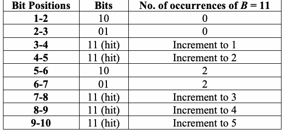
| ビット位置 | ビット列 | B = 11 の出現回数 |
| 1-2 | 10 | 0 |
| 2-3 | 01 | 0 |
| 3-4 | 11 (一致) | 1に増分 |
| 4-5 | 11 (一致) | 2に増分 |
| 5-6 | 10 | 2 |
| 6-7 | 01 | 2 |
| 7-8 | 11 (一致) | 3に増分 |
| 8-9 | 11 (一致) | 4に増分 |
| 9-10 | 11 (一致) | 5に増分 |
Thus, after block 1, there are five occurrences of 11, \(v_{5}\) is incremented, and \(v_{0}\) = 0, \(v_{1}\) = 0, \(v_2=\) 0, \(v_{3}\) = 0, \(v_{4}\) = 0, and \(v_{5}\) = 1.
In a like manner, blocks 2-5 are examined. In block 2, there are 2 occurrences of 11; \(v_{2}\) is incremented. In block 3, there are 3 occurrences of 11; \(v_{3}\) is incremented. In block 4, there are 4 occurrences of 11; \(v_{4}\) is incremented. In block 5, there is one occurrence of 11; \(v_{1}\) is incremented.
Therefore, \(v_0=0,\;v_1=1,\;v_2=1,\;v_3=1,\;v_4=1,\;v_5=1\) after all blocks have been examined.
(3) Compute values for \(\lambda\) and \(\eta\) that will be used to compute the theoretical probabilities \(\pi_i\) corresponding to the classes of \(v_0\):
For the example in this section,
(4) Compute
where
as specified in Section 3.8.
For the example in this section, the values of \(\pi_i\) were recomputed, since the example doesn’t fit the requirements stated in Section 2.8.7. The example is intended only for illustration. The values of \(\pi_i\) are:
したがって、ブロック1の後は11が5回出現するため、\(v_{5}\)がインクリメントされ、\(v_{0}\) = 0、\(v_{1}\) = 0、\(v_2=\) 0、\(v_{3}\) = 0、\(v_{4}\) = 0、および\(v_{5}\) = 1となる。
同様の方法で、ブロック2～5が検査される。ブロック2では11が2回出現するため、\(v_{2}\)がインクリメントされる。ブロック3では11が3回出現するため、\(v_{3}\)がインクリメントされる。ブロック4では11が4回出現するため、\(v_{4}\)がインクリメントされる。ブロック5では11が1回出現するため、\(v_{1}\)がインクリメントされる。
したがって、すべてのブロックが検査された後、\(v_0=0,\;v_1=1,\;v_2=1,\;v_3=1,\;v_4=1,\;v_5=1\)となる。
(3) \(v_0\)のクラスに対応する理論的確率\(\pi_i\)を計算するために使用される\(\lambda\)および\(\eta\)の値を計算する。
本節の例では、
(4) 以下を計算する。
ここで、セクション3.8で指定されているように
である。
本節の例では、セクション2.8.7で述べられている要件を満たしていないため、\(\pi_i\)の値が再計算された。この例は説明のみを目的としている。\(\pi_i\)の値は以下の通りである。
(5) Compute
For the example in this section,
(5) 以下を計算する。
本節の例では、
2.8.5 Decision Rule (at the 1% Level)
2.8.5 判定規則（1%水準）
未レビュー訳If the computed P-value is < 0.01, then conclude that the sequence is non-random. Otherwise, conclude that the sequence is random.
計算されたP-valueが < 0.01 の場合、その系列は非ランダムであると結論する。それ以外の場合、その系列はランダムであると結論する。
未レビュー訳2.8.6 Conclusion and Interpretation of Results
2.8.6 結論と結果の解釈
未レビュー訳Since the \(P\text{-value}\) obtained in step 4 of Section 2.8.4 is \(\ge \) 0.01 \(( P\text{-value}\) = 0.274932), the conclusion is that the sequence is random.
Note that for the 2-bit template \(( B\) = 11), if the entire sequence had too many 2-bit runs of ones, then: 1) \(ν_{5}\) would have been too large, 2) the test statistic would be too large, 3) the \(P\text{-value}\) would have been small (< 0.01) and 4) a conclusion of non-randomness would have resulted.
セクション 2.8.4 のステップ 4 で得られた \(P\text{値}\) は \(\ge \) 0.01 （\(( P\text{値}\) = 0.274932）であるため、そのシーケンスはランダムであるという結論になる。
2ビットテンプレート（\(( B\) = 11）について、シーケンス全体に1の2ビットランが多すぎた場合、次のようになることに注意すること：1）\(ν_{5}\) が大きくなりすぎた、2）検定統計量が大きくなりすぎた、3）\(P\text{値}\) が小さくなった（< 0.01）、4）非ランダムであるという結論に至った。
未レビュー訳2.8.7 Input Size Recommendation
2.8.7 入力サイズに関する推奨事項
未レビュー訳The values of \(K,M\) and \(N\) have been chosen such that each sequence to be tested consists of a minimum of \(10^{6}\) bits (i.e., \(n\ge10^6\)). Various values of \(m\) may be selected, but for the time being, NIST recommends \(m = 9\) or \(m = 10 .\) If other values are desired, please choose these values as follows:
- \(n\ge MN\).
- \(N\) should be chosen so that \(N\cdot(\min\pi_i)>5\).
- \(\lambda=(M-m+1)/2^m\approx2\).
- \(m\) should be chosen so that \(m\approx\log_2M\).
- Choose \(K\) so that \(K\approx2\lambda\). Note that the \(\pi_i\) values would need to be recalculated for values of \(K\) other than 5.
\(K,M\) および \(N\) の値は、テストされる各シーケンスが最低 \(10^{6}\) ビット（すなわち、\(n\ge10^6\)）で構成されるように選択されている。\(m\) の様々な値を選択できるが、当面の間、NIST は \(m = 9\) または \(m = 10 .\) を推奨する。他の値が望ましい場合は、次のようにこれらの値を選択すること。
- \(n\ge MN\)。
- \(N\) は \(N\cdot(\min\pi_i)>5\) となるように選択する必要がある。
- \(\lambda=(M-m+1)/2^m\approx2\)。
- \(m\) は \(m\approx\log_2M\) となるように選択する必要がある。
- \(K\approx2\lambda\) となるように \(K\) を選択すること。5 以外の \(K\) の値については、\(\pi_i\) の値を再計算する必要があることに注意すること。
2.8.8 Example
2.8.8 例
未レビュー訳(input) \(ε =\) the binary expansion of \(e\) up to 1,000,000 bits
（入力） 1,000,000 ビットまでの \(e\) の 2 進展開 \(ε =\)
未レビュー訳(input)
(入力)
未レビュー訳n = 1000000, B = 111111111
n = 1000000, B = 111111111
未レビュー訳(processing) \(ν_{0} = 329\); \(ν_{1} = 164\); \(ν_{2} = 150\); \(ν_{3} = 111\); \(ν_{4} = 78\); and \(ν_{5} = 136\)
(processing) \(χ^{2} ( \mathrm{obs} ) = 8.965859\)
（処理） \(ν_{0} = 329\); \(ν_{1} = 164\); \(ν_{2} = 150\); \(ν_{3} = 111\); \(ν_{4} = 78\); および \(ν_{5} = 136\)
（処理） \(χ^{2} ( \mathrm{obs} ) = 8.965859\)
未レビュー訳(conclusion) Since the \(P\text{-value} \ge 0.01 ,\) accept the sequence as random.
（結論）\(P\text{値} \ge 0.01 ,\)であるため、この数列をランダムであると受け入れる。
未レビュー訳2.9 Maurer’s “Universal Statistical” Test
2.9 Maurerの「ユニバーサル統計」検定
未レビュー訳2.9.1 Test Purpose
2.9.1 検定の目的
未レビュー訳The focus of this test is the number of bits between matching patterns (a measure that is related to the length of a compressed sequence). The purpose of the test is to detect whether or not the sequence can be significantly compressed without loss of information. A significantly compressible sequence is considered to be non-random.
この検定では、一致するパターン間のビット数（圧縮後の系列長に関連する尺度）に着目する。この検定の目的は、情報を失うことなく系列を大幅に圧縮できるかどうかを検出することである。大幅に圧縮可能な系列は非ランダムとみなされる。
未レビュー訳2.9.2 Function Call
2.9.2 関数呼び出し
未レビュー訳Universal(L, Q, n), where
Universal(L, Q, n)、ここで
未レビュー訳\(L\) The length of each block. Note: the use of \(\mathrm{L}\) as the block size is not consistent with the block size notation (\(M\)) used for the other tests. However, the use of \(\mathrm{L}\) as the block size was specified in the original source of Maurer's test.
\(L\) 各ブロックの長さ。注：ブロックサイズとして \(\mathrm{L}\) を用いることは、他のテストで使用されるブロックサイズの表記（\(M\)）と一貫していない。しかし、ブロックサイズとして \(\mathrm{L}\) を用いることは、Maurerのテストの原典で規定されていた。
Q The number of blocks in the initialization sequence.
Q 初期化系列に含まれるブロック数。
未レビュー訳n The length of the bit string.
n ビット文字列の長さ。
未レビュー訳Additional input used by the function, but supplied by the testing code:
関数が使用する追加入力。ただし、テストコードから与えられる:
未レビュー訳\(\varepsilon\) — The sequence of bits generated by the RNG or PRNG under test. This exists as a global structure at the time of the function call; \(\varepsilon=\varepsilon_1,\varepsilon_2,\ldots,\varepsilon_n\).
\(\varepsilon\)：検定対象のRNGまたはPRNGが生成したビット系列。関数呼び出し時にはグローバルなデータ構造として存在する。\(\varepsilon=\varepsilon_1,\varepsilon_2,\ldots,\varepsilon_n\)。
2.9.3 Test Statistic and Reference Distribution
2.9.3 検定統計量と参照分布
未レビュー訳\(f_{n}\) : The sum of the \(\operatorname{log}_{2}\) distances between matching \(L -\)bit templates, i.e., the sum of the number of digits in the distance between \(L -\)bit templates.
\(f_{n}\)：一致する\(\operatorname{log}_{2}\)ビットテンプレート間の\(L -\)距離の合計、すなわち、\(L -\)ビットテンプレート間の距離における桁数の合計。
未レビュー訳The reference distribution for the test statistic is the half-normal distribution (a one-sided variant of the normal distribution) as is also the case for the Frequency test in Section 2.1.
検定統計量の参照分布は半正規分布（正規分布の片側変形）であり、2.1節の頻度検定も同様である。
未レビュー訳2.9.4 Test Description
2.9.4 検定の説明
未レビュー訳(1) The \(n -\)bit sequence \(( ε )\) is partitioned into two segments: an initialization segment consisting of \(Q\) \(L -\)bit non-overlapping blocks, and a test segment consisting of \(KL -\)bit non-overlapping blocks. Bits remaining at the end of the sequence that do not form a complete \(L -\)bit block are discarded. The first \(Q\) blocks are used to initialize the test. The remaining \(K\) blocks are the test blocks (\(K=\lfloor n/L\rfloor-Q\)).
(1) \(n -\)ビットの数列\(( ε )\)は、2つのセグメントに分割される。すなわち、\(Q\)個の\(L -\)ビットの重複しないブロックからなる初期化セグメントと、\(KL -\)ビットの重複しないブロックからなるテストセグメントである。完全な\(L -\)ビットブロックを形成しない、数列の末尾に残ったビットは破棄される。最初の\(Q\)ブロックはテストの初期化に使用される。残りの\(K\)ブロックがテストブロック（\(K=\lfloor n/L\rfloor-Q\)）である。
未レビュー訳
For example, if \(ε = 01011010011101010111 ,\) then \(n = 20 .\) If \(L = 2\) and \(Q = 4 ,\) then \(K=\lfloor n/L\rfloor-Q=\lfloor20/2\rfloor-4=6\) . The initialization segment is 01011010; the test segment is 011101010111. The \(L\)-bit blocks are shown in the following table:
例えば、\(ε = 01011010011101010111 ,\)の場合、\(n = 20 .\)となる。\(L = 2\)かつ\(Q = 4 ,\)の場合、\(K=\lfloor n/L\rfloor-Q=\lfloor20/2\rfloor-4=6\)である。初期化セグメントは01011010であり、テストセグメントは011101010111である。\(L\)ビットのブロックを次の表に示す：
未レビュー訳| Block | Type | Contents |
| 1 | Initialization Segment | 01 |
| 2 | 01 | |
| 3 | 10 | |
| 4 | 10 | |
| 5 | Test Segment | 01 |
| 6 | 11 | |
| 7 | 01 | |
| 8 | 01 | |
| 9 | 01 | |
| 10 | 11 |
原本PDFの抜粋画像
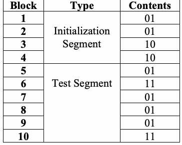
| ブロック | 種類 | 内容 |
| 1 | 初期化セグメント | 01 |
| 2 | 01 | |
| 3 | 10 | |
| 4 | 10 | |
| 5 | 検定セグメント | 01 |
| 6 | 11 | |
| 7 | 01 | |
| 8 | 01 | |
| 9 | 01 | |
| 10 | 11 |
(2) Using the initialization segment, a table is created for each possible \(L -\)bit value (i.e., the \(L -\)bit value is used as an index into the table). The block number of the last occurrence of each \(L -\)bit block is noted in the table (i.e., For \(i\) from \(1\) to \(Q , T_{j} = i ,\) where \(j\) is the decimal representation of the contents of the \(i\)th \(L\)-bit block).
(2) 初期化セグメントを使用して、考えられる各\(L -\)ビット値に対する表を作成する（すなわち、\(L -\)ビット値が表のインデックスとして使用される）。各\(L -\)ビットブロックが最後に出現したブロック番号が、表に記録される（すなわち、\(i\)について\(1\)から\(Q , T_{j} = i ,\)まで。ここで\(j\)は第\(i\)の\(L\)ビットブロックの内容の10進表現である）。
未レビュー訳For the example in this section, the following table is created using the 4 initialization blocks.
この節の例では、4個の初期化ブロックを用いて次の表を作成する。
未レビュー訳| Possible \(L\)-bit Value | ||||
|---|---|---|---|---|
| 00 (saved in \(T_0\)) | 01 (saved in \(T_1\)) | 10 (saved in \(T_2\)) | 11 (saved in \(T_3\)) | |
| Initialization | 0 | 2 | 4 | 0 |
| 考えられる\(L\)ビット値 | ||||
|---|---|---|---|---|
| 00（\(T_0\)に保存） | 01（\(T_1\)に保存） | 10（\(T_2\)に保存） | 11（\(T_3\)に保存） | |
| 初期化 | 0 | 2 | 4 | 0 |
(3) Examine each of the \(K\) blocks in the test segment and determine the number of blocks since the last occurrence of the same \(L -\)bit block (i.e., \(i – T_{j} ) .\) Replace the value in the table with the location of the current block (i.e., \(T_{j} = i ) .\) Add the calculated distance between re-occurrences of the same \(L -\)bit block to an accumulating \(\operatorname{log}_{2}\) sum of all the differences detected in the \(K\) blocks (i.e., \(\operatorname{sum}=\operatorname{sum}+\log_2(i-T_j)\)).
(3) テストセグメント内の\(K\)個の各ブロックを調べ、同じ\(L -\)ビットブロックが最後に出現してからのブロック数を決定する（すなわち、\(i – T_{j} ) .\)）。表内の値を現在のブロックの位置で置き換える（すなわち、\(T_{j} = i ) .\)）。同じ\(L -\)ビットブロックの再出現間で計算された距離を、\(K\)個のブロックで検出されたすべての差の累積\(\operatorname{log}_{2}\)和に加算する（すなわち、\(\operatorname{sum}=\operatorname{sum}+\log_2(i-T_j)\)）。
未レビュー訳For block 5 (the 1st test block): 5 is placed in the “01” row of the table (i.e., \(T_1\)), and
For block 6: 6 is placed in the “11” row of the table (i.e., \(T_3\)), and
For block 7: 7 is placed in the “01” row of the table (i.e., \(T_1\)), and
For block 8: 8 is placed in the “01” row of the table (i.e., \(T_1\)), and
For block 9: 9 is placed in the “01” row of the table (i.e., \(T_1\)), and
ブロック5（第1テストブロック）の場合：表の「01」の行に5が配置され（すなわち、\(T_1\)）、
ブロック6の場合：表の「11」の行に6が配置され（すなわち、\(T_3\)）、
ブロック7の場合：表の「01」の行に7が配置され（すなわち、\(T_1\)）、
ブロック8の場合：表の「01」の行に8が配置され（すなわち、\(T_1\)）、
ブロック9の場合：表の「01」の行に9が配置され（すなわち、\(T_1\)）、
For block 10: 10 is placed in the “11” row of the table (i.e., \(T_3\)), and
ブロック10の場合：表の「11」の行に10が配置され（すなわち、\(T_3\)）、
The states of the table are:
表の状態は次のとおりである。
未レビュー訳| Iteration Block | Possible L-bit Value |
| 00 / 01 / 10 / 11 | |
| 4 | 0 / 2 / 4 / 0 |
| 5 | 0 / 5 / 4 / 0 |
| 6 | 0 / 5 / 4 / 6 |
| 7 | 0 / 7 / 4 / 6 |
| 8 | 0 / 8 / 4 / 6 |
| 9 | 0 / 9 / 4 / 6 |
| 10 | 0 / 9 / 4 / 10 |
原本PDFの抜粋画像
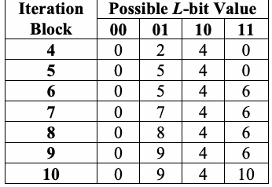
| 反復ブロック | 取り得るLビット値 |
| 00 / 01 / 10 / 11 | |
| 4 | 0 / 2 / 4 / 0 |
| 5 | 0 / 5 / 4 / 0 |
| 6 | 0 / 5 / 4 / 6 |
| 7 | 0 / 7 / 4 / 6 |
| 8 | 0 / 8 / 4 / 6 |
| 9 | 0 / 9 / 4 / 6 |
| 10 | 0 / 9 / 4 / 10 |
(4) Compute the test statistic:
where \(T_j\) is the table entry corresponding to the decimal representation of the contents of the \(i\)th \(L\)-bit block.
(4) 検定統計量を計算する：
ここで\(T_j\)は、第\(i\)の\(L\)ビットブロックの内容の10進表現に対応する表のエントリである。
未レビュー訳For the example in this section,
(5) Compute
where \(\operatorname{erfc}\) is defined in Section 5.5.3, and \(\operatorname{expectedValue}(L)\) and \(\sigma\) are taken from a table of precomputed values2 (see the table below). Under an assumption of randomness, the sample mean, \(\operatorname{expectedValue}(L)\), is the theoretical expected value of the computed statistic for the given \(L\)-bit length. The theoretical standard deviation is given by
where
本節の例では、
(5) 次を計算する
ここで\(\operatorname{erfc}\)はセクション5.5.3で定義されており、\(\operatorname{expectedValue}(L)\)および\(\sigma\)は事前計算された値の表2から取得される（下記の表を参照）。ランダム性の仮定の下で、標本平均\(\operatorname{expectedValue}(L)\)は、所与の\(L\)ビット長に対する計算された統計量の理論的期待値である。理論的標準偏差は次のように与えられる
ここで
| L | expectedValue | variance |
| 6 | 5.2177052 | 2.954 |
| 7 | 6.1962507 | 3.125 |
| 8 | 7.1836656 | 3.238 |
| 9 | 8.1764248 | 3.311 |
| 10 | 9.1723243 | 3.356 |
| 11 | 10.170032 | 3.384 |
原本PDFの抜粋画像
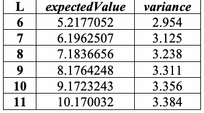
| L | expectedValue | variance |
| 6 | 5.2177052 | 2.954 |
| 7 | 6.1962507 | 3.125 |
| 8 | 7.1836656 | 3.238 |
| 9 | 8.1764248 | 3.311 |
| 10 | 9.1723243 | 3.356 |
| 11 | 10.170032 | 3.384 |
| L | expectedValue | variance |
| 12 | 11.168765 | 3.401 |
| 13 | 12.168070 | 3.410 |
| 14 | 13.167693 | 3.416 |
| 15 | 14.167488 | 3.419 |
| 16 | 15.167379 | 3.421 |
原本PDFの抜粋画像
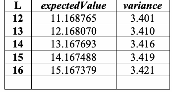
| L | expectedValue | variance |
| 12 | 11.168765 | 3.401 |
| 13 | 12.168070 | 3.410 |
| 14 | 13.167693 | 3.416 |
| 15 | 14.167488 | 3.419 |
| 16 | 15.167379 | 3.421 |
L expectedValue variance L expectedValue variance 6 5.2177052 2.954 12 11.168765 3.401 7 6.1962507 3.125 13 12.168070 3.410 8 7.1836656 3.238 14 13.167693 3.416 9 8.1764248 3.311 15 14.167488 3.419 10 9.1723243 3.356 16 15.167379 3.421
L expectedValue variance L expectedValue variance 6 5.2177052 2.954 12 11.168765 3.401 7 6.1962507 3.125 13 12.168070 3.410 8 7.1836656 3.238 14 13.167693 3.416 9 8.1764248 3.311 15 14.167488 3.419 10 9.1723243 3.356 16 15.167379 3.421
未レビュー訳For the example in this section, \(P\text{-value} = \operatorname{erfc}\left(\left|\frac{1.1949875 - 1.5374383}{\sqrt{2}\sqrt{1.338}}\right|\right) = 0.767189\). Note that the expected value and variance for \(L = 2\) are not provided in the above table, since a block of length two is not recommended for testing. However, this value for \(L\) is easy to use in an example. The value for the expected value and variance for the case where \(L = 2\), although not shown in the above table, were taken from the indicated reference3.
本節の例では、\(P\text{値} = \operatorname{erfc}\left(\left|\frac{1.1949875 - 1.5374383}{\sqrt{2}\sqrt{1.338}}\right|\right) = 0.767189\) である。長さ2のブロックはテストに推奨されないため、\(L = 2\) に対する期待値と分散は上の表に示されていないことに注意されたい。しかし、\(L\) のこの値は例として使いやすい。\(L = 2\) の場合の期待値と分散の値は、上の表には示されていないが、示された参考文献3から引用した。
2.9.5 Decision Rule (at the 1% Level)
2.9.5 判定規則（1%水準）
未レビュー訳If the computed P-value is < 0.01, then conclude that the sequence is non-random. Otherwise, conclude that the sequence is random.
計算したP値が< 0.01の場合、系列は非ランダムであると結論する。それ以外の場合、系列はランダムであると結論する。
未レビュー訳2.9.6 Conclusion and Interpretation of Results
2.9.6 結論と結果の解釈
未レビュー訳Since the \(P\text{-value}\) obtained in step 5 of Section 2.9.4 is \(\ge \) 0.01 (P-value = 0.767189), the conclusion is that the sequence is random.
Theoretical expected values for \(\phi\) have been computed as shown in the table in step (5) of Section 2.9.4. If \(f_{n}\) differs significantly from \(\operatorname{expectedValue}(L)\), then the sequence is significantly compressible.
セクション 2.9.4 のステップ 5 で得られた \(P\text{値}\) は 0.01 \(\ge \)（P値 = 0.767189）であるため、このシーケンスはランダムであると結論付けられる。
セクション 2.9.4 のステップ (5) の表に示されているように、\(\phi\) の理論的な期待値が計算されている。\(f_{n}\) が \(\operatorname{expectedValue}(L)\) と大きく異なる場合、そのシーケンスは大幅に圧縮可能である。
未レビュー訳2.9.7 Input Size Recommendation
2.9.7 入力サイズの推奨事項
未レビュー訳This test requires a long sequence \(n\ge(Q+K)L\), divided into two segments of \(L\)-bit blocks, with \(6\le L\le16\). The first segment contains \(Q=10\cdot2^L\) initialization blocks. The second contains \(K=\lfloor n/L\rfloor-Q\approx1000\cdot2^L\) test blocks. Choose \(L,Q,n\) as follows:
| n | L | \(Q=10\cdot2^L\) |
| \(\ge 387,840\) | 6 | 640 |
| \(\ge 904,960\) | 7 | 1280 |
| \(\ge 2,068,480\) | 8 | 2560 |
| \(\ge 4,654,080\) | 9 | 5120 |
| \(\ge 10,342,400\) | 10 | 10240 |
| \(\ge 22,753,280\) | 11 | 20480 |
| \(\ge 49,643,520\) | 12 | 40960 |
| \(\ge 107,560,960\) | 13 | 81920 |
| \(\ge 231,669,760\) | 14 | 163840 |
| \(\ge 496,435,200\) | 15 | 327680 |
| \(\ge 1,059,061,760\) | 16 | 655360 |
このテストでは、\(6\le L\le16\) を満たし、\(L\) ビットブロックの2つのセグメントに分割された長いシーケンス \(n\ge(Q+K)L\) を必要とする。第1セグメントには \(Q=10\cdot2^L\) 個の初期化ブロックが含まれる。第2セグメントには \(K=\lfloor n/L\rfloor-Q\approx1000\cdot2^L\) 個のテストブロックが含まれる。\(L,Q,n\) は次のように選択する：
| n | L | \(Q=10\cdot2^L\) |
| \(\ge 387,840\) | 6 | 640 |
| \(\ge 904,960\) | 7 | 1280 |
| \(\ge 2,068,480\) | 8 | 2560 |
| \(\ge 4,654,080\) | 9 | 5120 |
| \(\ge 10,342,400\) | 10 | 10240 |
| \(\ge 22,753,280\) | 11 | 20480 |
| \(\ge 49,643,520\) | 12 | 40960 |
| \(\ge 107,560,960\) | 13 | 81920 |
| \(\ge 231,669,760\) | 14 | 163840 |
| \(\ge 496,435,200\) | 15 | 327680 |
| \(\ge 1,059,061,760\) | 16 | 655360 |
2.9.8 Example
2.9.8 例
未レビュー訳(input) \(ε =\) A binary string constructed using G-SHA-14
（入力）\(ε =\) G-SHA-1 を用いて構築されたバイナリ列4
未レビュー訳(input)
（入力）
未レビュー訳n = 1048576, L = 7, Q = 1280
n = 1048576, L = 7, Q = 1280
未レビュー訳(note)
（注記）
未レビュー訳Note: 4 bits are discarded.
注記：4ビットが破棄される。
未レビュー訳(processing) \(c=0.591311,\quad\sigma=0.002703,\quad K=148516,\quad\operatorname{sum}=919924.038020\)
(processing) \(f_n=6.194107,\quad\operatorname{expectedValue}=6.196251,\quad\sigma=3.125\)
原本照合メモ: 原本p.45は同じ計算例のσを0.002703と3.125の両方で記す。分散値の誤記の可能性があるが原本の値を保持。
（処理）\(c=0.591311,\quad\sigma=0.002703,\quad K=148516,\quad\operatorname{sum}=919924.038020\)
（処理）\(f_n=6.194107,\quad\operatorname{expectedValue}=6.196251,\quad\sigma=3.125\)
未レビュー訳(output) P-value = 0.427733
（出力）P値 = 0.427733
未レビュー訳3 “Handbook of Applied Cryptography” より。
4 FIPS 186-2 で定義。
未レビュー訳(conclusion) Since \(P\text{-value}\ge0.01\), accept the sequence as random.
（結論）\(P\text{値}\ge0.01\)なので、この系列をランダムと判定する。
2.10 Linear Complexity Test
2.10 線形複雑度検定
未レビュー訳2.10.1 Test Purpose
2.10.1 試験目的
未レビュー訳The focus of this test is the length of a linear feedback shift register (LFSR). The purpose of this test is to determine whether or not the sequence is complex enough to be considered random. Random sequences are characterized by longer LFSRs. An LFSR that is too short implies non-randomness.
この検定は、線形帰還シフトレジスタ（LFSR）の長さに着目する。この検定の目的は、系列がランダムと見なすのに十分な複雑さを持つかどうかを判定することである。ランダム系列は、より長いLFSRによって特徴付けられる。LFSRが短すぎる場合、その系列は非ランダムであることを示唆する。
未レビュー訳2.10.2 Function Call
2.10.2 関数呼び出し
未レビュー訳LinearComplexity(M, n), where:
LinearComplexity(M, n)、ここで：
未レビュー訳M The length in bits of a block.
M ブロックのビット長。
未レビュー訳n The length of the bit string.
n ビット文字列の長さ。
未レビュー訳Additional input used by the function, but supplied by the testing code:
関数が使用する追加の入力。ただし、試験コードから提供される：
未レビュー訳\(\varepsilon\) — The sequence of bits generated by the RNG or PRNG under test. This exists as a global structure at the time of the function call; \(\varepsilon=\varepsilon_1,\varepsilon_2,\ldots,\varepsilon_n\).
\(\varepsilon\)：検定対象のRNGまたはPRNGが生成したビット系列。関数呼び出し時にはグローバルなデータ構造として存在する。\(\varepsilon=\varepsilon_1,\varepsilon_2,\ldots,\varepsilon_n\)。
K The number of degrees of freedom; K = 6 has been hard coded into the test.
K 自由度の数。この検定ではK = 6がハードコードされている。
未レビュー訳2.10.3 Test Statistic and Reference Distribution
2.10.3 検定統計量と参照分布
未レビュー訳\(χ^{2} ( \mathrm{obs} )\): A measure of how well the observed number of occurrences of fixed length LFSRs matches the expected number of occurrences under an assumption of randomness.
\(χ^{2} ( \mathrm{obs} )\)：固定長のLFSRの観測出現数が、ランダム性の仮定の下での期待出現数とどの程度一致しているかの尺度。
未レビュー訳The reference distribution for the test statistic is the \(χ^{2}\) distribution.
検定統計量の基準分布は \(χ^{2}\) 分布である。
未レビュー訳2.10.4 Test Description
2.10.4 検定の説明
未レビュー訳(1) Partition the n-bit sequence into N independent blocks of M bits, where n = MN.
(1) nビット系列を、それぞれMビットの独立したN個のブロックに分割する。ここでn = MNである。
未レビュー訳(2) Using the Berlekamp-Massey algorithm5, determine the linear complexity \(L_{i}\) of each of the \(N\) blocks \(( i = 1 , \ldots , N ) .\) \(L_{i}\) is the length of the shortest linear feedback shift register sequence that generates all bits in the block \(i .\) Within any \(L_{i} -\)bit sequence, some combination of the bits, when added together modulo 2, produces the next bit in the sequence (bit \(L_{i} + 1 ) .\)
For example, if \(M = 13\) and the block to be tested is \(1101011110001 ,\) then \(L_{i} = 4 ,\) and the sequence is produced by adding the 1st and 2nd bits within a 4-bit subsequence to produce the next bit (the 5th bit). The examination proceeded as follows:
(2) Berlekamp-Masseyアルゴリズム5を使用して、\(N\)個の各ブロック\(( i = 1 , \ldots , N ) .\)の線形複雑度\(L_{i}\)を決定する。\(L_{i}\)は、ブロック\(i .\)内のすべてのビットを生成する最短の線形帰還シフトレジスタシーケンスの長さである。任意の\(L_{i} -\)ビットシーケンス内において、ビットのある組み合わせを法2（modulo 2）で加算すると、シーケンス内の次のビット（ビット\(L_{i} + 1 ) .\)
）が生成される。\n例えば、\(M = 13\)であり、テスト対象のブロックが\(1101011110001 ,\)である場合、\(L_{i} = 4 ,\)となり、このシーケンスは4ビットのサブシーケンス内の1番目と2番目のビットを加算して次のビット（5番目のビット）を生成することによって作られる。検証は次のように進行した：
未レビュー訳| Bit 1 | Bit 2 | Bit 3 | Bit 4 | Bit 5 | |
| The first 4 bits and the resulting 5th bit | 1 | 1 | 0 | 1 | 0 |
| Bits 2-5 and the resulting 6th bit | 1 | 0 | 1 | 0 | 1 |
| Bits 3-6 and the resulting 7th bit | 0 | 1 | 0 | 1 | 1 |
| Bits 4-7 and the resulting 8th bit | 1 | 0 | 1 | 1 | 1 |
| Bits 5-8 and the resulting 9th bit | 0 | 1 | 1 | 1 | 1 |
| Bits 6-9 and the resulting 10th bit | 1 | 1 | 1 | 1 | 0 |
| Bits 7-10 and the resulting 11th bit | 1 | 1 | 1 | 0 | 0 |
| Bits 8-11 and the resulting 12th bit | 1 | 1 | 0 | 0 | 0 |
| Bits 9-12 and the resulting 13th bit | 1 | 0 | 0 | 0 | 1 |
| ビット1 | ビット2 | ビット3 | ビット4 | ビット5 | |
| 最初の4ビットと結果として得られる5番目のビット | 1 | 1 | 0 | 1 | 0 |
| ビット2-5と結果として得られる6番目のビット | 1 | 0 | 1 | 0 | 1 |
| ビット3-6と結果として得られる7番目のビット | 0 | 1 | 0 | 1 | 1 |
| ビット4-7と結果として得られる8番目のビット | 1 | 0 | 1 | 1 | 1 |
| ビット5-8と結果として得られる9番目のビット | 0 | 1 | 1 | 1 | 1 |
| ビット6-9と結果として得られる10番目のビット | 1 | 1 | 1 | 1 | 0 |
| ビット7-10と結果として得られる11番目のビット | 1 | 1 | 1 | 0 | 0 |
| ビット8-11と結果として得られる12番目のビット | 1 | 1 | 0 | 0 | 0 |
| ビット9-12と結果として得られる13番目のビット | 1 | 0 | 0 | 0 | 1 |
For this block, the trial feedback algorithm works. If this were not the case, other feedback algorithms would be attempted for the block (e.g., adding bits 1 and 3 to produce bit 5, or adding bits 1, 2 and 3 to produce bit 6, etc.).
このブロックでは、試行中のフィードバックアルゴリズムが機能する。そうでない場合は、このブロックに対して他のフィードバックアルゴリズムを試す（例：ビット1と3を加算してビット5を生成する、またはビット1、2、3を加算してビット6を生成するなど）。
未レビュー訳(1) Under an assumption of randomness, calculate the theoretical mean \(\mu\):
For the example in this section,
(4) For each substring, calculate a value of \(T_i\), where
For the example,
(5) Record the \(T_i\) values in \(v_0,\ldots,v_6\) as follows:
If:
(6) Compute
where \(\pi_0=0.010417,\;\pi_1=0.03125,\;\pi_2=0.125,\;\pi_3=0.5\), \(\pi_4=0.25,\;\pi_5=0.0625,\;\pi_6=0.020833\) are the probabilities computed by the equations in Section 3.10.
原本照合メモ: ['原本p.47はπ₄=0.25と記す。列挙された確率の和が1にならないが、原本の値を保持。']
(1) ランダム性の仮定の下で、理論的平均値\(\mu\)を計算する：
本セクションの例では、
(4) 各部分文字列に対して、\(T_i\)の値を計算する。ここで
例では、
(5) \(T_i\)の値を次のように\(v_0,\ldots,v_6\)に記録する：
もし：
(6) 次を計算する
ここで、\(\pi_0=0.010417,\;\pi_1=0.03125,\;\pi_2=0.125,\;\pi_3=0.5\)、\(\pi_4=0.25,\;\pi_5=0.0625,\;\pi_6=0.020833\)はセクション3.10の式によって計算される確率である。
未レビュー訳(7) Compute
(7) 次を計算する
2.10.5 Decision Rule (at the 1% Level)
2.10.5 判定規則（1%水準）
未レビュー訳If the computed P-value is < 0.01, then conclude that the sequence is non-random. Otherwise, conclude that the sequence is random.
計算したP値が< 0.01の場合、系列は非ランダムであると結論する。それ以外の場合は、系列はランダムであると結論する。
未レビュー訳2.10.6 Conclusion and Interpretation of Results
2.10.6 結論と結果の解釈
未レビュー訳If the \(P\text{-value}\) were \(< 0.01 ,\) this would have indicated that the observed frequency counts of \(T_{i}\) stored in the \(ν_{I}\) bins varied from the expected values; it is expected that the distribution of the frequency of the \(T_{i}\) (in the \(ν_{I}\) bins) should be proportional to the computed \(π_{i}\) as shown in step (6) of Section 2.10.5.
原本照合メモ: 原本p.48はνの添字を大文字Iと印字する。前後のν_iと表記が異なるが原本の大文字を保持。
もし\(P\text{値}\)が\(< 0.01 ,\)であった場合、これは\(ν_{I}\)個のビンに格納された\(T_{i}\)の観測度数が期待値から乖離していたことを示していたことになる。セクション2.10.5のステップ(6)に示されているように、（\(ν_{I}\)個のビンにおける）\(T_{i}\)の度数の分布は、計算された\(π_{i}\)に比例することが期待される。
未レビュー訳2.10.7 Input Size Recommendation
2.10.7 入力サイズの推奨事項
未レビュー訳Choose \(n \ge 10^{6} .\) The value of \(M\) must be in the range \(500 \le M \le 5000 ,\) and \(N \ge 200\) for the \(χ^{2}\) result to be valid (see Section 3.10 for a discussion).
\(n \ge 10^{6} .\)を選択する。\(χ^{2}\)の結果が有効であるためには、\(M\)の値は\(500 \le M \le 5000 ,\)および\(N \ge 200\)の範囲内でなければならない（詳細な議論についてはセクション3.10を参照）。
未レビュー訳2.10.8 Example
2.10.8 例
未レビュー訳(input) \(ε = “\)the first 1,000,000 binary digits in the expansion of \(e ”\)
(input) \(n = 1000000 = 10^{6} , M = 1000\)
(processing) \(v_{0} = 11 ; v_{1} = 31 ; v_{2} = 116 ; v_{3} = 501 ; v_{4} = 258 ; v_{5} = 57 ; v_{6} = 26\)
(processing) \(χ^{2} ( \mathrm{obs} ) = 2.700348\)
（入力）\(ε = “\)\(e ”\)
の展開における最初の1,000,000個の2進数\n（入力）\(n = 1000000 = 10^{6} , M = 1000\)
\n（処理）\(v_{0} = 11 ; v_{1} = 31 ; v_{2} = 116 ; v_{3} = 501 ; v_{4} = 258 ; v_{5} = 57 ; v_{6} = 26\)
\n（処理）\(χ^{2} ( \mathrm{obs} ) = 2.700348\)
未レビュー訳(output) P-value = 0.845406
（出力）P値 = 0.845406
未レビュー訳(conclusion) Since the \(P\text{-value} \ge 0.01 ,\) accept the sequence as random.
（結論）\(P\text{値} \ge 0.01 ,\)であるため、そのシーケンスをランダムであると受け入れる。
未レビュー訳2.11 Serial Test
2.11 シリアル検定
未レビュー訳2.11.1 Test Purpose
2.11.1 検定の目的
未レビュー訳The focus of this test is the frequency of all possible overlapping \(m -\)bit patterns across the entire sequence. The purpose of this test is to determine whether the number of occurrences of the \(2^m\) \(m\)-bit overlapping patterns is approximately the same as would be expected for a random sequence. Random sequences have uniformity; that is, every \(m -\)bit pattern has the same chance of appearing as every other \(m -\)bit pattern. Note that for \(m\) = 1, the Serial test is equivalent to the Frequency test of Section 2.1.
この検定の主眼は、シーケンス全体にわたるすべての可能な重複する\(m -\)ビットパターンの頻度である。この検定の目的は、\(2^m\)個の\(m\)ビットの重複パターンの出現数が、ランダムなシーケンスで期待される出現数とほぼ等しいかどうかを判定することである。ランダムなシーケンスには一様性がある。すなわち、すべての\(m -\)ビットパターンは、他のあらゆる\(m -\)ビットパターンと同じ出現確率を持つ。\(m\) = 1 の場合、Serial検定（連検定）はセクション2.1のFrequency検定（頻度検定）と同等であることに注意すること。
未レビュー訳2.11.2 Function Call
2.11.2 関数呼び出し
未レビュー訳Serial(m,n), where:
Serial(m,n)、ここで：
未レビュー訳m The length in bits of each block.
m 各ブロックのビット長。
未レビュー訳n The length in bits of the bit string.
n ビット文字列の長さ。
未レビュー訳Additional input used by the function, but supplied by the testing code:
関数が使用する追加の入力。ただし、試験コードから提供される：
未レビュー訳\(\varepsilon\) — The sequence of bits generated by the RNG or PRNG under test. This exists as a global structure at the time of the function call; \(\varepsilon=\varepsilon_1,\varepsilon_2,\ldots,\varepsilon_n\).
\(\varepsilon\)：検定対象のRNGまたはPRNGが生成したビット系列。関数呼び出し時にはグローバルなデータ構造として存在する。\(\varepsilon=\varepsilon_1,\varepsilon_2,\ldots,\varepsilon_n\)。
2.11.3 Test Statistic and Reference Distribution
2.11.3 検定統計量と参照分布
未レビュー訳\(∇ ψ_{m}^{2} ( \mathrm{obs} )\) and\(∇^{2} ψ_{m}^{2} ( \mathrm{obs} )\): A measure of how well the observed frequencies of \(m -\)bit patterns match the expected frequencies of the \(m -\)bit patterns.
\(∇ ψ_{m}^{2} ( \mathrm{obs} )\)および\(∇^{2} ψ_{m}^{2} ( \mathrm{obs} )\)：観測された\(m -\)ビットパターンの頻度が、\(m -\)ビットパターンの期待頻度とどの程度一致しているかの尺度。
未レビュー訳The reference distribution for the test statistic is the \(χ^{2}\) distribution.
検定統計量の基準分布は\(χ^{2}\)分布である。
未レビュー訳2.11.4 Test Description
2.11.4 検定の説明
未レビュー訳(1) Form an augmented sequence \(ε ′\): Extend the sequence by appending the first \(m - 1\) bits to the end of the sequence for distinct values of \(n .\)
(1) 拡張シーケンス\(ε ′\)を作成する：\(n .\)
の異なる値に対して、最初の\(m - 1\)ビットをシーケンスの末尾に追加することによってシーケンスを拡張する。未レビュー訳For example, given \(n = 10\) and \(ε = 0011011101 .\) If \(m = 3 ,\) then \(ε \prime \) = \(001101110100 .\) If \(m = 2 ,\) then \(ε \prime \) = \(00110111010 .\) If \(m = 1 ,\) then \(ε \prime \) = the original sequence \(0011011101 .\)
(2) Determine the frequency of all possible overlapping \(m -\)bit blocks, all possible overlapping \(( m - 1 ) -\) bit blocks and all possible overlapping \(( m - 2 ) -\)bit blocks. Let \(v_{i_{1} . . . i_{m}}\) denote the frequency of the \(m -\)bit pattern \(i_{1} \ldots i_{m} ;\) let \(v_{i_1\ldots i_{m-1}}\) denote the frequency of the \(( m - 1 ) -\)bit pattern \(i_{1} \ldots i_{m - 1} ;\) and let
\(v_{i_1\ldots i_{m-2}}\) denote the frequency of the \(( m - 2 ) -\)bit pattern \(i_{1} \ldots i_{m - 2} .\)
For the example in this section, when \(m=3\), then \((m-1)=2\), and \((m-2)=1\). The frequency of all 3-bit blocks is:
The frequency of all possible \((m-1)\)-bit blocks is:
The frequency of all \((m-2)\)-bit blocks is:
(3) Compute:
For the example in this section,
(4) Compute:
and
原本照合メモ: 原本p.49はv111=0と記すが、直後のψ₃²の計算例はv111²=1を使う。原本の値を保持して不整合を記録。
例えば、\(n = 10\)および\(ε = 0011011101 .\)が与えられた場合、\(m = 3 ,\)ならば\(ε \prime \) = \(001101110100 .\)、\(m = 2 ,\)ならば\(ε \prime \) = \(00110111010 .\)、\(m = 1 ,\)ならば\(ε \prime \) = 元のシーケンス\(0011011101 .\)
となる。\n(2) すべての可能な重複する\(m -\)ビットブロック、すべての可能な重複する\(( m - 1 ) -\)ビットブロック、およびすべての可能な重複する\(( m - 2 ) -\)ビットブロックの頻度を求める。\(v_{i_{1} . . . i_{m}}\)を\(m -\)ビットパターン\(i_{1} \ldots i_{m} ;\)の頻度とし、\(v_{i_1\ldots i_{m-1}}\)を\(( m - 1 ) -\)ビットパターン\(i_{1} \ldots i_{m - 1} ;\)の頻度とし、
\n\(v_{i_1\ldots i_{m-2}}\)を\(( m - 2 ) -\)ビットパターン\(i_{1} \ldots i_{m - 2} .\)
の頻度とする。\n本セクションの例において、\(m=3\)の場合、\((m-1)=2\)、および\((m-2)=1\)となる。すべての3ビットブロックの頻度は以下の通りである：
すべての可能な\((m-1)\)ビットブロックの頻度は以下の通りである：
すべての\((m-2)\)ビットブロックの頻度は以下の通りである：
(3) 以下を計算する：
本セクションの例では、
(4) 以下を計算する：
および
For the example in this section, \(\nabla\psi_m^2=\psi_m^2-\psi_{m-1}^2=\Psi_3^2-\Psi_2^2=2.8-1.2=1.6\)
本セクションの例では、\(\nabla\psi_m^2=\psi_m^2-\psi_{m-1}^2=\Psi_3^2-\Psi_2^2=2.8-1.2=1.6\)
未レビュー訳(5) Compute:
and
原本照合メモ: ['原本p.50の一般式はigamcの第2引数を2で割らないが、直後の数値例では2で割る。432dpiで確認し、原本の一般式を保持。']
(5) 以下を計算します：
および
For the example in this section,
本セクションの例では、
2.11.5 Decision Rule (at the 1% Level)
2.11.5 1%水準での判定規則
未レビュー訳If the computed P-value is < 0.01, then conclude that the sequence is non-random. Otherwise, conclude that the sequence is random.
算出されたP-valueが < 0.01 の場合、系列は非ランダムであると結論する。それ以外の場合、系列はランダムであると結論する。
未レビュー訳2.11.6 Conclusion and Interpretation of Results
2.11.6 結論および結果の解釈
未レビュー訳Since the \(P\text{-value}\) obtained in step 5 of Section 2.11.4 is \(\ge \) 0.01 (P-value1 = 0.808792 and P-value2 = 0.670320), the conclusion is that the sequence is random.
Note that if \(∇^{2} ψ_{m}^{2}\) or \(∇ ψ_{m}^{2}\) had been large then non-uniformity of the \(m -\)bit blocks is implied.
セクション 2.11.4 のステップ 5 で得られた \(P\text{値}\) は 0.01 \(\ge \) （P-value1 = 0.808792 および P-value2 = 0.670320）であるため、結論としてはそのシーケンスはランダムである。
もし \(∇^{2} ψ_{m}^{2}\) または \(∇ ψ_{m}^{2}\) が大きかった場合、\(m -\) ビットブロックの非一様性が示唆されることに注意されたい。
未レビュー訳2.11.7 Input Size Recommendation
2.11.7 入力サイズの推奨
未レビュー訳Choose \(m\) and \(n\) such that \(m<\lfloor\log_2 n\rfloor-2\).
\(m<\lfloor\log_2 n\rfloor-2\) となるように \(m\) および \(n\) を選択する。
未レビュー訳2.11.8 Example
2.11.8 例
未レビュー訳(input) \(ε =\) 1,000,000 bits from the binary expansion of \(e\)
(input) \(m = 2 ;\) \(n = 1000000 = 10^{6}\)
（入力）\(e\)
の 2 進展開からの 1,000,000 ビット \(ε =\)（入力）\(m = 2 ;\) \(n = 1000000 = 10^{6}\)
未レビュー訳(processing) #0s = 499971; #1s = 500029
(処理) #0s = 499971; #1s = 500029
未レビュー訳#00s = 250116; #01s = #10s = 249855; #11s = 250174
#00s = 250116; #01s = #10s = 249855; #11s = 250174
未レビュー訳(processing) \(ψ_{2}^{2} = 0.343128 ; ψ_{1}^{2} = 0.003364 ; ψ_{0}^{2} = 0.000000\)
(processing) \(∇ ψ_{2}^{2} = 0.339764 ; ∇^{2} ψ_{2}^{2} = 0.336400\)
(output\() P\text{-value}_{1} = 0.843764 ; P\text{-value}_{2} = 0.561915\)
(conclusion) Since both \(P\text{-value}1\) and \(P\text{-value}2\) were \(\ge 0.01 ,\) accept the sequences as random for both tests.
（処理）\(ψ_{2}^{2} = 0.343128 ; ψ_{1}^{2} = 0.003364 ; ψ_{0}^{2} = 0.000000\)
（処理）\(∇ ψ_{2}^{2} = 0.339764 ; ∇^{2} ψ_{2}^{2} = 0.336400\)
（出力\() P\text{値}_{1} = 0.843764 ; P\text{値}_{2} = 0.561915\)
（結論）\(P\text{値}1\) と \(P\text{値}2\) の両方が \(\ge 0.01 ,\) であったため、両方のテストについてそのシーケンスをランダムとして受け入れる。
未レビュー訳2.12 Approximate Entropy Test
2.12 近似エントロピー検定
未レビュー訳2.12.1 Test Purpose
2.12.1 検定の目的
未レビュー訳As with the Serial test of Section 2.11, the focus of this test is the frequency of all possible overlapping m-bit patterns across the entire sequence. The purpose of the test is to compare the frequency of overlapping blocks of two consecutive/adjacent lengths (m and m+1) against the expected result for a random sequence.
2.11節のSerial検定と同様に、この検定では、系列全体にわたる、重複を許すすべての m ビットパターンの頻度に着目する。この検定の目的は、連続する二つの長さ（m および m+1）の重複ブロックの頻度を、ランダム系列で期待される結果と比較することである。
未レビュー訳2.12.2 Function Call
2.12.2 関数呼び出し
未レビュー訳ApproximateEntropy(m,n), where:
ApproximateEntropy(m,n)、ここで:
未レビュー訳\(m\) The length of each block – in this case, the first block length used in the test. \(m+1\) is the second block length used.
\(m\) 各ブロックの長さ。この場合は、テストで使用する最初のブロック長である。\(m+1\) は、使用する2番目のブロック長である。
n The length of the entire bit sequence.
n ビット系列全体の長さ。
未レビュー訳Additional input used by the function, but supplied by the testing code:
関数が使用するが、検定コードから渡される追加の入力:
未レビュー訳\(\varepsilon\) — The sequence of bits generated by the RNG or PRNG under test. This exists as a global structure at the time of the function call; \(\varepsilon=\varepsilon_1,\varepsilon_2,\ldots,\varepsilon_n\).
\(\varepsilon\)：検定対象のRNGまたはPRNGが生成したビット系列。関数呼び出し時にはグローバルなデータ構造として存在する。\(\varepsilon=\varepsilon_1,\varepsilon_2,\ldots,\varepsilon_n\)。
2.12.3 Test Statistic and Reference Distribution
2.12.3 検定統計量および参照分布
未レビュー訳\(χ^{2} ( \mathrm{obs} )\): A measure of how well the observed value of ApEn\(( m )\) (see step 6 in Section 2.12.4) matches the expected value.
\(χ^{2} ( \mathrm{obs} )\)：ApEn\(( m )\) の観測値が期待値とどの程度一致しているかの尺度（セクション 2.12.4 のステップ 6 を参照）。
未レビュー訳The reference distribution for the test statistic is the \(χ^{2}\) distribution.
検定統計量の基準分布は \(χ^{2}\) 分布である。
未レビュー訳2.12.4 Test Description
2.12.4 検定の説明
未レビュー訳(1) Augment the \(n\)-bit sequence to create \(n\) overlapping \(m\)-bit sequences by appending \(m-1\) bits from the beginning of the sequence to the end of the sequence.
(1) \(n\) ビットの列を拡張して \(n\) 個の重なり合う \(m\) ビットの列を作る。これは、\(m-1\) ビットを列の先頭から列の末尾に追加することによって行う。
For example, if \(ε = 0100110101\) and \(m = 3 ,\) then \(n = 10 .\) Append the 0 and 1 at the beginning of the sequence to the end of the sequence. The sequence to be tested becomes \(010011010101 .\) (Note: This is done for each value of \(m . )\)
(2) A frequency count is made of the \(n\) overlapping blocks (e.g., if a block containing \(ε_{j}\) to \(ε_{j + m - 1}\) is examined at time \(j ,\) then the block containing \(ε_{j + 1}\) to \(ε_{j + m}\) is examined at time \(j + 1 ) .\) Let the count of the possible \(m -\)bit \(( ( m + 1 ) -\)bit) values be represented as \(C_{i}^{m}\) , where \(i\) is the \(m -\)bit value.
For the example in this section, the overlapping \(m -\)bit blocks (where \(m\) = 3) become \(010 , 100 ,\) \(001 , 011 , 110 , 101 , 010 , 101 , 010 ,\) and \(101 .\) The calculated counts for the \(2^m=2^3=8\) possible \(m -\) bit strings are:
例えば、\(ε = 0100110101\) かつ \(m = 3 ,\) の場合、\(n = 10 .\) となる。シーケンスの先頭にある 0 と 1 をシーケンスの末尾に追加する。テスト対象のシーケンスは \(010011010101 .\) となる（注：これは \(m . )\)
の各値に対して行われる）。(2) \(n\) 個の重複ブロックの頻度カウントが行われる（例：\(ε_{j}\) から \(ε_{j + m - 1}\) を含むブロックが時刻 \(j ,\) で調べられる場合、時刻 \(j + 1 ) .\) には \(ε_{j + 1}\) から \(ε_{j + m}\) を含むブロックが調べられる）。取り得る \(m -\) ビット（\(( ( m + 1 ) -\) ビット）の値のカウントを \(C_{i}^{m}\) と表す。ここで、\(i\) は \(m -\) ビット値である。
本セクションの例では、重複する \(m -\) ビットブロック（ここで \(m\) = 3）は \(010 , 100 ,\)、\(001 , 011 , 110 , 101 , 010 , 101 , 010 ,\)、および \(101 .\) となる。\(2^m=2^3=8\) 個の取り得る \(m -\) ビット文字列について計算されたカウントは以下の通りである。
未レビュー訳#000 = 0, #001 = 1, #010 = 3, #011 = 1, #100 = 1, #101 = 3, #110 = 1, #111 = 0
#000 = 0, #001 = 1, #010 = 3, #011 = 1, #100 = 1, #101 = 3, #110 = 1, #111 = 0
未レビュー訳(3) Compute \(C_i^m=\frac{\#i}{n}\) for each value of \(i .\)
(3) \(i .\)
の各値について \(C_i^m=\frac{\#i}{n}\) を計算する。未レビュー訳For example in this section, \(C_{000}^{3} = 0 , C_{001}^{3} = 0.1 , C_{010}^{3} = 0.3 , C_{011}^{3} = 0.1 , C_{100}^{3} = 0.1 , C_{101}^{3} = 0.3 ,\)
(4) Compute
where \(\pi_i=C_j^3\), and \(j=\log_2i\).
For the example in this section,
本節の例では、\(C_{000}^{3} = 0 , C_{001}^{3} = 0.1 , C_{010}^{3} = 0.3 , C_{011}^{3} = 0.1 , C_{100}^{3} = 0.1 , C_{101}^{3} = 0.3 ,\)
(4) 次を計算する:
ここで、\(\pi_i=C_j^3\)、および\(j=\log_2i\)である。
本節の例では、
(5) Repeat steps 1-4, replacing m by m+1.
（5）手順1〜4を繰り返し、m を m+1 に置き換える。
未レビュー訳Step 1: For the example in this section, m is now 4, the sequence to be tested becomes 0100110101010.
手順1: 本節の例では、m は 4 となり、検定対象の系列は 0100110101010 となる。
未レビュー訳Step 2: The overlapping blocks become 0100, 1001, 0011, 0110, 1101, 1010, 0101, 1010, 0101,
手順2: 重複ブロックは 0100、1001、0011、0110、1101、1010、0101、1010、0101、
未レビュー訳1010.The calculated values are: #0011 = 1, #0100 = 1, #0101 = 2, #0110 = 1, #1001 = 1, #1010 = 3, #1101 = 1, and all other patterns are zero.
1010.計算された値は次のとおり: #0011 = 1、#0100 = 1、#0101 = 2、#0110 = 1、#1001 = 1、#1010 = 3、#1101 = 1。その他すべてのパターンはゼロである。
未レビュー訳Step 3: \(C_{0011}^{4} = C_{0100}^{4} = C_{0110}^{4} = C_{1001}^{4} = C_{1101}^{4} = 0.1 , C_{0101}^{4} = 0.2 , C_{1010}^{4} = 0.3 ,\) and all other values are zero.
ステップ3: \(C_{0011}^{4} = C_{0100}^{4} = C_{0110}^{4} = C_{1001}^{4} = C_{1101}^{4} = 0.1 , C_{0101}^{4} = 0.2 , C_{1010}^{4} = 0.3 ,\)であり、他のすべての値はゼロである。
未レビュー訳Step 4:
(6) Compute the test statistic:
where \(\operatorname{ApEn}(m)=\phi^{(m)}-\phi^{(m+1)}\).
原本照合メモ: 原本p.52のφ⁽⁴⁾ではlog0.01等と結果-1.83437197が整合しない。原本を転記したまま要確認。
ステップ4:
(6) 検定統計量を計算する:
ここで、\(\operatorname{ApEn}(m)=\phi^{(m)}-\phi^{(m+1)}\)である。
未レビュー訳For the example in this section,
(7) Compute
For the example in this section,
原本照合メモ: 原本p.52のχ²の等式とP値の数値に不整合がある。χ²=0.502193は原本の表記を保持し、数学的修正は未確定。
本節の例では、
(7) 次を計算する:
本節の例では、
2.12.5 Decision Rule (at the 1% Level)
2.12.5 1%水準での判定規則
未レビュー訳If the computed P-value is < 0.01, then conclude that the sequence is non-random. Otherwise, conclude that the sequence is random.
算出されたP-valueが < 0.01 の場合、系列は非ランダムであると結論する。それ以外の場合、系列はランダムであると結論する。
未レビュー訳2.12.6 Conclusion and Interpretation of Results
2.12.6 結論および結果の解釈
未レビュー訳Since the \(P\text{-value}\) obtained in step 7 of Section 2.12.4 is \(\ge \) 0.01 (P-value = 0.261961), the conclusion is that the sequence is random.
セクション2.12.4のステップ7で得られた\(P\text{値}\)は0.01\(\ge \)（P値 = 0.261961）であるため、結論はそのシーケンスがランダムであるということになる。
未レビュー訳Note that small values of ApEn(m) would imply strong regularity (see step 6 of Section 2.12.4). Large values would imply substantial fluctuation or irregularity.
ApEn(m)の小さい値は強い規則性を示唆する（手順6（2.12.4節）を参照）。大きい値は大幅な変動または不規則性を示唆する。
未レビュー訳2.12.7 Input Size Recommendation
2.12.7 入力サイズの推奨
未レビュー訳Choose \(m\) and \(n\) such that \(m<\lfloor\log_2 n\rfloor-5\).
\(m\)および\(n\)を、\(m<\lfloor\log_2 n\rfloor-5\)となるように選択する。
未レビュー訳2.12.8 Example
2.12.8 例
未レビュー訳(input) \(\varepsilon=\) 1100100100001111110110101010001000100001011010001100001000110100110001001100011001100010100010111000
（入力）\(\varepsilon=\) 1100100100001111110110101010001000100001011010001100001000110100110001001100011001100010100010111000
(input)
(入力)
未レビュー訳m = 2; n = 100
m = 2; n = 100
未レビュー訳(processing) ApEn(m) = 0.665393
(処理) ApEn(m) = 0.665393
未レビュー訳(processing) \(χ^{2} ( \mathrm{obs} ) = 5.550792\)
(処理) \(χ^{2} ( \mathrm{obs} ) = 5.550792\)
未レビュー訳(output) P-value = 0.235301
(出力) P-value = 0.235301
未レビュー訳(conclusion) Since \(P\text{-value}\ge0.01\), accept the sequence as random.
（結論）\(P\text{値}\ge0.01\)なので、この系列をランダムと判定する。
2.13 Cumulative Sums (Cusum) Test
2.13 累積和（Cusum）検定
未レビュー訳2.13.1 Test Purpose
2.13.1 検定の目的
未レビュー訳The focus of this test is the maximal excursion (from zero) of the random walk defined by the cumulative sum of adjusted (-1, +1) digits in the sequence. The purpose of the test is to determine whether the cumulative sum of the partial sequences occurring in the tested sequence is too large or too small relative to the expected behavior of that cumulative sum for random sequences. This cumulative sum may be considered as a random walk. For a random sequence, the excursions of the random walk should be near zero. For certain types of non-random sequences, the excursions of this random walk from zero will be large.
この検定は、系列内の調整済み（-1, +1）数字の累積和で定義されるランダムウォークが、ゼロから最大どれだけ逸脱するかに着目する。この検定の目的は、検定対象系列に含まれる部分系列の累積和が、ランダム系列におけるその累積和の期待される挙動と比較して大きすぎるか小さすぎるかを判定することである。この累積和はランダムウォークとみなすことができる。ランダム系列では、ランダムウォークの逸脱はゼロ付近になると考えられる。特定の種類の非ランダム系列では、このランダムウォークのゼロからの逸脱が大きくなる。
未レビュー訳2.13.2 Function Call
2.13.2 関数呼び出し
未レビュー訳CumulativeSums(mode,n), where:
CumulativeSums(mode,n)、ここで:
未レビュー訳n The length of the bit string.
n ビット列の長さ。
未レビュー訳Additional input for the function, but supplied by the testing code:
関数が使用するが、検定コードから渡される追加の入力:
未レビュー訳\(\varepsilon\) — The sequence of bits generated by the RNG or PRNG under test. This exists as a global structure at the time of the function call; \(\varepsilon=\varepsilon_1,\varepsilon_2,\ldots,\varepsilon_n\).
\(\varepsilon\)：検定対象のRNGまたはPRNGが生成したビット系列。関数呼び出し時にはグローバルなデータ構造として存在する。\(\varepsilon=\varepsilon_1,\varepsilon_2,\ldots,\varepsilon_n\)。
\(\mathit{mode}\) A switch for applying the test either forward through the input sequence (\(\mathit{mode} = 0\)) or backward through the sequence (\(\mathit{mode} = 1\)).
\(\mathit{mode}\) テストを入力列に対して順方向に適用するか（\(\mathit{mode} = 0\)）、列に対して逆方向に適用するか（\(\mathit{mode} = 1\)）を切り替えるスイッチ。
2.13.3 Test Statistic and Reference Distribution
2.13.3 検定統計量および参照分布
未レビュー訳z: The largest excursion from the origin of the cumulative sums in the corresponding (-1, +1)
z: 対応する（-1, +1）系列の累積和における、原点からの最大の逸脱
未レビュー訳sequence.
である。
未レビュー訳The reference distribution for the test statistic is the normal distribution.
検定統計量の参照分布は正規分布である。
未レビュー訳2.13.4 Test Description
2.13.4 検定の説明
未レビュー訳(1) Form a normalized sequence: The zeros and ones of the input sequence \(( ε )\) are converted to values \(X_{i}\) of –1 and +1 using \(X_{i} = 2 ε_{i} – 1 .\)
(1) 正規化シーケンスを形成する: 入力シーケンス\(( ε )\)の0と1は、\(X_{i}\)\(X_{i} = 2 ε_{i} – 1 .\)
を用いて–1および+1の値に変換される。未レビュー訳For example, if \(ε = 1011010111 ,\) then \(X = 1 , ( - 1 ) , 1 , 1 , ( - 1 ) , 1 , ( - 1 ) , 1 , 1 , 1 .\)
(2) Compute partial sums \(S_{i}\) of successively larger subsequences, each starting with \(X_{1} (\)if mode \(= 0 )\) or \(X_{n}\) (if mode \(= 1 ) .\)
例えば、\(ε = 1011010111 ,\) の場合、\(X = 1 , ( - 1 ) , 1 , 1 , ( - 1 ) , 1 , ( - 1 ) , 1 , 1 , 1 .\)
(2) それぞれ \(X_{1} (\)（モードが \(= 0 )\) の場合）または \(X_{n}\)（モードが \(= 1 ) .\)
の場合）から始まる、順次長くなる部分列の部分和 \(S_{i}\) を計算する。未レビュー訳| Mode = 0 (forward) | Mode = 1 (backward) |
|---|---|
\[\begin{aligned}S_1&=X_1\\S_2&=X_1+X_2\\S_3&=X_1+X_2+X_3\\&\vdots\\S_k&=X_1+X_2+X_3\\&\quad+\cdots+X_k\\&\vdots\\S_n&=X_1+X_2+X_3\\&\quad+\cdots+X_k+\cdots+X_n\end{aligned}\] | \[\begin{aligned}S_1&=X_n\\S_2&=X_n+X_{n-1}\\S_3&=X_n+X_{n-1}+X_{n-2}\\&\vdots\\S_k&=X_n+X_{n-1}+X_{n-2}\\&\quad+\cdots+X_{n-k+1}\\&\vdots\\S_n&=X_n+X_{n-1}+X_{n-2}\\&\quad+\cdots+X_{k-1}+\cdots+X_1\end{aligned}\] |
That is, \(S_k=S_{k-1}+X_k\) for mode 0, and \(S_k=S_{k-1}+X_{n-k+1}\) for mode 1.
| モード=0（順方向） | モード=1（逆方向） |
|---|---|
\[\begin{aligned}S_1&=X_1\\S_2&=X_1+X_2\\S_3&=X_1+X_2+X_3\\&\vdots\\S_k&=X_1+X_2+X_3\\&\quad+\cdots+X_k\\&\vdots\\S_n&=X_1+X_2+X_3\\&\quad+\cdots+X_k+\cdots+X_n\end{aligned}\] | \[\begin{aligned}S_1&=X_n\\S_2&=X_n+X_{n-1}\\S_3&=X_n+X_{n-1}+X_{n-2}\\&\vdots\\S_k&=X_n+X_{n-1}+X_{n-2}\\&\quad+\cdots+X_{n-k+1}\\&\vdots\\S_n&=X_n+X_{n-1}+X_{n-2}\\&\quad+\cdots+X_{k-1}+\cdots+X_1\end{aligned}\] |
したがって、mode 0では\(S_k=S_{k-1}+X_k\)、mode 1では\(S_k=S_{k-1}+X_{n-k+1}\)となる。
For the example in this section, when mode = 0 and X = 1, (-1), 1, 1, (-1), 1, (-1), 1, 1, 1, then:
本節の例では、 mode = 0 で X = 1, (-1), 1, 1, (-1), 1, (-1), 1, 1, 1の場合:
未レビュー訳(3) Compute the test statistic \(z=\max_{1\le k\le n}|S_k|\), the largest absolute value of the partial sums \(S_k\).
For this example, \(z=4\).
(4) Compute:
(3) 部分和\(S_k\)の最大の絶対値である検定統計量\(z=\max_{1\le k\le n}|S_k|\)を計算する。
この例では、\(z=4\)である。
(4) 次を計算する:
where \(Φ\)is the Standard Normal Cumulative Probability Distribution Function as defined in Section 5.5.3.
ここで、\(Φ\) はセクション 5.5.3 で定義される標準正規累積確率分布関数である。
未レビュー訳For the example in this section, P-value = 0.4116588.
本節の例では、 P-value = 0.4116588.
未レビュー訳2.13.5 Decision Rule (at the 1% Level)
2.13.5 1%水準での判定規則
未レビュー訳If the computed P-value is < 0.01, then conclude that the sequence is non-random. Otherwise, conclude that the sequence is random.
算出されたP-valueが < 0.01 の場合、系列は非ランダムであると結論する。それ以外の場合、系列はランダムであると結論する。
未レビュー訳2.13.6 Conclusion and Interpretation of Results
2.13.6 結論および結果の解釈
未レビュー訳Since the \(P\text{-value}\) obtained in step 4 of Section 2.13.4 is \(\ge \) 0.01 \(( P\text{-value}\) = 0.411658), the conclusion is that the sequence is random.
セクション 2.13.4 のステップ 4 で得られた \(P\text{値}\) は \(\ge \) 0.01（\(( P\text{値}\) = 0.411658）であるため、そのシーケンスはランダムであるという結論になる。
未レビュー訳Note that when mode = 0, large values of this statistic indicate that there are either “too many ones” or “too many zeros” at the early stages of the sequence; when mode = 1, large values of this statistic indicate that there are either “too many ones” or “too many zeros” at the late stages. Small values of the statistic would indicate that ones and zeros are intermixed too evenly.
mode = 0 のとき、統計量の値が大きいことは、系列の初期段階で「一が多すぎる」または「ゼロが多すぎる」ことを示す。mode = 1 のとき、統計量の値が大きいことは、系列の後期段階で「一が多すぎる」または「ゼロが多すぎる」ことを示す。統計量の値が小さい場合は、一とゼロが均等に混在しすぎていることを示す。
未レビュー訳2.13.7 Input Size Recommendation
2.13.7 入力サイズの推奨
未レビュー訳It is recommended that each sequence to be tested consist of a minimum of 100 bits (i.e., \(n\ge100\)).
検定する各系列は、少なくとも100ビット（\(n\ge100\)）で構成することを推奨する。
2.13.8 Example
2.13.8 例
未レビュー訳(input) \(\varepsilon=\) 1100100100001111110110101010001000100001011010001100001000110100110001001100011001100010100010111000
（入力）\(\varepsilon=\) 1100100100001111110110101010001000100001011010001100001000110100110001001100011001100010100010111000
(input)
(入力)
未レビュー訳n = 100
n = 100
未レビュー訳(input)
(入力)
未レビュー訳mode = 0 (forward) || mode = 1 (reverse)
mode = 0（順方向） || mode = 1（逆方向）
未レビュー訳(processing) z = 1.6 (forward) || z = 1.9 (reverse)
(処理) z = 1.6（順方向） || z = 1.9（逆方向）
未レビュー訳(output) P-value = 0.219194 (forward) || P-value = 0.114866 (reverse)
(出力) P-value = 0.219194（順方向） || P-value = 0.114866（逆方向）
未レビュー訳(conclusion) Since P-value > 0.01, accept the sequence as random.
(結論) P-value > 0.01 のため、系列をランダムとして受け入れる。
未レビュー訳2.14 Random Excursions Test
2.14 ランダム逸脱検定
未レビュー訳2.14.1 Test Purpose
2.14.1 検定の目的
未レビュー訳The focus of this test is the number of cycles having exactly K visits in a cumulative sum random walk. The cumulative sum random walk is derived from partial sums after the (0,1) sequence is transferred to the appropriate (-1, +1) sequence. A cycle of a random walk consists of a sequence of steps of unit length taken at random that begin at and return to the origin. The purpose of this test is to determine if the number of visits to a particular state within a cycle deviates from what one would expect for a random sequence. This test is actually a series of eight tests (and conclusions), one test and conclusion for each of the states: -4, -3, -2, -1 and +1, +2, +3, +4.
この検定は、累積和ランダムウォークにおいて訪問回数がちょうど K 回となるサイクルの数に着目する。累積和ランダムウォークは、（0,1）系列を対応する（-1, +1）系列に変換した後の部分和から導かれる。ランダムウォークのサイクルとは、原点から始まり原点に戻る、単位長のステップからなるランダムな系列である。この検定の目的は、一つのサイクル内の特定の状態への訪問回数が、ランダム系列で期待される値から逸脱するかどうかを判定することである。実際には、この検定は八つの検定（および結論）からなり、状態 -4、-3、-2、-1、+1、+2、+3、+4 の各状態について、それぞれ一つずつ検定と結論を行う。
未レビュー訳2.14.2 Function Call
2.14.2 関数呼び出し
未レビュー訳RandomExcursions(n), where:
RandomExcursions(n)、ここで:
未レビュー訳n The length of the bit string.
n ビット列の長さ。
未レビュー訳Additional input used by the function, but supplied by the testing code:
関数が使用するが、検定コードから渡される追加の入力:
未レビュー訳\(\varepsilon\) — The sequence of bits generated by the RNG or PRNG under test. This exists as a global structure at the time of the function call; \(\varepsilon=\varepsilon_1,\varepsilon_2,\ldots,\varepsilon_n\).
\(\varepsilon\)：検定対象のRNGまたはPRNGが生成したビット系列。関数呼び出し時にはグローバルなデータ構造として存在する。\(\varepsilon=\varepsilon_1,\varepsilon_2,\ldots,\varepsilon_n\)。
2.14.3 Test Statistic and Reference Distribution
2.14.3 検定統計量および参照分布
未レビュー訳\(χ^{2} ( \mathrm{obs} )\): For a given state \(x ,\) a measure of how well the observed number of state visits within a cycle match the expected number of state visits within a cycle, under an assumption of randomness.
\(χ^{2} ( \mathrm{obs} )\)：所与のステート \(x ,\) に対し、ランダム性の仮定の下で、1つのサイクル内における観測されたステート訪問回数がサイクル内における期待ステート訪問回数とどの程度よく一致しているかの尺度。
未レビュー訳The reference distribution for the test statistic is the \(χ^{2}\) distribution.
検定統計量の基準分布は、\(χ^{2}\) 分布である。
未レビュー訳2.14.4 Test Description
2.14.4 検定の説明
未レビュー訳(1) Form a normalized (-1, +1) sequence \(X\): The zeros and ones of the input sequence \(( ε )\) are changed to values of –1 and +1 via \(X_{i} = 2 ε_{i} – 1 .\)
For example, if \(ε =\) 0110110101, then \(n = 10\) and \(X = - 1 , 1 , 1 , - 1 , 1 , 1 , - 1 , 1 , - 1 , 1 .\)
(2) Compute the partial sums \(S_{i}\) of successively larger subsequences, each starting with \(X_{1} .\) Form the set \(S\) = {\(S_{i}\)}.
For the example in this section,
(1) 正規化された (-1, +1) シーケンス \(X\) を生成する：入力シーケンス \(( ε )\) の 0 と 1 を、\(X_{i} = 2 ε_{i} – 1 .\)
を介して –1 および +1 の値に変換する。例えば、\(ε =\) 0110110101 の場合、\(n = 10\) および \(X = - 1 , 1 , 1 , - 1 , 1 , 1 , - 1 , 1 , - 1 , 1 .\)
(2) それぞれ \(X_{1} .\) から始まる、順次長くなる部分列の部分和 \(S_{i}\) を計算する。集合 \(S\) = {\(S_{i}\)} を生成する。
本セクションの例では、
The set S = {-1, 0, 1, 0, 1, 2, 1, 2, 1, 2}.
集合 S = {-1, 0, 1, 0, 1, 2, 1, 2, 1, 2}。
未レビュー訳(3) Form a new sequence \(S\)' by attaching zeros before and after the set \(S .\) That is, \(S ' = 0 , s_{1} , s_{2} , \ldots , s_{n} ,\) 0.
(3) 集合 \(S .\) の前後に 0 を付加することによって、新しいシーケンス \(S\)' を生成する。すなわち、\(S ' = 0 , s_{1} , s_{2} , \ldots , s_{n} ,\) 0 である。
未レビュー訳For the example in this section, S' = 0, -1, 0, 1, 0, 1, 2, 1, 2, 1, 2, 0. The resulting random walk is shown below.
本節の例では、S' = 0, -1, 0, 1, 0, 1, 2, 1, 2, 1, 2, 0。結果のランダムウォークを以下に示す。
未レビュー訳
(4) Let \(J\) = the total number of zero crossings in \(S ' ,\) where a zero crossing is a value of zero in \(S\) ' that occurs after the starting zero. \(J\) is also the number of cycles in \(S ′ ,\) where a cycle of \(S ′\) is a subsequence of \(S ′\)consisting of an occurrence of zero, followed by no-zero values, and ending with another zero. The ending zero in one cycle may be the beginning zero in another cycle. The number of cycles in \(S\) ' is the number of zero crossings. If \(J < 500 ,\) discontinue the test6.
(4) \(J\) = \(S ' ,\) におけるゼロ交差の総数とする。ここでゼロ交差とは、最初のゼロの後に発生する \(S\) ' における 0 の値である。\(J\) は、\(S ′ ,\) におけるサイクル数でもある。ここで \(S ′\) のサイクルとは、0 の出現から始まり、非ゼロ値が続き、別のゼロで終わる \(S ′\) の部分列である。あるサイクルにおける終了のゼロは、別のサイクルにおける開始のゼロであってもよい。\(S\) ' におけるサイクル数は、ゼロ交差の数である。もし \(J < 500 ,\) ならば、検定を中止する6。
未レビュー訳For the example in this section, if S' = {0, –1, 0 1, 0, 1, 2, 1, 2, 1, 2, 0}, then J = 3 (there are zeros in positions 3, 5 and 12 of S'). The zero crossings are easily observed in the above plot. Since J = 3, there are 3 cycles, consisting of {0, -1, 0}, {0, 1, 0} and {0, 1, 2, 1, 2, 1, 2, 0}.
本節の例では、S' = {0, –1, 0 1, 0, 1, 2, 1, 2, 1, 2, 0} であり、J = 3 である（位置3、5、12にはS' のゼロがある）。ゼロ交差は上の図から容易に確認できる。J = 3 なので、3つのサイクルは {0, -1, 0}, {0, 1, 0}, {0, 1, 2, 1, 2, 1, 2, 0} である。
未レビュー訳(5) For each cycle and for each non-zero state value \(x\) having values \(– 4 \le x \le - 1\) and \(1 \le x \le 4 ,\) compute the frequency of each \(x\) within each cycle\(.\)
(5) 各サイクルにおいて、かつ値\(– 4 \le x \le - 1\)および\(1 \le x \le 4 ,\)を持つ各非ゼロ状態値\(x\)に対して、各サイクル内の各\(x\)の度数を計算する\(.\)
未レビュー訳For the example in this section, in step 3, the first cycle has one occurrence of –1, the second cycle has one occurrence of 1, and the third cycle has three occurrences each of 1 and 2. This can be visualized using the following table.
本節の例では、手順3において、最初のサイクルには -1 が一回、二番目のサイクルには 1 が一回出現し、三番目のサイクルでは1と2がそれぞれ三回出現する。これは次の表で可視化できる。
未レビュー訳| State x | Cycles |
| Cycle 1 (0, -1, 0) | Cycle 2 (0, 1, 0) / Cycle 3 (0,1,2,1,2,1,2,0) |
| -4 / 0 | 0 / 0 |
| -3 / 0 | 0 / 0 |
| -2 / 0 | 0 / 0 |
| -1 / 1 | 0 / 0 |
| 1 / 0 | 1 / 3 |
| 2 / 0 | 0 / 3 |
| 3 / 0 | 0 / 0 |
| 4 / 0 | 0 / 0 |
原本PDFの抜粋画像
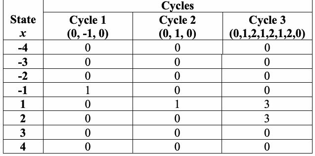
| 状態 x | サイクル数 |
| サイクル1 (0, -1, 0) | サイクル2 (0, 1, 0) / サイクル3 (0,1,2,1,2,1,2,0) |
| -4 / 0 | 0 / 0 |
| -3 / 0 | 0 / 0 |
| -2 / 0 | 0 / 0 |
| -1 / 1 | 0 / 0 |
| 1 / 0 | 1 / 3 |
| 2 / 0 | 0 / 3 |
| 3 / 0 | 0 / 0 |
| 4 / 0 | 0 / 0 |
6 \(J\) times the minimum of the probabilities found in the table in Section 3.14 must be \(\ge \) 5 in order to satisfy the empirical rule for Chi-square computations.
6 カイ二乗計算の経験則を満たすためには、セクション3.14の表にある確率の最小値の\(J\)倍が\(\ge \) 5でなければならない。
未レビュー訳(6) For each of the eight states of \(x\), compute \(\nu_k(x)\) = the total number of cycles in which state \(x\) occurs exactly \(k\) times among all cycles, for \(k=0,1,\ldots,5\) (for \(k=5\), all frequencies \(\ge5\) are stored in \(\nu_5(x)\)). Note that
(6) \(x\)の8つの状態のそれぞれについて、\(k=0,1,\ldots,5\)に対して、全サイクルの中で状態\(x\)がちょうど\(k\)回現れるサイクルの総数である\(\nu_k(x)\)を計算する（\(k=5\)について、すべての度数\(\ge5\)は\(\nu_5(x)\)に格納される）。以下に留意されたい：
For the example in this section,
本節の例では、
未レビュー訳- \(\nu_0(-1)=2\) (the –1 state occurs exactly 0 times in two cycles),
\(\nu_1(-1)=1\) (the –1 state occurs only once in 1 cycle),
\(\nu_2(-1)=\nu_3(-1)=\nu_4(-1)=\nu_5(-1)=0\) (the –1 state occurs exactly \(\{2,3,4,\ge5\}\) times in 0 cycles). - \(\nu_0(1)=1\) (the 1 state occurs exactly 0 times in 1 cycle),
\(\nu_1(1)=1\) (the 1 state occurs only once in 1 cycle),
\(\nu_3(1)=1\) (the 1 state occurs exactly three times in 1 cycle),
\(\nu_2(1)=\nu_4(1)=\nu_5(1)=0\) (the 1 state occurs exactly \(\{2,4,\ge5\}\) times in 0 cycles). - \(\nu_0(2)=2\) (the 2 state occurs exactly 0 times in 2 cycles),
\(\nu_3(2)=1\) (the 2 state occurs exactly three times in 1 cycle),
\(\nu_1(2)=\nu_2(2)=\nu_4(2)=\nu_5(2)=0\) (the 1 state occurs exactly \(\{1,2,4,\ge5\}\) times in 0 cycles). - \(\nu_0(-4)=3\) (the -4 state occurs exactly 0 times in 3 cycles),
\(\nu_1(-4)=\nu_2(-4)=\nu_3(-4)=\nu_4(-4)=\nu_5(-4)=0\) (the -4 state occurs exactly \(\{1,2,3,4,\ge5\}\) times in 0 cycles).
- \(\nu_0(-1)=2\)（–1の状態は2つのサイクルでちょうど0回現れる）、
\(\nu_1(-1)=1\)（–1の状態は1サイクルで1回のみ現れる）、
\(\nu_2(-1)=\nu_3(-1)=\nu_4(-1)=\nu_5(-1)=0\)（–1の状態は0サイクルでちょうど\(\{2,3,4,\ge5\}\)回現れる）。 - \(\nu_0(1)=1\)（1の状態は1サイクルでちょうど0回現れる）、
\(\nu_1(1)=1\)（1の状態は1サイクルで1回のみ現れる）、
\(\nu_3(1)=1\)（1の状態は1サイクルでちょうど3回現れる）、
\(\nu_2(1)=\nu_4(1)=\nu_5(1)=0\)（1の状態は0サイクルでちょうど\(\{2,4,\ge5\}\)回現れる）。 - \(\nu_0(2)=2\)（2の状態は2つのサイクルでちょうど0回現れる）、
\(\nu_3(2)=1\)（2の状態は1サイクルでちょうど3回現れる）、
\(\nu_1(2)=\nu_2(2)=\nu_4(2)=\nu_5(2)=0\)（1の状態は0サイクルでちょうど\(\{1,2,4,\ge5\}\)回現れる）。 - \(\nu_0(-4)=3\)（-4の状態は3つのサイクルでちょうど0回現れる）、
\(\nu_1(-4)=\nu_2(-4)=\nu_3(-4)=\nu_4(-4)=\nu_5(-4)=0\)（-4の状態は0サイクルでちょうど\(\{1,2,3,4,\ge5\}\)回現れる）。
And so on….
以下同様…。
未レビュー訳This can be shown using the following table:
これは次の表で示すことができる:
未レビュー訳| State x | Number of Cycles |
| 0 | 1 / 2 / 3 / 4 / 5 |
| -4 / 3 | 0 / 0 / 0 / 0 / 0 |
| -3 / 3 | 0 / 0 / 0 / 0 / 0 |
| -2 / 3 | 0 / 0 / 0 / 0 / 0 |
| -1 / 2 | 1 / 0 / 0 / 0 / 0 |
| 1 / 1 | 1 / 0 / 1 / 0 / 0 |
| 2 / 2 | 0 / 0 / 1 / 0 / 0 |
| 3 / 3 | 0 / 0 / 0 / 0 / 0 |
| 4 / 3 | 0 / 0 / 0 / 0 / 0 |
原本PDFの抜粋画像
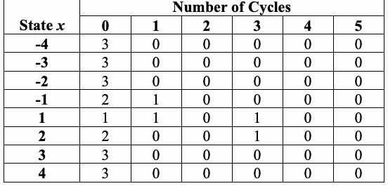
| 状態 x | サイクル数 |
| 0 | 1 / 2 / 3 / 4 / 5 |
| -4 / 3 | 0 / 0 / 0 / 0 / 0 |
| -3 / 3 | 0 / 0 / 0 / 0 / 0 |
| -2 / 3 | 0 / 0 / 0 / 0 / 0 |
| -1 / 2 | 1 / 0 / 0 / 0 / 0 |
| 1 / 1 | 1 / 0 / 1 / 0 / 0 |
| 2 / 2 | 0 / 0 / 1 / 0 / 0 |
| 3 / 3 | 0 / 0 / 0 / 0 / 0 |
| 4 / 3 | 0 / 0 / 0 / 0 / 0 |
(7) For each of the eight states of \(x\), compute the test statistic
where \(π_{k} ( x )\) is the probability that the state \(x\) occurs \(k\) times in a random distribution (see Section 3.14 for a table of \(π_{k}\) values). The values for \(π_{k} ( x )\) and their method of calculation are provided in Section 3.14. Note that eight \(χ^{2}\) statistics will be produced (i.e., for \(x = - 4 , - 3 , - 2 , - 1 , 1 , 2 , 3 , 4 ) .\)
(7) \(x\)の8つの状態のそれぞれについて、検定統計量を計算する：
ここで、\(π_{k} ( x )\)はランダムな分布において状態\(x\)が\(k\)回現れる確率である（\(π_{k}\)値の表についてはセクション3.14を参照）。\(π_{k} ( x )\)の値およびその計算方法はセクション3.14に記載されている。8個の\(χ^{2}\)統計量が生成されることに留意されたい（すなわち、\(x = - 4 , - 3 , - 2 , - 1 , 1 , 2 , 3 , 4 ) .\)
に対して）。未レビュー訳For example in this section, when \(x=1\),
本セクションの例として、\(x=1\)の場合、
(8) For each state of \(x\), compute
Eight \(P\text{-value}s\) will be produced.
(8) \(x\)の各状態について、以下を計算する：
8個の\(P\text{値}\)が生成される。
未レビュー訳For the example when \(x=1\),
\(x=1\)の例の場合、
2.14.5 Decision Rule (at the 1% Level)
2.14.5 1%水準での判定規則
未レビュー訳If the computed P-value is < 0.01, then conclude that the sequence is non-random. Otherwise, conclude that the sequence is random.
算出されたP-valueが < 0.01 の場合、系列は非ランダムであると結論する。それ以外の場合、系列はランダムであると結論する。
未レビュー訳2.14.6 Conclusion and Interpretation of Results
2.14.6 結論および結果の解釈
未レビュー訳Since the \(P\text{-value}\) obtained in step 8 of Section 2.14.4 is \(\ge \) 0.01 \(( P\text{-value}\) = 0.502529), the conclusion is that the sequence is random.
Note that if \(χ^{2} ( \mathrm{obs} )\) were too large, then the sequence would have displayed a deviation from the theoretical distribution for a given state across all cycles.
セクション 2.14.4 のステップ 8 で得られた \(P\text{値}\) は 0.01 \(\ge \) （\(( P\text{値}\) = 0.502529）であるため、その数列はランダムであるという結論になる。
\(χ^{2} ( \mathrm{obs} )\) が大きすぎる場合、その数列はすべてのサイクルにわたって所定の状態に対する理論分布からの逸脱を示していたことに注意すること。
未レビュー訳2.14.7 Input Size Recommendation
2.14.7 入力サイズの推奨
未レビュー訳It is recommended that each sequence to be tested consist of a minimum of 1,000,000 bits (i.e., \(n \ge 10^{6}\)).
テスト対象の各数列は、最低 1,000,000 ビット（すなわち \(n \ge 10^{6}\)）で構成されることが推奨される。
未レビュー訳2.14.8 Example
2.14.8 例
未レビュー訳(input) \(ε =\) "the binary expansion of \(e\) up to 1,000,000 bits"
(input) \(n = 1000000 = 10^{6}\)
（入力） \(ε =\) 「最大 1,000,000 ビットまでの \(e\) の 2 進展開」
（入力） \(n = 1000000 = 10^{6}\)
未レビュー訳(processing) J = 1490
(処理) J = 1490
未レビュー訳| State=\(x\) | \(\chi^2\) | P-value | Conclusion |
|---|---|---|---|
| -4 | 3.835698 | 0.573306 | Random |
| -3 | 7.318707 | 0.197996 | Random |
| -2 | 7.861927 | 0.164011 | Random |
| -1 | 15.692617 | 0.007779 | Non-random |
| +1 | 2.485906 | 0.778616 | Random |
| +2 | 5.429381 | 0.365752 | Random |
| +3 | 2.404171 | 0.790853 | Random |
| +4 | 2.393928 | 0.792378 | Random |
(conclusion) For seven of the states of \(x\), the \(P\text{-value}\) is \(\ge0.01\), and the conclusion would be that the sequence was random. However, for one state of \(x\) (\(x=-1\)), the \(P\text{-value}\) is \(<0.01\), so the conclusion would be that the sequence is non-random. When contradictions arise, further sequences should be examined to determine whether or not this behavior is typical of the generator.
| 状態=\(x\) | \(\chi^2\) | P値 | 結論 |
|---|---|---|---|
| -4 | 3.835698 | 0.573306 | ランダム |
| -3 | 7.318707 | 0.197996 | ランダム |
| -2 | 7.861927 | 0.164011 | ランダム |
| -1 | 15.692617 | 0.007779 | 非ランダム |
| +1 | 2.485906 | 0.778616 | ランダム |
| +2 | 5.429381 | 0.365752 | ランダム |
| +3 | 2.404171 | 0.790853 | ランダム |
| +4 | 2.393928 | 0.792378 | ランダム |
（結論） \(x\) の 7 つの状態について、\(P\text{値}\) は \(\ge0.01\) であり、その数列はランダムであるという結論になる。しかし、\(x\) の 1 つの状態（\(x=-1\)）については、\(P\text{値}\) は \(<0.01\) であるため、その数列は非ランダムであるという結論になる。矛盾が生じた場合、この挙動がその生成器に典型的なものであるかどうかを判断するために、さらなる数列を調査する必要がある。
未レビュー訳2.15 Random Excursions Variant Test
2.15 ランダム逸脱バリアント検定
未レビュー訳2.15.1 Test Purpose
2.15.1 検定の目的
未レビュー訳The focus of this test is the total number of times that a particular state is visited (i.e., occurs) in a cumulative sum random walk. The purpose of this test is to detect deviations from the expected number of visits to various states in the random walk. This test is actually a series of eighteen tests (and conclusions), one test and conclusion for each of the states: -9, -8, …, -1 and +1, +2, …, +9.
この検定は、累積和ランダムウォークにおいて特定の状態が訪問される（すなわち、出現する）総回数に着目する。この検定の目的は、ランダムウォークにおける各状態への訪問回数が期待値から逸脱しているかを検出することである。実際には、この検定は十八の検定（および結論）からなり、状態 -9、-8、…、-1、および +1、+2、…、+9 の各状態について、それぞれ一つずつ検定と結論を行う。
未レビュー訳2.15.2 Function Call
2.15.2 関数呼び出し
未レビュー訳RandomExcursionsVariant(n), where:
RandomExcursionsVariant(n)、ここで:
未レビュー訳n The length of the bit string; available as a parameter during the function call.
n ビット列の長さ。関数呼び出し時にパラメーターとして利用できる。
未レビュー訳Additional input used by the function, but supplied by the testing code:
関数が使用するが、検定コードから渡される追加の入力:
未レビュー訳\(\varepsilon\) — The sequence of bits generated by the RNG or PRNG under test. This exists as a global structure at the time of the function call; \(\varepsilon=\varepsilon_1,\varepsilon_2,\ldots,\varepsilon_n\).
\(\varepsilon\)：検定対象のRNGまたはPRNGが生成したビット系列。関数呼び出し時にはグローバルなデータ構造として存在する。\(\varepsilon=\varepsilon_1,\varepsilon_2,\ldots,\varepsilon_n\)。
2.15.3 Test Statistic and Reference Distribution
2.15.3 検定統計量および参照分布
未レビュー訳\(ξ :\) For a given state \(x ,\) the total number of times that the given state is visited during the entire random walk as determined in step 4 of Section 2.15.4.
\(ξ :\) 所定の状態 \(x ,\) について、セクション 2.15.4 のステップ 4 で決定された、ランダムウォーク全体の中でその所定の状態が訪問された合計回数。
未レビュー訳The reference distribution for the test statistic is the half normal (for large \(n ) .\) (Note: If \(ξ\)is distributed as normal, then \(| ξ |\) is distributed as half normal.) If the sequence is random, then the test statistic will be about 0. If there are too many ones or too many zeroes, then the test statistic will be large.
検定統計量の参照分布は半正規分布である（大きな \(n ) .\) の場合。（注：\(ξ\)が正規分布に従う場合、\(| ξ |\) は半正規分布に従う。）数列がランダムである場合、検定統計量は約 0 になる。1 が多すぎるか、または 0 が多すぎる場合、検定統計量は大きくなる。
未レビュー訳2.15.4 Test Description
2.15.4 検定の説明
未レビュー訳(1) Form the normalized (-1, +1) sequence \(X\) in which the zeros and ones of the input sequence \(( ε )\) are converted to values of –1 and +1 via \(X = X_{1} , X_{2} , \ldots , X_{n} ,\) where \(X_{i} = 2 ε_{i} – 1 .\)
For example, if \(ε\) = 0110110101, then \(n = 10\) and \(X = - 1 , 1 , 1 , - 1 , 1 , 1 , - 1 , 1 , - 1 , 1 .\)
(2) Compute partial sums \(S_{i}\) of successively larger subsequences, each starting with \(x_{1} .\) Form the set \(S\) = {\(S_{i}\)}.
(1) 入力数列 \(( ε )\) の 0 と 1 を、\(X_{i} = 2 ε_{i} – 1 .\)
である \(X = X_{1} , X_{2} , \ldots , X_{n} ,\) を介して –1 と +1 の値に変換した、正規化された (-1, +1) 数列 \(X\) を形成する。例えば、\(ε\) = 0110110101 の場合、\(n = 10\) であり、\(X = - 1 , 1 , 1 , - 1 , 1 , 1 , - 1 , 1 , - 1 , 1 .\)
となる。(2) それぞれ \(x_{1} .\) から始まる、順次大きくなる部分数列の部分和 \(S_{i}\) を計算する。集合 \(S\) = {\(S_{i}\)} を形成する。
For the example in this section,
本セクションの例では、
The set S = {-1, 0, 1, 0, 1, 2, 1, 2, 1, 2}.
集合 S = {-1, 0, 1, 0, 1, 2, 1, 2, 1, 2}。
未レビュー訳
(3) Form a new sequence \(S\)' by attaching zeros before and after the set \(S .\) That is, \(S ' = 0 , s_{1} , s_{2} , \ldots , s_{n} ,\) 0.
(3) 集合\(S\)'の前後に0を付加することにより、新しい数列\(S .\)を形成する。すなわち、\(S ' = 0 , s_{1} , s_{2} , \ldots , s_{n} ,\) 0である。
未レビュー訳For the example, S' = 0, -1, 0, 1, 0, 1, 2, 1, 2, 1, 2, 0. The resulting random walk is shown below.
本節の例では、S' = 0, -1, 0, 1, 0, 1, 2, 1, 2, 1, 2, 0。結果のランダムウォークを以下に示す。
未レビュー訳(4) For each of the eighteen non-zero states of \(x ,\) compute \(ξ ( x )\) = the total number of times that state \(x\) occurred across all \(J\) cycles.
(4) \(x ,\)の18個の非ゼロ状態のそれぞれについて、\(ξ ( x )\) = 全\(x\)サイクルにわたって状態\(J\)が出現した合計回数を計算する。
未レビュー訳For the example in this section, \(\xi(-1)=1,\;\xi(1)=4,\;\xi(2)=3\), and all other \(\xi(x)=0\).
(5) For each \(\xi(x)\), compute
Eighteen \(P\text{-value}s\) are computed. See Section 5.5.3 for the definition of \(\operatorname{erfc}\).
本節の例では、\(\xi(-1)=1,\;\xi(1)=4,\;\xi(2)=3\)であり、その他のすべての\(\xi(x)=0\)である。
(5) 各\(\xi(x)\)について、
を計算する。18個の\(P\text{値}\)が計算される。\(\operatorname{erfc}\)の定義についてはセクション5.5.3を参照のこと。
未レビュー訳For the example in this section, when \(x=1\),
本節の例において、\(x=1\)のとき、
2.15.5 Decision Rule (at the 1% Level)
2.15.5 1%水準での判定規則
未レビュー訳If the computed P-value is < 0.01, then conclude that the sequence is non-random. Otherwise, conclude that the sequence is random.
算出されたP-valueが < 0.01 の場合、系列は非ランダムであると結論する。それ以外の場合、系列はランダムであると結論する。
未レビュー訳2.15.6 Conclusion and Interpretation of Results
2.15.6 結論および結果の解釈
未レビュー訳Since the \(P\text{-value}\) obtained in step 7 of Section 2.15.4 is \(\ge \) 0.01 for the state \(x\) = 1 \(( P\text{-value}\) = 0.683091), the conclusion is that the sequence is random.
セクション2.15.4のステップ7で得られた\(P\text{値}\)は、状態\(\ge \) = 1（\(x\) = 0.683091）に対して0.01 \(( P\text{値}\)であるため、その数列はランダムであると結論付けられる。
未レビュー訳2.15.7 Input Size Recommendation
2.15.7 入力サイズの推奨
未レビュー訳It is recommended that each sequence to be tested consist of a minimum of 1,000,000 bits (i.e., \(n \ge 10^{6}\)).
テストされる各数列は、最低1,000,000ビットで構成されることが推奨される（すなわち、\(n \ge 10^{6}\)）。
未レビュー訳2.15.8 Example
2.15.8 例
未レビュー訳(input) \(ε =\) "the binary expansion of \(e\) up to 1,000,000 bits"
(input) \(n = 1000000 = 10^{6}\)
(入力) \(ε =\) 「最大1,000,000ビットまでの\(e\)の二値展開」
\n(入力) \(n = 1000000 = 10^{6}\)
未レビュー訳(processing) J = 1490
(処理) J = 1490
未レビュー訳| State(x) | Counts | P-value | Conclusion |
| -9 | 1450 | 0.858946 | Random |
| -8 | 1435 | 0.794755 | Random |
| -7 | 1380 | 0.576249 | Random |
| -6 | 1366 | 0.493417 | Random |
| -5 | 1412 | 0.633873 | Random |
| -4 | 1475 | 0.917283 | Random |
| -3 | 1480 | 0.934708 | Random |
| -2 | 1468 | 0.816012 | Random |
| -1 | 1502 | 0.826009 | Random |
| +1 | 1409 | 0.137861 | Random |
| +2 | 1369 | 0.200642 | Random |
| +3 | 1396 | 0.441254 | Random |
| +4 | 1479 | 0.939291 | Random |
| +5 | 1599 | 0.505683 | Random |
| +6 | 1628 | 0.445935 | Random |
| +7 | 1619 | 0.512207 | Random |
| +8 | 1620 | 0.538635 | Random |
| +9 | 1610 | 0.593930 | Random |
原本PDFの抜粋画像
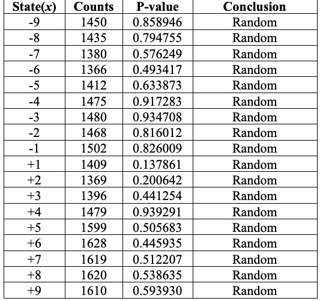
| 状態(x) | 回数 | P-value | 判定 |
| -9 | 1450 | 0.858946 | ランダム |
| -8 | 1435 | 0.794755 | ランダム |
| -7 | 1380 | 0.576249 | ランダム |
| -6 | 1366 | 0.493417 | ランダム |
| -5 | 1412 | 0.633873 | ランダム |
| -4 | 1475 | 0.917283 | ランダム |
| -3 | 1480 | 0.934708 | ランダム |
| -2 | 1468 | 0.816012 | ランダム |
| -1 | 1502 | 0.826009 | ランダム |
| +1 | 1409 | 0.137861 | ランダム |
| +2 | 1369 | 0.200642 | ランダム |
| +3 | 1396 | 0.441254 | ランダム |
| +4 | 1479 | 0.939291 | ランダム |
| +5 | 1599 | 0.505683 | ランダム |
| +6 | 1628 | 0.445935 | ランダム |
| +7 | 1619 | 0.512207 | ランダム |
| +8 | 1620 | 0.538635 | ランダム |
| +9 | 1610 | 0.593930 | ランダム |
(conclusion) Since the \(P\text{-value} \ge 0.01\) for each of the eighteen states of x, accept the sequence as random.
(結論) xの18個の状態のそれぞれについて\(P\text{値} \ge 0.01\)であるため、数列をランダムとして採択する。
未レビュー訳3. Technical Description of Tests
3. 技術的な検定の説明
未レビュー訳This section contains the mathematical background for the tests in the NIST test suite. Each subsection corresponds to the appropriate subsection in Section 2. The relevant references for each subsection are provided at the end of that subsection.
この節では、NIST検定スイートの検定に関する数学的背景を説明する。各小節は第2節の対応する小節に対応する。各小節に関連する参考文献は、その小節の末尾に示す。
未レビュー訳3.1 Frequency (Monobits) Test
3.1 頻度（単一ビット）検定
未レビュー訳The most basic test is that of the null hypothesis: in a sequence of independent identically distributed Bernoulli random variables \(( X\)'s or \(ε\)'s, where \(X\) = \(2 ε - 1 ,\) and so \(S_{n}\) = \(X_{1}\) + … + \(X_{n}\) = \(2 ( ε_{1}\) + … \(+ ε_{n} )\) – \(n ) ,\) the probability of ones is 1/2. By the classic De Moivre-Laplace theorem, for a sufficiently large number of trials, the distribution of the binomial sum, normalized by \(\sqrt{n} ,\) is closely approximated by a standard normal distribution. This test makes use of that approximation to assess the closeness of the fraction of 1's to 1/2. All subsequent tests are conditioned on having passed this first basic test.
最も基本的な検定は帰無仮説に関するものである。すなわち、独立同分布に従うベルヌーイ確率変数列\(( X\)または\(ε\)において（ここで\(X\) = \(2 ε - 1 ,\)であり、したがって\(S_{n}\) = \(X_{1}\) + … + \(X_{n}\) = \(2 ( ε_{1}\) + … \(+ ε_{n} )\) – \(n ) ,\)）、1の確率は1/2であるという仮説である。古典的なド・モアブル–ラプラスの定理によれば、試行回数が十分に大きい場合、\(\sqrt{n} ,\)によって正規化された二項和の分布は、標準正規分布によって良好に近似される。本検定はこの近似を利用して、1の割合が1/2にどれだけ近いかを評価する。後続のすべての検定は、この最初の基本検定に合格していることを前提条件とする。
未レビュー訳The test is derived from the well-known limit Central Limit Theorem for the random walk, \(S_{n}\) = \(X_{1}\) + … + \(X_{n} .\) According to the Central Limit Theorem,
この検定は、ランダムウォークに対する周知の極限定理である中心極限定理、\(S_{n}\) = \(X_{1}\) + … + \(X_{n} .\)から導出される。中心極限定理によれば、
This classical result serves as the basis of the simplest test for randomness. It implies that, for positive z,
この古典的な結果は、最も単純なランダム性検定の基礎となる。正の z に対しては、
未レビュー訳According to the test based on the statistic \(s=|S_n|/\sqrt n\), evaluate the observed value \(|s(\mathrm{obs})|=|X_1+\cdots+X_n|/\sqrt n\), and then calculate the corresponding \(P\text{-value}\), which is
Here, \(\operatorname{erfc}\) is the (complementary) error function
References for Test
原本照合メモ: 原本p.63はerfcの引数の分母を√nと記す。p.25の√2と不整合だが、原本の転記として保持。
統計量\(s=|S_n|/\sqrt n\)に基づく検定に従って、観測値\(|s(\mathrm{obs})|=|X_1+\cdots+X_n|/\sqrt n\)を評価し、次にそれに対応する\(P\text{値}\)を計算する。これは以下の通りである：
ここで、\(\operatorname{erfc}\)は（相補）誤差関数である。
検定の参考文献
未レビュー訳[1] Kai Lai Chung, Elementary Probability Theory with Stochastic Processes. New York: Springer- Verlag, 1979 (especially pp. 210-217).
[1] Kai Lai Chung, Elementary Probability Theory with Stochastic Processes. New York: Springer- Verlag, 1979 (especially pp. 210-217).
未レビュー訳[2] Jim Pitman, Probability. New York: Springer-Verlag, 1993 (especially pp. 93-108).
[2] Jim Pitman, Probability. New York: Springer-Verlag, 1993 (especially pp. 93-108).
未レビュー訳3.2 Frequency Test within a Block
3.2 ブロック内頻度検定
未レビュー訳The test seeks to detect localized deviations from the ideal 50% frequency of 1's by decomposing the test sequence into a number of nonoverlapping subsequences and applying a chi-square test for a homogeneous match of empirical frequencies to the ideal 1/2. Small P-values indicate large deviations from the equal proportion of ones and zeros in at least one of the substrings. The string of 0's and 1's (or equivalent -1's and 1's) is partitioned into a number of disjoint substrings. For each substring, the proportion of ones is computed. A chi-square statistic compares these substring proportions to the ideal
この検定は、理想的な50%の1's頻度からの局所的な逸脱を検出するため、検定系列を複数の重複しない部分系列に分割し、経験頻度が理想値1/2に適合するかをカイ二乗検定で評価する。P-valueが小さい場合、少なくとも一つの部分文字列において、一とゼロの割合が等しい状態から大きく逸脱していることを示す。0's と 1's（または等価な -1's と 1's）からなる文字列を、互いに重ならない複数の部分文字列に分割する。各部分文字列で一の割合を計算する。カイ二乗統計量は部分文字列の割合と理想値を比較する。
未レビュー訳1/2. The statistic is referred to a chi-squared distribution with the degrees of freedom equal to the number of substrings.
1/2。この統計量は、部分文字列の数に等しい自由度を持つカイ二乗分布に従う。
未レビュー訳The parameters of this test are \(M\) and \(N ,\) so that \(n\) = \(MN ,\) i.e., the original string is partitioned into \(N\) substrings, each of length \(M .\) For each of these substrings, the probability of ones is estimated by the observed relative frequency of 1's, \(π_{i} , i\) = 1,…\(, N .\) The sum
本検定のパラメータは\(M\)および\(N ,\)であり、したがって\(n\) = \(MN ,\)となる。すなわち、元の文字列はそれぞれ長さ\(M .\)の\(N\)個の部分文字列に分割される。これらの各部分文字列について、1の確率は1の観測相対頻度\(π_{i} , i\) = 1,…\(, N .\)によって推定される。和
未レビュー訳under the randomness hypothesis has the \(\chi^2\)-distribution with \(N\) degrees of freedom. The reported \(P\text{-value}\) is
原本照合メモ: ['原本p.64の第2の積分はduの直後に余分な9を印字する。変数変換およびigamcとの等式と不整合。432dpiで確認し、原本の9を保持。']
は、ランダム性の仮説の下で、自由度\(N\)の\(\chi^2\)分布に従う。報告される\(P\text{値}\)は以下の通りである：
References for Test
検定の参考文献
未レビュー訳[1] Nick Maclaren, “Cryptographic Pseudo-random Numbers in Simulation,” Cambridge Security Workshop on Fast Software Encryption. Dec. 1993. Cambridge, U.K.: R. Anderson, pp. 185-190.
[1] Nick Maclaren, “Cryptographic Pseudo-random Numbers in Simulation,” Cambridge Security Workshop on Fast Software Encryption. Dec. 1993. Cambridge, U.K.: R. Anderson, pp. 185-190.
未レビュー訳[2] Donald E. Knuth, The Art of Computer Programming. Vol 2: Seminumerical Algorithms. 3rd ed.
[2] Donald E. Knuth, The Art of Computer Programming. Vol 2: Seminumerical Algorithms. 3rd ed.
未レビュー訳Reading, Mass: Addison-Wesley, 1998 (especially pp. 42-47).
Reading, Mass: Addison-Wesley, 1998 (especially pp. 42-47).
未レビュー訳[3] Milton Abramowitz and Irene Stegun, Handbook of Mathematical Functions: NBS Applied Mathematics Series 55. Washington, D.C.: U.S. Government Printing Office, 1967.
[3] Milton Abramowitz and Irene Stegun, Handbook of Mathematical Functions: NBS Applied Mathematics Series 55. Washington, D.C.: U.S. Government Printing Office, 1967.
未レビュー訳3.3 Runs Test
3.3 ラン検定
未レビュー訳This variant of a classic nonparametric test looks at “runs” defined as substrings of consecutive 1's and consecutive 0's, and considers whether the oscillation among such homogeneous substrings is too fast or too slow.
この古典的なノンパラメトリック検定の変形では、「ラン」を連続する1'sまたは0'sからなる部分文字列として定義し、このような均質な部分文字列間の振動が速すぎるか遅すぎるかを調べる。
未レビュー訳The specific test used here is based on the distribution of the total number of runs, \(V_{n} .\) For the fixed proportion \(π = \sum _{j} ε_{j} / n\) (which by the Frequency test of Section 3.1 must have been established to be close to 0.5: \(\left|\pi-\frac12\right|\le\frac2{\sqrt n}\) ).
To evaluate \(V_{n} ,\) define for k = 1,…,n-1, \(r ( k ) = 0\) if \(ε_{k} = ε_{k + 1}\) and \(r ( k ) = 1\) if \(ε_{k} \ne ε_{k + 1} .\) Then
\(V_n=\sum_{k=1}^{n-1}r(k)+1.\) The \(P\text{-value}\) reported is
ここで用いられる特定の検定は、ランの総数\(V_{n} .\)の分布に基づいている。固定された比率\(π = \sum _{j} ε_{j} / n\)について（これはセクション3.1の頻度検定によって0.5に近いことが確立されていなければならない：\(\left|\pi-\frac12\right|\le\frac2{\sqrt n}\)）。
\(V_{n} ,\)を評価するために、k = 1,…,n-1に対して、\(ε_{k} = ε_{k + 1}\)の場合は\(r ( k ) = 0\)、\(ε_{k} \ne ε_{k + 1} .\)の場合は\(r ( k ) = 1\)と定義する。そのとき
\(V_n=\sum_{k=1}^{n-1}r(k)+1.\) 報告される\(P\text{値}\)は以下の通りである：
Large values of \(V_{n} ( \mathrm{obs} )\) indicate oscillation in the string of \(ε\)'s which is too fast; small values indicate oscillation which is too slow.
\(V_{n} ( \mathrm{obs} )\)の値が大きいことは、\(ε\)の列における振動が速すぎることを示し、小さい値は振動が遅すぎることを示す。
未レビュー訳References for Test
[1] Jean D. Gibbons, Nonparametric Statistical Inference, 2nd ed. New York: Marcel Dekker, 1985 (especially pp. 50-58).
検定の参考文献
[1] Jean D. Gibbons, Nonparametric Statistical Inference, 2nd ed. New York: Marcel Dekker, 1985 (特に pp. 50-58)
未レビュー訳[2] Anant P. Godbole and Stavros G. Papastavridis, (ed), Runs and patterns in probability: Selected papers. Dordrecht: Kluwer Academic, 1994.
[2] Anant P. Godbole and Stavros G. Papastavridis, (ed), Runs and patterns in probability: Selected papers. Dordrecht: Kluwer Academic, 1994.
3.4 Test for the Longest Run of Ones in a Block
3.4 ブロック内の1の最長ラン検定
未レビュー訳The length of the longest consecutive subsequence (run) of ones is another characteristic that can be used for testing randomness. A string of length \(n ,\) such that \(n\) = \(MN ,\) must be partitioned into \(N\) substrings, each of length \(M .\) For the test based on the length of the longest run of ones \(ν_{j}\) within the \(j -\)th substring of size \(M , K\) + 1 classes are chosen (depending on \(M ) .\) For each of these substrings, one evaluates the frequencies \(ν_{0} , ν_{1} , \ldots , ν_{k} ( ν_{0} + ν_{1} + \ldots + ν_{K} = N ,\) i.e., the computed values of the longest run of ones within each of these substrings belonging to any of the \(K\) + 1 chosen classes). If there are \(r\) ones and \(M\) - \(r\) zeroes in the \(m -\)bit block, then the conditional probability that the longest string of ones \(ν\) in this blockis less than or equal to \(m\) has the following form with \(U=\min\left(M-r+1,\left\lfloor\frac r{m+1}\right\rfloor\right)\) (see [1]):
1の最長連続部分列（ラン）の長さは、ランダム性の検定に使用できるもう1つの特性である。\(n\) = \(MN ,\)を満たす長さ\(n ,\)のビット列は、それぞれ長さ\(M .\)の\(N\)個の部分文字列に分割する必要がある。サイズ\(M , K\)の第\(j -\)番目の部分文字列内における1の最長ランの長さ\(ν_{j}\)に基づく検定では、（\(M ) .\)に応じて）+ 1個のクラスが選択される。これらの各部分文字列について、度数\(ν_{0} , ν_{1} , \ldots , ν_{k} ( ν_{0} + ν_{1} + \ldots + ν_{K} = N ,\)（すなわち、選択された\(K\) + 1個のクラスのいずれかに属する、これら各部分文字列内での1の最長ランの計算値）を評価する。\(m -\)ビットのブロック内に\(r\)個の1と\(M\) - \(r\)個の0がある場合、このブロック内の1の最長連続列\(ν\)が\(m\)以下である条件付き確率は、\(U=\min\left(M-r+1,\left\lfloor\frac r{m+1}\right\rfloor\right)\)として以下の形式をとる（[1]を参照）：
so that
したがって
未レビュー訳The theoretical probabilities \(π_{0} , π_{1} , \ldots , π_{K}\) of these classes are determined from [3].
The empirical frequencies \(ν_{i} , i = 0 , \ldots , K\) are conjoined by the \(Χ^{2}\)-statistic
which, under the randomness hypothesis, has an approximate \(Χ^{2}\)-distribution with \(K\) degrees of freedom. The reported \(P\text{-value}\) is
これらのクラスの理論的確率\(π_{0} , π_{1} , \ldots , π_{K}\)は[3]から求められる。
経験的度数\(ν_{i} , i = 0 , \ldots , K\)は、\(Χ^{2}\)統計量によって結合される。
これはランダム性の仮説の下で、自由度\(K\)の近似的な\(Χ^{2}\)分布に従う。報告される\(P\text{値}\)は次のようになる。
未レビュー訳with \(P ( a , x )\) denoting the incomplete gamma function as expressed in Section 3.2.
ここで、\(P ( a , x )\)はセクション3.2で表されている不完全ガンマ関数を表す。
未レビュー訳The following table contains selected values of \(K\) and \(M\) with the corresponding probabilities obtained from [3]. Cases \(K = 3 , M = 8\); \(K = 5 , M = 128\); and \(K = 6 , M = 10000\) are currently embedded in the test suite code.
以下の表には、選定された\(K\)および\(M\)の値と、[3]から得られた対応する確率が含まれている。ケース\(K = 3 , M = 8\)、\(K = 5 , M = 128\)、および\(K = 6 , M = 10000\)は、現在テストスイートのコードに組み込まれている。
未レビュー訳| classes | probabilities |
| \(\{\nu\le 1\}\) | \(\pi_{0}=0.2148\) |
| \(\{\nu=2\}\) | \(\pi_{1}=0.3672\) |
| \(\{\nu=3\}\) | \(\pi_{2}=0.2305\) |
| \(\{\nu\ge 4\}\) | \(\pi_{3}=0.1875\) |
| クラス | 確率 |
| \(\{\nu\le 1\}\) | \(\pi_{0}=0.2148\) |
| \(\{\nu=2\}\) | \(\pi_{1}=0.3672\) |
| \(\{\nu=3\}\) | \(\pi_{2}=0.2305\) |
| \(\{\nu\ge 4\}\) | \(\pi_{3}=0.1875\) |
| classes | probabilities |
| \(\{\nu\le 4\}\) | \(\pi_{0}=0.1174\) |
| \(\{\nu=5\}\) | \(\pi_{1}=0.2430\) |
| \(\{\nu=6\}\) | \(\pi_{2}=0.2493\) |
| \(\{\nu=7\}\) | \(\pi_{3}=0.1752\) |
| \(\{\nu=8\}\) | \(\pi_{4}=0.1027\) |
| \(\{\nu\ge 9\}\) | \(\pi_{5}=0.1124\) |
| クラス | 確率 |
| \(\{\nu\le 4\}\) | \(\pi_{0}=0.1174\) |
| \(\{\nu=5\}\) | \(\pi_{1}=0.2430\) |
| \(\{\nu=6\}\) | \(\pi_{2}=0.2493\) |
| \(\{\nu=7\}\) | \(\pi_{3}=0.1752\) |
| \(\{\nu=8\}\) | \(\pi_{4}=0.1027\) |
| \(\{\nu\ge 9\}\) | \(\pi_{5}=0.1124\) |
| classes | probabilities |
| \(\{\nu\le 6\}\) | \(\pi_{0}=0.1170\) |
| \(\{\nu=7\}\) | \(\pi_{1}=0.2460\) |
| \(\{\nu=8\}\) | \(\pi_{2}=0.2523\) |
| \(\{\nu=9\}\) | \(\pi_{3}=0.1755\) |
| \(\{\nu=10\}\) | \(\pi_{4}=0.1027\) |
| \(\{\nu\ge 11\}\) | \(\pi_{5}=0.1124\) |
| クラス | 確率 |
| \(\{\nu\le 6\}\) | \(\pi_{0}=0.1170\) |
| \(\{\nu=7\}\) | \(\pi_{1}=0.2460\) |
| \(\{\nu=8\}\) | \(\pi_{2}=0.2523\) |
| \(\{\nu=9\}\) | \(\pi_{3}=0.1755\) |
| \(\{\nu=10\}\) | \(\pi_{4}=0.1027\) |
| \(\{\nu\ge 11\}\) | \(\pi_{5}=0.1124\) |
| classes | probabilities |
| \(\{\nu\le 7\}\) | \(\pi_{0}=0.1307\) |
| \(\{\nu=8\}\) | \(\pi_{1}=0.2437\) |
| \(\{\nu=9\}\) | \(\pi_{2}=0.2452\) |
| \(\{\nu=10\}\) | \(\pi_{3}=0.1714\) |
| \(\{\nu=11\}\) | \(\pi_{4}=0.1002\) |
| \(\{\nu\ge 12\}\) | \(\pi_{5}=0.1088\) |
| クラス | 確率 |
| \(\{\nu\le 7\}\) | \(\pi_{0}=0.1307\) |
| \(\{\nu=8\}\) | \(\pi_{1}=0.2437\) |
| \(\{\nu=9\}\) | \(\pi_{2}=0.2452\) |
| \(\{\nu=10\}\) | \(\pi_{3}=0.1714\) |
| \(\{\nu=11\}\) | \(\pi_{4}=0.1002\) |
| \(\{\nu\ge 12\}\) | \(\pi_{5}=0.1088\) |
| classes | probabilities |
| \(\{\nu\le 10\}\) | \(\pi_{0}=0.0882\) |
| \(\{\nu=11\}\) | \(\pi_{1}=0.2092\) |
| \(\{\nu=12\}\) | \(\pi_{2}=0.2483\) |
| \(\{\nu=13\}\) | \(\pi_{3}=0.1933\) |
| \(\{\nu=14\}\) | \(\pi_{4}=0.1208\) |
| \(\{\nu=15\}\) | \(\pi_{5}=0.0675\) |
| \(\{\nu\ge 16\}\) | \(\pi_{6}=0.0727\) |
Large values of \(\chi^2\) indicate that the sequence has clusters of ones; the generation of “random” sequences by humans tends to lead to small values of \(\nu_n\) (see [3, p.55]).
| クラス | 確率 |
| \(\{\nu\le 10\}\) | \(\pi_{0}=0.0882\) |
| \(\{\nu=11\}\) | \(\pi_{1}=0.2092\) |
| \(\{\nu=12\}\) | \(\pi_{2}=0.2483\) |
| \(\{\nu=13\}\) | \(\pi_{3}=0.1933\) |
| \(\{\nu=14\}\) | \(\pi_{4}=0.1208\) |
| \(\{\nu=15\}\) | \(\pi_{5}=0.0675\) |
| \(\{\nu\ge 16\}\) | \(\pi_{6}=0.0727\) |
\(\chi^2\)の値が大きいことは、シーケンスに1のクラスターが存在することを示す。人間による「ランダムな」シーケンスの生成は、\(\nu_n\)の値を小さくする傾向がある（[3, p.55]を参照）。
未レビュー訳References for Test
[1] F. N. David and D. E. Barton, Combinatorial Chance. New York: Hafner Publishing Co., 1962, p. 230.
検定の参考文献
[1] F. N. David and D. E. Barton, Combinatorial Chance. New York: Hafner Publishing Co., 1962, p. 230.
未レビュー訳[2] Anant P. Godbole and Stavros G. Papastavridis (ed), Runs and Patterns in Probability: Selected Papers. Dordrecht: Kluwer Academic, 1994.
[2] Anant P. Godbole and Stavros G. Papastavridis (ed), Runs and Patterns in Probability: Selected Papers. Dordrecht: Kluwer Academic, 1994.
[3] Pal Revesz, Random Walk in Random and Non-Random Environments. Singapore: World Scientific, 1990.
[3] Pal Revesz, Random Walk in Random and Non-Random Environments. Singapore: World Scientific, 1990.
3.5 Binary Matrix Rank Test
3.5 二値行列の階数検定
未レビュー訳Another approach to testing for randomness is to check for linear dependence among fixed-length substrings of the original sequence: construct matrices of successive zeroes and ones from the sequence, and check for linear dependence among the rows or columns of the constructed matrices. The deviation of the rank - or rank deficiency - of the matrices from a theoretically expected value gives the statistic of interest.
乱数性を検定する別の方法は、元の系列から固定長の部分文字列を取り出し、それらの間に線形従属があるかを調べることである。系列から0と1が連続する部分列を用いて行列を構成し、構成した行列の行または列に線形従属があるかを調べる。行列の階数（または階数欠損）が理論上の期待値からどれだけ逸脱するかを、関心対象の統計量とする。
未レビュー訳This test is a specification of one of the tests coming from the DIEHARD [1] battery of tests. It is based on the result of Kovalenko [2] and also formulated by Marsaglia and Tsay [3]. The result states that the rank \(R\) of the \(M\times Q\) random binary matrix takes values \(r\) = 0, 1, 2, …, \(m\) where \(m ≡ \operatorname{min} ( M , Q )\) with probabilities
The probability values are fixed in the test suite code for \(M\) = \(Q\) = 32. The number \(M\) is then a parameter of this test, so that ideally \(n\) = \(M^{2} N ,\) where \(N\) is the new “sample size.” In practice, values for \(M\) and \(N\) are chosen so that the discarded part of the string, \(n\) - \(NM^{2}\), is fairly small.
本検定は、DIEHARD [1] 検定バッテリーに含まれる検定の1つの仕様である。Kovalenko [2] の結果に基づいており、MarsagliaおよびTsay [3] によっても定式化されている。その結果によると、\(M\times Q\) ランダム二値行列のランク \(R\) は、\(m ≡ \operatorname{min} ( M , Q )\) である \(r\) = 0, 1, 2, …, \(m\) の値を次の確率でとる。
確率値は、\(M\) = \(Q\) = 32 に対するテストスイートのコードにおいて固定されている。したがって、数 \(M\) は本検定のパラメータとなり、理想的には \(n\) = \(M^{2} N ,\) となる。ここで、\(N\) は新たな「サンプルサイズ」である。実際には、列の破棄される部分である \(n\) - \(NM^{2}\) が十分に小さくなるように、\(M\) および \(N\) の値が選択される。
未レビュー訳The rationale for this choice is that
この選択の根拠は、次のとおりである。
未レビュー訳and all other probabilities are very small (\(\le0.005\)) when \(M\ge10\).
For the \(N\) square matrices obtained, their ranks \(R_l,\;l=1,\ldots,N\) are evaluated, and the frequencies \(F_M,F_{M-1}\), and \(N-F_M-F_{M-1}\) of the values \(M,M-1\) and of ranks not exceeding \(M-2\) are determined:
であり、\(M\ge10\) のとき、他のすべての確率は非常に小さくなる（\(\le0.005\)）。
得られた \(N\) 個の正方行列について、それらのランク \(R_l,\;l=1,\ldots,N\) が評価され、値 \(M,M-1\) の頻度 \(F_M,F_{M-1}\)、および \(M-2\) を超えないランクの頻度 \(N-F_M-F_{M-1}\) が決定される。
未レビュー訳To apply the \(\chi^2\)-test, use the classical statistic
which, under the null (randomness) hypothesis, has an approximate \(Χ^{2}\)-distribution with 2 degrees of freedom. The reported \(P\text{-value}\) is \(\exp\{-\chi^2(\mathrm{obs})/2\}\).
Interpretation of this test: large values of \(Χ^{2} ( \mathrm{obs} )\) indicate that the deviation of the rank distribution from that corresponding to a random sequence is significant. For example, pseudo random matrices produced by a shift-register generator formed by less than \(M\) successive vectors systematically have rank \(R_{l} ≡ M ,\) while for truly random data, the proportion of such occurrences should be only about 0.29.
References for Test
[1] George Marsaglia, DIEHARD: a battery of tests of randomness. http://www.stat.fsu.edu/pub/diehard/.
原本照合メモ: ['原本p.68の第3項は分子に0.1336N、分母に0.13336Nと印字する。432dpiで両方を確認し、原本の値を保持。']
\(\chi^2\)検定を適用するには、古典的な統計量
を使用する。これは、帰無仮説（ランダム性）の下で、自由度2のおよそ\(Χ^{2}\)分布に従う。報告される\(P\text{値}\)は\(\exp\{-\chi^2(\mathrm{obs})/2\}\)である。
この検定の解釈：\(Χ^{2} ( \mathrm{obs} )\)の値が大きいことは、ランク分布のランダムな数列に対応するものからの逸脱が有意であることを示す。例えば、\(M\)個未満の連続するベクトルによって形成されるシフトレジスタ生成器によって生成された疑似ランダム行列は、体系的にランク\(R_{l} ≡ M ,\)を持つが、真にランダムなデータの場合、このような発生の割合は約0.29にすぎないはずである。
検定の参考文献
[1] George Marsaglia, DIEHARD: a battery of tests of randomness. http://www.stat.fsu.edu/pub/diehard/.
未レビュー訳[2] I. N. Kovalenko (1972), “Distribution of the linear rank of a random matrix,” Theory of Probability and its Applications. 17, pp. 342-346.
[2] I. N. Kovalenko (1972), “Distribution of the linear rank of a random matrix,” Theory of Probability and its Applications. 17, pp. 342-346.
[3] G. Marsaglia and L. H. Tsay (1985), “Matrices and the structure of random number sequences,”
[3] G. Marsaglia and L. H. Tsay (1985), “Matrices and the structure of random number sequences,”
未レビュー訳Linear Algebra and its Applications. Vol. 67, pp. 147-156.
Linear Algebra and its Applications. Vol. 67, pp. 147-156.
未レビュー訳3.6 Discrete Fourier Transform (Specral) Test
3.6 離散フーリエ変換（スペクトル）検定
未レビュー訳The test described here is based on the discrete Fourier transform. It is a member of a class of procedures known as spectral methods. The Fourier test detects periodic features in the bit series that would indicate a deviation from the assumption of randomness.
ここで説明する検定は離散フーリエ変換に基づく。これはスペクトル法として知られる一連の手法の一つである。フーリエ検定は、乱数性の仮定からの逸脱を示す周期的な特徴をビット系列内で検出する。
未レビュー訳Let \(x_{k}\) be the \(k^{th}\) bit, where \(k\) = 1, ..., \(n .\) Assume that the bits are coded -1 and +1. Let
\(x_{k}\)を\(k^{th}\)番目のビットとする。ここで、\(k\) = 1, ..., \(n .\) である。ビットは-1および+1に符号化されていると仮定する。
と置く。未レビュー訳where \(\exp(2\pi ikj/n)=\cos(2\pi kj/n)+i\sin(2\pi kj/n)\), \(j=0,\ldots,n-1\), and \(i\equiv\sqrt{-1}\). Because of the symmetry of the real to complex-value transform, only the values from 0 to \((n/2-1)\) are considered. Let \(\mathrm{mod}_j\) be the modulus of the complex number \(f_j\). Under the assumption of the randomness of the series \(x_i\), a confidence interval can be placed on the values of \(\mathrm{mod}_j\). More specifically, 95 percent of the values of \(\mathrm{mod}_j\) should be less than \(h=\sqrt{n\log(1/0.05)}\). A \(P\text{-value}\) based on this threshold comes from the binomial distribution. Let \(N_1\) be the number of peaks less than \(h\). Only the first \(n/2\) peaks are considered. Let \(N_0=.95N/2\) and
The \(P\text{-value}\) is
where \(\phi(x)\) is the cumulative probability function of the standard normal distribution.
Other \(P\text{-value}s\) based on the series \(f_{j}\) or \(\mathrm{mod}_j\) that are sensitive to departures from randomness are possible. However, the primary value of the transform comes from a plot of the series \(\mathrm{mod}_j\). In the accompanying figure, the top plot shows the series of \(\mathrm{mod}_j\) for 4096 bits generated from a satisfactory generator. The line through the plot is the 95% confidence boundary. The \(P\text{-value}\) for this series is 0.8077. The bottom plot shows a corresponding plot for a generator that produces bits that are statistically dependent in a periodic pattern. In the bottom plot, significantly greater than 5% of the magnitudes are beyond the confidence boundary. In addition, there is a clear structure in the magnitudes that is not present in the top plot. The \(P\text{-value}\) for this series is 0.0001.
原本照合メモ: ['原本p.69の最初の指数ではπに添字iを付けるが、後続の定義では虚数単位iを掛ける。432dpiで確認し、原本の添字を保持。']
ここで、\(\exp(2\pi ikj/n)=\cos(2\pi kj/n)+i\sin(2\pi kj/n)\)、\(j=0,\ldots,n-1\)、および\(i\equiv\sqrt{-1}\)である。実数から複素数値への変換の対称性により、0から\((n/2-1)\)までの値のみが考慮される。\(\mathrm{mod}_j\)を複素数\(f_j\)の絶対値とする。系列\(x_i\)のランダム性の仮定の下で、\(\mathrm{mod}_j\)の値に対して信頼区間を設定できる。より具体的には、\(\mathrm{mod}_j\)の値の95パーセントは\(h=\sqrt{n\log(1/0.05)}\)未満である必要がある。この閾値に基づく\(P\text{値}\)は二項分布から得られる。\(N_1\)を\(h\)未満のピーク数とする。最初の\(n/2\)個のピークのみが考慮される。\(N_0=.95N/2\)とし、
\(P\text{値}\)は
となる。ここで、\(\phi(x)\)は標準正規分布の累積確率関数である。
ランダム性からの逸脱に感応する、系列\(f_{j}\)または\(\mathrm{mod}_j\)に基づく他の\(P\text{値}\)も可能である。しかし、この変換の主な価値は、系列\(\mathrm{mod}_j\)のプロットから得られる。添付の図において、上のプロットは適切な生成器から生成された4096ビットに対する\(\mathrm{mod}_j\)の系列を示している。プロットを通る直線は95%信頼境界である。この系列の\(P\text{値}\)は0.8077である。下のプロットは、周期的なパターンで統計的に依存するビットを生成する生成器に対する対応するプロットを示している。下のプロットでは、大きさの5%を大幅に超える部分が信頼境界を超えている。さらに、大きさには上のプロットには存在しない明確な構造が存在する。この系列の\(P\text{値}\)は0.0001である。
未レビュー訳References for Test
検定の参考文献
未レビュー訳[1] R. N. Bracewell, The Fourier Transform and Its Applications. New York: McGraw-Hill, 1986. [2] W. Killman, J. Schüth, W. Thumser, and I. Uludag, A Note Concerning the DFT Test in NIST
[1] R. N. Bracewell, The Fourier Transform and Its Applications. New York: McGraw-Hill, 1986. [2] W. Killman, J. Schüth, W. Thumser, and I. Uludag, A Note Concerning the DFT Test in NIST
未レビュー訳Special Publication 800-22, T-Systems, Systems Integration, July 2004. [3] S. Kim, K, Umeno, and A. Hasegawa, Corrections of the NIST Statistical Test Suite for Randomness, Cryptology ePrint Archive, Report 2004/018, 2004.
Special Publication 800-22, T-Systems, Systems Integration, July 2004. [3] S. Kim, K, Umeno, and A. Hasegawa, Corrections of the NIST Statistical Test Suite for Randomness, Cryptology ePrint Archive, Report 2004/018, 2004.
未レビュー訳
3.7 Non-Overlapping Template Matching Test
3.7 非重複テンプレート照合検定
未レビュー訳This test rejects sequences exhibiting too many or too few occurrences of a given aperiodic pattern.
この検定は、特定の非周期パターンの出現回数が多すぎる、または少なすぎる系列を棄却する。
未レビュー訳Let \(B=(\varepsilon_1^0,\ldots,\varepsilon_m^0)\) be a given word (template or pattern, i.e., a fixed sequence of zeros and ones) of length \(m .\) This pattern is to be chosen as if it were a parameter of the test. We consider a test based on patterns for fixed length \(m .\) A table of selected aperiodic words out of such patterns for \(m\) = 2, …, 8 is provided at the end of this section.
The set of periods of \(B\)
\(B=(\varepsilon_1^0,\ldots,\varepsilon_m^0)\)を、長さ\(m .\)の所与のワード（テンプレートまたはパターン、すなわち0と1の固定されたシーケンス）とする。このパターンは、検定のパラメータであるかのように選択される。固定長\(m .\)のパターンに基づく検定を検討する。\(m\) = 2, …, 8 に対するこのようなパターンから選択された非周期的ワードの表が、本節の最後に示されている。
\(B\)
の周期の集合未レビュー訳plays an important role. For example, when \(B\) corresponds to a run of \(m\) ones, \(\mathcal B=\{ 1 , \ldots , m - 1 \} .\) For the \(B\) above, \(\mathcal B=\varnothing ,\) and \(B\) is an aperiodic pattern (i.e., it cannot be written as \(CC \ldots CC ′\) for a pattern \(C\) shorter than \(B\) with \(C '\) denoting a prefix of \(C ) .\) In this situation, occurrences of \(B\) in the string are non- overlapping.
In general, let \(W\) \(= W ( m , M )\) be the number of occurrences of the given pattern \(B\) in the string. Note that the statistic \(W\) is defined also for patterns \(B\) with \(\mathcal B=\varnothing .\) The best way to calculate \(W\) is as the sum,
The random variables \(I(\varepsilon_{i+k-1}=\varepsilon_k^0,\ k=1,\ldots,m)\) are \(m -\)dependent, so that the Central Limit Theorem holds for \(W .\) The mean and variance of the approximating normal distribution have the following form,
For the test suite code, \(M\) and \(N\) are chosen so that \(n\) = \(MN\) and \(N\) = 8. Partition the original string into \(N\) blocks of length \(M .\) Let \(W_{j} = W_{j} ( m , M )\) be the number of occurrences of the pattern \(B\) in the block \(j ,\) for \(j\) = 1, …, \(N .\)
Let \(\mu=E W_j=(M-m+1)2^{-m}\). Then, for large \(M , W_{j}\) has a normal distribution with mean \(\mu \)and variance \(\sigma^2\), so that the statistic
は重要な役割を果たす。例えば、\(B\) が \(m\) 個の1のランに対応する場合、\(\mathcal B=\{ 1 , \ldots , m - 1 \} .\) となる。上記の \(B\) について、\(\mathcal B=\varnothing ,\) であり、\(B\) は非周期的（aperiodic）パターンである（すなわち、\(CC \ldots CC ′\) と書くことはできない。ここで \(C\) は \(B\) より短いパターンであり、\(C '\) は \(C ) .\) のプレフィックスを表す）。この状況では、文字列中における \(B\) の出現はオーバーラップしない。
一般に、文字列中における所与のパターン \(B\) の出現回数を \(W\) \(= W ( m , M )\) とする。統計量 \(W\) は、\(\mathcal B=\varnothing .\) であるパターン \(B\) に対しても定義されることに留意されたい。\(W\) を計算する最良の方法は、以下の和として求めることである。
確率変数 \(I(\varepsilon_{i+k-1}=\varepsilon_k^0,\ k=1,\ldots,m)\) は \(m -\) 従属であるため、\(W .\) に対して中心極限定理が成り立つ。近似正規分布の平均と分散は、次の形式をとる。
テストスイートのコードでは、\(n\) = \(MN\) かつ \(N\) = 8 となるように \(M\) および \(N\) が選ばれる。元の文字列を長さ \(M .\) の \(N\) 個のブロックに分割する。\(j\) = 1, …, \(N .\) について、ブロック \(j ,\) におけるパターン \(B\) の出現回数を \(W_{j} = W_{j} ( m , M )\) とする。
\(\mu=E W_j=(M-m+1)2^{-m}\) とする。このとき、大きい \(M , W_{j}\) に対して、平均 \(\mu \)、分散 \(\sigma^2\) の正規分布に従うため、統計量
3-9
3-9
未レビュー訳has an approximate \(\chi^2\)-distribution with \(N\) degrees of freedom. Report the \(P\text{-value}\) as
The test can be interpreted as rejecting sequences exhibiting irregular occurrences of a given non-periodic pattern.
References for Test
は自由度 \(N\) の近似 \(\chi^2\) 分布に従う。\(P\text{値}\) を次のように報告する。
このテストは、所与の非周期的パターンの不規則な出現を示すシーケンスを棄却するものとして解釈できる。
テストの参考文献
未レビュー訳[1] A. D. Barbour, L. Holst, and S. Janson, Poisson Approximation (1992). Oxford: Clarendon Press
[1] A. D. Barbour, L. Holst, and S. Janson, Poisson Approximation (1992). Oxford: Clarendon Press
未レビュー訳(especially Section 8.4 and Section 10.4).
（特に第8.4節および第10.4節）。
未レビュー訳| \(m=2\) | \(m=3\) | \(m=4\) | \(m=5\) |
|---|---|---|---|
01 | 001 | 0001 | 00001 |
10 | 011 | 0011 | 00011 |
100 | 0111 | 00101 | |
110 | 1000 | 01011 | |
1100 | 00111 | ||
1110 | 01111 | ||
11100 | |||
11010 | |||
10100 | |||
11000 | |||
10000 | |||
11110 |
| \(m=2\) | \(m=3\) | \(m=4\) | \(m=5\) |
|---|---|---|---|
01 | 001 | 0001 | 00001 |
10 | 011 | 0011 | 00011 |
100 | 0111 | 00101 | |
110 | 1000 | 01011 | |
1100 | 00111 | ||
1110 | 01111 | ||
11100 | |||
11010 | |||
10100 | |||
11000 | |||
10000 | |||
11110 |
| \(m=6\) | \(m=7\) | \(m=8\) |
|---|---|---|
000001 | 0000001 | 00000001 |
000011 | 0000011 | 00000011 |
000101 | 0000101 | 00000101 |
000111 | 0000111 | 00000111 |
001011 | 0001001 | 00001001 |
001101 | 0001011 | 00001011 |
001111 | 0001101 | 00001101 |
010011 | 0001111 | 00001111 |
010111 | 0010011 | 00010011 |
011111 | 0010101 | 00010101 |
100000 | 0010111 | 00010111 |
101000 | 0011011 | 00011001 |
101100 | 0011101 | 00011011 |
110000 | 0011111 | 00011101 |
110010 | 0100011 | 00011111 |
110100 | 0100111 | 00100011 |
111000 | 0101011 | 00100101 |
111010 | 0101111 | 00100111 |
111100 | 0110111 | 00101011 |
111110 | 0111111 | 00101101 |
1000000 | 00101111 | |
1001000 | 00110101 | |
1010000 | 00110111 | |
1010100 | 00111011 | |
1011000 | 00111101 | |
1011100 | 00111111 | |
1100000 | 01000011 | |
1100010 | 01000111 | |
1100100 | 01001011 | |
1101000 | 01001111 | |
1101010 | 01010011 | |
1101100 | 01010111 | |
1110000 | 01011011 | |
1110010 | 01011111 | |
1110100 | 01100111 | |
1110110 | 01101111 | |
1111000 | 01111111 | |
1111010 | 10000000 | |
1111100 | 10010000 | |
1111110 | 10011000 | |
10100000 | ||
10100100 | ||
10101000 | ||
10101100 | ||
10110000 | ||
10110100 | ||
10111000 | ||
10111100 | ||
11000000 | ||
11000010 | ||
11000100 | ||
11001000 | ||
11001010 | ||
11010000 | ||
11010010 | ||
11010100 | ||
11011000 | ||
11011010 | ||
11011100 | ||
11100000 | ||
11100010 | ||
11100100 | ||
11100110 | ||
11101000 | ||
11101010 | ||
11101100 | ||
11110000 | ||
11110010 | ||
11110100 | ||
11110110 | ||
11111000 | ||
11111010 | ||
11111100 | ||
11111110 |
| \(m=6\) | \(m=7\) | \(m=8\) |
|---|---|---|
の小さな値に対する非周期的テンプレート | 0000001 | 00000001 |
000011 | 0000011 | 00000011 |
000101 | 0000101 | 00000101 |
000111 | 0000111 | 00000111 |
001011 | 0001001 | 00001001 |
001101 | 0001011 | 00001011 |
001111 | 0001101 | 00001101 |
010011 | 0001111 | 00001111 |
010111 | 0010011 | 00010011 |
011111 | 0010101 | 00010101 |
100000 | 0010111 | 00010111 |
101000 | 0011011 | 00011001 |
101100 | 0011101 | 00011011 |
110000 | 0011111 | 00011101 |
110010 | 0100011 | 00011111 |
110100 | 0100111 | 00100011 |
111000 | 0101011 | 00100101 |
111010 | 0101111 | 00100111 |
111100 | 0110111 | 00101011 |
111110 | 0111111 | 00101101 |
1000000 | 00101111 | |
1001000 | 00110101 | |
1010000 | 00110111 | |
1010100 | 00111011 | |
1011000 | 00111101 | |
1011100 | 00111111 | |
1100000 | 01000011 | |
1100010 | 01000111 | |
1100100 | 01001011 | |
1101000 | 01001111 | |
1101010 | 01010011 | |
1101100 | 01010111 | |
1110000 | 01011011 | |
1110010 | 01011111 | |
1110100 | 01100111 | |
1110110 | 01101111 | |
1111000 | 01111111 | |
1111010 | 10000000 | |
1111100 | 10010000 | |
1111110 | 10011000 | |
10100000 | ||
10100100 | ||
10101000 | ||
10101100 | ||
10110000 | ||
10110100 | ||
10111000 | ||
10111100 | ||
11000000 | ||
11000010 | ||
11000100 | ||
11001000 | ||
11001010 | ||
11010000 | ||
11010010 | ||
11010100 | ||
11011000 | ||
11011010 | ||
11011100 | ||
11100000 | ||
11100010 | ||
11100100 | ||
11100110 | ||
11101000 | ||
11101010 | ||
11101100 | ||
11110000 | ||
11110010 | ||
11110100 | ||
11110110 | ||
11111000 | ||
11111010 | ||
11111100 | ||
11111110 |
3.8 Overlapping Template Matching Test
3.8 重複テンプレート照合検定
未レビュー訳This test rejects sequences which show too many or too few occurrences of m-runs of ones, but can be easily modified to detect irregular occurrences of any periodic pattern B.
この検定は、長さ m の1の連続列の出現回数が多すぎる、または少なすぎる系列を棄却する。ただし、任意の周期パターン B の不規則な出現を検出するよう容易に変更できる。
未レビュー訳To implement this test, parameters M and N are determined so that n = MN, i.e., the original string is partitioned into N blocks, each of length M.
この検定を実施するには、n = MN となるようにパラメータ M と N を定める。すなわち、元の文字列を長さ M のブロック N 個に分割する。
未レビュー訳Let \(\widetilde W_j=\widetilde W_j(m,n)\) be the number of (possibly overlapping) runs of ones of length \(m\) in the \(j\)th block. The asymptotic distribution of \(W_{j}\) is the compound Poisson distribution (the so-called Pòlya-Aeppli law, see[1]):
\(\widetilde W_j=\widetilde W_j(m,n)\)を、第\(m\)番目のブロック\(j\)における長さの1のラン（重複を含む場合がある）の数とする。\(W_{j}\)の漸近分布は複合ポアソン分布（いわゆるPòlya-Aeppli則、[1]を参照）である：
未レビュー訳when \((M-m+1)2^{-m}\to\lambda>0\) (\(t\) is a real variable).
The corresponding probabilities can be expressed in terms of the confluent hypergeometric function \(\Phi={}_1F_1\). If \(U\) denotes a random variable with the compound Poisson asymptotic distribution, then for \(u\ge1\) with \(\eta=\lambda/2\),
For example,
More accurate, but also more complicated, expressions are given in [3]. These expressions yield the following probabilities:
（\((M-m+1)2^{-m}\to\lambda>0\)のとき、\(t\)は実変数）。
対応する確率は、合流型超幾何関数\(\Phi={}_1F_1\)を用いて表すことができる。\(U\)が複合ポアソン漸近分布をもつ確率変数を表す場合、\(\eta=\lambda/2\)を満たす\(u\ge1\)に対して、
例えば、
より正確であるがより複雑な表現が[3]に示されている。これらの表現から以下の確率が得られる：
The complement to the distribution function of this random variable has the form
この確率変数の分布関数の補関数は、次の形で表される。
未レビュー訳with
ここで、
未レビュー訳Choose \(K+1\) classes or cells for \(U\), i.e., \(\{U=0\},\{U=1\},\ldots,\{U=K-1\},\{U\ge K\}\). The theoretical probabilities \(\pi_0,\pi_1,\ldots,\pi_{K+1}\) of these cells are found from the above formulas. A reasonable choice could be \(K=5,\lambda=2,\eta=1\).
After \(U_1,\ldots,U_N\) are found, evaluate the frequencies \(\nu_0,\nu_1,\ldots,\nu_K\) of each cell, \(\nu_0+\nu_1+\cdots+\nu_K=N\), and calculate the value of the \(\chi^2\)-statistic
\(U\)に対して\(K+1\)個のクラスまたはセル、すなわち\(\{U=0\},\{U=1\},\ldots,\{U=K-1\},\{U\ge K\}\)を選択する。これらのセルの理論確率\(\pi_0,\pi_1,\ldots,\pi_{K+1}\)は、上記の式から求められる。妥当な選択肢としては\(K=5,\lambda=2,\eta=1\)が考えられる。
\(U_1,\ldots,U_N\)が求められた後、各セル\(\nu_0+\nu_1+\cdots+\nu_K=N\)の度数\(\nu_0,\nu_1,\ldots,\nu_K\)を評価し、\(\chi^2\)統計量の値を計算する
The expression for the \(P\text{-value}\) is the same as that used in Section 3.7. The interpretation is that for very small \(P\text{-value}s ,\) the sequence shows irregular occurrences of \(m -\)runs of ones.
References for Test
\(P\text{値}\)の式は、セクション3.7で使用されたものと同じである。その解釈は、非常に小さい\(P\text{値} ,\)に対して、その数列が1の\(m -\)ランの不規則な出現を示すというものである。
\nテストの参考文献
未レビュー訳[1] O. Chrysaphinou and S. Papastavridis, “A Limit Theorem on the Number of Overlapping Appearances of a Pattern in a Sequence of Independent Trials.” Probability Theory and Related Fields, Vol. 79 (1988), pp. 129-143.
[1] O. Chrysaphinou and S. Papastavridis, “A Limit Theorem on the Number of Overlapping Appearances of a Pattern in a Sequence of Independent Trials.” Probability Theory and Related Fields, Vol. 79 (1988), pp. 129-143.
[2] N.J. Johnson, S. Kotz, and A. Kemp, Discrete Distributions. John Wiley, 2nd ed. New York, 1996 (especially pp. 378-379).
[2] N.J. Johnson, S. Kotz, and A. Kemp, Discrete Distributions. John Wiley, 2nd ed. New York, 1996 (especially pp. 378-379).
[3] K. Hamano and T. Kaneko, The Correction of the Overlapping Template Matching Test Included in NIST Randomness Test Suite, IEICE Transactions of Electronics, Communications and Computer Sciences 2007, E90-A(9), pp 1788-1792.
[3] K. Hamano and T. Kaneko, The Correction of the Overlapping Template Matching Test Included in NIST Randomness Test Suite, IEICE Transactions of Electronics, Communications and Computer Sciences 2007, E90-A(9), pp 1788-1792.
3.9 Maurer’s “Universal Statistical” Test
3.9 Maurerの「ユニバーサル統計」検定
未レビュー訳Ueli Maurer of the Department of Computer Science at Princeton University introduced this test in 1992. Maurer's test statistic relates closely to the per-bit entropy of the stream, which its author asserts is “the correct quality measure for a secret-key source in a cryptographic application.” As such, the test is claimed to measure the actual cryptographic significance of a defect because it is “related to the running time of [an] enemy's optimal key-search strategy,” or the effective key size of a cipher system.
プリンストン大学計算機科学科のUeli Maurerは、1992年にこの検定を提案した。Maurerの検定統計量は、ストリームのビット当たりエントロピーと密接に関係する。著者はこれを「暗号アプリケーションにおける秘密鍵生成源の正しい品質尺度」と述べている。そのため、この検定は欠陥の実際の暗号学的重要性を測るものとされる。欠陥は「敵対者の最適な鍵探索戦略の実行時間」と関係し、すなわち暗号システムの実効鍵長に関係するためである。
未レビュー訳The test is not designed to detect a very specific pattern or type of statistical defect. However, the test is designed “to be able to detect any one of the very general class of statistical defects that can be modeled by an ergodic stationary source with finite memory.” Because of this, Maurer claims that the test subsumes a number of the standard statistical tests.
この検定は、非常に特定のパターンや統計的欠陥の種類を検出するようには設計されていない。一方、この検定は「有限記憶をもつエルゴード定常情報源によってモデル化できる、非常に一般的な統計的欠陥のクラスのいずれかを検出できるように」設計されている。このためMaurerは、この検定が複数の標準的な統計検定を包含すると主張している。
未レビュー訳The test is a compression-type test “based on the idea of Ziv that a universal statistical test can be based on a universal source coding algorithm. A generator should pass the test if and only if its output sequence cannot be compressed significantly.” According to Maurer, the source-coding algorithm due to Lempel-Ziv “seems to be less suited for application as a statistical test” because it seems to be difficult to define a test statistic whose distribution can be determined or approximated.
この検定は圧縮型の検定であり、「普遍的な統計検定は普遍情報源符号化アルゴリズムに基づいて構成できるというZivの考え方に基づく。生成器は、その出力系列を大幅に圧縮できない場合に限り、この検定に合格する。」Maurerによれば、Lempel-Zivの情報源符号化アルゴリズムは、「その分布を決定または近似できる検定統計量を定義することが難しいように思われる」ため、統計検定への適用にはあまり適していない。
未レビュー訳The test requires a long (on the order of \(10\cdot2^L+1000\cdot2^L\) with \(6\le L\le16\)) sequence of bits, which are divided into two stretches of \(L\)-bit blocks (\(6\le L\le16\)), \(Q\;(\ge10\cdot2^L)\) initialization blocks and \(K\;(\approx1000\cdot2^L)\) test blocks. We take \(K=\lfloor n/L\rfloor-Q\) to maximize its value. The order of magnitude of \(Q\) should be specifically chosen to ensure that all possible \(L\)-bit binary patterns do in fact occur within the initialization blocks. The test is not suited for very large values of \(L\) because the initialization takes time exponential in \(L\).
The test looks backs through the entire sequence while walking through the test segment of \(L -\)bit blocks, checking for the nearest previous exact \(L -\)bit template match and recording the distance - in number of blocks - to that previous match. The algorithm computes the \(\operatorname{log}_{2}\) of all such distances for all the \(L -\)bit templates in the test segment (giving, effectively, the number of digits in the binary expansion of each distance). Then it averages over all the expansion lengths by the number of test blocks.
このテストは、長い（\(6\le L\le16\)を伴う\(10\cdot2^L+1000\cdot2^L\)のオーダーの）ビット列を必要とし、それらは\(L\)ビットブロック（\(6\le L\le16\)）の2つの区間、すなわち\(Q\;(\ge10\cdot2^L)\)個の初期化ブロックと\(K\;(\approx1000\cdot2^L)\)個のテストブロックに分割される。その値を最大化するために\(K=\lfloor n/L\rfloor-Q\)とする。考え得るすべての\(L\)ビットバイナリパターンが実際に初期化ブロック内に確実に発生するように、\(Q\)の大きさの桁数（オーダー）を具体的に選択するべきである。初期化には\(L\)において指数関数的な時間がかかるため、このテストは\(L\)の非常に大きな値には適していない。
このテストは、\(L -\)ビットブロックのテストセグメント全体を走査しながらシーケンス全体を遡って探索し、最も近い直前の完全な\(L -\)ビットテンプレートの一致を検査して、その直前の一致までの距離（ブロック数単位）を記録する。アルゴリズムは、テストセグメント内のすべての\(L -\)ビットテンプレートについて、そのようなすべての距離の\(\operatorname{log}_{2}\)を計算する（これにより、実質的に各距離の2進展開における桁数が得られる）。その後、すべての展開長をテストブロック数で平均する。
未レビュー訳The algorithm achieves this efficiently by subscripting a dynamic look-up table making use of the integer representation of the binary bits constituting the template blocks. A standardized version of the statistic – the standardization being prescribed by the test - is compared to an acceptable range based on a standard normal (Gaussian) density, making use of the test statistic's mean which is given by formula (16) in [1],
The expected value of the test statistic \(f_{n}\) is that of the random variable \(\operatorname{log}_{2} G\) where \(G\) = \(G_{L}\) is a geometric random variable with the parameter \(1 - 2^{- L}\) .
There are several versions of approximate empirical formulas for the variance of the form
アルゴリズムは、テンプレートブロックを構成するバイナリビットの整数表現を利用して動的ルックアップテーブルの添え字付けを行うことにより、これを効率的に達成する。検定によって規定された標準化を施した検定統計量の標準化版は、標準正規（ガウス）密度に基づく許容範囲と比較され、[1]の式(16)で与えられる検定統計量の平均値が利用される。
検定統計量\(f_{n}\)の期待値は、確率変数\(\operatorname{log}_{2} G\)の期待値であり、ここで\(G\) = \(G_{L}\)はパラメータ\(1 - 2^{- L}\)を持つ幾何確率変数である。
分散については、次のような形式の近似経験式のバージョンがいくつか存在する。
Here, \(c ( L , K )\) represents the factor that takes into account the dependent nature of the occurrences of templates. The latest of the approximations (Coron and Naccache [2]: not embedded in the test suite code) has the form
ここで、\(c ( L , K )\)はテンプレートの出現の従属的な性質を考慮した係数を表す。最新の近似（CoronおよびNaccache [2]：テストスイートのコードには組み込まれていない）は、次の形式をとる。
However, Coron and Naccache (1998) report that “the inaccuracy due to [this approximation] can make the test 2.67 times more permissive than what is theoretically admitted.” In other words, the ratio of the standard deviation of \(f_{n}\) obtained from the approximation above to the true standard deviation deviates considerably from one. In view of this fact and also since all approximations are based on the “admissible” assumption that \(Q \to \infty ,\) the randomness hypothesis may be tested by verifying normality of the observed values \(f_{n} ,\) assuming that the variance is unknown. This can be done using a \(t -\)test.
The original sequence must be partitioned into \(r ( r \le \) 20) substrings, on each of which the value of the universal test statistic is evaluated (for the same value of parameters \(K , L\) and \(Q ) .\) The sample variance is evaluated, and the \(P\text{-value}\) is
しかしながら、CoronおよびNaccache（1998）は「[この近似]による不正確さは、検定を理論的に認められるものより2.67倍寛容にしてしまう可能性がある」と報告している。言い換えれば、上記の近似から得られた\(f_{n}\)の標準偏差と真の標準偏差との比は、1からかなり乖離している。この事実を考慮し、またすべての近似が\(Q \to \infty ,\)という「許容可能」な仮定に基づいていることから、分散が未知であると仮定して、観測値\(f_{n} ,\)の正規性を検証することにより、ランダム性の仮説を検定できる。これは\(t -\)検定を用いて行うことができる。
元のシーケンスは\(r ( r \le \) 20）個の部分文字列に分割されなければならず、その各々についてユニバーサル検定統計量の値が評価される（パラメータ\(K , L\)および\(Q ) .\)の同一の値に対して）。標本分散が評価され、\(P\text{値}\)は次のようになる。
References for Test
検定の参考文献
未レビュー訳[1] Ueli M. Maurer, “A Universal Statistical Test for Random Bit Generators,” Journal of Cryptology. Vol. 5, No. 2, 1992, pp. 89-105.
[1] Ueli M. Maurer, “A Universal Statistical Test for Random Bit Generators,” Journal of Cryptology. Vol. 5, No. 2, 1992, pp. 89-105.
未レビュー訳[2] J-S Coron and D. Naccache, “An Accurate Evaluation of Maurer's Universal Test,” Proceedings of SAC '98 (Lecture Notes in Computer Science). Berlin: Springer-Verlag, 1998.
[2] J-S Coron and D. Naccache, “An Accurate Evaluation of Maurer's Universal Test,” Proceedings of SAC '98 (Lecture Notes in Computer Science). Berlin: Springer-Verlag, 1998.
未レビュー訳[3] H. Gustafson, E. Dawson, L. Nielsen, W. Caelli, “A computer package for measuring the strength of encryption algorithms,” Computers & Security. 13 (1994), pp. 687-697.
[3] H. Gustafson, E. Dawson, L. Nielsen, W. Caelli, “A computer package for measuring the strength of encryption algorithms,” Computers & Security. 13 (1994), pp. 687-697.
[4] A. J. Menezes, P. C. van Oorschot, S. A. Vanstone, Handbook of Applied Cryptography. Boca
[4] A. J. Menezes, P. C. van Oorschot, S. A. Vanstone, Handbook of Applied Cryptography. Boca
未レビュー訳Raton: CRC Press, 1997.
Raton: CRC Press, 1997.
未レビュー訳[5] J. Ziv, “Compression, tests for randomness and estimating the statistical model of an individual sequence,” Sequences (ed. R.M. Capocelli). Berlin: Springer-Verlag, 1990.
[5] J. Ziv, “Compression, tests for randomness and estimating the statistical model of an individual sequence,” Sequences (ed. R.M. Capocelli). Berlin: Springer-Verlag, 1990.
未レビュー訳[6] J. Ziv and A. Lempel, ``A universal algorithm for sequential data compression," IEEE Transactions on Information Theory. Vol. 23, pp. 337-343.
[6] J. Ziv and A. Lempel, ``A universal algorithm for sequential data compression," IEEE Transactions on Information Theory. Vol. 23, pp. 337-343.
3.10 Linear Complexity Test
3.10 線形複雑度検定
未レビュー訳This test uses linear complexity to test for randomness. The concept of linear complexity is related to a popular part of many keystream generators, namely, Linear Feedback Shift Registers (LFSR). Such a register of length \(L\) consists of \(L\) delay elements each having one input and one output. If the initial state of LFSR is \(( ε_{L - 1} ,\) …\(, ε_{1} , ε_{0} ) ,\) then the output sequence, \(( ε_{L} , ε_{L + 1} ,\) …), satisfies the following recurrent formula for \(j \ge L\)
\(c_{1} ,\) …, \(c_{L}\) are coefficients of the connection polynomial corresponding to a given LFSR. An LFSR is said to generate a given binary sequence if this sequence is the output of the LFSR for some initial state.
この検定は、ランダム性の検定に線形複雑度を使用する。線形複雑度の概念は、多くのキーストリーム生成器の一般的な構成要素、すなわち線形帰還シフトレジスタ（LFSR）に関連している。長さ\(L\)のこのようなレジスタは、それぞれ1つの入力と1つの出力を持つ\(L\)個の遅延素子で構成される。LFSRの初期状態が\(( ε_{L - 1} ,\) …\(, ε_{1} , ε_{0} ) ,\)である場合、出力シーケンス（\(( ε_{L} , ε_{L + 1} ,\) …）は、\(j \ge L\)
に対して次の漸化式を満たす。\(c_{1} ,\) …、\(c_{L}\)は、所与のLFSRに対応する接続多項式の係数である。ある初期状態においてLFSRの出力が所与のバイナリシーケンスとなる場合、LFSRはそのバイナリシーケンスを生成すると言われる。
未レビュー訳For a given sequence \(s^n\) = \(( ε_{1} ,\) …\(, ε_{n} ) ,\) its linear complexity \(L(s^n)\) is defined as the length of the shortest LFSR that generates \(s^n\) as its first \(n\) terms. The possibility of using the linear complexity characteristic for testing randomness is based on the Berlekamp-Massey algorithm, which provides an efficient way to evaluate finite strings.
When the binary \(n -\)sequence \(s^{n}\) is truly random, formulas exist [2] for the mean, \(\mu_n=E L(s^n)\), and the variance, \(\sigma_n^2=\operatorname{Var}(L(s^n))\) of the linear complexity \(L(s^n)\) = \(L^{n}\) when the \(n -\)sequence \(s^{n}\) is truly random.
The Crypt-X package [1] suggests that the ratio \(( L_{n} - \mu _{n} ) / σ_{n}\) is close to a standard normal variable, so that the corresponding \(P\text{-value}s\) can be found from the normal error function. Indeed, Gustafson et al. [1] (p. 693) claim that “for large \(n\), \(L(s^n)\) is approximately normally distributed with mean \(n / 2\) and a variance
86/81 times that of the standard normal statistic \(z=\left(L(s^n)-\frac n2\right)\sqrt{\frac{81}{86}}\) .” This is completely false. Even
the mean value \(\mu _{n}\) does not behave asymptotically precisely as \(n/2\) and in view of the boundedness of the variance, this difference becomes significant. More importantly, the tail probabilities of the limiting distribution are much larger than those of the standard normal distribution.
The asymptotic distribution of \(( L_{n} - \mu _{n} ) / σ_{n}\) along the sequence of even or odd values of \(n\) is that of a discrete random variable obtained via a mixture of two geometric random variables (one of them taking only negative values). Strictly speaking, the asymptotic distribution as such does not exist. The cases \(n\) even and \(n\) odd must be treated separately with two different limiting distributions arising.
Because of this fact the following sequence of statistics is adapted
与えられた数列\(s^n\) = \(( ε_{1} ,\) …\(, ε_{n} ) ,\)に対して、その線形複雑度\(L(s^n)\)は、その最初の\(n\)項として\(s^n\)を生成する最短のLFSRの長さとして定義される。ランダム性の検定に線形複雑度特性を使用できる可能性は、有限文字列を評価する効率的な方法を提供するBerlekamp-Masseyアルゴリズムに基づいている。
\n2値\(n -\)系列\(s^{n}\)が真にランダムである場合、\(n -\)系列\(s^{n}\)が真にランダムであるときの線形複雑度\(L(s^n)\) = \(L^{n}\)の平均\(\mu_n=E L(s^n)\)および分散\(\sigma_n^2=\operatorname{Var}(L(s^n))\)に関する公式が存在する[2]。
\nCrypt-Xパッケージ[1]は、比\(( L_{n} - \mu _{n} ) / σ_{n}\)が標準正規変数に近いため、対応する\(P\text{値}\)を正規誤差関数から求められることを示唆している。実際に、Gustafsonら[1]（p. 693）は、「大きな\(n\)に対して、\(L(s^n)\)はおおよそ平均\(n / 2\)および分散が
\n標準正規統計量\(z=\left(L(s^n)-\frac n2\right)\sqrt{\frac{81}{86}}\)の86/81倍の正規分布に従う」と主張している。これは完全に誤りである。
\n平均値\(\mu _{n}\)でさえ漸近的に正確に\(n/2\)のようには振る舞わず、分散の有界性を考慮すると、この差は顕著になる。さらに重要なことに、極限分布の裾確率は標準正規分布の裾確率よりもはるかに大きい。
\n\(n\)の偶数値または奇数値の系列に沿った\(( L_{n} - \mu _{n} ) / σ_{n}\)の漸近分布は、2つの幾何確率変数の混合（そのうちの1つは負の値のみをとる）によって得られる離散確率変数の分布である。厳密に言えば、そのような漸近分布そのものは存在しない。\(n\)が偶数の場合と\(n\)が奇数の場合を別々に扱う必要があり、2つの異なる極限分布が生じる。
\nこの事実により、以下の統計量系列が採用される
未レビュー訳Here
These statistics, which take only integer values, converge in distribution to the random variable \(T\). This limiting distribution is skewed to the right. While \(P(T=0)=\frac12\), for \(k=1,2,\ldots\),
for \(k=-1,-2,\ldots\),
ここで
整数値のみをとるこれらの統計量は、確率変数\(T\)に法則収束（分布収束）する。この極限分布は右に歪んでいる。\(k=1,2,\ldots\)に対して\(P(T=0)=\frac12\)である一方、
\(k=-1,-2,\ldots\)に対しては、
未レビュー訳So the \(P\text{-value}\) corresponding to the observed value \(T_{\mathrm{obs}}\) can be evaluated in the following way. Let \(\kappa=\lfloor|T_{\mathrm{obs}}|\rfloor+1.\) Then the \(P\text{-value}\) is
In view of the discrete nature of this distribution and the impossibility of attaining the uniform distribution for \(P\text{-value}s ,\) the same strategy can be used that was used with other tests in this situation. Namely, partition the string of length \(n ,\) such that that \(n\) = \(MN ,\) into \(N\) substrings each of length \(M .\) For the test based on the linear complexity statistic (6), evaluate \(T_{M}\) within the \(j -\)th substring of size \(M ,\) and choose \(K + 1\) classes (depending on \(M . )\) For each of these substrings, the frequencies\(, ν_{0} , ν_{1} ,\) …\(, ν_{K} ,\) of values of \(T_{M}\) belonging to any of \(K + 1\) chosen classes\(, ν_{0} + ν_{1}\) + … \(+ ν_{K}\) = \(N ,\) are determined. It is convenient to choose the classes with end-points at semi-integers.
したがって、観測値\(T_{\mathrm{obs}}\)に対応する\(P\text{値}\)は、以下の方法で評価できる。\(\kappa=\lfloor|T_{\mathrm{obs}}|\rfloor+1.\)とする。このとき\(P\text{値}\)は
\nこの分布の離散的な性質と、\(P\text{値} ,\)について一様分布を達成することが不可能であることを考慮して、この状況における他の検定で使用されたのと同じ戦略を使用することができる。すなわち、\(n\) = \(MN ,\)となる長さ\(n ,\)の文字列を、それぞれ長さ\(M .\)の\(N\)個の部分文字列に分割する。線形複雑度統計量(6)に基づく検定では、サイズ\(M ,\)の第\(j -\)部分文字列内で\(T_{M}\)を評価し、（\(M . )\)に依存して）\(K + 1\)個のクラスを選択する。これらの各部分文字列について、選択された\(K + 1\)個のクラスのいずれかに属する\(T_{M}\)の値の度数\(, ν_{0} , ν_{1} ,\) …\(, ν_{K} ,\)、\(, ν_{0} + ν_{1}\) + … \(+ ν_{K}\) = \(N ,\)が決定される。端点が半整数にあるようにクラスを選択すると便利である。
未レビュー訳The theoretical probabilities \(π_{0} , π_{1} ,\) …, \(π_{K}\) of these classes are determined from (8) and (9). For this purpose, \(M\) has to be large enough for the limiting distribution given by (8) and (9) to provide a reasonable approximation. \(M\) should exceed 500. It is recommended that \(M\) be chosen so that 500 \(\le M \le \) 5000.
The frequencies are conjoined by the \(\chi^{2}\)-statistic
which, under the randomness hypothesis, has an approximate \(\chi^{2}\)-distribution with \(K\) degrees of freedom. The reported \(P\text{-value}\) is
As before, a conservative condition for the use of the \(\chi^{2}\)-approximation is that
For reasonably large values of \(M\) and \(N\), the following classes (\(K=6\)) seem to be adequate:
The probabilities of these classes are
These probabilities are substantially different from the ones obtained from the normal approximation for which their numerical values are: 0.0041, 0.0432, 0.1944, 0.3646, 0.2863, 0.0939, 0.0135.
原本照合メモ: ['原本p.79の第6階級は−1.5<T≤2.5と印字され、前の階級と重複する。またπ₄=0.25と記す。432dpiで確認し、原本の値を保持。']
これらの階級の理論確率\(π_{0} , π_{1} ,\) … \(π_{K}\)は、(8)および(9)から決定される。この目的のためには、(8)および(9)で与えられる極限分布が妥当な近似を提供できるように、\(M\)が十分に大きくなければならない。\(M\)は500を超える必要がある。\(M\)は、500 \(\le M \le \) 5000となるように選択することが推奨される。
度数は、\(\chi^{2}\)統計量によって結合される。
これは、ランダム性の仮説の下で、自由度\(K\)の近似的な\(\chi^{2}\)分布に従う。報告される\(P\text{値}\)は以下の通りである。
前述と同様に、\(\chi^{2}\)近似を使用するための保守的な条件は次の通りである。
\(M\)および\(N\)の適度に大きな値に対して、次の階級（\(K=6\)）が適切であると考えられる。
これらの階級の確率は以下の通りである。
これらの確率は、正規近似から得られる確率（数値は0.0041、0.0432、0.1944、0.3646、0.2863、0.0939、0.0135）とは大幅に異なる。
未レビュー訳References for Test
検定の参考文献
未レビュー訳[1] H. Gustafson, E. Dawson, L. Nielsen, and W. Caelli (1994), “A computer package for measuring the strength of encryption algorithms,” Computers and Security. 13, pp. 687-697.
[1] H. Gustafson, E. Dawson, L. Nielsen, and W. Caelli (1994), “A computer package for measuring the strength of encryption algorithms,” Computers and Security. 13, pp. 687-697.
未レビュー訳[2] A. J. Menezes, P. C. van Oorschot, and S. A. Vanstone (1997), Handbook of Applied Cryptography. CRC Press, Boca Raton, FL.
[2] A. J. Menezes, P. C. van Oorschot, and S. A. Vanstone (1997), Handbook of Applied Cryptography. CRC Press, Boca Raton, FL.
[3] R.A. Rueppel, Analysis and Design of Stream Ciphers. New York: Springer, 1986.
[3] R.A. Rueppel, Analysis and Design of Stream Ciphers. New York: Springer, 1986.
未レビュー訳3.11 Serial Test
3.11 直列検定
未レビュー訳The (generalized) serial test represents a battery of procedures based on testing the uniformity of distributions of patterns of given lengths.
（一般化）直列検定は、所定の長さのパターンについて、その分布の一様性を検定する一連の手順で構成される。
未レビュー訳Specifically, for \(i_1,\ldots,i_m\) running through the set of all \(2^m\) possible 0,1 vectors of length \(m\), let \(\nu_{i_1\ldots i_m}\) denote the frequency of the pattern \((i_1,\ldots,i_m)\) in the “circularized” string of bits \((\varepsilon_1,\ldots,\varepsilon_n,\varepsilon_1,\ldots,\varepsilon_{m-1})\).
具体的には、長さ\(m\)のすべての可能な\(2^m\)個の0,1ベクトルの集合全体を動く\(i_1,\ldots,i_m\)に対して、「巡回化された」ビット列\((\varepsilon_1,\ldots,\varepsilon_n,\varepsilon_1,\ldots,\varepsilon_{m-1})\)におけるパターン\((i_1,\ldots,i_m)\)の出現頻度を\(\nu_{i_1\ldots i_m}\)とする。
未レビュー訳Set
Thus, \(ψ_{m}^{2}\) is a \(Χ^{2}\)-type statistic, but it is a common mistake to assume that \(ψ_{m}^{2}\) has the \(Χ^{2}\)-distribution. Indeed, the frequencies \(ν_{i_{1} \ldots i_{m}}\) are not independent.
The corresponding generalized serial statistics for the testing of randomness ([1], [2], and [3]) are
次のように定義する。
したがって、\(ψ_{m}^{2}\)は\(Χ^{2}\)型の統計量であるが、\(ψ_{m}^{2}\)が\(Χ^{2}\)分布に従うと仮定するのはよくある誤りである。実際、度数\(ν_{i_{1} \ldots i_{m}}\)は独立ではない。
ランダム性を検定するための、対応する一般化シリアル統計量（[1]、[2]、および[3]）は次の通りである。
and
(Here \(\psi_0^2=\psi_{-1}^2=0\).) Then \(\nabla\psi_m^2\) has a \(\chi^2\)-distribution with \(2^{m-1}\) degrees of freedom, and \(\nabla^2\psi_m^2\) has a \(\chi^2\)-distribution with \(2^{m-2}\) degrees of freedom. Thus, for small values of \(m\), \(m\le\lfloor\log_2(n)\rfloor-2\), one can find the corresponding \(2m\) \(P\text{-value}s\) from the standard formulas.
The result for \(∇ ψ_{2}^{2}\) and the usual counting of frequencies is incorrectly given in [1, p. 181, formula (5.2)]: +1 should be replaced by -1.
The convergence of \(∇ ψ_{m}^{2}\) to the \(Χ^{2}\)-distribution was proven by Good (1953).
および
（ここで\(\psi_0^2=\psi_{-1}^2=0\)である）。このとき、\(\nabla\psi_m^2\)は自由度\(2^{m-1}\)の\(\chi^2\)分布に従い、\(\nabla^2\psi_m^2\)は自由度\(2^{m-2}\)の\(\chi^2\)分布に従う。したがって、小さな\(m\)、\(m\le\lfloor\log_2(n)\rfloor-2\)の値に対しては、標準的な公式から対応する\(2m\)\(P\text{値}\)を求めることができる。
\(∇ ψ_{2}^{2}\)および通常の度数の数え上げに関する結果は、[1, p. 181, formula (5.2)]において誤って示されている：+1は-1に置き換えられる必要がある。
\(∇ ψ_{m}^{2}\)の\(Χ^{2}\)分布への収束は、Good（1953）によって証明された。
未レビュー訳3-18
3-18
未レビュー訳References for Test
検定の参考文献
未レビュー訳[1] I. J. Good (1953), “The serial test for sampling numbers and other tests for randomness,” Proc.
[1] I. J. Good (1953), “The serial test for sampling numbers and other tests for randomness,” Proc.
未レビュー訳Cambridge Philos. Soc.. 47, pp. 276-284.
Cambridge Philos. Soc.. 47, pp. 276-284.
未レビュー訳[2] M. Kimberley (1987), “Comparison of two statistical tests for keystream sequences,” Electronics Letters. 23, pp. 365-366.
[2] M. Kimberley (1987), “Comparison of two statistical tests for keystream sequences,” Electronics Letters. 23, pp. 365-366.
[3] D. E. Knuth (1998), The Art of Computer Programming. Vol. 2, 3rd ed. Reading: Addison-Wesley, Inc., pp. 61-80.
[3] D. E. Knuth (1998), The Art of Computer Programming. Vol. 2, 3rd ed. Reading: Addison-Wesley, Inc., pp. 61-80.
[4] A. J. Menezes, P. C. van Oorschot, and S. A. Vanstone (1997), Handbook of Applied Cryptography. Boca Raton, FL: CRC Press, p. 181.
[4] A. J. Menezes, P. C. van Oorschot, and S. A. Vanstone (1997), Handbook of Applied Cryptography. Boca Raton, FL: CRC Press, p. 181.
3.12 Approximate Entropy Test
3.12 近似エントロピー検定
未レビュー訳Approximate entropy characteristics [1] are based on repeating patterns in the string. If \(Y_{i} ( m ) = ( ε_{i} , \ldots , ε_{i + m - 1} )\), set
and
\(C_{i}^{m}\)is the relative frequency of occurrences of the pattern \(Y_{i} ( m )\) in the string, and \(- Φ^{( m )}\) is the entropy of the empirical distribution arising on the set of all \(2^m\) possible patterns of length \(m ,\)
where \(π_{l}\) is the relative frequency of pattern \(l\) = \(( i_{1} ,\) …\(, i_{m} )\) in the string.
The approximate entropy ApEn of order \(m , m \ge \) 1 is defined as
with ApEn(0) = \(- Φ^{( 1 )}\). “ApEn\(( m )\) measures the logarithmic frequency with which blocks of length \(m\) that are close together remain close together for blocks augmented by one position. Thus, small values of ApEn\(( m )\) imply strong regularity, or persistence, in a sequence. Alternatively, large values of ApEn\(( m )\) imply substantial fluctuation, or irregularity.” [1, p. 2083].
Pincus and Kalman [2] defined sequence to be \(m -\)irregular \(( m -\)random) if its approximate entropy ApEn\(( m )\) takes the largest possible value. They evaluated quantities ApEn\(( m ) ,\) \(m\) = 0, 1, 2 for binary and decimal expansions of \(e , π , \sqrt{2}\) and \(\sqrt{3}\) with the surprising conclusion that the expansion of \(\sqrt{3}\) demonstrated more irregularity than that of \(π .\)
原本照合メモ: 原本p.81は総和の下限をi+1と印字する。i=1と解釈できるが原本の表記を保持して要確認。
近似エントロピー特性 [1] は、文字列内の反復パターンに基づいている。\(Y_{i} ( m ) = ( ε_{i} , \ldots , ε_{i + m - 1} )\) の場合、以下を設定する。
および
\(C_{i}^{m}\)は文字列内におけるパターン \(Y_{i} ( m )\) の出現の相対頻度であり、\(- Φ^{( m )}\) は長さ \(m ,\) のすべての \(2^m\) 通りの可能なパターンの集合上に生じる経験的分布のエントロピーである。
ここで、\(π_{l}\) は文字列内におけるパターン \(l\) = \(( i_{1} ,\) …\(, i_{m} )\) の相対頻度である。
次数 \(m , m \ge \) 1 の近似エントロピー ApEn は以下のように定義される。
ただし、ApEn(0) = \(- Φ^{( 1 )}\) である。「ApEn\(( m )\) は、互いに近接している長さ \(m\) のブロックが、1位置分拡張されたブロックに対しても近接したままである対数頻度を測定する。したがって、ApEn\(( m )\) の値が小さいことは、数列における強い規則性、または持続性を意味する。逆に、ApEn\(( m )\) の値が大きいことは、実質的な変動、または不規則性を意味する」[1, p. 2083]。
Pincus と Kalman [2] は、近似エントロピー ApEn\(( m )\) が取り得る最大値をとる場合、その数列を不規則 \(m -\)\(( m -\)ランダム）であると定義した。彼らは \(e , π , \sqrt{2}\) および \(\sqrt{3}\) の2進展開および10進展開について量 ApEn\(( m ) ,\) \(m\) = 0, 1, 2 を評価し、\(\sqrt{3}\) の展開が \(π .\) の展開よりも強い不規則性を示したという驚くべき結論を得た。
未レビュー訳For a fixed block length \(m\), one should expect that in long random (irregular) strings, \(\operatorname{ApEn}(m)\approx\log2\). The limiting distribution of \(n[\log2-\operatorname{ApEn}(m)]\) coincides with that of a \(\chi^2\)-random variable with \(2^m\) degrees of freedom. This fact provides the basis for a statistical test, as was shown by Rukhin [3].
Thus, with \(\chi^2(\mathrm{obs})=n[\log2-\operatorname{ApEn}(m)]\), the reported \(P\text{-value}\) is
Actually, this limiting distribution of approximate entropy is more exact for its modified definition as
where \(\nu_{i_1\ldots i_m}\) denotes the relative frequency of the template \((i_1,\ldots,i_m)\) in the augmented (or circular) version of the original string, i.e., in the string \((\varepsilon_1,\ldots,\varepsilon_n,\varepsilon_1,\ldots,\varepsilon_{m-1})\). Let \(\omega_{i_1\ldots i_m}=n\nu_{i_1\ldots i_m}\) be the frequency of the pattern \(i_1,\ldots,i_m\). Under our definition, \(\omega_{i_1\ldots i_m}=\sum_k\omega_{i_1\ldots i_m k}\), so that for any \(m\),
Define the modified approximate entropy as
By Jensen’s inequality, \(\log s\ge\widetilde{\operatorname{ApEn}}(m)\) for any \(m\), whereas it is possible that \(\log s<\operatorname{ApEn}(m)\). Therefore, the largest possible value of the modified entropy is merely \(\log s\), which is attained when \(n=s^m\), and the distribution of all \(m\)-patterns is uniform. When calculating the approximate entropy for several values of \(m\), it is very convenient to have the sum of all frequencies of \(m\)-templates be equal to \(n\).
When \(n\) is large, \(\operatorname{ApEn}(m)\) and its modified version cannot differ much. Indeed, one has with \(\omega'_{i_1\ldots i_m}=(n-m+1)\nu'_{i_1\ldots i_m}\),
and \(\omega_{i_1\ldots i_m}-\omega'_{i_1\ldots i_m}\le m-1\). It follows that
which suggests that for a fixed \(m\), \(\Phi^{(m)}\) and \(\widetilde\Phi^{(m)}\) must be close for large \(n\). Therefore, Pincus’ approximate entropy and its modified version are also close, and their asymptotic distributions must coincide.
固定されたブロック長\(m\)に対して、長いランダム（不規則）な文字列では\(\operatorname{ApEn}(m)\approx\log2\)となることが予想される。\(n[\log2-\operatorname{ApEn}(m)]\)の極限分布は、自由度\(2^m\)の\(\chi^2\)確率変数の極限分布と一致する。この事実は、Rukhin [3]によって示されたように、統計的検定の基礎を提供する。
したがって、\(\chi^2(\mathrm{obs})=n[\log2-\operatorname{ApEn}(m)]\)とすると、報告される\(P\text{値}\)は次のようになる。
実際には、近似エントロピーのこの極限分布は、次のような修正定義に対してより正確になる。
ここで、\(\nu_{i_1\ldots i_m}\)は、元の文字列の拡張（または巡回）バージョン、すなわち文字列\((\varepsilon_1,\ldots,\varepsilon_n,\varepsilon_1,\ldots,\varepsilon_{m-1})\)におけるテンプレート\((i_1,\ldots,i_m)\)の相対頻度を表す。パターン\(i_1,\ldots,i_m\)の頻度を\(\omega_{i_1\ldots i_m}=n\nu_{i_1\ldots i_m}\)とする。本定義のもとでは\(\omega_{i_1\ldots i_m}=\sum_k\omega_{i_1\ldots i_m k}\)であるため、任意の\(m\)に対して、
修正近似エントロピーを次のように定義する。
イェンセンの不等式により、任意の\(m\)に対して\(\log s\ge\widetilde{\operatorname{ApEn}}(m)\)となるが、\(\log s<\operatorname{ApEn}(m)\)となる可能性もある。したがって、修正エントロピーの取り得る最大値は単に\(\log s\)であり、これは\(n=s^m\)かつすべての\(m\)パターンの分布が一様であるときに達成される。複数の\(m\)の値に対して近似エントロピーを計算する場合、すべての\(m\)テンプレートの頻度の合計が\(n\)に等しくなると非常に好都合である。
\(n\)が大きい場合、\(\operatorname{ApEn}(m)\)とその修正版に大きな違いが生じることはない。実際、\(\omega'_{i_1\ldots i_m}=(n-m+1)\nu'_{i_1\ldots i_m}\)とすると、
および\(\omega_{i_1\ldots i_m}-\omega'_{i_1\ldots i_m}\le m-1\)が成り立つ。ここから次が導かれる。
これは、固定された\(m\)に対して、大きな\(n\)では\(\Phi^{(m)}\)と\(\widetilde\Phi^{(m)}\)が近接していなければならないことを示唆している。したがって、Pincusの近似エントロピーとその修正版も近接し、それらの漸近分布は一致しなければならない。
未レビュー訳References for Test
[1] S. Pincus and B. H. Singer, “Randomness and degrees of irregularity,” Proc. Natl. Acad. Sci. USA. Vol. 93, March 1996, pp. 2083-2088.
検定の参考文献
[1] S. Pincus and B. H. Singer, “Randomness and degrees of irregularity,” Proc. Natl. Acad. Sci. USA. Vol. 93, March 1996, pp. 2083-2088.
未レビュー訳[2] S. Pincus and R. E. Kalman, “Not all (possibly) “random” sequences are created equal,” Proc.
[2] S. Pincus and R. E. Kalman, “Not all (possibly) “random” sequences are created equal,” Proc.
未レビュー訳Natl. Acad. Sci. USA. Vol. 94, April 1997, pp. 3513-3518.
Natl. Acad. Sci. USA. Vol. 94, April 1997, pp. 3513-3518.
未レビュー訳[3] A. Rukhin (2000), “Approximate entropy for testing randomness,” Journal of Applied Probability. Vol. 37, 2000.
[3] A. Rukhin (2000), “Approximate entropy for testing randomness,” Journal of Applied Probability. Vol. 37, 2000.
3.13 Cumulative Sums (Cusum) Test
3.13 累積和（Cusum）検定
未レビュー訳This test is based on the maximum absolute value of the partial sums of the sequence represented in the \(\pm 1\) fashion. Large values of this statistic indicate that there are either too many ones or too many zeros at the early stages of the sequence. Small values indicate that ones and zeros are intermixed too evenly. A dual test can be derived from the reversed time random walk with \(S'_k=X_n+\cdots+X_{n-k+1}\). With this definition, the interpretation of the test results is modified by replacing “the early stages” by the late stages.”
本検定は、\(\pm 1\)の形式で表現された数列の部分和の絶対値の最大値に基づいている。この統計量の値が大きいことは、数列の初期段階において1が多すぎるか、または0が多すぎるかのいずれかであることを示す。値が小さいことは、1と0が過度に均等に混ざり合っていることを示す。\(S'_k=X_n+\cdots+X_{n-k+1}\)を用いた時間反転ランダムウォークから双対な検定を導出できる。この定義により、検定結果の解釈は「初期段階」を「後期段階」に置き換えることによって修正される。
未レビュー訳The test is based on the limiting distribution of the maximum of the absolute values of the partial sums, \(\max_{1\le k\le n}|S_k|\),
With the test statistic \(z=\frac{\max_{1\le k\le n}|S_k(\mathrm{obs})|}{\sqrt n}\), the randomness hypothesis is rejected for large values of \(z\), and the corresponding \(P\text{-value}\) is
where the function \(G(z)\) is defined by the formula (11).
The series \(H(z)\) in the last line of (10) converges quickly and should be used for numerical calculation only for small values of \(z\). The function \(G(z)\) (which is equal to \(H(z)\) for all \(z\)) is preferable for the calculation for moderate and large values of \(\frac{\max_{1\le k\le n}|S_k(\mathrm{obs})|}{\sqrt n}\),
where \(\Phi(x)\) is the standard normal distribution.
原本照合メモ: 原本p.83の式(10)の最初の積分は1/√(2n)、下限k=-∞と印字する。後続式(11)との不整合を原本のまま保持。
この検定は、部分和の絶対値の最大値\(\max_{1\le k\le n}|S_k|\)の極限分布に基づいている。
検定統計量\(z=\frac{\max_{1\le k\le n}|S_k(\mathrm{obs})|}{\sqrt n}\)において、ランダム性の仮説は\(z\)の値が大きい場合に棄却され、対応する\(P\text{値}\)は次のようになる。
ここで、関数\(G(z)\)は式(11)によって定義される。
(10)の最終行にある級数\(H(z)\)は急速に収束し、\(z\)の値が小さい場合にのみ数値計算に使用されるべきである。関数\(G(z)\)（これはすべての\(z\)に対して\(H(z)\)と等しい）は、\(\frac{\max_{1\le k\le n}|S_k(\mathrm{obs})|}{\sqrt n}\)の中程度および大きな値に対する計算に適している。
ここで、\(\Phi(x)\)は標準正規分布である。
未レビュー訳More directly, using Theorem 2.6, p. 17 of Revesz [2], one obtains
より直接には、定理 2.6（p. 17）を Revesz [2] から用いると、次が得られる。
未レビュー訳This formula is used for the evaluation of the \(P\text{-value}s\) with
この公式は、以下の条件下での\(P\text{値}\)の評価に使用される:
The randomness hypothesis is rejected for large values of z.
z の値が大きい場合、乱数性仮説は棄却される。
未レビュー訳References for Test
検定の参考文献
未レビュー訳[1] Frank Spitzer, Principles of Random Walk. Princeton: Van Nostrand, 1964 (especially p. 269).
[1] Frank Spitzer, Principles of Random Walk. Princeton: Van Nostrand, 1964 (especially p. 269).
未レビュー訳[2] Pal Revesz, Random Walk in Random And Non-Random Environments. Singapore: World Scientific, 1990.
[2] Pal Revesz, Random Walk in Random And Non-Random Environments. Singapore: World Scientific, 1990.
3.14 Random Excursions Test
3.14 ランダム・エクスカーション検定
未レビュー訳This test is based on considering successive sums of the binary bits (plus or minus simple ones) as a one-dimensional random walk. The test detects deviations from the distribution of the number of visits of the random walk to a certain “state,” i.e., any integer value.
この検定は、二進ビットの連続する和（単純な正負の単位値として扱う）を一次元ランダムウォークとみなすことに基づく。この検定は、ランダムウォークが特定の「状態」、すなわち任意の整数値を訪れる回数の分布からの偏りを検出する。
未レビュー訳Consider the random walk \(S_{k}\) = \(X_{1}\) + … + \(X_{k}\) as a sequence of excursions to and from zero
Let \(J\) denote the total number of such excursions in the string. The limiting distribution for this (random) number \(J\) (i.e., the number of zeros among the sums \(S_{k} , k\) = 1, 2, …, \(n\) when \(S_{0}\) = 0) is known to be
ランダムウォーク\(S_{k}\) = \(X_{1}\) + … + \(X_{k}\)を、ゼロへの、およびゼロからのエクスカーションの連続として考える
文字列内のこのようなエクスカーションの総数を\(J\)とする。この（確率）変数\(J\)（すなわち、\(S_{0}\) = 0の場合の和\(S_{k} , k\) = 1, 2, …, \(n\)におけるゼロの数）の極限分布は、次のように知られている
The test rejects the randomness hypothesis immediately if \(J\) is too small, i.e., if the following \(P\text{-value}\) is small:
If \(J < \operatorname{max} ( 0.005 \sqrt{n} , 500 ) ,\) the randomness hypothesis is rejected. Otherwise the number of visits of the random walk \(S\) to a certain state is evaluated.
3-22
この検定では、\(J\)が小さすぎる場合、すなわち次の\(P\text{値}\)が小さい場合に、ランダム性の仮説を直ちに棄却する:
\(J < \operatorname{max} ( 0.005 \sqrt{n} , 500 ) ,\)の場合、ランダム性の仮説は棄却される。それ以外の場合は、特定の状態に対するランダムウォーク\(S\)の訪問回数が評価される。
3-22
未レビュー訳Let \(\xi(x)\) be the number of visits to \(x , x \ne \) 0, during one 0-excursion. Its distribution is derived in Revesz [2] and Baron and Rukhin [1]:
1回の0-エクスカーション中における\(x , x \ne \) 0への訪問回数を\(\xi(x)\)とする。その分布はRevesz [2]およびBaronとRukhin [1]で導出されている:
未レビュー訳and for k = 1, 2, …
また、k = 1, 2, … の場合、
未レビュー訳This means that \(\xi(x)=0\) with probability \(1-1/(2|x|)\); otherwise (with probability \(1/(2|x|)\)), \(\xi(x)\) coincides with a geometric random variable with the parameter \(1/(2|x|)\).
It is easy to see that
これは、確率\(1-1/(2|x|)\)で\(\xi(x)=0\)となることを意味する。それ以外の場合（確率\(1/(2|x|)\)）、\(\xi(x)\)はパラメータ\(1/(2|x|)\)を持つ幾何確率変数と一致する。
以下であることは容易に確認できる。
and
A useful formula is:
The above results are used for randomness testing in the following way. For a “representative” collection of \(x -\)values (say, 1 \(\le x \le \) 7 or -7 \(\le x \le \) -1: -4 \(\le x \le \) 4 is used in the test suite code), evaluate the observed frequencies of the number \(k\) of visits to the state \(x\) during \(J\) excursions which occur in the string. So
\(\nu_k(x)=\sum_{j=1}^J\nu_k^j(x)\) with \(ν_{k}^{j} ( x ) = 1\) if the number of visits to \(x\) during the \(j\)th excursion \(( j\) = 1, …, \(J )\) is
exactly equal to \(k ,\) and \(ν_{k}^{j} ( x ) = 0\) otherwise. Pool the values of \(ξ ( x )\) into classes, say, \(k\) = 0, 1, …, 4 with an additional class k \(\ge \) 5. The theoretical probabilities for these classes are:
These probabilities have the form
原本照合メモ: 原本p.85の式(15)の中央は2xPと印字する。左側の定義との不整合を原本どおり保持。
および
有用な公式は以下の通りである:
上記の結果は、次のように乱数性の検定に使用される。\(x -\)の値の「代表的な」集まり（例えば、1 \(\le x \le \) 7または-7 \(\le x \le \) -1。テストスイートのコードでは-4 \(\le x \le \) 4が使用される）に対して、数列内で発生する\(J\)回のエクスカーションの間に状態\(x\)を訪問した回数\(k\)の観測度数を評価する。したがって
\(\nu_k(x)=\sum_{j=1}^J\nu_k^j(x)\)、ここで\(j\)回目のエクスカーション中に\(x\)を訪問した回数\(( j\) = 1, …, \(J )\)が
正確に\(k ,\)と等しい場合は\(ν_{k}^{j} ( x ) = 1\)、そうでない場合は\(ν_{k}^{j} ( x ) = 0\)となる。\(ξ ( x )\)の値をいくつかのクラス、例えば\(k\) = 0, 1, …, 4と追加のクラスk \(\ge \) 5にプール（統合）する。これらのクラスの理論確率は以下の通りである:
これらの確率は次の形式を持つ
未レビュー訳| \(\pi_{0}(x)\) | \(\pi_{1}(x)\) | \(\pi_{2}(x)\) | \(\pi_{3}(x)\) | \(\pi_{4}(x)\) | \(\pi_{5}(x)\) | |
| x = 1 | 0.5000 | 0.2500 | 0.1250 | 0.0625 | 0.0312 | 0.0312 |
| x = 2 | 0.7500 | 0.0625 | 0.0469 | 0.0352 | 0.0264 | 0.0791 |
| x = 3 | 0.8333 | 0.0278 | 0.0231 | 0.0193 | 0.0161 | 0.0804 |
| x = 4 | 0.8750 | 0.0156 | 0.0137 | 0.0120 | 0.0105 | 0.0733 |
| x = 5 | 0.9000 | 0.0100 | 0.0090 | 0.0081 | 0.0073 | 0.0656 |
| x = 6 | 0.9167 | 0.0069 | 0.0064 | 0.0058 | 0.0053 | 0.0588 |
| x = 7 | 0.9286 | 0.0051 | 0.0047 | 0.0044 | 0.0041 | 0.0531 |
Compare these frequencies to the theoretical ones using the \(\chi^2\)-test,
which, for any \(x\) under the randomness hypothesis, must have approximately a \(\chi^2\)-distribution with 5 degrees of freedom. This is a valid test when \(J\min_k\pi_k(x)\ge5\), i.e., if \(J\ge500\). (The test suite code uses \(\pi_4(x=4)\) for \(\min\pi_k(x)\).) If this condition does not hold, values of \(\xi(x)\) must be pooled into larger classes.
| \(\pi_{0}(x)\) | \(\pi_{1}(x)\) | \(\pi_{2}(x)\) | \(\pi_{3}(x)\) | \(\pi_{4}(x)\) | \(\pi_{5}(x)\) | |
| x = 1 | 0.5000 | 0.2500 | 0.1250 | 0.0625 | 0.0312 | 0.0312 |
| x = 2 | 0.7500 | 0.0625 | 0.0469 | 0.0352 | 0.0264 | 0.0791 |
| x = 3 | 0.8333 | 0.0278 | 0.0231 | 0.0193 | 0.0161 | 0.0804 |
| x = 4 | 0.8750 | 0.0156 | 0.0137 | 0.0120 | 0.0105 | 0.0733 |
| x = 5 | 0.9000 | 0.0100 | 0.0090 | 0.0081 | 0.0073 | 0.0656 |
| x = 6 | 0.9167 | 0.0069 | 0.0064 | 0.0058 | 0.0053 | 0.0588 |
| x = 7 | 0.9286 | 0.0051 | 0.0047 | 0.0044 | 0.0041 | 0.0531 |
\(\chi^2\)検定を用いてこれらの度数を理論値と比較する。
これは、ランダム性の仮説の下で任意の\(x\)に対して自由度5の\(\chi^2\)分布にほぼ従う必要がある。これは\(J\min_k\pi_k(x)\ge5\)の場合、すなわち\(J\ge500\)である場合に有効な検定である。（テストスイートのコードでは、\(\min\pi_k(x)\)に対して\(\pi_4(x=4)\)が使用される。）この条件が満たされない場合、\(\xi(x)\)の値をより大きなクラスにプール（統合）する必要がある。
未レビュー訳The corresponding battery of \(P\text{-value}s\) is reported. These values are obtained from the formula
対応する一連の\(P\text{値}\)が報告される。これらの値は、以下の公式から取得される。
References for Test
検定の参考文献
未レビュー訳[1] M. Baron and A. L. Rukhin, “Distribution of the Number of Visits For a Random Walk,” Communications in Statistics: Stochastic Models. Vol. 15, 1999, pp. 593-597.
[1] M. Baron and A. L. Rukhin, “Distribution of the Number of Visits For a Random Walk,” Communications in Statistics: Stochastic Models. Vol. 15, 1999, pp. 593-597.
未レビュー訳[2] Pal Revesz, Random Walk in Random and Non-random Environments. Singapore: World Scientific, 1990.
[2] Pal Revesz, Random Walk in Random and Non-random Environments. Singapore: World Scientific, 1990.
未レビュー訳[3] Frank Spitzer, Principles of Random Walk. Princeton: Van Nostrand, 1964, (especially p. 269).
[3] Frank Spitzer, Principles of Random Walk. Princeton: Van Nostrand, 1964, (especially p. 269).
未レビュー訳3.15 Random Excursions Variant Test
3.15 ランダム・エクスカーション変種検定
未レビュー訳An alternative to the random excursions test can be derived as follows. Using the notation of the previous subsection, let \(ξ_{J} ( x )\) be the total number of visits to \(x\) during \(J\) excursions. (The test suite code assumes J \(\ge \) 500.) Since \(S_{k}\) renews at every zero\(, ξ_{J} ( x )\) is a sum of independent identically distributed variables with the same distribution as \(ξ ( x ) = ξ_{1} ( x ) .\) Therefore, the limiting distribution of \(ξ_{J} ( x ) ,\)
ランダムエクスカーション検定の代替手法は、次のように導出できる。前節の表記法を用いて、\(J\)回のエクスカーション中における\(x\)への訪問の総数を\(ξ_{J} ( x )\)とする。（テストスイートのコードでは、J \(\ge \) 500と仮定している。）\(S_{k}\)はゼロごとに再生するため、\(, ξ_{J} ( x )\)は\(ξ ( x ) = ξ_{1} ( x ) .\)と同じ分布を持つ独立同一分布の確率変数の和となる。したがって、\(ξ_{J} ( x ) ,\)
の極限分布は、is normal. The randomness hypothesis will be rejected when the P-value
は正規分布である。P値が
未レビュー訳is small.
小さい。
未レビュー訳References for Test
テストの参考文献
未レビュー訳[1] M. Baron and A. L. Rukhin, “Distribution of the Number of Visits For a Random Walk,”
[1] M. Baron and A. L. Rukhin, “Distribution of the Number of Visits For a Random Walk,”
未レビュー訳Communications in Statistics: Stochastic Models. Vol.15, 1999.
Communications in Statistics: Stochastic Models. Vol.15, 1999.
未レビュー訳[2] Pal Revesz, Random Walk in Random and Non-random Environments. Singapore: World Scientific, 1990.
[2] Pal Revesz, Random Walk in Random and Non-random Environments. Singapore: World Scientific, 1990.
[3] Frank Spitzer, Principles of Random Walk. Princeton: Van Nostrand, 1964 (especially p. 269).
[3] Frank Spitzer, Principles of Random Walk. Princeton: Van Nostrand, 1964 (especially p. 269).
未レビュー訳4. Testing Strategy and Result Interpretation
4. 検定戦略と結果の解釈
未レビュー訳Three topic areas will be addressed in this section: (1) strategies for the statistical analysis of a random number generator, (2) the interpretation of empirical results using the NIST Statistical Test Suite, and (3) general recommendations and guidelines.
この節では、三つの主題を扱う。(1)乱数生成器の統計解析の戦略、(2) NIST Statistical Test Suiteを用いた実験結果の解釈、(3)一般的な推奨事項と指針。
未レビュー訳4.1 Strategies for the Statistical Analysis of an RNG
4.1 乱数生成器（RNG）の統計解析の戦略
未レビュー訳In practice, there are many distinct strategies employed in the statistical analysis of a random number generator. NIST has adopted the strategy outlined in Figure 1. Figure 1 provides an architectural illustration of the five stages involved in the statistical testing of a random number generator.
実際には、乱数生成器の統計解析にさまざまな戦略が用いられている。NISTは図1に示す戦略を採用した。図1は、乱数生成器の統計検定に含まれる五つの段階を構成図として示している。
未レビュー訳Stage 1: Selection of a Generator
段階1：生成器の選択
未レビュー訳Select a hardware or software based generator for evaluation. The generator should produce a binary sequence of 0’s and 1’s of a given length n. Examples of pseudorandom generators (PRNG) that may be selected include a DES-based PRNG from ANSI X9.17 (Appendix C), and two further methods that are specified in FIPS 186 (Appendix 3) and are based on the Secure Hash Algorithm (SHA-1) and the Data Encryption Standard (DES).
評価対象として、ハードウェアまたはソフトウェアに基づく生成器を選択する。生成器は、所定の長さnの0と1からなる二進列を生成するものとする。選択可能な擬似乱数生成器（PRNG）の例として、ANSI X9.17 (Appendix C)に基づくDES PRNG、およびFIPS 186 (Appendix 3)で規定され、Secure Hash Algorithm (SHA-1)とData Encryption Standard (DES)に基づくさらに二つの方式がある。
未レビュー訳Stage 2: Binary Sequence Generation
段階2：二進列の生成
未レビュー訳For a fixed sequence of length \(n\) and the pre-selected generator, construct a set of \(m\) binary sequences and save the sequences to a file7.
長さ\(n\)の固定長数列と事前に選択された生成器に対して、\(m\)個の二値数列のセットを構築し、それらの数列をファイルに保存します7。
未レビュー訳Stage 3: Execute the Statistical Test Suite
段階3：統計検定スイートの実行
未レビュー訳Invoke the NIST Statistical Test Suite using the file produced in Stage 2 and the desired sequence length. Select the statistical tests and relevant input parameters (e.g., block length) to be applied.
段階2で生成したファイルと所定の列長を用いて、NIST Statistical Test Suiteを実行する。適用する統計検定と関連する入力パラメータ（例えばブロック長）を選択する。
未レビュー訳Stage 4: Examine the P-values
段階4：P値の確認
未レビュー訳An output file will be generated by the test suite with relevant intermediate values, such as test statistics, and P-values for each statistical test. Based on these P-values, a conclusion regarding the quality of the sequences can be made.
検定スイートは、検定統計量や各統計検定のP値など、関連する中間値を含む出力ファイルを生成する。これらのP値に基づいて、列の品質に関する結論を導くことができる。
未レビュー訳Stage 5: Assessment: Pass/Fail Assignment
段階5：評価：合格／不合格の判定
未レビュー訳For each statistical test, a set of \(P\text{-value}s\) (corresponding to the set of sequences) is produced. For a fixed significance level, a certain percentage of \(P\text{-value}s\) are expected to indicate failure. For example, if the significance level is chosen to be 0.01 (i.e\(. , α = 0.01 ) ,\) then about 1 % of the sequences are expected to fail. A sequence passes a statistical test whenever the \(P\text{-value} \ge α\)and fails otherwise. For each statistical test, the proportion of sequences that pass is computed and analyzed accordingly. More in- depth analysis should be performed using additional statistical procedures (see Section 4.2.2).
各統計的検定に対して、（数列のセットに対応する）\(P\text{値}\)のセットが生成される。固定された有意水準において、一定の割合の\(P\text{値}\)が不合格を示すことが期待される。たとえば、有意水準が0.01（すなわち\(. , α = 0.01 ) ,\)）に選ばれた場合、数列の約1%が不合格となることが予想される。\(P\text{値} \ge α\)であるときは常に、数列はその統計的検定に合格し、そうでない場合は不合格となる。各統計的検定について、合格した数列の割合が計算され、それに応じて分析される。より詳細な分析は、追加の統計的手法を用いて実施すべきである（セクション4.2.2を参照）。
未レビュー訳4.2 The Interpretation of Empirical Results
4.2 実験結果の解釈
未レビュー訳Three scenarios typify events that may occur due to empirical testing. Case 1: The analysis of the P-values does not indicate a deviation from randomness. Case 2: The analysis clearly indicates a deviation from randomness. Case 3: The analysis is inconclusive.
実証的検定で生じ得る事象は、典型的には次の三つのシナリオに分けられる。ケース1：P値の分析ではランダム性からの逸脱が示されない。ケース2：分析により、ランダム性からの逸脱が明確に示される。ケース3：分析結果が決定的でない。
未レビュー訳The interpretation of empirical results can be conducted in any number of ways. Two approaches NIST has adopted include (1) the examination of the proportion of sequences that pass a statistical test and (2) the distribution of P-values to check for uniformity. The file finalAnalysisReport.txt contains the results of these two forms of analysis.
実証結果はさまざまな方法で解釈できる。NISTが採用した方法には、(1)統計検定に合格した列の割合を調べる方法と、(2)一様性を確認するためにP値の分布を調べる方法がある。finalAnalysisReport.txtには、この二つの分析結果が含まれる。
未レビュー訳In the event that either of these approaches fails (i.e., the corresponding null hypothesis must be rejected), additional numerical experiments should be conducted on different samples of the generator to determine whether the phenomenon was a statistical anomaly or a clear evidence of non-randomness.
いずれかの方法で不合格となった場合（すなわち、対応する帰無仮説を棄却しなければならない場合）、その現象が統計的な異常なのか、非ランダム性を明確に示す証拠なのかを判定するため、生成器の異なるサンプルを用いて追加の数値実験を実施すべきである。
未レビュー訳4.2.1 Proportion of Sequences Passing a Test
4.2.1 検定に合格した列の割合
未レビュー訳Given the empirical results for a particular statistical test, compute the proportion of sequences that pass. For example, if 1000 binary sequences were tested (i.e., \(m =\) \(1000 ) , α = 0.01\) (the significance level), and 996 binary sequences had \(P\text{-value}s \ge . 01 ,\) then the proportion is
特定の統計的検定に関する実証結果を踏まえて、合格した数列の割合を計算する。たとえば、1000個の二値数列が検定され（すなわち、\(m =\)）、\(1000 ) , α = 0.01\)（有意水準）であり、かつ996個の二値数列において\(P\text{値} \ge . 01 ,\)であった場合、その割合は次のようになる。
The range of acceptable proportions is determined using the confidence interval defined as,
where \(\widehat p=1-\alpha\), and \(m\) is the sample size. If the proportion falls outside of this interval, then there is evidence that the data is non-random. Note that other standard deviation values could be used. For the example above, the confidence interval is
(i.e., the proportion should lie above 0.9805607. This can be illustrated using a graph as shown in Figure 4-1. The confidence interval was calculated using a normal distribution as an approximation to the binomial distribution, which is reasonably accurate for large sample sizes (e.g., \(n\ge1000\)).
許容される割合の範囲は、次のように定義される信頼区間を用いて決定される。
ここで、\(\widehat p=1-\alpha\)であり、\(m\)はサンプルサイズである。割合がこの区間から外れる場合、データが非ランダムである証拠が存在する。なお、他の標準偏差の値を使用することも可能である。上記の例では、信頼区間は
となる（すなわち、割合は0.9805607を上回る必要がある）。これは図4-1に示すようにグラフを用いて説明できる。信頼区間は、二項分布の近似として正規分布を用いて計算されており、これは大きなサンプルサイズ（例：\(n\ge1000\)）に対して十分に正確である。
未レビュー訳
4.2.2 Uniform Distribution of P-values
4.2.2 P値の一様分布
未レビュー訳The distribution of P-values is examined to ensure uniformity. This may be visually illustrated using a histogram (see Figure 4-2), whereby, the interval between 0 and 1 is divided into 10 sub-intervals, and the P-values that lie within each sub-interval are counted and displayed.
P値の分布を調べ、一様性を確認する。一様性はヒストグラム（図4-2を参照）で視覚的に示すことができる。そこでは、0から1までの区間を10個の小区間に分割し、各小区間に入るP値を数えて表示する。
未レビュー訳Uniformity may also be determined via an application of a \(\chi^2\) test and the determination of a \(P\text{-value}\) corresponding to the Goodness-of-Fit Distributional Test on the \(P\text{-value}s\) obtained for an arbitrary statistical test (i.e., a \(P\text{-value}\) of the \(P\text{-value}s\)). This is accomplished by computing
where \(F_i\) is the number of \(P\text{-value}s\) in sub-interval \(i\), and \(s\) is the sample size. A \(P\text{-value}\) is calculated such that
If \(P\text{-value}_T\ge0.0001\), then the sequences can be considered to be uniformly distributed. Additionally, to provided statistically meaningful results at least 55 sequences must be processed.
一様性は、\(\chi^2\)検定の適用と、任意の統計的検定に対して得られた\(P\text{値}\)（すなわち、\(P\text{値}\)の\(P\text{値}\)）に関する適合度分布検定に対応する\(P\text{値}\)の算出を通じても判断できる。これは、次を計算することによって行われる。
ここで、\(F_i\)は部分区間\(i\)に含まれる\(P\text{値}\)の数であり、\(s\)はサンプルサイズである。\(P\text{値}\)は次のように計算される。
\(P\text{値}_T\ge0.0001\)であれば、数列は一様に分布しているとみなすことができる。さらに、統計的に意味のある結果を得るためには、少なくとも55個の数列を処理する必要がある。
未レビュー訳
4.3 General Recommendations and Guidelines
4.3 一般的な推奨事項と指針
未レビュー訳In practice, many reasons can be given to explain why a data set has failed a statistical test. The following is a list of possible explanations. The list was compiled based upon NIST statistical testing efforts.
実際には、データセットが統計検定に不合格となった理由は数多く考えられる。以下に可能な説明を挙げる。この一覧はNISTの統計検定の取り組みに基づいて作成された。
未レビュー訳(a) An incorrectly programmed statistical test.
(a) 統計検定のプログラミングの誤り。
未レビュー訳Unless otherwise specified, it should be assumed that a statistical test was tailored to handle a particular problem class. Since the NIST test code has been written to allow the selection of input parameters, the code has been generalized in any number of ways. Unfortunately, this doesn't necessarily translate to coding ease.
特に指定がない限り、統計検定は特定の問題クラスに対応するよう調整されていると考えるべきである。NISTの検定コードは入力パラメータを選択できるように記述されているため、さまざまな点で汎用化されている。残念ながら、これが必ずしもコーディングを容易にするとは限らない。
未レビュー訳A few statistical tests have been constrained with artificial upper bounds. For example, the random excursions tests are assumed to be no more than max{1000, n/128} cycles. Conceivably, fixed parameters may have to be increased, depending on experimental conditions.
一部の統計検定には、人為的な上限が設けられている。例えば、ランダム・エクスカーション検定では、サイクル数はmax{1000, n/128}以下と仮定される。実験条件によっては、固定パラメータを増やす必要がある場合もある。
未レビュー訳(b) An underdeveloped (immature) statistical test.
(b) 未成熟（開発が不十分）な統計検定。
未レビュー訳There are occasions when either probability or complexity theory isn’t sufficiently developed or understood to facilitate a rigorous analysis of a statistical test.
確率論または計算量理論が十分に発展していない、あるいは理解されておらず、統計検定を厳密に解析できない場合がある。
未レビュー訳Over time, statistical tests are revamped in light of new results. Since many statistical tests are based upon asymptotic approximations, careful work needs to be done to determine how good an approximation is.
新たな結果を踏まえて、統計検定は時間の経過とともに改訂される。多くの統計検定は漸近近似に基づいているため、その近似の精度を慎重に評価する必要がある。
未レビュー訳(c) An improper implementation of a random number generator.
(c) 乱数生成器の不適切な実装。
未レビュー訳It might be plausible that a hardware RNG or a software RNG has failed due to a flaw in the design or due to a coding implementation error. In each case, careful review must be made to rule out this possibility.
ハードウェア乱数生成器またはソフトウェア乱数生成器が、設計上の欠陥や実装コードの誤りによって機能しなくなる可能性も考えられる。いずれの場合も、この可能性を除外するには慎重なレビューを行う必要がある。
未レビュー訳(d) Improperly written codes to harness test input data.
(d) 検定入力データを供給するコードの不適切な記述。
未レビュー訳Another area that needs to be scrutinized is the harnessing of test data. The test data produced by a (P)RNG must be processed before being used by a statistical test. For example, processing might include dividing the output stream from the (P)RNG into appropriate sized blocks, and translating the 0’s to negative ones. On occasion, it was determined that the failures from a statistical test were due to errors in the code used to process the data.
精査が必要なもう一つの領域は、検定データを供給する処理である。(P)RNGが生成した検定データは、統計検定に使用する前に処理しなければならない。例えば、(P)RNGの出力ストリームを適切なサイズのブロックに分割したり、0を負の単位値に変換したりする処理が含まれることがある。統計検定の不合格が、データ処理に使われるコードの誤りに起因すると判明した例もある。
未レビュー訳(e) Poor mathematical routines for computing P-values
(e) P値計算用の数学ルーチンの品質不足
未レビュー訳Quality math software must be used to ensure excellent approximations whenever possible. In particular, the incomplete gamma function is more difficult to approximate for larger values of the constant a. Eventually, P-value formulas will result in bogus values due to difficulties arising from numerical approximations. To reduce the likelihood of this event, NIST has prescribed preferred input parameters.
可能な限り優れた近似を確保するには、高品質の数学ソフトウェアを使用しなければならない。特に、不完全ガンマ関数は、定数aの値が大きいほど近似が難しくなる。最終的には、数値近似の困難さにより、P値の式が不正な値を返すことがある。この可能性を減らすため、NISTは推奨入力パラメータを定めている。
未レビュー訳(f) Incorrect choices for input parameters.
(f) 入力パラメータの選択誤り。
未レビュー訳In practice, a statistical test will not provide reliable results for all seemingly valid input parameters. It is important to recognize that constraints are made upon tests on a test-by-test basis. Take the Approximate Entropy Test, for example. For a sequence length on the order of \(10^{6}\), one would expect that block lengths approaching \(\operatorname{log}_{2} n\) would be acceptable. Unfortunately, this is not the case. Empirical evidence suggests that beyond \(m = 14 ,\) the observed test statistic will begin to disagree with the expected value (in particular, for known good generators, such as SHA-1). Hence, certain statistical tests may be sensitive to input parameters.
実際には、一見有効に見えるすべての入力パラメータに対して統計的検定が信頼できる結果を提供するわけではない。検定ごとに制約が設けられていることを認識することが重要である。たとえば、近似エントロピー検定を考えてみる。数列の長さが\(10^{6}\)のオーダーである場合、\(\operatorname{log}_{2} n\)に近づくブロック長が許容されると予想されるであろう。残念ながら、実際にはそうではない。経験的証拠によれば、\(m = 14 ,\)を超えると、観測された検定統計量は期待値と乖離し始める（特に、SHA-1などの既知の良好な生成器において）。したがって、特定の統計的検定は入力パラメータに敏感である可能性がある。
未レビュー訳Considerations must often be made regarding the numerical experimentation input parameters, namely: sequence length, sample size, block size and template.
数値実験の入力パラメータ、すなわち系列長、標本サイズ、ブロックサイズ、テンプレートについては、しばしば検討が必要である。
未レビュー訳Sequence Length
系列長
未レビュー訳The determination as to how long sequences should be taken for the purposes of statistical testing is difficult to address. If one examines the FIPS 140-1 statistical tests, it is evident that sequences should be about 20,000 bits long.
統計検定を行う目的で、系列をどの程度の長さにすべきかを決めるのは難しい。FIPS 140-1の統計検定を見ると、系列長は約20,000ビットであるべきことがわかる。
未レビュー訳However, the difficulty with taking relatively short sequence lengths is problematic in the sense that some statistical tests, such as Maurer’s Universal Statistical Test, require extremely long sequence lengths. One of the reasons is the realization that asymptotic approximations are used in determining the limiting distribution. Statements regarding the distribution for certain test statistics are more difficult to address for short length sequences than their longer length counterparts.
ただし、比較的短い系列長を用いることには問題がある。例えば、Maurer's Universal Statistical Testなど、非常に長い系列を必要とする検定がある。その理由の一つは、極限分布を求める際に漸近近似を用いることにある。短い系列と長い系列では、特定の検定統計量の分布に関する記述の難しさが異なる。
未レビュー訳Sample Size
標本サイズ
未レビュー訳The issue of sample size is tied to the choice of the significance level. NIST recommends that, for these tests, the user should fix the significance level to be at least 0.001, but no larger than 0.018. A sample size that is disproportional to the significance level may not be suitable. For example, if the significance level \(( α )\) is chosen to be 0.001, then it is expected that 1 out of every 1000 sequences will be rejected. If a sample of only 100 sequences is selected, it would be rare to observe a rejection. In this case, the conclusion may be drawn that a generator was producing random sequences, when in all likelihood a sufficiently large enough sample was not used. Thus, the sample should be on the order of the inverse of the significance level \(( α^{- 1}\)). That is, for a level of 0.001, a sample should have at least 1000 sequences. Ideally, many distinct samples should be analyzed.
サンプルサイズの問題は、有意水準の選択と結びついている。NISTは、これらの検定について、ユーザーが有意水準を少なくとも0.001、かつ0.01を超えない範囲8に設定することを推奨している。有意水準と不釣り合いなサンプルサイズは適切でない場合がある。例えば、有意水準\(( α )\)を0.001に選択した場合、1000系列ごとに1系列が棄却されると予想される。わずか100系列のサンプルを選択した場合、棄却が観察されることは稀である。この場合、十分な大きさのサンプルが使用されなかった可能性が高いにもかかわらず、生成器がランダムな系列を生成していたという結論が導かれてしまう可能性がある。したがって、サンプルは有意水準の逆数\(( α^{- 1}\)）のオーダーであるべきである。すなわち、水準が0.001の場合、サンプルには少なくとも1000系列が含まれている必要がある。理想的には、多くの個別のサンプルが分析されるべきである。
未レビュー訳Block Size
ブロックサイズ
未レビュー訳Block sizes are dependent on the individual statistical test. In the case of Maurer's Universal Statistical test, block sizes range from 1 to 16. However, for each specific block size, a minimum sequence length should be used. If the block size were fixed at 16, a sequence of more than a billion bits would be required. For some users, that may not be feasible.
ブロックサイズは個々の統計検定によって異なる。Maurer's Universal Statistical Testでは、ブロックサイズは1から16の範囲である。ただし、各ブロックサイズについて最低限の系列長を用いるべきである。ブロックサイズを16に固定すると、十億ビットを超える系列が必要になる。利用者によっては実現できない場合もある。
未レビュー訳Intuitively, it would seem that the larger the block size, the more information could be gained from the parsing of a sequence, such as in the Approximate Entropy test. However, a block size that is too large should not be selected either, for otherwise the empirical results may be misleading and incorrect because the test statistic is better approximated by a distinct probability distribution. In practice, NIST advises selecting a block size no larger than \(\lfloor\log_2 n\rfloor\), where \(n\) is the sequence length. However, certain exceptions hold, and thus NIST suggests choosing a smaller block size.
直感的には、Approximate Entropy検定などのように、ブロックサイズが大きいほど、系列の構文解析からより多くの情報が得られるように思われる。しかし、過大すぎるブロックサイズも選択すべきではない。さもなければ、検定統計量が別の確率分布によってより良く近似されるため、実証結果が誤解を招き、不正確になる可能性があるからである。実際には、NISTは\(\lfloor\log_2 n\rfloor\)（ここで\(n\)は系列長）以下のブロックサイズを選択するよう助言している。ただし、特定の例外が存在するため、NISTはより小さなブロックサイズを選択することを提案している。
未レビュー訳Template
テンプレート
未レビュー訳Certain statistical tests are suited for detecting global non-randomness. However, other statistical tests are more apt at assessing local non-randomness, such as tests developed to detect the presence of too many \(m -\)bit patterns in a sequence. Still, it makes sense that templates of a block size greater than \(\lfloor\log_2 n\rfloor\) should not be chosen, since frequency counts will most probably be in the neighborhood of zero, which does not provide any useful information. Thus, appropriate choices must be made.
特定の統計的検定は、大域的な非ランダム性の検出に適している。しかし、系列内に\(m -\)ビットパターンが過度に存在することを検出するために開発された検定など、局所的な非ランダム性の評価により適した統計的検定もある。それでも、\(\lfloor\log_2 n\rfloor\)を超えるブロックサイズのテンプレートは選択すべきではないということは理にかなっている。なぜなら、度数カウントがほぼ確実にゼロ近傍になり、有用な情報がまったく得られないためである。したがって、適切な選択を行わなければならない。
未レビュー訳Other Considerations
その他の考慮事項
未レビュー訳In principle, there are many commonly occurring questions regarding randomness testing. Perhaps the most frequently asked question is, "How many tests should one apply?" In practice, no one can truly answer this question. The belief is that the tests should be independent of each other as much as possible.
原理的には、ランダム性検定に関してよく生じる疑問が数多くある。最もよく尋ねられるのは、「検定をいくつ適用すべきか」である。実際には、この問いに確実に答えられる人はいない。できる限り、各検定は互いに独立しているべきだと考えられている。
未レビュー訳Another, frequently asked question concerns the need for applying a monobits test (i.e., Frequency test), in lieu of Maurer’s Universal Statistical test. The perception is that Maurer's Universal Statistical test supercedes the need to apply a monobits test. This may hold true for infinite length sequences. However, it is important to keep in mind that there will be instances when a finite binary sequence will pass Maurer's Universal Statistical test, yet fail the monobits test. Because of this fact, NIST recommends that the Frequency test be applied first. If the results of this test support the null hypothesis, then the user may proceed to apply other statistical tests.
もう一つのよくある質問は、Maurer's Universal Statistical Testの代わりにモノビット検定（すなわちFrequency Test）を適用する必要があるかどうかである。Maurer's Universal Statistical Testを用いればモノビット検定は不要だ、という見方がある。これは無限長の系列なら当てはまるかもしれない。しかし、有限長の二進列がMaurer's Universal Statistical Testには合格しながら、モノビット検定には不合格となる場合があることを忘れてはならない。このためNISTは、まずFrequency Testを適用するよう推奨している。この検定の結果が帰無仮説を支持するなら、利用者は他の統計検定に進んでもよい。
未レビュー訳4.4 Application of Multiple Tests
4.4 複数の検定の適用
未レビュー訳Given a concern regarding the application of multiple tests, NIST performed a study to determine the dependence between the tests. The performance of the tests was checked by using a Kolmogorov-Smirnov test of uniformity on the P-values obtained from the sequences. However, it required an assumption that the sequences that were generated to test uniformity were sufficiently random. There are many tests in the suite. Some tests should intuitively give independent answers (e.g., the frequency test and a runs test that conditions on frequencies should assess completely different aspects of randomness). Other tests, such as the cusum test and the runs test, result in P-values that are likely to be correlated.
複数の検定を適用することへの懸念を受け、NISTは検定間の依存性を調べる研究を行った。系列から得られたP値に対する一様性のKolmogorov-Smirnov検定を用いて、検定の性能を確認した。ただし、一様性の検定に用いる系列が十分にランダムであるという仮定が必要だった。検定スイートには多くの検定がある。直感的に独立した結果を返すと考えられる検定もある（例えば、Frequency Testと、度数を条件とするRuns Testは、ランダム性のまったく異なる側面を評価するはずである）。一方、Cusum TestやRuns Testなどでは、相関する可能性の高いP値が得られる。
未レビュー訳To understand the dependencies between the tests in order to eliminate redundant tests, and to ensure that the tests in the suite are able to detect a reasonable range of patterned behaviors, a factor analysis of the resulting \(P\text{-value}s\) was performed. More precisely, in order to assess independence, \(m\) sequences of binary pseudorandom digits were generated, each of length \(n ,\) and all \(k = 161\) tests in the suite were applied to those sequences to determine their randomness. Each test produced a significance probability; denote by \(p_{ij}\) the significance probability of test \(i\) on sequence \(j .\)
Given the uniformly distributed \(p_{ij} ,\) the transformation \(z_{ij}=\Phi^{-1}(p_{ij})\)leads to normally distributed variables. Let \(z_{j}\) be the vector of transformed significance probabilities corresponding to the \(i\)th sequence. A principal components analysis was performed on the \(z_{1} ,\) … , \(z_{m} .\) Usually, a small number of components suffices to explain a great proportion of the variability, and the number of these components can be used to quantify the number of “dimensions'” of nonrandomness spanned by the suite tests. The principal component analysis of this data was performed. This analysis extracts 161 factors, equal to the number of tests. The first factor is the one that explains the largest variability. If many tests are correlated, their \(P\text{-value}s\) will greatly depend on this factor, and the fraction of total variability explained by this factor will be large. The second factor explains the second largest proportion of variability, subject to the constraint that the second factor is orthogonal to the first, and so on for subsequent factors. The corresponding fractions corresponding to the first 50 factors were plotted for the tests, based on Blum- Blum-Shub sequences of length 1,000,000. This graph showed that there is no large redundancy among our tests.
冗長な検定を排除するために検定間の依存関係を理解し、かつ検定スイート内の検定が妥当な範囲のパターン化された挙動を検出可能であることを確認するため、得られた\(P\text{値}\)の因子分析が実行された。より正確には、独立性を評価するために、それぞれ長さ\(n ,\)である\(m\)本の二値疑似乱数系列が生成され、スイート内の全\(k = 161\)検定がそれらの系列に適用されてランダム性が判定された。各検定は有意確率を算出し、系列\(j .\)
に対する検定\(i\)の有意確率を\(p_{ij}\)と表す。\n一様分布する\(p_{ij} ,\)が与えられると、変換\(z_{ij}=\Phi^{-1}(p_{ij})\)により正規分布する変数が得られる。\(z_{j}\)を、第\(i\)系列に対応する変換後有意確率のベクトルとする。\(z_{1} ,\) … , \(z_{m} .\)に対して主成分分析が実行された。通常、変動の大部分を説明するには少数の成分で十分であり、これら成分の数は、スイートの検定群がカバーする非ランダム性の「次元」の数を定量化するために使用できる。このデータの主成分分析が実行された。この分析では、検定数に等しい161個の因子が抽出される。第1因子は最大の変動を説明する因子である。多くの検定に相関がある場合、それらの\(P\text{値}\)はこの因子に大きく依存し、この因子によって説明される全変動の割合は大きくなる。第2因子は、第1因子と直交するという制約のもとで、2番目に大きい割合の変動を説明し、後続の因子についても同様である。長さ1,000,000のBlum-Blum-Shub系列に基づき、検定に対して最初の50因子に対応する割合がプロットされた。このグラフは、当検定群の間に大きな冗長性がないことを示した。
未レビュー訳The correlation matrix formed from the \(z_{1} ,\) … , \(z_{m}\) was constructed via a statistical software application (SAS). The same conclusion was supported by the structure of these matrices. The degree of duplication among the tests seems to be very small.
\(z_{1} ,\) … , \(z_{m}\)から形成される相関行列は、統計ソフトウェアアプリケーション（SAS）を介して構築された。同じ結論がこれら行列の構造によっても支持された。検定間の重複の度合いは非常に小さいと見受けられる。
未レビュー訳5. User’s Guide
5. 利用者ガイド
未レビュー訳This section describes the set-up and proper usage of the statistical tests developed by NIST that are available in the NIST test code. Descriptions of the algorithms and data structures that were utilized are included in this section.
この節では、NISTが開発し、NISTの検定コードで利用できる統計検定の設定方法と適切な使用方法を説明する。ここでは、使用されているアルゴリズムとデータ構造についても説明する。
未レビュー訳5.1 About the Package
5.1 パッケージについて
未レビュー訳This toolbox was specifically designed for individuals interested in conducting statistical testing of cryptographic (P)RNGs. Several implementations of PRNGs utilized during the development phase of the project have also been included.
このツールボックスは、暗号用（P）RNGの統計検定に関心を持つ利用者向けに特別に設計された。プロジェクトの開発段階で使用されたPRNGの実装例もいくつか含まれている。
未レビュー訳This package will address the problem of evaluating (P)RNGs for randomness. It will be useful in:
このパッケージは、（P）RNGのランダム性を評価する問題に取り組むものであり、次の用途に役立つ：
未レビュー訳- identifying (P)RNGs which produce weak (or patterned) binary sequences,
- designing new (P)RNGs,
- verifying that the implementations of (P)RNGs are correct,
- studying (P)RNGs described in standards, and
- investigating the degree of randomness by currently used (P)RNGs.
- 脆弱な（またはパターン化された）二値系列を生成する(P)RNGの特定、
- 新たな(P)RNGの設計、
- (P)RNGの実装が正確であることの検証、
- 標準規格に記載されている(P)RNGの調査、および
- 現在使用されている(P)RNGによるランダム性の度合いの調査。
The objectives during the development of the NIST statistical test suite included:
NIST統計検定スイートの開発目標には、次の項目が含まれていた：
未レビュー訳- Platform Independence: The source code was written in ANSI C. However, some modification may have to be made, depending on the target platform and the compiler.
- Flexibility: The user may freely introduce their own math software routines.
- Extensibility: New statistical tests can easily be incorporated.
- Versatility: The test suite is useful in performing tests for PRNGs, RNGs and cipher algorithms.
- Portability: With minor modifications, source code may be ported to different platforms. The NIST source code was ported to a Windows XP system running Visual Studio 2005 compiler and a Ubuntu Linux system running gcc.
- Orthogonality: A diverse set of tests is provided.
- Efficiency: Linear time or space algorithms were utilized whenever possible.
- プラットフォーム非依存性：ソースコードはANSI Cで記述されている。ただし、ターゲットプラットフォームやコンパイラによっては、若干の修正が必要になる場合がある。
- 柔軟性：ユーザーは自身の数学ソフトウェアルーチンを自由に導入できる。
- 拡張性：新しい統計的検定を容易に組み込むことができる。
- 汎用性：本テストスイートは、PRNG、RNG、および暗号アルゴリズムのテスト実行に有用である。
- 移植性：わずかな変更を加えることで、ソースコードを異なるプラットフォームへ移植できる。NISTのソースコードは、Visual Studio 2005コンパイラを実行するWindows XPシステム、およびgccを実行するUbuntu Linuxシステムに移植された。
- 直交性：多様なテストセットが提供されている。
- 効率性：可能な限り、線形時間または線形空間アルゴリズムが利用された。
5.2 System Requirements
5.2 システム要件
未レビュー訳This software package was originally developed on a SUN workstation under the Solaris operating system. All of the source code was written in ANSI C. The latest revisions were done on an Apple MacBook Pro with an Intel Core 2 Duo processor using the gcc compiler.
このソフトウェアパッケージは、もともとSolarisオペレーティングシステムを搭載したSUNワークステーション上で開発された。すべてのソースコードはANSI Cで記述された。最新の改訂は、Intel Core 2 Duoプロセッサ搭載のApple MacBook Proで、gccコンパイラを用いて行われた。
未レビュー訳In practice, minor modifications may have to be introduced during the porting process in order to ensure the correct interpretation of tests. In the event that a user wishes to compile and execute the code on a different platform, sample data and the corresponding results for each of the statistical tests have been provided. In this manner, the user will be able to gain confidence that the ported statistical test suite is functioning properly. For additional details see Appendix B.
検定の正しい解釈を確保するため、移植作業中に小規模な変更が必要になる場合がある。別のプラットフォームでコードをコンパイルおよび実行する場合に備えて、各統計検定のサンプルデータと対応する結果が用意されている。これにより、移植した統計検定スイートが適切に動作するという確信を得られる。詳細はAppendix Bを参照。
未レビュー訳For the majority of the statistical tests, memory must be allocated dynamically in order to proceed. In the event that workspace cannot be provided, the statistical test returns a diagnostic message.
大半の統計検定では、処理を進めるためにメモリを動的に割り当てなければならない。ワークスペースを確保できない場合、統計検定は診断メッセージを返す。
未レビュー訳5.3 How to Get Started
5.3 使用開始方法
未レビュー訳To setup a copy of the NIST test code on a workstation, follow the instructions below.
ワークステーションにNIST検定コードをセットアップするには、以下の手順に従う。
未レビュー訳- Copy the
sts.tarfile into the root directory. Use the instruction, tar -xvf sts.tar, to unbundle the source code. - Six subdirectories and one file should have been created. The subdirectories are: data/, experiments/, include/, obj/, src/ and templates/. The file is makefile.
- The data/ subdirectory is reserved for pre-existing RNG data files that are under investigation. Currently, two formats are supported, i.e., data files consisting of ASCII zeroes and ones, and binary data files.
- The experiments/ subdirectory will be the repository of the empirical results for the statistical tests. Several subdirectories should be contained in it. These include AlgorithmTesting/, BBS/, CCG/, G-SHA1/, LCG/, MODEXP/, MS/, QCG1/, QCG2/, and XOR/. All but the first of these subdirectories is meant to store the results for the corresponding PRNG. The AlgorithmTesting/ subdirectory is the default subdirectory for empirical results corresponding to RNG data stored in the data/ subdirectory.
- The include/ subdirectory contains the header files for the statistical tests, pseudo- random number generators, and associated routines.
- The obj/ subdirectory contains the object files corresponding to the statistical tests, pseudo random number generators and other associated routines.
- The src/ subdirectory contains the source codes for each of the statistical tests.
- The templates/ subdirectory contains a series of non-periodic templates for varying block sizes that are utilized by the NonOverlapping Templates statistical test.
- User prescribed modifications may be introduced in several files. This will be discussed subsequently in Section 5.5.2 and Appendix A.
- Edit the makefile. Modify the following lines: (a) CC (your ANSI C compiler) (b) ROOTDIR (the root directory that was prescribed earlier in the process, e.g., rng/)
- Now execute makefile. An executable file named assess should appear in the project directory.
- The data may now be evaluated. Type the following: assess <sequenceLength>, e.g., assess 1000000.
sts.tarファイルをルートディレクトリにコピーする。ソースコードを展開するには、命令 tar -xvf sts.tar を使用する。- 6つのサブディレクトリと1つのファイルが作成されたはずである。サブディレクトリは、data/、experiments/、include/、obj/、src/、templates/ である。ファイルは makefile である。
- data/ サブディレクトリは、調査対象となる既存のRNGデータファイル用に予約されている。現在、2つのフォーマット、すなわちASCIIの0と1からなるデータファイル、およびバイナリデータファイルがサポートされている。
- experiments/ サブディレクトリは、統計的検定の実証結果のリポジトリとなる。その中にはいくつかのサブディレクトリが含まれているはずである。これらには、AlgorithmTesting/、BBS/、CCG/、G-SHA1/、LCG/、MODEXP/、MS/、QCG1/、QCG2/、およびXOR/ が含まれる。最初のサブディレクトリを除くすべては、対応するPRNGの結果を保存するためのものである。AlgorithmTesting/ サブディレクトリは、data/ サブディレクトリに保存されたRNGデータに対応する実証結果のデフォルトのサブディレクトリである。
- include/ サブディレクトリには、統計的検定、擬似乱数生成器、および関連ルーチンのヘッダーファイルが含まれている。
- obj/ サブディレクトリには、統計的検定、擬似乱数生成器、およびその他の関連ルーチンに対応するオブジェクトファイルが含まれている。
- src/ サブディレクトリには、各統計的検定のソースコードが含まれている。
- templates/ サブディレクトリには、NonOverlapping Templates統計的検定で使用される、さまざまなブロックサイズに応じた一連の非周期テンプレートが含まれている。
- ユーザーが指定する変更は、いくつかのファイルに導入される場合がある。これについては、後ほどセクション5.5.2および付録Aで説明する。
- makefile を編集する。次の行を変更する：(a) CC（使用するANSI Cコンパイラ） (b) ROOTDIR（手順の前半で指定されたルートディレクトリ、例：rng/）
- 次に makefile を実行する。assess という名前の実行可能ファイルがプロジェクトディレクトリに表示されるはずである。
- これでデータを評価できるようになる。次のように入力する：assess <sequenceLength>、例：assess 1000000。
Follow the menu prompts.
メニューの指示に従う。
未レビュー訳5.4 Data Input and Output of Empirical Results
5.4 実証結果のデータ入出力
未レビュー訳5.4.1 Data Input
5.4.1 データ入力
未レビュー訳Data input may be supplied in one of two ways. If the user has a stand-alone program or hardware device which implements a RNG, the user may want to construct as many files of arbitrary length as desired. Files should contain binary sequences stored as either ASCII characters consisting of zeroes and ones, or as binary data where each byte contains eight bits worth of 0’s and 1’s. The NIST Statistical Test Suite can then independently examine these files.
データは二つの方法で入力できる。RNGを実装したスタンドアロンプログラムまたはハードウェア機器がある場合、必要な長さのファイルをいくつでも作成できる。ファイルには、ゼロと一からなるASCII文字、または各バイトに0と1からなる八ビット分が含まれるバイナリデータとして保存された二進列を含めるべきである。NIST Statistical Test Suiteは、これらのファイルを個別に検査できる。
未レビュー訳In the event that storage space is a problem, the user may want to modify the reference implementation and plug-in their implementation of the PRNG under evaluation. The bit streams will be stored directly in the epsilon data structure, which contains binary sequences.
記憶容量が問題となる場合、参照実装を変更し、評価対象のPRNG実装を組み込んでもよい。ビットストリームは、二進列を保持するepsilonデータ構造に直接格納される。
未レビュー訳5.4.2 Output of Empirical Results
5.4.2 実証結果の出力
未レビュー訳The output logs of empirical results will be stored in two files, stats and results, that correspond respectively to the computational information e.g., test statistics, intermediate parameters, and P-values for each statistical test applied to a data set.
実証結果の出力ログはstatsとresultsという二つのファイルに保存される。それぞれ、データセットに適用した各統計検定の計算情報（例えば検定統計量、中間パラメータ、P値）に対応する。
未レビュー訳If these files are not properly created, then it is most probably due to the inability to open the files for output. See Appendix C for further details.
これらのファイルが正しく作成されない場合、最も可能性が高い原因は、出力用ファイルを開けないことである。詳細はAppendix Cを参照。
未レビュー訳5.4.3 Test Data Files
5.4.3 検定データファイル
未レビュー訳Six sample files have been created and are contained in the data/ subdirectory. Four of these files correspond to the Mathematica9 generated binary expansion of several classical numbers for over 1,000,000 bits. These files are data.e, data.pi, data.sqrt2, and data.sqrt3. The Mathematica program used in creating these files can be found in Appendix F. A fifth file, data.sha1, was constructed utilizing the SHA-1 hash function. The final sample file is one produced by a biased PRNG and is intended to fail certain statistical tests.
6つのサンプルファイルが作成され、data/ サブディレクトリに格納されている。これらのファイルのうち4つは、いくつかの代表的な定数の1,000,000ビットを超えるMathematica9生成バイナリ展開に対応している。これらのファイルは data.e、data.pi、data.sqrt2、および data.sqrt3 である。これらのファイルの作成に使用されたMathematicaプログラムは付録Fに記載されている。5番目のファイル data.sha1 は、SHA-1ハッシュ関数を利用して構築された。最後のサンプルファイルは偏りのあるPRNGによって生成されたものであり、特定の統計的検定に不合格となることを意図している。
5.5 Program Layout
5.5 プログラム構成
未レビュー訳The test suite package has been decomposed into a series of modules which include the: statistical tests and (pseudo)random number generators, empirical results (hierarchical) directories, and data.
検定スイートのパッケージは複数のモジュールに分割されている。これには、統計検定と（擬似）乱数生成器、実証結果を格納する階層ディレクトリ、およびデータが含まれる。
未レビュー訳The three primary components of the NIST test suite are the statistical tests, the underlying mathematical software, and the pseudo random number generators under investigation. Other components include the source code library files, the data directory and the hierarchical directory (experiments/) containing the sample data files and empirical result logs, respectively.
NIST検定スイートの主要な構成要素は、統計検定、基礎となる数学ソフトウェア、および調査対象の擬似乱数生成器の三つである。その他の構成要素には、ソースコードライブラリファイル、データディレクトリ、およびサンプルデータファイルと実証結果ログをそれぞれ含む階層ディレクトリ（experiments/）がある。
未レビュー訳5.5.1 General Program
5.5.1 一般プログラム
未レビュー訳The NIST test suite contains fifteen tests which will be useful in studying and evaluating the binary sequences produced by random and pseudo random number generators. As in previous work in this field, statistical tests must be devised which, under some hypothesized distribution, employ a particular test statistic, such as the number of runs of ones or the number of times a pattern appears in a bit stream. The majority of the tests in the test suite either (1) examine the distribution of zeroes and ones in some fashion, (2) study the harmonics of the bit stream utilizing spectral methods, or (3) attempt to detect patterns via some generalized pattern matching technique on the basis of probability theory or information theory.
NIST検定スイートには、乱数生成器および擬似乱数生成器が出力する二進列の調査・評価に利用できる十五の検定が含まれる。この分野の従来の研究と同様に、統計検定では、仮定した分布の下で、一の連なりの数やビットストリーム内でパターンが現れる回数など、特定の検定統計量を用いる必要がある。検定スイートの大半は、(1)何らかの方法でゼロと一の分布を調べる、(2)スペクトル手法を用いてビットストリームの高調波を調べる、または(3)確率論や情報理論に基づく一般化されたパターンマッチング手法でパターンを検出する。
未レビュー訳5.5.2 Global Parameters
5.5.2 グローバルパラメータ
未レビュー訳In practice, any number of problems can arise if the user executes this software in unchartered domains. It is plausible that sequence lengths well beyond the testing procedure (i.e., on the order of \(10^{6}\)) may be chosen. If memory is available, there should not be any reason why the software should fail. However, in many instances, user defined limits are prescribed for data structures and workspace. Under these conditions, it may be necessary to increase certain parameters, such as the NUMOFTEMPLATES. Several parameters that may be modified by a user are listed in Table 5-1.
実際には、ユーザーが未知の領域でこのソフトウェアを実行した場合、いくらでも問題が発生する可能性がある。テスト手順をはるかに超える列長（すなわち、\(10^{6}\)のオーダー）が選択されることも考えられる。メモリが利用可能であれば、ソフトウェアが失敗する理由は存在しないはずである。しかし、多くの場合、データ構造やワークスペースに対してユーザー定義の制限が規定されている。このような状況下では、NUMOFTEMPLATESなどの特定のパラメータを増やすことが必要になる場合がある。ユーザーが変更可能なパラメータのいくつかは表5-1に記載されている。
未レビュー訳Table 5-1 User Prescribed Statistical Test Parameters
表5-1 ユーザー指定の統計検定パラメータ
未レビュー訳| Source Code Parameter | Default Parameter | Description/Definition |
| ALPHA | 0.01 | Significance Level |
| MAXNUMOFTEMPLATES | 40 | Non-overlapping Templates Test |
| NUMOFTESTS | 16 | Max number of tests |
| NUMOFGENERATORS | 12 | Max number of PRNGs |
原本PDFの抜粋画像
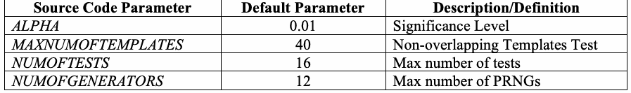
| ソースコードのパラメータ | 既定値 | 説明／定義 |
| ALPHA | 0.01 | 有意水準 |
| MAXNUMOFTEMPLATES | 40 | 非重複テンプレート検定 |
| NUMOFTESTS | 16 | 検定の最大数 |
| NUMOFGENERATORS | 12 | PRNGの最大数 |
The parameter ALPHA denotes the significance level that determines the region of acceptance and rejection. NIST recommends that ALPHA be in the range [0.001, 0.01].
パラメータALPHAは、受容域と棄却域を定める有意水準を表す。NISTは、ALPHAを[0.001, 0.01]の範囲にすることを推奨している。
未レビュー訳The parameter MAXNUMOFTEMPLATES indicates the maximum number of non-periodic templates that may be executed by the Nonoverlapping Template Matchings test. For templates of size m = 9, up to 148 possible non-periodic templates may be applied.
パラメータMAXNUMOFTEMPLATESは、Nonoverlapping Template Matchings Testで実行できる非周期テンプレートの最大数を表す。サイズm = 9のテンプレートでは、最大148個の非周期テンプレートを適用できる。
未レビュー訳The parameters NUMOFTESTS and NUMOFGENERATORS correspond to the maximum number of tests that may be defined in the test suite, and the maximum number of generators specified in the test suite, respectively.
パラメータNUMOFTESTSとNUMOFGENERATORSは、それぞれ検定スイートで定義できる検定の最大数と、検定スイートに指定できる生成器の最大数を表す。
未レビュー訳5.5.3 Mathematical Software
5.5.3 数学ソフトウェア
未レビュー訳Special functions required by the test suite are the incomplete gamma function and the complementary error function. The cumulative distribution function, also known as the standard normal function, is also required, but it can be expressed in terms of the error function.
検定スイートが必要とする特殊関数は、不完全ガンマ関数と相補誤差関数である。標準正規関数としても知られる累積分布関数も必要だが、誤差関数を用いて表現できる。
未レビュー訳One of the initial concerns regarding the development of the reference implementation was the dependencies that were required in order to gain reliable mathematical software for the special functions required in the statistical tests. To resolve this matter, the test suite makes use of the following libraries:
参照実装の開発初期に懸念されたことの一つは、統計検定で必要な特殊関数について、信頼できる数学ソフトウェアを得るために必要となる依存関係であった。この問題に対処するため、検定スイートは次のライブラリを使用する：
未レビュー訳The Fast Fourier Transform routine was obtained at http://www.netlib.org/fftpack/fft.c. The normal function utilized in this code was expressed in terms of the error function.
高速フーリエ変換ルーチンはhttp://www.netlib.org/fftpack/fft.cから取得した。このコードで用いる正規関数は、誤差関数を用いて表現されている。
未レビュー訳Standard Normal (Cumulative Distribution) Function
標準正規（累積分布）関数
\nThe complementary error function (erfc) utilized in the package is the ANSI C function contained in the math.h header file and its corresponding mathematical library. This library should be included during compilation.
パッケージで使用する相補誤差関数（erfc）は、math.hヘッダーファイルと対応する数学ライブラリに含まれるANSI C関数である。このライブラリはコンパイル時に組み込むべきである。
未レビュー訳Complementary Error Function
相補誤差関数
The incomplete gamma function is based on an approximation formula whose origin is described in the Handbook of Applied Mathematical Functions [1] and in the Numerical Recipes in C book [6]. Depending on the values of its parameters a and x, the incomplete gamma function may be approximated using either a continued fraction development or a series development.
不完全ガンマ関数は近似式に基づいており、その由来は『Handbook of Applied Mathematical Functions』[1]および書籍『Numerical Recipes in C』[6]に記載されている。パラメータaおよびxの値に応じて、不完全ガンマ関数は連分数展開または級数展開のいずれかを用いて近似できる。
未レビュー訳Gamma Function
ガンマ関数
未レビュー訳Incomplete Gamma Function
不完全ガンマ関数
未レビュー訳where \(P(a,0)=0,\ P(a,\infty)=1\).
ここで、\(P(a,0)=0,\ P(a,\infty)=1\)である。
Incomplete Gamma Function
不完全ガンマ関数
未レビュー訳where \(Q(a,0)=1,\ Q(a,\infty)=0\).
ここで、\(Q(a,0)=1,\ Q(a,\infty)=0\)である。
NIST has chosen to use the Cephes C language special functions math library in the test software. Cerphes may be found at http://www.moshier.net/ - Cephes or on the GAMS server at http://gams.nist.gov/serve.cgi/Package/CEPHES/. The specific functions that are utilized are igamc (for the complementary incomplete gamma function) and lgam (for the logarithmic gamma function).
NISTは、検定ソフトウェアでCephes C言語特殊関数数学ライブラリを使用することにした。Cerphesはhttp://www.moshier.net/ - CephesまたはGAMSサーバー（http://gams.nist.gov/serve.cgi/Package/CEPHES/）から入手できる。使用される関数は、相補不完全ガンマ関数用のigamcと、対数ガンマ関数用のlgamである。
未レビュー訳5.6 Running the Test Code
5.6 検定コードの実行
未レビュー訳A sample NIST Statistical Test Suite monolog is described below. Note: In this section bold items indicate input.
NIST統計検定スイートの実行例を以下に示す。注：この節では、太字の項目が入力を示す。
未レビュー訳In order to invoke the NIST statistical test suite, type assess, followed by the desired bit stream length, n. For example, assess 100000. A series of menu prompts will be displayed in order to select the data to be analyzed and the statistical tests to be applied. The first screen appears as follows:
NIST統計検定スイートを起動するには、assessに続けて、希望するビットストリーム長nを入力する。例えば、assess 100000と入力する。解析するデータと適用する統計検定を選択するため、一連のメニューが表示される。最初の画面を以下に示す。
未レビュー訳GENERATOR OPTIONS
生成器の選択肢
未レビュー訳[00] Input File
[00] 入力ファイル
未レビュー訳[01] Linear Congruential
[01] 線形合同法
未レビュー訳[02] Quadratic Congruential I
[02] 二次合同法 I
未レビュー訳[03] Quadratic Congruential II
[03] 二次合同法 II
未レビュー訳[04] Cubic Congruential
[04] 三次合同法
未レビュー訳[05] XOR
[05] XOR
未レビュー訳[06] Modular Exponentiation
[06] モジュラ指数法
未レビュー訳[07] Blum-Blum-Shub
[07] Blum-Blum-Shub
未レビュー訳[08] Micali-Schnorr
[08] Micali-Schnorr
未レビュー訳[09] G Using SHA-1
[09] G SHA-1を使用
未レビュー訳OPTION ----> 0 User Prescribed Input File: data/data.pi
選択 ----> 0 指定入力ファイル：data/data.pi
未レビュー訳Once the user has prescribed a particular data set or PRNG, the statistical tests to be applied must be selected. The following screen is displayed:
ユーザーが特定のデータセットまたはPRNGを指定した後、適用する統計検定を選択する必要がある。次の画面が表示される。
未レビュー訳STATISTICAL TESTS
統計検定
未レビュー訳[01] Frequency
[01] 頻度検定
未レビュー訳[02] Block Frequency
[02] ブロック内頻度検定
未レビュー訳[03] Cumulative Sums
[03] 累積和検定
未レビュー訳[04] Runs
[04] ラン検定
未レビュー訳[05] Longest Runs of Ones
[05] 一の最長ラン検定
未レビュー訳[06] Rank
[06] 行列ランク検定
未レビュー訳[07] Spectral - Discrete Fourier Transform [08] Nonperiodic Template Matchings [09] Overlapping Template Matchings [10] Universal Statistical [11] Approximate Entropy
[07] スペクトル検定－離散フーリエ変換 [08] 非周期テンプレート照合 [09] 重複テンプレート照合 [10] 万能統計検定 [11] 近似エントロピー検定
未レビュー訳[12] Random Excursions
[12] ランダム逸脱検定
未レビュー訳[13] Random Excursions Variant
[13] ランダム逸脱変種検定
未レビュー訳[14] Serial
[14] 系列検定
未レビュー訳[15] Linear Complexity
[15] 線形複雑度検定
未レビュー訳INSTRUCTIONS
手順
未レビュー訳Enter 0 if you DO NOT want to apply all of the statistical tests to each sequence and 1 if you DO. Enter Choice: 0
各系列にすべての統計検定を適用しない場合は0、適用する場合は1を入力する。選択：0
未レビュー訳In this case, 0 has been selected to indicate interest in applying a subset of the available statistical tests. The following screen is then displayed.
この例では、利用可能な統計検定の一部を適用する意図を示すため、0が選択された。続いて次の画面が表示される。
未レビュー訳INSTRUCTIONS Enter a 0 or 1 to indicate whether or not the numbered
手順：番号付きの統計検定を各系列に適用するかどうかを示すため、0または1を入力する。
未レビュー訳statistical test should be applied to each sequence. For example, 111111111111111 applies every test to each sequence. 123456789111111 012345 000000001000000
例えば、111111111111111は各系列にすべての検定を適用することを示す。123456789111111 012345 000000001000000
未レビュー訳As shown above, the only test applied was number 9, the Nonoverlapping templates test. A query for the desired sample size is then made.
上記のとおり、適用された検定は9番の非重複テンプレート検定だけである。続いて、希望するサンプルサイズの入力を求められる。
未レビュー訳How many bit streams should be generated? 10
生成するビットストリーム数は？ 10
未レビュー訳Ten sequences will be parsed using the data.pi file. Since a file was selected as the data specification mode, a subsequent query is made regarding the data representation. The user must specify whether the file consists of bits stored in ASCII format or hexadecimal strings stored in binary format.
data.piファイルを使用して十個の系列を解析する。データ指定モードとしてファイルが選択されたため、続いてデータ表現について問い合わせがある。利用者は、ファイルがASCII形式で格納されたビットから成るのか、またはバイナリ形式で格納された十六進文字列から成るのかを指定する必要がある。
未レビュー訳Input File Format: [0] ASCII – A sequence of ASCII 0’s and 1’s [1] Binary – Each byte in data file contains 8 bits of data Select input mode: 0
入力ファイル形式：[0] ASCII – ASCII形式の0と1の系列 [1] Binary – データファイルの各バイトに8ビットのデータが含まれる 入力モードを選択：0
未レビュー訳Since the data consists of aSleolencgtsienqpuuetnmcoedoef:z0eroes and ones, 0 was chosen. Given all necessary input parameters the test suite proceeds to analyze the sequences.
データがゼロと一の長い系列で構成されているため、0が選択された。必要な入力パラメータがすべて与えられると、検定スイートは系列の解析を開始する。
未レビュー訳Statistical Testing In Progress.........
統計検定を実行中.........
未レビュー訳Once the testing process is complete, the empirical results can be found in the experiments/ subdirectory.
検定処理が完了すると、実証結果はexperiments/サブディレクトリに格納されている。
未レビュー訳Statistical Testing Complete!!!!!!!!!!!!
統計検定が完了しました!!!!!!!!!!!!
未レビュー訳Upon completion, an in-depth analysis is performed to simplify the analysis of empirical results. Two types of analyses are conducted. One type examines the proportion of sequences that pass a statistical test. The other type examines the distribution of the P-values for each statistical test. More details are supplied in the following section.
完了後、実証結果の分析を容易にするため、詳細な分析が行われる。分析には二種類ある。一つは統計検定に合格した系列の割合を調べ、もう一つは各統計検定のP値の分布を調べる。詳細は次節に記載する。
未レビュー訳5.7 Interpretation of Results
5.7 結果の解釈
未レビュー訳An analytical routine has been included to facilitate interpretation of the results. A file finalAnalysisReport is generated when statistical testing is complete. The report contains a summary of empirical results as described in Section 4.2. The results are represented via a table with \(p\) rows and \(q\) columns. The number of rows, \(p ,\) corresponds to the number of statistical tests applied. The number of columns, \(q\) = 13, are distributed as follows: columns 1-10 correspond to the frequency of P-values10, column 11 is the P-value that arises via the application of a chi-square test11, column 12 is the proportion of binary sequences that passed, and the 13th column is the corresponding statistical test. An example is shown in Figure 5-1.
結果の解釈を容易にするために、分析ルーチンが含まれている。統計的検定が完了すると、ファイル finalAnalysisReport が生成される。このレポートには、セクション4.2で説明されている実証結果の要約が含まれている。結果は、\(p\)行および\(q\)列の表によって表される。行数\(p ,\)は、適用された統計的検定の数に対応する。列数\(q\) = 13 は、次のように配分される：第1〜10列はP値の度数10に対応し、第11列はカイ二乗検定の適用により生じるP値11、第12列は合格したバイナリ系列の割合、そして第13番目の列は対応する統計的検定である。一例を図5-1に示す。
未レビュー訳
Appendix A—Source Code
付録A—ソースコード
未レビュー訳A.1
A.1
未レビュー訳Hierarchical Directory Structure
階層ディレクトリ構造
未レビュー訳sts/
sts/
未レビュー訳assess
assess
未レビュー訳The NIST Statistical Test Suite executable file is called assess. This file will be generated upon execution of the included makefile.
NIST統計検定スイートの実行ファイル名はassessである。このファイルは、付属のmakefileを実行すると生成される。
未レビュー訳makefile The NIST Statistical Test Suite makefile. This file is invoked in order to build the entire test suite and produce the executable file assess.
makefile NIST統計検定スイートのmakefile。このファイルを実行すると、検定スイート全体がビルドされ、実行ファイルassessが生成される。
未レビュー訳data/ This subdirectory contains sample data files to be analyzed. These include the binary expansions to well known constants such as \(e , π ,\) \(\sqrt{2}\) , and \(\sqrt{3}\) .
data/ このサブディレクトリには、分析対象となるサンプルデータファイルが含まれている。これらには、\(e , π ,\)\(\sqrt{2}\)、および\(\sqrt{3}\)などのよく知られた定数のバイナリ展開が含まれる。
未レビュー訳experiments/ This subdirectory contains the empirical result subdirectories for each RNG.
experiments/ このサブディレクトリには、各RNGの実証結果を格納するサブディレクトリが含まれる。
未レビュー訳AlgorithmTesting/
AlgorithmTesting/
未レビュー訳BBS/
BBS/
未レビュー訳CCG/
CCG/
未レビュー訳G-SHA-1/
G-SHA-1/
未レビュー訳LCG/
LCG/
未レビュー訳MODEXP/
MODEXP/
未レビュー訳MS/
MS/
未レビュー訳QCG1/
QCG1/
未レビュー訳QCG2/
QCG2/
未レビュー訳XOR/
XOR/
未レビュー訳For each subdirectory there is a set of nested directories, that is,
各サブディレクトリには、次に示すような入れ子のディレクトリ群がある。
未レビュー訳ApproximateEntropy/
ApproximateEntropy/
未レビュー訳BlockFrequency/
BlockFrequency/
未レビュー訳CumulativeSums/
CumulativeSums/
未レビュー訳FFT/
FFT/
未レビュー訳Frequency/
Frequency/
未レビュー訳LinearComplexity/
LinearComplexity/
未レビュー訳LongestRun/
LongestRun/
未レビュー訳NonOverlappingTemplates/
NonOverlappingTemplates/
未レビュー訳OverlappingTemplates/
OverlappingTemplates/
未レビュー訳RandomExcursions/
RandomExcursions/
未レビュー訳RandomExcursionsVariant/
RandomExcursionsVariant/
未レビュー訳Rank/
Rank/
未レビュー訳Runs/
Runs/
未レビュー訳Serial/
Serial/
未レビュー訳Universal/
Universal/
未レビュー訳For each nested directory there are two files created upon execution of an individual statistical test. The results file contains a P-value list for each binary sequence, and the stats file contains a list of statistical information for each binary sequence.
個々の統計検定を実行すると、各入れ子ディレクトリに二つのファイルが作成される。resultsファイルには各二進系列のP値リストが含まれ、statsファイルには各二進系列に関する統計情報のリストが含まれる。
未レビュー訳include/ This subdirectory contains all of the header files that prescribe any global
include/ このサブディレクトリには、参照実装で使用するすべてのグローバル
未レビュー訳variables, constants, and data structures utilized in the reference implementation. In addition, the subdirectory contains all function declarations and prototypes.
変数、定数、およびデータ構造を定義するヘッダーファイルが含まれる。さらに、このサブディレクトリには、すべての関数宣言とプロトタイプが含まれる。
未レビュー訳cephes.h
cephes.h
未レビュー訳config.h
config.h
未レビュー訳decls.h
decls.h
未レビュー訳defs.h
defs.h
未レビュー訳externs.h
externs.h
未レビュー訳generators.h
generators.h
未レビュー訳genutils.h
genutils.h
未レビュー訳matrix.h
matrix.h
未レビュー訳stat_fncs.h
stat_fncs.h
未レビュー訳utilities.h
utilities.h
未レビュー訳obj/
obj/
未レビュー訳This subdirectory contains the object files corresponding to the source code files. These files will be generated upon execution of the included makefile. src/
このサブディレクトリには、ソースコードファイルに対応するオブジェクトファイルが含まれる。これらのファイルは、付属のmakefileを実行すると生成される。src/
未レビュー訳This subdirectory contains the source codes for the statistical tests.
このサブディレクトリには、統計検定のソースコードが含まれる。
未レビュー訳approximateEntropy.c : Approximate Entropy Test assess.c
approximateEntropy.c：近似エントロピー検定 assess.c
未レビュー訳: The driver program for this package
：このパッケージのドライバープログラム
未レビュー訳blockFrequency.c : Block Frequency Test cephes.c
blockFrequency.c：ブロック頻度検定 cephes.c
未レビュー訳: Defines the incomplete gamma function
：不完全ガンマ関数を定義する。
未レビュー訳cusum.c
cusum.c
未レビュー訳: Cumulative Sums Test
：累積和検定
未レビュー訳dfft.c
dfft.c
未レビュー訳: The discrete fourier transform routine
：離散フーリエ変換ルーチン
未レビュー訳discreteFourierTransform.c
discreteFourierTransform.c
未レビュー訳: Spectral Test
：スペクトル検定
未レビュー訳frequency.c
frequency.c
未レビュー訳: Frequency Test
：頻度検定
未レビュー訳generators.c
generators.c
未レビュー訳: Source code for the built-in generators
：組み込み生成器のソースコード
未レビュー訳genutils.c
genutils.c
未レビュー訳: Support routines for the generators
：生成器のサポートルーチン
未レビュー訳linearComplexity.c : Linear Complexity Test longestRunOfOnes.c : Longest Run Of Ones Test matrix.c
linearComplexity.c：線形複雑度検定 longestRunOfOnes.c：一の最長ラン検定 matrix.c
未レビュー訳: Source code for the determination of rank for binary matrices
：二進行列のランク判定用ソースコード
未レビュー訳nonOverlappingTemplateMatchings.c
nonOverlappingTemplateMatchings.c
未レビュー訳: Nonoverlapping Template Matchings Test
：非重複テンプレート照合検定
未レビュー訳OverlappingTemplateMatchings.c
OverlappingTemplateMatchings.c
未レビュー訳: Overlapping Template Matchings Test
：重複テンプレート照合検定
未レビュー訳randomExcursions.c : Random Excursions Test randomExcursionsVariant.c
randomExcursions.c：ランダム逸脱検定 randomExcursionsVariant.c
未レビュー訳: Random Excursions Variant Test
：ランダム逸脱変種検定
未レビュー訳rank.c
rank.c
未レビュー訳: Rank Test
：ランク検定
未レビュー訳runs.c
runs.c
未レビュー訳: Runs Test
：ラン検定
未レビュー訳serial.c
serial.c
未レビュー訳: Serial Test
：系列検定
未レビュー訳universal.c
universal.c
未レビュー訳: Universal Test
：万能検定
未レビュー訳utilities.c
utilities.c
未レビュー訳: Utility functions…
：ユーティリティ関数…
未レビュー訳templates/ This subdirectory contains the templates (or patterns) that are evaluated in the
templates/ このサブディレクトリには、テンプレート（パターン）が格納されており、これらは
未レビュー訳NonOverlapping Template Matching Test. The corresponding file is opened for the prescribed template block length m. Currently, the only options for which nonperiodic templates have been stored are those that lie in [2,21]. In the event that m > 21, the user must pre-compute the non-periodic templates.
非重複テンプレート照合検定で評価される。対応するファイルは、指定されたテンプレートブロック長mに対して開かれる。現在、保存済みの非周期テンプレートは[2,21]の範囲にあるものだけである。m > 21の場合、ユーザーは非周期テンプレートを事前に計算する必要がある。
未レビュー訳template2 template3 template4 template5 template6 template7 template8 template9 template10 template11 template12 template13 template14 template15 template16 template17 template18 template19 template20 template21
template2 template3 template4 template5 template6 template7 template8 template9 template10 template11 template12 template13 template14 template15 template16 template17 template18 template19 template20 template21
未レビュー訳A.2
A.2
未レビュー訳Configuration Information
設定情報
未レビュー訳The following parameters are available in the file defs.h.
以下のパラメータはdefs.hファイルで使用できる。
未レビュー訳1.#define ALPHA 0.01
1.#define ALPHA 0.01
未レビュー訳2.#define MAXNUMOFTEMPLATES 148
2.#define MAXNUMOFTEMPLATES 148
未レビュー訳3.#define NUMOFTESTS 15
3.#define NUMOFTESTS 15
未レビュー訳4.#define NUMOFGENERATORS 10
4.#define NUMOFGENERATORS 10
未レビュー訳5.#define MAXFILESPERMITTEDFORPARTITION 148
5.#define MAXFILESPERMITTEDFORPARTITION 148
未レビュー訳Lines 1-5 correspond to test suite parameters that have been preset. Under various conditions, the user may decide to modify them.
1～5行目は、あらかじめ設定されている検定スイートのパラメータに対応する。状況に応じて、ユーザーはこれらを変更できる。
未レビュー訳Line 1 refers to the significance level. It is recommended that the user select the level in the range [0.001,0.01].
1行目は有意水準を示す。ユーザーは[0.001,0.01]の範囲から水準を選ぶことが推奨される。
未レビュー訳Line 2 refers to the maximum number of templates that may be used in the Nonoverlapping Template Matching test. The value 148 corresponds to the number of templates of length 9.
2行目は、非重複テンプレート照合検定で使用できるテンプレートの最大数を示す。値148は、長さ9のテンプレート数に対応する。
未レビュー訳Line 3 refers to the maximum number of tests that is supported in the test suite. If the user adds additional tests, this parameter should be incremented.
3行目は、検定スイートでサポートされる検定の最大数を示す。ユーザーが検定を追加する場合、このパラメータを増やす必要がある。
未レビュー訳Line 4 refers to the maximum number of generators that is supported in the package. If the user adds additional generators, this parameter should be incremented.
4行目は、パッケージでサポートされる生成器の最大数を示す。ユーザーが生成器を追加する場合、このパラメータを増やす必要がある。
未レビュー訳Line 5 refers to the maximum number of files that may be decomposed by the partitionResultFile routine. This routine is applied only for specific tests where more than one P-value is produced per sequence. This routine decomposes the corresponding results file into separate files, data001, data002, data003, …
5行目は、partitionResultFileルーチンで分割できるファイルの最大数を示す。このルーチンは、系列ごとに複数のP値が生成される特定の検定だけに適用される。このルーチンは、該当するresultsファイルをdata001、data002、data003、…のような個別のファイルに分割する。
未レビュー訳Appendix B—Empirical Results for Sample Data
付録B—サンプルデータの実証結果
未レビュー訳The user is urged to validate that the statistical test suite is operating properly. For this reason, five sample files have been provided. These five files are: (1) data.pi, (2) data.e, (3) data.sha1, (4) data.sqrt2, and (5) data.sqrt3. For each data file, all of the statistical tests were applied, and the results recorded in the following tables. The Block Frequency, Non-overlapping Template Matching, Overlapping Template Matching, Approximate Entropy, Serial, and Linear Complexity tests require user prescribed input parameters. The exact values used in these examples have been included in parenthesis beside the name of the statistical test. In the case of the random excursions and random excursions variant tests, only one of the possible 8 and 18 P-values, respectively, has been reported. Each sample is 1,000,000 bits in length. Additionally, the p-values reported in the tables can be found in the results.txt files for each of the individual test – not in the finalAnalysisReport.txt file.
ユーザーには、統計検定スイートが正しく動作していることを検証するよう強く推奨する。そのため、五つのサンプルファイルが用意されている。具体的には、(1) data.pi、(2) data.e、(3) data.sha1、(4) data.sqrt2、(5) data.sqrt3である。各データファイルにすべての統計検定を適用し、その結果を以下の表に記録した。ブロック頻度検定、非重複テンプレート照合検定、重複テンプレート照合検定、近似エントロピー検定、系列検定、および線形複雑度検定には、ユーザーが指定する入力パラメータが必要である。各例で使用した正確な値は、統計検定名の横の括弧内に記載されている。ランダム逸脱検定とランダム逸脱変種検定では、可能な8個および18個のP値のうち、それぞれ一つだけを報告している。各サンプルの長さは1,000,000ビットである。さらに、表に示すP値は、個々の検定のresults.txtファイルに記載されており、finalAnalysisReport.txtファイルには記載されていない。
未レビュー訳Example #1: The binary expansion of \(\pi\)
| Statistical Test | P-value |
| Frequency | 0.578211 |
| Block Frequency \((m=128)\) | 0.380615 |
| Cusum-Forward | 0.628308 |
| Cusum-Reverse | 0.663369 |
| Runs | 0.419268 |
| Long Runs of Ones | 0.024390 |
| Rank | 0.083553 |
| Spectral DFT | 0.010186 |
| Non-overlapping Templates \((m=9,B=000000001)\) | 0.165757 |
| Overlapping Templates \((m=9)\) | 0.296897 |
| Universal | 0.669012 |
| Approximate Entropy \((m=10)\) | 0.361595 |
| Random Excursions \((x=+1)\) | 0.844143 |
| Random Excursions Variant \((x=-1)\) | 0.760966 |
| Linear Complexity \((M=500)\) | 0.255475 |
| Serial \((m=16,\nabla\Psi_m^2)\) | 0.143005 |
例1：\(\pi\)の二進展開
| 統計的検定 | P値 |
| 単一ビット頻度検定（Frequency） | 0.578211 |
| ブロック内頻度検定（Block Frequency） \((m=128)\) | 0.380615 |
| 累積和検定（正方向）（Cusum-Forward） | 0.628308 |
| 累積和検定（逆方向）（Cusum-Reverse） | 0.663369 |
| ラン検定（Runs） | 0.419268 |
| 1の長連検定（Long Runs of Ones） | 0.024390 |
| 行列階数検定（Rank） | 0.083553 |
| 離散フーリエ変換（スペクトル）検定（Spectral DFT） | 0.010186 |
| 非重複テンプレートマッチング検定（Non-overlapping Templates） \((m=9,B=000000001)\) | 0.165757 |
| 重複テンプレートマッチング検定（Overlapping Templates） \((m=9)\) | 0.296897 |
| マウラーのユニバーサル検定（Universal） | 0.669012 |
| 近似エントロピー検定（Approximate Entropy） \((m=10)\) | 0.361595 |
| ランダムエクスカーション検定（Random Excursions） \((x=+1)\) | 0.844143 |
| ランダムエクスカーション・バリアント検定（Random Excursions Variant） \((x=-1)\) | 0.760966 |
| 線形複雑度検定（Linear Complexity） \((M=500)\) | 0.255475 |
| 直列検定（Serial） \((m=16,\nabla\Psi_m^2)\) | 0.143005 |
Example #2: The binary expansion of \(e\)
| Statistical Test | P-value |
| Frequency | 0.953749 |
| Block Frequency \((m=128)\) | 0.211072 |
| Cusum-Forward | 0.669887 |
| Cusum-Reverse | 0.724266 |
| Runs | 0.561917 |
| Long Runs of Ones | 0.718945 |
| Rank | 0.306156 |
| Spectral DFT | 0.847187 |
| NonOverlapping Templates \((m=9,B=000000001)\) | 0.078790 |
| Overlapping Templates \((m=9)\) | 0.110434 |
| Universal | 0.282568 |
| Approximate Entropy \((m=10)\) | 0.700073 |
| Random Excursions \((x=+1)\) | 0.786868 |
| Random Excursions Variant \((x=-1)\) | 0.826009 |
| Linear Complexity \((M=500)\) | 0.826335 |
| Serial \((m=16,\nabla\Psi_m^2)\) | 0.766182 |
例2：\(e\)の二進展開
| 統計的検定 | P値 |
| 単一ビット頻度検定（Frequency） | 0.953749 |
| ブロック内頻度検定（Block Frequency） \((m=128)\) | 0.211072 |
| 累積和検定（正方向）（Cusum-Forward） | 0.669887 |
| 累積和検定（逆方向）（Cusum-Reverse） | 0.724266 |
| ラン検定（Runs） | 0.561917 |
| 1の長連検定（Long Runs of Ones） | 0.718945 |
| 行列階数検定（Rank） | 0.306156 |
| 離散フーリエ変換（スペクトル）検定（Spectral DFT） | 0.847187 |
| 非重複テンプレートマッチング検定（NonOverlapping Templates） \((m=9,B=000000001)\) | 0.078790 |
| 重複テンプレートマッチング検定（Overlapping Templates） \((m=9)\) | 0.110434 |
| マウラーのユニバーサル検定（Universal） | 0.282568 |
| 近似エントロピー検定（Approximate Entropy） \((m=10)\) | 0.700073 |
| ランダムエクスカーション検定（Random Excursions） \((x=+1)\) | 0.786868 |
| ランダムエクスカーション・バリアント検定（Random Excursions Variant） \((x=-1)\) | 0.826009 |
| 線形複雑度検定（Linear Complexity） \((M=500)\) | 0.826335 |
| 直列検定（Serial） \((m=16,\nabla\Psi_m^2)\) | 0.766182 |
Example #3: a G-SHA-1 binary sequence
| Statistical Test | P-value |
| Frequency | 0.604458 |
| Block Frequency \((m=128)\) | 0.091517 |
| Cusum-Forward | 0.451231 |
| Cusum-Reverse | 0.550134 |
| Runs | 0.309757 |
| Long Runs of Ones | 0.657812 |
| Rank | 0.577829 |
| Spectral DFT | 0.163062 |
| NonOverlapping Templates \((m=9,B=000000001)\) | 0.496601 |
| Overlapping Templates \((m=9)\) | 0.339426 |
| Universal | 0.411079 |
| Approximate Entropy \((m=10)\) | 0.982885 |
| Random Excursions \((x=+1)\) | 0.000000 |
| Random Excursions Variant \((x=-1)\) | 0.000000 |
| Linear Complexity \((M=500)\) | 0.309412 |
| Serial \((m=16,\nabla\Psi_m^2)\) | 0.760793 |
例3：G-SHA-1の二進系列
| 統計的検定 | P値 |
| 単一ビット頻度検定（Frequency） | 0.604458 |
| ブロック内頻度検定（Block Frequency） \((m=128)\) | 0.091517 |
| 累積和検定（正方向）（Cusum-Forward） | 0.451231 |
| 累積和検定（逆方向）（Cusum-Reverse） | 0.550134 |
| ラン検定（Runs） | 0.309757 |
| 1の長連検定（Long Runs of Ones） | 0.657812 |
| 行列階数検定（Rank） | 0.577829 |
| 離散フーリエ変換（スペクトル）検定（Spectral DFT） | 0.163062 |
| 非重複テンプレートマッチング検定（NonOverlapping Templates） \((m=9,B=000000001)\) | 0.496601 |
| 重複テンプレートマッチング検定（Overlapping Templates） \((m=9)\) | 0.339426 |
| マウラーのユニバーサル検定（Universal） | 0.411079 |
| 近似エントロピー検定（Approximate Entropy） \((m=10)\) | 0.982885 |
| ランダムエクスカーション検定（Random Excursions） \((x=+1)\) | 0.000000 |
| ランダムエクスカーション・バリアント検定（Random Excursions Variant） \((x=-1)\) | 0.000000 |
| 線形複雑度検定（Linear Complexity） \((M=500)\) | 0.309412 |
| 直列検定（Serial） \((m=16,\nabla\Psi_m^2)\) | 0.760793 |
Example #4: The binary expansion of \(\sqrt2\)
| Statistical Test | P-value |
| Frequency | 0.811881 |
| Block Frequency \((m=128)\) | 0.833222 |
| Cusum-Forward | 0.879009 |
| Cusum-Reverse | 0.957206 |
| Runs | 0.313427 |
| Long Runs of Ones | 0.012117 |
| Rank | 0.823810 |
| Spectral DFT | 0.581909 |
| NonOverlapping Templates \((m=9,B=000000001)\) | 0.569461 |
| Overlapping Templates \((m=9)\) | 0.791982 |
| Universal | 0.130805 |
| Approximate Entropy \((m=10)\) | 0.884740 |
| Random Excursions \((x=+1)\) | 0.216235 |
| Random Excursions Variant \((x=-1)\) | 0.566118 |
| Linear Complexity \((M=500)\) | 0.317127 |
| Serial \((m=16,\nabla\Psi_m^2)\) | 0.861925 |
例4：\(\sqrt2\)の二進展開
| 統計的検定 | P値 |
| 単一ビット頻度検定（Frequency） | 0.811881 |
| ブロック内頻度検定（Block Frequency） \((m=128)\) | 0.833222 |
| 累積和検定（正方向）（Cusum-Forward） | 0.879009 |
| 累積和検定（逆方向）（Cusum-Reverse） | 0.957206 |
| ラン検定（Runs） | 0.313427 |
| 1の長連検定（Long Runs of Ones） | 0.012117 |
| 行列階数検定（Rank） | 0.823810 |
| 離散フーリエ変換（スペクトル）検定（Spectral DFT） | 0.581909 |
| 非重複テンプレートマッチング検定（NonOverlapping Templates） \((m=9,B=000000001)\) | 0.569461 |
| 重複テンプレートマッチング検定（Overlapping Templates） \((m=9)\) | 0.791982 |
| マウラーのユニバーサル検定（Universal） | 0.130805 |
| 近似エントロピー検定（Approximate Entropy） \((m=10)\) | 0.884740 |
| ランダムエクスカーション検定（Random Excursions） \((x=+1)\) | 0.216235 |
| ランダムエクスカーション・バリアント検定（Random Excursions Variant） \((x=-1)\) | 0.566118 |
| 線形複雑度検定（Linear Complexity） \((M=500)\) | 0.317127 |
| 直列検定（Serial） \((m=16,\nabla\Psi_m^2)\) | 0.861925 |
Example #5: The binary expansion of \(\sqrt3\)
| Statistical Test | P-value |
| Frequency | 0.610051 |
| Block Frequency \((m=128)\) | 0.473961 |
| Cusum-Forward | 0.917121 |
| Cusum-Reverse | 0.689519 |
| Runs | 0.261123 |
| Long Runs of Ones | 0.446726 |
| Rank | 0.314498 |
| Spectral DFT | 0.776046 |
| NonOverlapping Templates \((m=9,B=000000001)\) | 0.532235 |
| Overlapping Templates \((m=9)\) | 0.082716 |
| Universal | 0.165981 |
| Approximate Entropy \((m=10)\) | 0.180481 |
| Random Excursions \((x=+1)\) | 0.783283 |
| Random Excursions Variant \((x=-1)\) | 0.155066 |
| Linear Complexity \((M=500)\) | 0.346469 |
| Serial \((m=16,\nabla\Psi_m^2)\) | 0.157500 |
例5：\(\sqrt3\)の二進展開
| 統計的検定 | P値 |
| 単一ビット頻度検定（Frequency） | 0.610051 |
| ブロック内頻度検定（Block Frequency） \((m=128)\) | 0.473961 |
| 累積和検定（正方向）（Cusum-Forward） | 0.917121 |
| 累積和検定（逆方向）（Cusum-Reverse） | 0.689519 |
| ラン検定（Runs） | 0.261123 |
| 1の長連検定（Long Runs of Ones） | 0.446726 |
| 行列階数検定（Rank） | 0.314498 |
| 離散フーリエ変換（スペクトル）検定（Spectral DFT） | 0.776046 |
| 非重複テンプレートマッチング検定（NonOverlapping Templates） \((m=9,B=000000001)\) | 0.532235 |
| 重複テンプレートマッチング検定（Overlapping Templates） \((m=9)\) | 0.082716 |
| マウラーのユニバーサル検定（Universal） | 0.165981 |
| 近似エントロピー検定（Approximate Entropy） \((m=10)\) | 0.180481 |
| ランダムエクスカーション検定（Random Excursions） \((x=+1)\) | 0.783283 |
| ランダムエクスカーション・バリアント検定（Random Excursions Variant） \((x=-1)\) | 0.155066 |
| 線形複雑度検定（Linear Complexity） \((M=500)\) | 0.346469 |
| 直列検定（Serial） \((m=16,\nabla\Psi_m^2)\) | 0.157500 |
Appendix C—Extending the Test Suite
付録C—検定スイートの拡張
未レビュー訳C.1
C.1
未レビュー訳Incorporating Additional Statistical Tests
追加の統計検定の組み込み
未レビュー訳In order to add another statistical test to the test suite, the user should make the following modifications:
検定スイートに別の統計検定を追加するには、ユーザーは次の変更を行うべきである。
未レビュー訳1.[In the file include/defs.h]
1.[ファイル include/defs.h 内]
未レビュー訳Insert any test input parameters into the _testParameters structure. Increment the value of NUMOFTESTS by the number of tests to be added. Add a define for the new test, for example:
検定の入力パラメータを_testParameters構造体に追加する。追加する検定数だけNUMOFTESTSの値を増やす。例えば、新しい検定用のdefineを追加する：
未レビュー訳#define
#define
未レビュー訳TEST_MYNEWTEST
TEST_MYNEWTEST
未レビュー訳16
未レビュー訳2.[In the file include/decls.h]
2.[ファイル include/decls.h 内]
未レビュー訳Insert the new test name, e.g., “MyNewTest”, into the testNames array.
testNames配列に新しい検定名（例：“MyNewTest”）を追加する。
未レビュー訳3.[In the file include/stat_fncs.h]
3.[ファイル include/stat_fncs.h 内]
未レビュー訳Insert the statistical test function prototype declaration.
統計検定関数のプロトタイプ宣言を追加する。
未レビュー訳4.[In the file src/myNewTest.c]
4.[ファイル src/myNewTest.c 内]
未レビュー訳Define the statistical test function. Note: The programmer should embed fprintf statements using stats[TEST_MYNEWTEST], and results[TEST_MYNEWTEST] as the corresponding output channel for writing intermediate test statistic parameters and P-values, respectively.
統計検定関数を定義する。注：中間の検定統計量パラメータとP値を書き出す対応する出力先として、stats[TEST_MYNEWTEST]およびresults[TEST_MYNEWTEST]を指定したfprintf文をプログラマーが埋め込むべきである。
未レビュー訳5.[In the file src/utilities.c]
5.[ファイル src/utilities.c 内]
未レビュー訳(a) In the function, chooseTests, modify the printf’s to properly display the new test name. For example, change
(a) 関数chooseTests内で、新しい検定名が正しく表示されるようにprintf呼び出しを変更する。例えば、次の行を変更する：
未レビュー訳printf(" [15] Linear Complexity\n\n");
printf(" [15] Linear Complexity\n\n");
未レビュー訳を次のように変更する：
未レビュー訳printf(" [15] Linear Complexity
printf(" [15] Linear Complexity
未レビュー訳[16] MyNewTest\n\n");
[16] MyNewTest\n\n");
未レビュー訳and modify the following lines of code (as modified by the actual number of total tests):
さらに、次のコード行も（検定の総数に応じて変更したうえで）修正する：
未レビュー訳printf(" 1234567891111111\n"); printf("
printf(" 1234567891111111\n"); printf("
未レビュー訳0123456\n");
0123456\n");
未レビュー訳Note: For each PRNG defined in the experiments/ directory, a sub-directory myNewTest must be created.
注：experiments/ディレクトリに定義されている各PRNGについて、サブディレクトリmyNewTestを作成する必要がある。
未レビュー訳(c) If an input test parameter is required, in the function, fixParameters, insert the following lines of code (under the assumption that myNewTestParameter is an integer). For example, insert
(c) 検定の入力パラメータが必要な場合は、関数fixParameters内に次のコード行を挿入する（myNewTestParameterが整数であることを前提とする）。例えば、次を挿入する：
未レビュー訳if ( testVector[TEST_MYNEWTEST] == 1 ) {
if ( testVector[TEST_MYNEWTEST] == 1 ) {
未レビュー訳counter++; if ( counter == testid ) {
counter++; if ( counter == testid ) {
未レビュー訳printf(" Enter MyNewTest Parameter Value: "); scanf("%d", &tp.myNewTestParameter); printf(“\n”); continue;
printf(" Enter MyNewTest Parameter Value: "); scanf("%d", &tp.myNewTestParameter); printf(“\n”); continue;
未レビュー訳}
未レビュー訳}
未レビュー訳(d) Embed the test function call into the nist_test_suite function. For example:
(d) 検定関数呼び出しをnist_test_suite関数に組み込む。例えば：
未レビュー訳if ((testVector[0] == 1) || (testVector[TEST_MYNEWTEST] == 1)) myNewTest(tp.myNewTestInputParameters,tp.n);
if ((testVector[0] == 1) || (testVector[TEST_MYNEWTEST] == 1)) myNewTest(tp.myNewTestInputParameters,tp.n);
未レビュー訳C.2
C.2
未レビュー訳Incorporating Additional PRNGs
追加PRNGの組み込み
未レビュー訳In order to add a PRNG to the test suite, the user should make the following modifications:
PRNGを検定スイートに追加するには、ユーザーは次の変更を行うべきである。
未レビュー訳1.[In the file include/defs.h]
1.[ファイル include/defs.h 内]
未レビュー訳Increment the variable NUMOFGENERATORS by one.
NUMOFGENERATORS変数を一つ増やす。
未レビュー訳2.[In the file include/decls.h]
2.[ファイル include/decls.h 内]
未レビュー訳Insert the new PRNG name into the generatorDir array, For example,
generatorDir配列に新しいPRNG名を追加する。例えば、
未レビュー訳char generatorDir[20][20] = {"AlgorithmTesting",
char generatorDir[20][20] = {"AlgorithmTesting",
未レビュー訳…,"G-SHA1", "MYNEWPRNG"};
…,"G-SHA1", "MYNEWPRNG"};
未レビュー訳3.[In the file include/generators.h]
3.[ファイル include/generators.h 内]
未レビュー訳Insert the generator function prototype declaration. For example,
生成器関数のプロトタイプ宣言を追加する。例えば、
未レビュー訳void myNewPRNG();
void myNewPRNG();
未レビュー訳4.[In the file generators/generators.c]
4.[ファイル generators/generators.c 内]
未レビュー訳Define the generator function. The general scheme for each PRNG defined in the test suite is as follows:
生成器関数を定義する。検定スイートで定義される各PRNGの一般的な処理手順は次のとおりである。
未レビュー訳Allocate space for epsilon, the n-bit BitField array. for i = 1 to numOfBitStreams { Construct an n-bit sequence using myNewGenerator and store in epsilon. Invoke the nist_test_suite. } Deallocate the space given to epsilon.
epsilon（nビットのBitField配列）の領域を確保する。for i = 1 to numOfBitStreams { myNewGeneratorを使用してnビット系列を構築し、epsilonに格納する。nist_test_suiteを呼び出す。} epsilonに割り当てた領域を解放する。
未レビュー訳Note: A sub-directory called myNewPRNG/ must be created in the experiments/ directory. Under this new directory, a set of sub-directories must be created for each of the test suite statistical tests. The script createScript has been included to facilitate this operation.
注：experiments/ディレクトリに定義された各PRNGについて、サブディレクトリmyNewPRNG/を作成する必要がある。この新しいディレクトリ内には、検定スイートの各統計検定用のサブディレクトリ群も作成する必要がある。この処理を容易にするため、createScriptスクリプトが用意されている。
未レビュー訳5.[In the file src/utilities.c]
5.[ファイル src/utilities.c 内]
未レビュー訳(a) In the function, displayGeneratorOptions, inset the following line of code:
(a) displayGeneratorOptions関数内に、次のコード行を挿入する：
未レビュー訳printf(" [10] MyNewPRNG\n\n");
printf(" [10] MyNewPRNG\n\n");
未レビュー訳(b) In the function, generatorOptions, insert the following lines of code:
(b) generatorOptions関数内に、次のコード行を挿入する：
未レビュー訳case 10:
case 10:
未レビュー訳*streamFile = "myNewPRNG"; break;
*streamFile = "myNewPRNG"; break;
未レビュー訳(c) In the function, invokeTestSuite, insert the following lines of code:
(c) invokeTestSuite関数内に、次のコード行を挿入する：
未レビュー訳case 10:
case 10:
未レビュー訳myNewPRNG(); break;
myNewPRNG(); break;
未レビュー訳Appendix D—Description of Reference Pseudorandom Number Generators
付録D—参照用擬似乱数生成器の説明
未レビュー訳The NIST Statistical Test Suite supplies the user with nine pseudo-random number generators. A brief description of each pseudo-random number generator follows. The user supplied sequence length determines the number of iterations for each generator.
NIST統計検定スイートには、九つの擬似乱数生成器が用意されている。各擬似乱数生成器の概要を以下に示す。ユーザーが指定する系列長によって、各生成器の反復回数が決まる。
未レビュー訳D.1
D.1
未レビュー訳Linear Congruential Generator (LCG)
線形合同法生成器（LCG）
未レビュー訳The input parameter for the Fishman and Moore12 LCG13 is fixed in code but may be altered by the user.
FishmanおよびMoore12のLCG13の入力パラメータはコード内で固定されているが、ユーザーによって変更される場合がある。
未レビュー訳Input Parameter:
入力パラメータ：
未レビュー訳z = 23482349 0
z = 23482349 0
未レビュー訳Description:
説明：
未レビュー訳Given a seed \(z_0\), subsequent numbers are computed based on \(z_{i+1}=a*z_i\bmod(2^{31}-1)\), where \(a\) is a function of the current state. These numbers are then converted to uniform values in [0,1]. At each step, output ‘0’ if the number is \(\le0.5\), otherwise output ‘1’.
シード\(z_0\)が与えられると、以降の数値は\(z_{i+1}=a*z_i\bmod(2^{31}-1)\)に基づいて計算される。ここで、\(a\)は現在の状態の関数である。これらの数値は、その後[0,1]の一様値に変換される。各ステップにおいて、その数値が\(\le0.5\)である場合は「0」を出力し、そうでない場合は「1」を出力する。
未レビュー訳D.2
D.2
未レビュー訳Quadratic Congruential Generator I (QCG-I)
二次合同法生成器I（QCG-I）
未レビュー訳The input parameters to the QCG-I are fixed in code, but may modified by the user.
QCG-Iの入力パラメータはコード内で固定されているが、ユーザーが変更できる。
未レビュー訳Input Parameters:
入力パラメータ：
未レビュー訳p = 987b6a6bf2c56a97291c445409920032499f9ee7ad128301b5d0254aa1a9633fdbd378 d40149f1e23a13849f3d45992f5c4c6b7104099bc301f6005f9d8115e1
p = 987b6a6bf2c56a97291c445409920032499f9ee7ad128301b5d0254aa1a9633fdbd378 d40149f1e23a13849f3d45992f5c4c6b7104099bc301f6005f9d8115e1
未レビュー訳\(x_{0}=\) 3844506a9456c564b8b8538e0cc15aff46c95e69600f084f0657c2401b3c244734b62ea9bb95be4923b9b7e84eeaf1a224894ef0328d44bc3eb3e983644da3f5
\(x_{0}=\) 3844506a9456c564b8b8538e0cc15aff46c95e69600f084f0657c2401b3c244734b62ea9bb95be4923b9b7e84eeaf1a224894ef0328d44bc3eb3e983644da3f5
Description:
説明：
未レビュー訳Using a 512-bit prime \(p ,\) and a random 512-bit seed \(x_0\), construct subsequent elements (each 512-bit numbers) in the sequence via the rule:
512ビットの素数\(p ,\)およびランダムな512ビットのシード\(x_0\)を使用して、次の規則により数列の以降の要素（それぞれ512ビットの数値）を構成する。
D.3
D.3
未レビュー訳Quadratic Congruential Generator II (QCG-II)
二次合同法生成器II（QCG-II）
未レビュー訳The input parameter to the QCG-II is fixed in code, but may be modified by the user.
QCG-IIの入力パラメータはコード内で固定されているが、ユーザーが変更できる。
未レビュー訳Input Parameter:
入力パラメータ：
未レビュー訳\(x_{0}=\) 7844506a9456c564b8b8538e0cc15aff46c95e69600f084f0657c2401b3c244734b62ea9bb95be4923b9b7e84eeaf1a224894ef0328d44bc3eb3e983644da3f5
\(x_{0}=\) 7844506a9456c564b8b8538e0cc15aff46c95e69600f084f0657c2401b3c244734b62ea9bb95be4923b9b7e84eeaf1a224894ef0328d44bc3eb3e983644da3f5
Description:
説明：
未レビュー訳Using a 512-bit modulus, and a random 512-bit seed \(x_{0} ,\) construct subsequent elements (each 512-bit numbers) in the sequence via the rule:
512ビットのモジュラス、およびランダムな512ビットのシード\(x_{0} ,\)を使用して、次の規則により数列の以降の要素（それぞれ512ビットの数値）を構成する。
D.4
D.4
未レビュー訳Cubic Congruential Generator II (CCG)
三次合同法生成器II（CCG）
未レビュー訳The input parameter to the CCG is fixed in code, but may be modified by the user.
CCGの入力パラメータはコード内で固定されているが、ユーザーが変更できる。
未レビュー訳Input Parameter:
入力パラメータ：
未レビュー訳\(x_{0}=\) 7844506a9456c564b8b8538e0cc15aff46c95e69600f084f0657c2401b3c244734b62ea9bb95be4923b9b7e84eeaf1a224894ef0328d44bc3eb3e983644da3f5
\(x_{0}=\) 7844506a9456c564b8b8538e0cc15aff46c95e69600f084f0657c2401b3c244734b62ea9bb95be4923b9b7e84eeaf1a224894ef0328d44bc3eb3e983644da3f5
Description:
説明：
未レビュー訳Given a 512 bit seed \(x_{0} ,\) construct subsequent 512-bit strings via the rule:
512ビットのシード\(x_{0} ,\)が与えられたとき、次の規則によって後続の512ビット文字列を構成する：
D.5
D.5
未レビュー訳Exclusive OR Generator (XORG)
排他的論理和生成器（XORG）
未レビュー訳The input parameter to the XORG is a 127-bit seed that is fixed in code, but may be user modified.
XORGの入力パラメータは127ビットのシードであり、コード内に固定されているが、ユーザーが変更できる。
未レビュー訳Input Parameter:
入力パラメータ：
未レビュー訳\(x_{1} , x_{2} , \ldots , x_{127}=\) 0001011011011001000101111001001010011011101101000100000010101111111010100100001010110110000000000100110000101110011111111100111
\(x_{1} , x_{2} , \ldots , x_{127}=\) 0001011011011001000101111001001010011011101101000100000010101111111010100100001010110110000000000100110000101110011111111100111
Description:
説明：
未レビュー訳Choose a bit sequence, \(x_{1} , x_{2} , \ldots , x_{127}\) . Construct subsequent bits via the rule:
\(x_{i} = x_{i - 1} ⊕ x_{i - 127}\) , for \(i \ge 128 .\)
ビットシーケンス\(x_{1} , x_{2} , \ldots , x_{127}\)を選択する。次の規則によって後続のビットを構成する：
\(x_{i} = x_{i - 1} ⊕ x_{i - 127}\)（\(i \ge 128 .\)
について）未レビュー訳\(p=\) 987b6a6bf2c56a97291c445409920032499f9ee7ad128301b5d0254aa1a9633fdbd378d40149f1e23a13849f3d45992f5c4c6b7104099bc301f6005f9d8115e1
\(p=\) 987b6a6bf2c56a97291c445409920032499f9ee7ad128301b5d0254aa1a9633fdbd378d40149f1e23a13849f3d45992f5c4c6b7104099bc301f6005f9d8115e1
\(\mathit{seed}\) = 7AB36982CE1ADF832019CDFEB2393CABDF0214EC
\(\mathit{seed}\) = 7AB36982CE1ADF832019CDFEB2393CABDF0214EC
\(g\) = 3844506a9456c564b8b8538e0cc15aff46c95e69600f084f0657c2401b3c244734b62ea9bb95be4923b9b7e84eeaf1a224894ef0328d44bc3eb3e983644da3f5
\(g\) = 3844506a9456c564b8b8538e0cc15aff46c95e69600f084f0657c2401b3c244734b62ea9bb95be4923b9b7e84eeaf1a224894ef0328d44bc3eb3e983644da3f5
Description:
説明：
未レビュー訳A sequence {\(x_{i}\)} of 512-bit pseudo-random numbers can be generated as follows: Choose a 512-bit prime and a base \(g ,\) as in the Digital Signature Standard (DSS). Choose an arbitrary 160-bit seed \(y .\) Let \(x_1=g^{\mathrm{seed}}\bmod p\) and \(x_{i+1}=g^{y_i}\bmod p,\) for \(i \ge 1\) where \(y_{i}\) is the lowest-order 160 bits of \(x_{i} .\) Splicing together the {\(x_{i}\)} will generate an \(n -\)bit sequence.
512ビットの擬似乱数列{\(x_{i}\)}は、次のように生成できる：デジタル署名規格（DSS）と同様に、512ビットの素数と基底\(g ,\)を選択する。任意の160ビットシード\(y .\)を選択する。\(x_1=g^{\mathrm{seed}}\bmod p\)とし、\(i \ge 1\)に対して\(x_{i+1}=g^{y_i}\bmod p,\)とする。ここで、\(y_{i}\)は\(x_{i} .\)の最下位160ビットである。{\(x_{i}\)}を結合することで、\(n -\)ビットのシーケンスが生成される。
未レビュー訳D.7
D.7
未レビュー訳Secure Hash Generator (G-SHA1)
セキュアハッシュ生成器（G-SHA1）
未レビュー訳The input parameters to the G-SHA1 are fixed in code, but may be user modified. The length of the key, keylen should be chosen in the interval [160, 512].
G-SHA1の入力パラメータはコード内に固定されているが、ユーザーが変更できる。鍵の長さkeylenは[160, 512]の範囲から選ぶことが望ましい。
未レビュー訳Input Parameters:
入力パラメータ：
未レビュー訳seedlen = 160 Xseed = 237c5f791c2cfe47bfb16d2d54a0d60665b20904
seedlen = 160 Xseed = 237c5f791c2cfe47bfb16d2d54a0d60665b20904
未レビュー訳keylen = 160 Xkey = ec822a619d6ed5d9492218a7a4c5b15d57c61601
keylen = 160 Xkey = ec822a619d6ed5d9492218a7a4c5b15d57c61601
未レビュー訳Description:
説明：
未レビュー訳For a detailed description of G-SHA1 (the FIPS 186 one-way function using SHA-1), visit http://www.cacr.math.uwaterloo.ca/hac/about/chap5.pdf, especially p. 175.
G-SHA1（SHA-1を使用するFIPS 186の一方向関数）の詳細については、http://www.cacr.math.uwaterloo.ca/hac/about/chap5.pdf を参照。特にp. 175を参照。
未レビュー訳D.8
D.8
未レビュー訳Blum-Blum-Shub (BBSG)
Blum-Blum-Shub（BBSG）
未レビュー訳The input parameters to the BBSG are not fixed in code. They are variable parameters, which are time dependent. The three required parameters are two primes, p and q, and a random integer s.
BBSGの入力パラメータはコード内に固定されていない。これらは時間依存の可変パラメータである。三つの必須パラメータは、二つの素数p、qと、乱数整数sである。
未レビュー訳Input Parameters:
入力パラメータ：
未レビュー訳Two primes p and q such that each is congruent to 3 modulo 4. A random integer s (the seed), selected in the interval [1, pq-1] such that gcd(s,pq) = 1. The parameters p, q and s are not fixed in code; thus, the user will not be able to reconstruct the original sequence because these values will vary (i.e., they are dependent on the system time). The input parameters have been fixed so the code will reproduce the same results.
それぞれ4を法として3に合同な二つの素数p、q。乱数整数s（シード）は、gcd(s,pq) = 1となるよう、区間[1, pq-1]から選択する。パラメータp、q、sはコード内に固定されていない。そのため、これらの値は変化し（すなわちシステム時刻に依存し）、ユーザーは元の系列を再構成できない。入力パラメータは、コードが同じ結果を再現するよう固定されている。
未レビュー訳Description:
説明：
未レビュー訳For a detailed description of the Blum-Blum-Shub pseudo-random number generator, visit http://www.cacr.math.uwaterloo.ca/hac/about/chap5.pdf, especially p. 186.
Blum-Blum-Shub擬似乱数生成器の詳細については、http://www.cacr.math.uwaterloo.ca/hac/about/chap5.pdf を参照。特にp. 186を参照。
未レビュー訳D.9
D.9
未レビュー訳Micali-Schnorr Generator (MSG)
Micali-Schnorr生成器（MSG）
未レビュー訳The input parameters to the MSG are not fixed in code. They are variable parameters, which are time dependent. The four required parameters are two primes, \(p\) and \(q ,\) an integer \(e ,\) and the seed \(x_{0} .\)
MSGへの入力パラメータはコード内に固定されていない。これらは可変パラメータであり、時間に依存する。必要な4つのパラメータは、2つの素数\(p\)および\(q ,\)、整数\(e ,\)、そしてシード\(x_{0} .\)
である。未レビュー訳Input Parameters:
入力パラメータ：
未レビュー訳Two primes \(p\) and \(q .\) A parameter \(e ,\) selected such that \(1<e<\phi=(p-1)(q-1),\quad\gcd(e,\phi)=1\) and \(80e<N=\lfloor\lg n+1\rfloor.\) A random sequence \(x_{0} (\)the seed) consisting of \(r\) (a function of \(e\) and \(n )\) bits is chosen. The parameters \(e , p , q ,\) and \(x_{0}\) are not fixed in code; thus, the user will not be able to reconstruct the original sequence because these values will vary (i.e., they are dependent on the system time). The input parameters have been fixed so the code will reproduce the same results.
2つの素数\(p\)および\(q .\)。\(1<e<\phi=(p-1)(q-1),\quad\gcd(e,\phi)=1\)かつ\(80e<N=\lfloor\lg n+1\rfloor.\)となるように選択されたパラメータ\(e ,\)。\(r\)（\(e\)および\(n )\)の関数）ビットからなるランダムシーケンス\(x_{0} (\)シード）が選択される。パラメータ\(e , p , q ,\)および\(x_{0}\)はコード内に固定されていない。したがって、これらの値は変化するため（すなわち、システム時刻に依存するため）、ユーザーは元のシーケンスを再構築することができない。コードが同じ結果を再現できるように、入力パラメータは固定されている。
未レビュー訳Description:
説明：
未レビュー訳For a detailed description of the Micali-Schnorr pseudo-random number generator, visit http://www.cacr.math.uwaterloo.ca/hac/about/chap5.pdf, especially p. 186.
Micali-Schnorr擬似乱数生成器の詳細については、http://www.cacr.math.uwaterloo.ca/hac/about/chap5.pdf を参照。特にp. 186を参照。
未レビュー訳D.10
D.10
未レビュー訳Test Results
検定結果
未レビュー訳The following table depicts test-by-test failures for the above reference generators.
次の表に、上記の参照生成器について、検定ごとの失敗を示す。
未レビュー訳| Statistical Test | ExcessiveR ejections | Lacks Uniformity | Generator |
| Frequency | X | X | Modular Exponentiation |
| X | X | Cubic Congruential | |
| X | X | Quadratic Congruential (Type I) | |
| Block Frequency | X | Cubic Congruential | |
| X | X | XOR | |
| Cusum | X | X | Micali-Schnorr |
| X | X | Modular Exponentiation | |
| X | X | Cubic Congruential | |
| X | X | Quadratic Congruential (Type I) | |
| Runs | X | Modular Exponentiation | |
| X | X | Cubic Congruential | |
| X | Quadratic Congruential (Type I) | ||
| Rank | X | X | XOR |
| Spectral | X | X | Cubic Congruential |
| X | Quadratic Congruential (Type II) | ||
| Aperiodic Templates | X | ANSI X9.17 | |
| X | Micali-Schnorr | ||
| X | Modular Exponentiation | ||
| X | X | Cubic Congruential | |
| X | Quadratic Congruential (Type I) | ||
| X | Quadratic Congruential (Type II) | ||
| X | X | XOR | |
| Periodic Templates | X | Modular Exponentiation | |
| X | X | XOR | |
| Approximate Entropy | X | X | Modular Exponentiation |
| X | X | Cubic Congruential | |
| X | X | Quadratic Congruential (Type I) | |
| X | X | XOR | |
| Serial | X | X | Modular Exponentiation |
| X | X | Cubic Congruential | |
| X | X | Quadratic Congruential (Type I) | |
| X | X | XOR |
原本PDFの抜粋画像
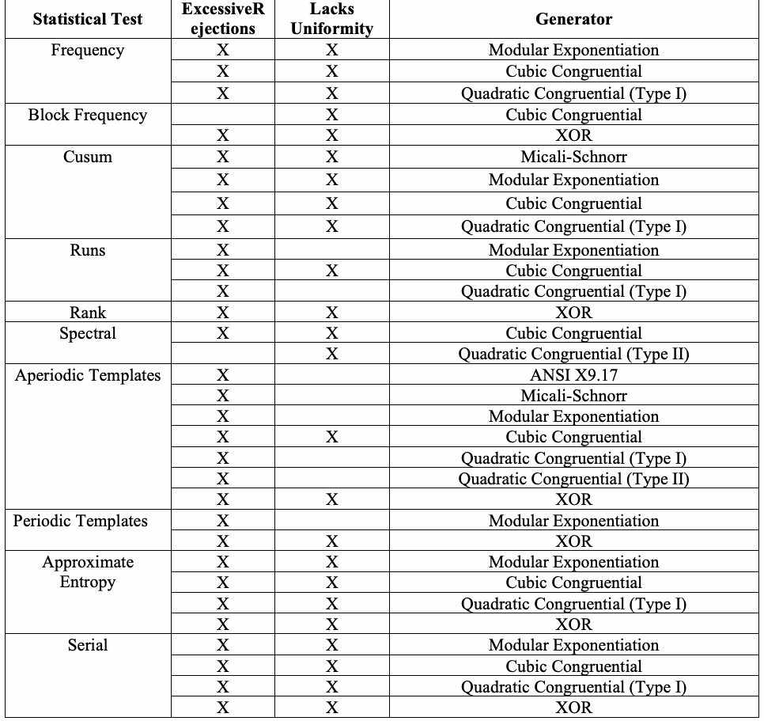
| 統計検定 | 過剰棄却 | 一様性の欠如 | 生成器 |
| 頻度 | X | X | モジュラー累乗 |
| X | X | 三次合同法 | |
| X | X | 二次合同法（Type I） | |
| ブロック頻度 | X | 三次合同法 | |
| X | X | XOR | |
| 累積和（CUSUM） | X | X | Micali-Schnorr |
| X | X | モジュラー累乗 | |
| X | X | 三次合同法 | |
| X | X | 二次合同法（Type I） | |
| ラン | X | モジュラー累乗 | |
| X | X | 三次合同法 | |
| X | 二次合同法（Type I） | ||
| 階数 | X | X | XOR |
| スペクトル | X | X | 三次合同法 |
| X | 二次合同法（Type II） | ||
| 非周期テンプレート | X | ANSI X9.17 | |
| X | Micali-Schnorr | ||
| X | モジュラー累乗 | ||
| X | X | 三次合同法 | |
| X | 二次合同法（Type I） | ||
| X | 二次合同法（Type II） | ||
| X | X | XOR | |
| 周期テンプレート | X | モジュラー累乗 | |
| X | X | XOR | |
| 近似エントロピー | X | X | モジュラー累乗 |
| X | X | 三次合同法 | |
| X | X | 二次合同法（Type I） | |
| X | X | XOR | |
| シリアル | X | X | モジュラー累乗 |
| X | X | 三次合同法 | |
| X | X | 二次合同法（Type I） | |
| X | X | XOR |
Table D.1: Illustration of Rejection/Uniformity Failures
表D.1：棄却／一様性の失敗例
未レビュー訳Appendix E—Numerical Algorithm Issues
付録E—数値アルゴリズムに関する問題
未レビュー訳For each binary sequence, an individual statistical test must produce at least one P-value. P-values are based on the evaluation of special functions, which must be as accurate as possible on the target platform. The log files produced by each statistical test report P-values with six digits of precision, which should be sufficient. However, if greater precision is desired, modify the printf statements in each statistical test accordingly.
各二進系列について、個々の統計検定は少なくとも一つのP値を出力しなければならない。P値は特殊関数の評価に基づくため、対象プラットフォーム上で可能な限り正確でなければならない。各統計検定のログファイルにはP値が六桁の精度で記録され、この精度で十分と考えられる。ただし、より高い精度が必要な場合は、各統計検定のprintf文をそれに応じて変更する。
未レビュー訳During the testing phase, NIST commonly evaluated sequences on the order \(10^{6}\); hence, results are based on this assumption. If the user wishes to choose longer sequence lengths, then be aware that numerical computations may be inaccurate due to machine or algorithmic limitations. For further information on numerical analysis matters, see [6]14.
For the purposes of illustration, sample parameter values and corresponding special function values are shown in Table E.1 and Table E.2. Table E.1 compares the results for the incomplete gamma function for selected parameter values for \(a\) and \(x .\) The results are shown for Maple15, Matlab10, and the Numerical Recipe16 routines. Recall that the definitions for the gamma function and the incomplete gamma function are defined, respectively, as:
テスト段階において、NISTは一般に\(10^{6}\)のオーダーのシーケンスを評価した。したがって、結果はこの仮定に基づいている。ユーザーがより長いシーケンス長を選択することを希望する場合、マシンまたはアルゴリズムの制限により数値計算が不正確になる可能性があることに注意すること。数値解析に関する事項の詳細については、[6]14を参照のこと。
説明の目的で、サンプルパラメータ値と対応する特殊関数の値を表E.1および表E.2に示す。表E.1は、\(a\)および\(x .\)の選択されたパラメータ値に対する不完全ガンマ関数の結果を比較している。結果は、Maple15、Matlab10、およびNumerical Recipe16のルーチンについて示されている。ガンマ関数および不完全ガンマ関数の定義は、それぞれ次のように定義されていることを想起されたい：
where \(Q(a,0)=1\) and \(Q(a,\infty)=0\).
ここで、\(Q(a,0)=1\) および \(Q(a,\infty)=0\)である。
未レビュー訳Since the algorithm used in the test suite implementation of the incomplete gamma function is based on the numerical recipe codes, it is evident that the function is accurate to at least the seventh decimal place. For large values of a, the precision will degrade, as will confidence in the result (unless a computer algebra system is employed to ensure high precision computations).
検定スイートの不完全ガンマ関数の実装で使用されるアルゴリズムはNumerical Recipesのコードに基づいているため、この関数は少なくとも小数第七位まで正確であることが分かる。aの値が大きい場合、精度が低下し、それに伴って結果への信頼性も低下する（高精度計算を保証するために数式処理システムを用いる場合を除く）。
未レビュー訳Table E.2 compares the results for the complementary error function (see Section 5.3.3) for selected parameter values for \(x .\) The results are shown for ANSI C, Maple, and Matlab. Recall that the definition for the complementary error function is:
表E.2は、\(x .\) の選択されたパラメータ値に対する相補誤差関数（セクション5.3.3を参照）の結果を比較したものである。結果はANSI C、Maple、およびMatlabについて示されている。相補誤差関数の定義が以下であることを想起されたい：
| a = x = 600 | Q(a,x) | a = x = 800 | Q(a,x) |
| Maple Matlab Test Suite | 0.4945710333 0.4945710331 0.4945710331 | Maple Matlab Test Suite | 0.4952983876 0.4952983876 0.4952983876 |
| a = x = 1000 | Q(a,x) | a = x = 10000 | Q(a,x) |
| Maple Matlab Test Suite | 0.4957947559 0.4957947558 0.4957947558 | Maple Matlab Test Suite | 0.4986701918 0.4986701917 0.4986701917 |
| a = x = 100000 | Q(a,x) | a = x = 1000000 | Q(a,x) |
| Maple Matlab Test Suite | 0.4995794779 0.4995794779 0.4995794778 | Maple Matlab Test Suite | 0.4998670192 0.4998670196 0.4998670205 |
原本PDFの抜粋画像
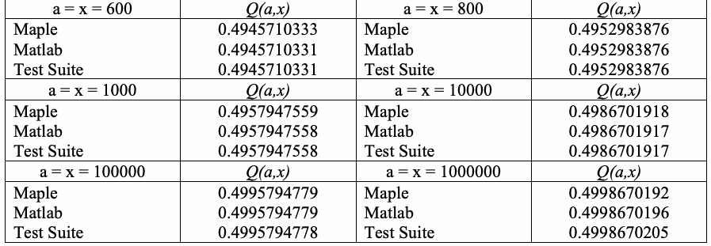
| a = x = 600 | Q(a,x) | a = x = 800 | Q(a,x) |
| Maple Matlab テストスイート | 0.4945710333 0.4945710331 0.4945710331 | Maple Matlab テストスイート | 0.4952983876 0.4952983876 0.4952983876 |
| a = x = 1000 | Q(a,x) | a = x = 10000 | Q(a,x) |
| Maple Matlab テストスイート | 0.4957947559 0.4957947558 0.4957947558 | Maple Matlab テストスイート | 0.4986701918 0.4986701917 0.4986701917 |
| a = x = 100000 | Q(a,x) | a = x = 1000000 | Q(a,x) |
| Maple Matlab テストスイート | 0.4995794779 0.4995794779 0.4995794778 | Maple Matlab テストスイート | 0.4998670192 0.4998670196 0.4998670205 |
Table E.1: Selected Input Parameters for the Incomplete Gamma Function
表E.1：不完全ガンマ関数の選択入力パラメータ
未レビュー訳| x | erfc(x) | x | erfc(x) |
| 0.00 / Test Suite Maple Matlab | 1.000000000000000 1.000000000000000 1.000000000000000 | 0.50 / Test Suite Maple Matlab | 0.479500122186953 0.479500122186950 0.479500122186953 |
| 1.00 / Test Suite Maple Matlab | 0.157299207050285 0.157299207050280 0.157299207050285 | 1.50 / Test Suite Maple Matlab | 0.033894853524689 0.033894853524690 0.033894853524689 |
| 2.00 / Test Suite Maple Matlab | 0.004677734981047 0.004677734981050 0.004677734981047 | 2.50 / Test Suite Maple Matlab | 0.000406952017445 0.000406952017440 0.000406952017445 |
| 3.00 / Test Suite Maple Matlab | 0.000022090496999 0.000022090497000 0.000022090496999 | 3.50 / Test Suite Maple Matlab | 0.000000743098372 0.000000743098370 0.000000743098372 |
原本PDFの抜粋画像
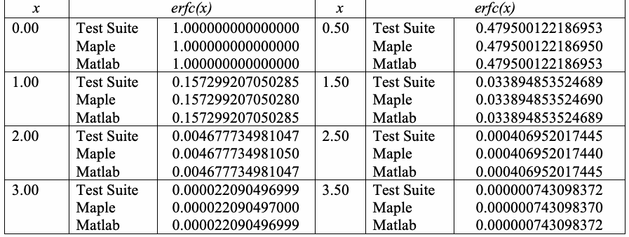
| x | erfc(x) | x | erfc(x) |
| 0.00 / テストスイート Maple Matlab | 1.000000000000000 1.000000000000000 1.000000000000000 | 0.50 / テストスイート Maple Matlab | 0.479500122186953 0.479500122186950 0.479500122186953 |
| 1.00 / テストスイート Maple Matlab | 0.157299207050285 0.157299207050280 0.157299207050285 | 1.50 / テストスイート Maple Matlab | 0.033894853524689 0.033894853524690 0.033894853524689 |
| 2.00 / テストスイート Maple Matlab | 0.004677734981047 0.004677734981050 0.004677734981047 | 2.50 / テストスイート Maple Matlab | 0.000406952017445 0.000406952017440 0.000406952017445 |
| 3.00 / テストスイート Maple Matlab | 0.000022090496999 0.000022090497000 0.000022090496999 | 3.50 / テストスイート Maple Matlab | 0.000000743098372 0.000000743098370 0.000000743098372 |
Table E.2: Selected Input Parameters for the Complementary Error Function
表E.2：相補誤差関数の選択入力パラメータ
未レビュー訳Thus, it is evident that the various math routines produce results that are sufficiently close to each other. The differences are negligible. To reduce the likelihood for obtaining an inaccurate P-value result, NIST has prescribed recommended input parameters.
したがって、各種数学ルーチンが十分に近い結果を返すことは明らかであり、その差は無視できる。不正確なP値が得られる可能性を減らすため、NISTは推奨入力パラメータを定めている。
未レビュー訳E-2
E-2
未レビュー訳Appendix F—Supporting Software
付録F—補助ソフトウェア
未レビュー訳F.1
F.1
未レビュー訳Rank Computation of Binary Matrices
二進行列の階数計算
未レビュー訳Apply elementary row operations where the addition operator is taken to be the exclusive-OR operation. The matrices are reduced to upper triangular form using forward row operations, and the operation is repeated in reverse in order using backward row operations in order to arrive at a matrix in triangular form. The rank is then taken to be the number of nonzero rows in the resulting Gaussian reduced matrix.
加算演算子を排他的論理和（XOR）とする基本行操作を適用する。行列は前進行操作によって上三角形式に簡約し、続いて逆順に後退行操作を適用して三角形式の行列を得る。階数は、ガウス消去法で簡約した結果の行列にある非ゼロ行の数とする。
未レビュー訳Forward Application of Elementary Row Operations:
基本行操作の前進適用：
未レビュー訳Let each element in the \(m\) by \(m\) matrix be designated as \(a_{i , j}\)
\(m\) × \(m\) 行列の各要素を \(a_{i , j}\)
と表すとする。未レビュー訳1.Set i = 1
1.i = 1を設定する。
未レビュー訳2. If element \(a_{i , i}\) \(= 0\) (i.e., the element on the diagonal \(\ne \) 1), then swap all elements in the \(i\)th row with all elements in the next row that contains a one in the \(i\)th column (i.e., this row is the \(k\)th row, where \(i < k \le m )\) . If no row contains a “1” in this position, go to step 4.
3. If element \(a_{i , i}\) \(= 1\) , then if any subsequent row contains a “1” in the \(i\)th column, replace each element in that row with the exclusive-OR of that element and the corresponding element in the \(i\)th row.
- Set \(\mathrm{row}=i+1\).
- Set \(\mathrm{col}=i\).
- If \(a_{\mathrm{row},\mathrm{col}}=0\), then go to step 3g.
- \(a_{\mathrm{row},\mathrm{col}}=a_{\mathrm{row},\mathrm{col}}\oplus a_{i,\mathrm{col}}\)
- If \(\mathrm{col}=m\), then go to step 3g.
- \(\mathrm{col}=\mathrm{col}+1\); go to step 3d.
- If \(\mathrm{row}=m\), then go to step 4.
- \(\mathrm{row}=\mathrm{row}+1\); go to step 3b.
2. 要素 \(a_{i , i}\) \(= 0\)（すなわち、対角線上の要素 \(\ne \) 1）である場合、第\(i\)行のすべての要素を、第\(i\)列に1を含む次の行のすべての要素と交換する（すなわち、この行は \(i < k \le m )\) である第\(k\)行である）。この位置に「1」を含む行がない場合は、ステップ4に進む。
3. 要素 \(a_{i , i}\) \(= 1\) である場合、後続のいずれかの行が第\(i\)列に「1」を含んでいれば、その行の各要素を、その要素と第\(i\)行の対応する要素との排他的論理和（XOR）で置き換える。
- \(\mathrm{row}=i+1\)に設定する。
- \(\mathrm{col}=i\)に設定する。
- \(a_{\mathrm{row},\mathrm{col}}=0\) の場合、ステップ3gに進む。
- \(a_{\mathrm{row},\mathrm{col}}=a_{\mathrm{row},\mathrm{col}}\oplus a_{i,\mathrm{col}}\)
- \(\mathrm{col}=m\) の場合、ステップ3gに進む。
- \(\mathrm{col}=\mathrm{col}+1\)。ステップ3dに進む。
- \(\mathrm{row}=m\) の場合、ステップ4に進む。
- \(\mathrm{row}=\mathrm{row}+1\)。ステップ3bに進む。
4.If i<m-1, then i=i+1; go to step 2.
4.i < m-1なら、i = i + 1とし、ステップ2へ進む。
未レビュー訳5.Forward row operations completed.
5.前進行操作が完了。
未レビュー訳Backward Application of Elementary Row Operations:
基本行操作の後退適用：
未レビュー訳1.Set i=m.
1.i = mを設定する。
未レビュー訳2. If element \(a_{i , i}\) \(= 0\) (i.e., the element on the diagonal \(\ne \) 1), then swap all elements in the i\(th\) row with all elements in the next row that contains a one in the i\(th\) column (i.e., this row is the k\(th\) row, where \(1 \le k <\) \(i )\) . If no row contains a “1” in this position, go to step 4.
3. If element \(a_{i , i}\) \(= 1\) , then if any preceding row contains a “1” in the i\(th\) column, replace each element in that row with the exclusive-OR of that element and the corresponding element in the i\(th\) row.
2. 要素 \(a_{i , i}\) \(= 0\)（すなわち、対角線上の要素 \(\ne \) 1）である場合、第i\(th\)行のすべての要素を、第i\(th\)列に1を含む次の行のすべての要素と交換する（すなわち、この行は \(1 \le k <\) \(i )\) である第k\(th\)行である）。この位置に「1」を含む行がない場合は、ステップ4に進む。
3. 要素 \(a_{i , i}\) \(= 1\) である場合、先行するいずれかの行が第i\(th\)列に「1」を含んでいれば、その行の各要素を、その要素と第i\(th\)行の対応する要素との排他的論理和（XOR）で置き換える。
未レビュー訳F-1
F-1
未レビュー訳- Set \(\mathrm{row}=i-1\).
- Set \(\mathrm{col}=i\).
- If \(a_{\mathrm{row},\mathrm{col}}=0\), then go to step 3g.
- \(a_{\mathrm{row},\mathrm{col}}=a_{\mathrm{row},\mathrm{col}}\oplus a_{i,\mathrm{col}}\)
- If \(\mathrm{col}=1\), then go to step 3g.
- \(\mathrm{col}=\mathrm{col}-1\); go to step 3d.
- If \(\mathrm{row}=1\), then go to step 4.
- \(\mathrm{row}=\mathrm{row}-1\); go to step 3b.
- \(\mathrm{row}=i-1\)に設定する。
- \(\mathrm{col}=i\)に設定する。
- \(a_{\mathrm{row},\mathrm{col}}=0\) の場合、ステップ3gに進む。
- \(a_{\mathrm{row},\mathrm{col}}=a_{\mathrm{row},\mathrm{col}}\oplus a_{i,\mathrm{col}}\)
- \(\mathrm{col}=1\) の場合、ステップ3gに進む。
- \(\mathrm{col}=\mathrm{col}-1\)。ステップ3dに進む。
- \(\mathrm{row}=1\) の場合、ステップ4に進む。
- \(\mathrm{row}=\mathrm{row}-1\)。ステップ3bに進む。
4.If i>2, then i=i-1 and go to step 2.
4.i > 2なら、i = i - 1とし、ステップ2へ進む。
未レビュー訳5.Backward row operation complete.
5.後退行操作が完了。
未レビュー訳6.The rank of the matrix = the number of non-zero rows.
6.行列の階数は、非ゼロ行の数である。
未レビュー訳Example of Forward Row Operations:
前進行操作の例：
未レビュー訳| A | \(\begin{pmatrix}1&0&0&0&0&0\\0&0&0&0&0&1\\1&0&0&0&0&1\\1&0&1&0&1&0\\0&0&1&0&1&1\\0&0&0&0&1&0\end{pmatrix}\) | The original matrix. |
| B | \(\begin{pmatrix}1&0&0&0&0&0\\0&0&0&0&0&1\\0&0&0&0&0&1\\0&0&1&0&1&0\\0&0&1&0&1&1\\0&0&0&0&1&0\end{pmatrix}\) | Since \(a_{1,1}=1\) and rows 3 and 4 contain a 1 in the first column (see the original matrix), rows 3 and 4 are replaced by the exclusive-OR of that row and row 1. |
| C | \(\begin{pmatrix}1&0&0&0&0&0\\0&0&0&0&0&1\\0&0&0&0&0&1\\0&0&1&0&1&0\\0&0&1&0&1&1\\0&0&0&0&1&0\end{pmatrix}\) | Since \(a_{2,2}\ne1\) and no other row contains a “1” in this column (see B), the matrix is not altered. |
| A | \(\begin{pmatrix}1&0&0&0&0&0\\0&0&0&0&0&1\\1&0&0&0&0&1\\1&0&1&0&1&0\\0&0&1&0&1&1\\0&0&0&0&1&0\end{pmatrix}\) | 元の行列。 |
| B | \(\begin{pmatrix}1&0&0&0&0&0\\0&0&0&0&0&1\\0&0&0&0&0&1\\0&0&1&0&1&0\\0&0&1&0&1&1\\0&0&0&0&1&0\end{pmatrix}\) | \(a_{1,1}=1\) であり、行3および行4が第1列に1を含んでいるため（元の行列を参照）、行3および行4はその行と行1の排他的論理和（XOR）で置き換えられる。 |
| C | \(\begin{pmatrix}1&0&0&0&0&0\\0&0&0&0&0&1\\0&0&0&0&0&1\\0&0&1&0&1&0\\0&0&1&0&1&1\\0&0&0&0&1&0\end{pmatrix}\) | \(a_{2,2}\ne1\) であり、この列に「1」を含む他の行は存在しないため（Bを参照）、行列は変更されない。 |
F-2
F-2
未レビュー訳| D | \(\begin{pmatrix}1&0&0&0&0&0\\0&0&0&0&0&1\\0&0&1&0&1&0\\0&0&0&0&0&1\\0&0&1&0&1&1\\0&0&0&0&1&0\end{pmatrix}\) | Since \(a_{3,3}\ne1\), but the 4th row contains a “1” in the 3rd column (see B or C), the two rows are switched. |
| E | \(\begin{pmatrix}1&0&0&0&0&0\\0&0&0&0&0&1\\0&0&1&0&1&0\\0&0&0&0&0&1\\0&0&0&0&0&1\\0&0&0&0&1&0\end{pmatrix}\) | Since row 5 contains a “1” in the 3rd column (see D), row 5 is replaced by the exclusive-OR of row 1 and row 5. |
| F | \(\begin{pmatrix}1&0&0&0&0&0\\0&0&0&0&0&1\\0&0&1&0&1&0\\0&0&0&0&0&1\\0&0&0&0&0&1\\0&0&0&0&1&0\end{pmatrix}\) | Since \(a_{4,4}\ne1\) and no other row contains a “1” in this column (see E), the matrix is not altered. |
| G | \(\begin{pmatrix}1&0&0&0&0&0\\0&0&0&0&0&1\\0&0&1&0&1&0\\0&0&0&0&0&1\\0&0&0&0&1&0\\0&0&0&0&0&1\end{pmatrix}\) | Since \(a_{5,5}\ne1\), but row 6 contains a 1 in column 5 (see F), the two rows are switched. Since no row below this contains a “1” in the 5th column, the end of the forward process is complete. |
| D | \(\begin{pmatrix}1&0&0&0&0&0\\0&0&0&0&0&1\\0&0&1&0&1&0\\0&0&0&0&0&1\\0&0&1&0&1&1\\0&0&0&0&1&0\end{pmatrix}\) | \(a_{3,3}\ne1\)であるが、第4行の第3列に「1」が含まれているため（BまたはCを参照）、これら2つの行が入れ替えられる。 |
| E | \(\begin{pmatrix}1&0&0&0&0&0\\0&0&0&0&0&1\\0&0&1&0&1&0\\0&0&0&0&0&1\\0&0&0&0&0&1\\0&0&0&0&1&0\end{pmatrix}\) | 行5の第3列に「1」が含まれているため（Dを参照）、行5は行1と行5の排他的論理和（XOR）で置き換えられる。 |
| F | \(\begin{pmatrix}1&0&0&0&0&0\\0&0&0&0&0&1\\0&0&1&0&1&0\\0&0&0&0&0&1\\0&0&0&0&0&1\\0&0&0&0&1&0\end{pmatrix}\) | \(a_{4,4}\ne1\)であり、この列で他に「1」を含む行はないため（Eを参照）、行列は変更されない。 |
| G | \(\begin{pmatrix}1&0&0&0&0&0\\0&0&0&0&0&1\\0&0&1&0&1&0\\0&0&0&0&0&1\\0&0&0&0&1&0\\0&0&0&0&0&1\end{pmatrix}\) | \(a_{5,5}\ne1\)であるが、行6の列5に1が含まれているため（Fを参照）、これら2つの行が入れ替えられる。これより下の行で第5列に「1」を含む行はないため、前進プロセスの終了となる。 |
The Subsequent Backward Row Operations:
後退行操作の続き：
未レビュー訳| H | \(\begin{pmatrix}1&0&0&0&0&0\\0&0&0&0&0&0\\0&0&1&0&1&0\\0&0&0&0&0&0\\0&0&0&0&1&0\\0&0&0&0&0&1\end{pmatrix}\) | Since \(a_{6,6}=1\) and rows 2 and 4 contain ones in the 6th column (see G), rows 2 and 4 are replaced by the exclusive-OR of that row and row 6. |
| H | \(\begin{pmatrix}1&0&0&0&0&0\\0&0&0&0&0&0\\0&0&1&0&1&0\\0&0&0&0&0&0\\0&0&0&0&1&0\\0&0&0&0&0&1\end{pmatrix}\) | \(a_{6,6}=1\)であり、行2と行4の第6列に1が含まれているため（Gを参照）、行2と行4はそれぞれの行と行6の排他的論理和（XOR）で置き換えられる。 |
F-3
F-3
未レビュー訳| I | \(\begin{pmatrix}1&0&0&0&0&0\\0&0&0&0&0&0\\0&0&1&0&0&0\\0&0&0&0&0&0\\0&0&0&0&1&0\\0&0&0&0&0&1\end{pmatrix}\) | Since \(a_{5,5}=1\) and row 3 contains a one in the 5th column (see H), row 3 is replaced by the exclusive-OR or row 3 and row 5. |
| J | \(\begin{pmatrix}1&0&0&0&0&0\\0&0&0&0&0&0\\0&0&1&0&0&0\\0&0&0&0&0&0\\0&0&0&0&1&0\\0&0&0&0&0&1\end{pmatrix}\) | Since \(a_{4,4}\ne1\) and no other row has a one in column 4, the matrix is not altered. |
| K | \(\begin{pmatrix}1&0&0&0&0&0\\0&0&0&0&0&0\\0&0&1&0&0&0\\0&0&0&0&0&0\\0&0&0&0&1&0\\0&0&0&0&0&1\end{pmatrix}\) | Since \(a_{3,3}=1\), but no other row has a one in column 3, the matrix is not altered. |
| L | \(\begin{pmatrix}1&0&0&0&0&0\\0&0&0&0&0&0\\0&0&1&0&0&0\\0&0&0&0&0&0\\0&0&0&0&1&0\\0&0&0&0&0&1\end{pmatrix}\) | Since \(a_{2,2}\ne1\) and no other row has a one in column 2, the matrix is not altered, and the process is complete. |
| I | \(\begin{pmatrix}1&0&0&0&0&0\\0&0&0&0&0&0\\0&0&1&0&0&0\\0&0&0&0&0&0\\0&0&0&0&1&0\\0&0&0&0&0&1\end{pmatrix}\) | \(a_{5,5}=1\)であり、行3の第5列に1が含まれているため（Hを参照）、行3は行3と行5の排他的論理和（XOR）で置き換えられる。 |
| J | \(\begin{pmatrix}1&0&0&0&0&0\\0&0&0&0&0&0\\0&0&1&0&0&0\\0&0&0&0&0&0\\0&0&0&0&1&0\\0&0&0&0&0&1\end{pmatrix}\) | \(a_{4,4}\ne1\)であり、他の行で列4に1を持つものはないため、行列は変更されない。 |
| K | \(\begin{pmatrix}1&0&0&0&0&0\\0&0&0&0&0&0\\0&0&1&0&0&0\\0&0&0&0&0&0\\0&0&0&0&1&0\\0&0&0&0&0&1\end{pmatrix}\) | \(a_{3,3}=1\)であるが、他の行で列3に1を持つものはないため、行列は変更されない。 |
| L | \(\begin{pmatrix}1&0&0&0&0&0\\0&0&0&0&0&0\\0&0&1&0&0&0\\0&0&0&0&0&0\\0&0&0&0&1&0\\0&0&0&0&0&1\end{pmatrix}\) | \(a_{2,2}\ne1\)であり、他の行で列2に1を持つものはないため、行列は変更されず、プロセスは完了する。 |
Since the final form of the matrix has 4 non-zero rows, the rank of the matrix is 4.
行列の最終形には非ゼロ行が4つあるため、行列の階数は4である。
未レビュー訳F.2
F.2
未レビュー訳Construction of Aperiodic Templates
非周期テンプレートの構築
未レビュー訳For the purposes of executing the Non-overlapping Template Matching statistical test, all \(2^{m} m -\)bit binary sequences that are aperiodic were pre-computed. These templates, or patterns, were stored in a file for \(m\) \(= 2\) to \(m = 21 .\) The ANSI-C program utilized in finding these templates is provided below. By modifying the parameter \(M ,\) the template library corresponding to the template can be constructed. This parameter value should not exceed \(B ,\) since the dec2bin conversion routine will not operate correctly. Conceivably, this source code can be easily modified to construct arbitrary \(2^{m} m -\)bit binary sequences for larger \(m .\)
非重複テンプレートマッチング検定を実行する目的で、非周期的であるすべての\(2^{m} m -\)ビット2値シーケンスが事前計算された。これらのテンプレート（またはパターン）は、\(m\) \(= 2\)から\(m = 21 .\)についてファイルに保存された。これらのテンプレートを見つけるために利用されたANSI-Cプログラムを以下に示す。パラメータ\(M ,\)を変更することにより、テンプレートに対応するテンプレートライブラリを構築できる。dec2bin変換ルーチンが正しく動作しなくなるため、このパラメータ値は\(B ,\)を超えるべきではない。考えられることとして、より大きな\(m .\)
に対して任意の\(2^{m} m -\)ビット2値シーケンスを構築するために、このソースコードを容易に変更することができる。未レビュー訳F-4
F-4
未レビュー訳#include <stdio.h>
#include <math.h>
#define B 32
#define M 6
int *A;
static long nonPeriodic;
unsigned displayBits(FILE*, long, long);
int main()
{
FILE *fp1, *fp2;
long i, j, count, num;
A = (unsigned*) calloc(B,sizeof(unsigned));
fp1 = fopen("template", "w");
fp2 = fopen("dataInfo", "a");
num = pow(2,M);
count = log(num)/log(2);
nonPeriodic = 0;
for(i = 1; i < num; i++)
displayBits(fp1, i,count);
fprintf(fp2,"M = %d\n", M);
fprintf(fp2,"# of nonperiodic templates = %u\n", nonPeriodic);
fprintf(fp2,"# of all possible templates = %u\n", num);
fprintf(fp2,"{# nonperiodic}/{# templates} = %f\n", (double)nonPeriodic/num);
fprintf(fp2,"==========================================================\n");
fclose(fp1);
fclose(fp2);
free(A);
return 0;
}
void displayBits(FILE* fp, long value, long count)
{
int i, j, match, c, displayMask = 1 << (B-1);
for(i = 0; i < B; i++)
A[i] = 0;
for(c = 1; c <= B; c++) {
if (value & displayMask)
A[c-1] = 1;
else
A[c-1] = 0;
value <<= 1;
}for(i = 1; i < count; i++) {
match = 1;
if ((A[B-count]!= A[B-1]) &&
((A[B-count]!= A[B-2])||(A[B-count+1] != A[B-1]))) {
for(c = B-count; c <= (B-1)-i; c++) {
if (A[c] != A[c+i]) {
match = 0;
break;
}
}
}
if (match) {
/* printf("\nPERIODIC TEMPLATE: SHIFT = %d\n",i); */
break;
}
}
if (!match) {
for(c = B-count; c < (B-1); c++) fprintf(fp,"%u",A[c]);
fprintf(fp,"%u\n", A[B-1]);
nonPeriodic++;
}
return;
}F-6
F-6
未レビュー訳F.3
F.3
未レビュー訳Generation of the Binary Expansion of Irrational Numbers
無理数の二進展開の生成
未レビュー訳The sample Mathematica program utilized in constructing four sample files is shown below.
四つのサンプルファイルを作成するために使用したMathematicaプログラムの例を以下に示す。
未レビュー訳Mathematica Program
(************************************************************)
(* Purpose: Converts num to its decimal expansion using *)
(* its binary representation. *)
(* *)
(* Caution: The $MaxPrecision variable must be set to *)
(* the value of d. By default, Mathematica *)
(* sets this to 50000, but this can be increased.*)
(************************************************************)
BinExp[num_,d_] := Module[{n,L},
If[d > $MaxPrecision, $MaxPrecision = d];
n = N[num,d];
L = First[RealDigits[n,2]]
];
SE = BinExp[E,302500];
Save["data.e",{SE}];
SP = BinExp[Pi,302500];
Save["data.pi",{SP}];
S2 = BinExp[Sqrt[2],302500];
Save["data.sqrt2",{S2}];
S3 = BinExp[Sqrt[3],302500];
Save["data.sqrt3",{S3}];F-7
F-7
未レビュー訳Appendix G—References
付録G—参考文献
未レビュー訳[1] M. Abramowitz and I. Stegun, Handbook of Mathematical Functions, Applied Mathematics Series. Vol. 55, Washington: National Bureau of Standards, 1964; reprinted 1968 by Dover Publications, New York.
[1] M. Abramowitz and I. Stegun, Handbook of Mathematical Functions, Applied Mathematics Series. Vol. 55, Washington: National Bureau of Standards, 1964; reprinted 1968 by Dover Publications, New York.
[2] T. Cormen, C. Leiserson, & R. Rivest, Introduction to Algorithms. Cambridge, MA: The MIT Press, 1990.
[2] T. Cormen, C. Leiserson, & R. Rivest, Introduction to Algorithms. Cambridge, MA: The MIT Press, 1990.
[3] Gustafson et al., “A computer package for measuring strength of encryption algorithms,” Journal of Computers & Security. Vol. 13, No. 8, 1994, pp. 687-697.
[3] Gustafson et al., “A computer package for measuring strength of encryption algorithms,” Journal of Computers & Security. Vol. 13, No. 8, 1994, pp. 687-697.
[4] U. Maurer, “A Universal Statistical Test for Random Bit Generators,” Journal of Cryptology.
[4] U. Maurer, “A Universal Statistical Test for Random Bit Generators,” Journal of Cryptology.
未レビュー訳Vol. 5, No. 2, 1992, pp. 89-105.
Vol. 5, No. 2, 1992, pp. 89-105.
未レビュー訳[5] A. Menezes, et al., Handbook of Applied Cryptography. CRC Press, Inc., 1997. See http://www.cacr.math.uwaterloo.ca/hac/about/chap5.pdf.
[5] A. Menezes, et al., Handbook of Applied Cryptography. CRC Press, Inc., 1997. See http://www.cacr.math.uwaterloo.ca/hac/about/chap5.pdf.
未レビュー訳[6] W. Press, S. Teukolsky, W. Vetterling, Numerical Recipes in C : The Art of Scientific Computing, 2nd Edition. Cambridge University Press, January 1993.
[6] W. Press, S. Teukolsky, W. Vetterling, Numerical Recipes in C : The Art of Scientific Computing, 2nd Edition. Cambridge University Press, January 1993.
未レビュー訳[7] G. Marsaglia, DIEHARD Statistical Tests: http://www.stat.fsu.edu/pub/diehard/.
[7] G. Marsaglia, DIEHARD Statistical Tests: http://www.stat.fsu.edu/pub/diehard/.
未レビュー訳[8] T. Ritter, “Randomness Tests and Related Topics, http://www.ciphersbyritter.com/RES/RANDTEST.HTM.
[8] T. Ritter, “Randomness Tests and Related Topics, http://www.ciphersbyritter.com/RES/RANDTEST.HTM.
[9] American National Standards Institute: Financial Institution Key Management (Wholesale), American Bankers Association, ANSI X9.17 - 1985 (Reaffirmed 1991).
[9] American National Standards Institute: Financial Institution Key Management (Wholesale), American Bankers Association, ANSI X9.17 - 1985 (Reaffirmed 1991).
未レビュー訳[10] FIPS 140-1, Security Requirements for Cryptographic Modules, Federal Information Processing Standards Publication 140-1. U.S. Department of Commerce/NIST, National Technical Information Service, Springfield, VA, 1994.
[10] FIPS 140-1, Security Requirements for Cryptographic Modules, Federal Information Processing Standards Publication 140-1. U.S. Department of Commerce/NIST, National Technical Information Service, Springfield, VA, 1994.
[11] FIPS 180-1, Secure Hash Standard, Federal Information Processing Standards Publication 180-1. U.S. Department of Commerce/NIST, National Technical Information Service, Springfield, VA, April 17, 1995.
[11] FIPS 180-1, Secure Hash Standard, Federal Information Processing Standards Publication 180-1. U.S. Department of Commerce/NIST, National Technical Information Service, Springfield, VA, April 17, 1995.
[12] FIPS 186, Digital Signature Standard (DSS), Federal Information Processing Standards Publication 186. U.S. Department of Commerce/NIST, National Technical Information Service, Springfield, VA, May 19, 1994.
[12] FIPS 186, Digital Signature Standard (DSS), Federal Information Processing Standards Publication 186. U.S. Department of Commerce/NIST, National Technical Information Service, Springfield, VA, May 19, 1994.
[13] MAPLE, A Computer Algebra System (CAS). Available from Waterloo Maple Inc.;
[13] MAPLE、コンピューター代数システム（CAS）。Waterloo Maple Inc.から入手可能；
未レビュー訳http://www.maplesoft.com.
http://www.maplesoft.com.
未レビュー訳G-1
G-1
未レビュー訳